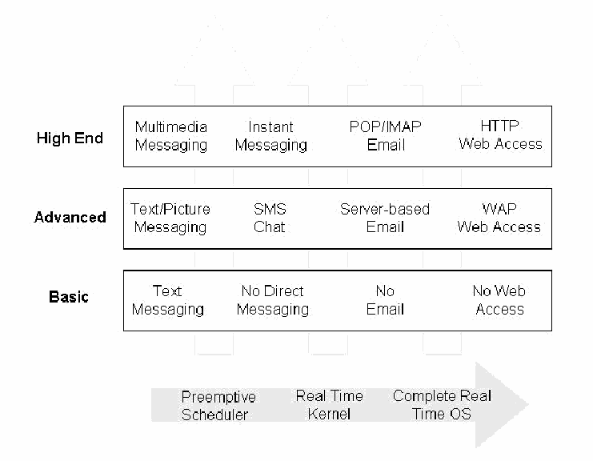
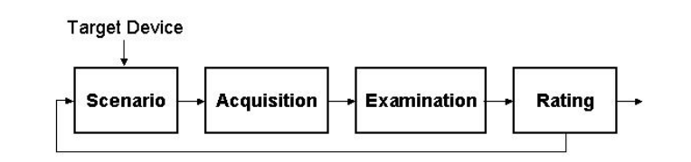

NIST IR 7250 日本語訳
英語タイトル : Cell Phone Forensic Tools: an Overview and Analysis日本語タイトル : 携帯電話フォレンジックツール：概要と分析
公開日 : 2005-10-19
原文URL : https://csrc.nist.gov/pubs/ir/7250/final
原本 PDF : https://doi.org/10.6028/NIST.IR.7250
訳文 : 有志による非公式の日本語訳（AI による翻訳とレビュー）。全 1666 段落のうち 1589 段落を翻訳済み（原文取得日 : 2026-10-31）
[要約] NIST IR 7250 は、携帯型通信機器で見つかったデータの取得、検査、報告のために設計された現行のフォレンジックソフトウェアの概要と、その機能と限界についての理解を示した報告書です。目的は、CDMA、TDMA、GSM の各ネットワーク上で動作し、Symbian、RIM、Palm OS、Pocket PC、Linux などのオペレーティングシステムを実行する携帯電話から情報を取得できるツールの能力について、情報を提供することです。携帯電話や PDA 電話が犯罪やその他のインシデントに関与した場合、フォレンジック検査官には、機器上の情報を適切に取り出して迅速に検査できるツールが必要であるとしています。ツールごとの概要と、シナリオを用いた分析の結果を述べています。
［NIST のロゴ。公的な標章のため、この非公式サイトには掲載していません。原本 PDF を参照してください。］
NISTIR 7250
NISTIR 7250
Cell Phone Forensic Tools: An Overview and Analysis
携帯電話フォレンジックツール: 概要と分析
Rick Ayers
Wayne Jansen
Nicolas Cilleros
Ronan Daniellou
Rick Ayers
Wayne Jansen
Nicolas Cilleros
Ronan Daniellou
NISTIR 7250
NISTIR 7250
Cell Phone Forensic Tools: An Overview and Analysis
携帯電話フォレンジックツール: 概要と分析
Rick Ayers
Wayne Jansen
Nicolas Cilleros
Ronan Daniellou
Rick Ayers
Wayne Jansen
Nicolas Cilleros
Ronan Daniellou
COMPUTER SECURITY
コンピューターセキュリティ
Computer Security Division
Information Technology Laboratory
National Institute of Standards and Technology
Gaithersburg, MD 20988-8930
コンピューターセキュリティ部門
情報技術研究所
米国国立標準技術研究所
Gaithersburg, MD 20988-8930
October 2005
2005年10月
U.S. Department of Commerce
Carlos M. Gutierrez, Secretary
米国商務省
Carlos M. Gutierrez 長官
Technology Administration
Michelle O’Neill, Acting Under Secretary of Commerce for Technology
技術管理局
Michelle O’Neill、商務次官代行（技術担当）
National Institute of Standards and Technology
William A. Jeffrey, Director
米国国立標準技術研究所
William A. Jeffrey 所長
Reports on Computer Systems Technology
コンピューターシステム技術に関する報告書
The Information Technology Laboratory (ITL) at the National Institute of Standards and Technology (NIST) promotes the U.S. economy and public welfare by providing technical leadership for the Nation’s measurement and standards infrastructure. ITL develops tests, test methods, reference data, proof of concept implementations, and technical analysis to advance the development and productive use of information technology. ITL’s responsibilities include the development of technical, physical, administrative, and management standards and guidelines for the cost-effective security and privacy of sensitive unclassified information in Federal computer systems. This Interagency Report discusses ITL’s research, guidance, and outreach efforts in computer security, and its collaborative activities with industry, government, and academic organizations.
米国国立標準技術研究所（NIST）の情報技術研究所（ITL）は、国の計測・標準基盤に対する技術的なリーダーシップを提供することで、米国経済と公共の福祉を推進しています。ITL は、情報技術の開発と生産的な利用を促進するため、試験、試験方法、参照データ、概念実証の実装、および技術分析を開発しています。ITL の責務には、連邦コンピューターシステムにおける機微な非機密情報のセキュリティとプライバシーを費用対効果よく確保するための、技術的、物理的、管理的、およびマネジメント上の標準とガイドラインの策定が含まれます。この省庁間報告書は、コンピューターセキュリティに関する ITL の研究、ガイダンス、および啓発活動、ならびに産業界、政府、学術機関との協力活動について述べています。
National Institute of Standards and Technology Interagency Report
187 pages (2005)
米国国立標準技術研究所 省庁間報告書
187ページ（2005年）
Certain commercial entities, equipment, or materials may be identified in this document in order to describe an experimental procedure or concept adequately. Such identification is not intended to imply recommendation or endorsement by the National Institute of Standards and Technology, nor is it intended to imply that the entities, materials, or equipment are necessarily the best available for the purpose.
本文書では、実験の手順や概念を適切に説明するために、特定の商業的な組織、機器、または資料を挙げている場合があります。こうした記載は、米国国立標準技術研究所による推奨や支持を意味するものではなく、また、挙げられた組織、資料、または機器がその目的に利用できるもののうち最良であることを意味するものでもありません。
Abstract
概要
Cell phones and other handheld devices incorporating cell phone capabilities (e.g., Personal Digital Assistant (PDA) phones) are ubiquitous. Rather than just placing calls, certain phones allow users to perform additional tasks such as SMS (Short Message Service) messaging, Multi-Media Messaging Service (MMS) messaging, IM (Instant Messaging), electronic mail, Web browsing, and basic PIM (Personal Information Management) applications (e.g., phone and date book). PDA phones, often referred to as smart phones, provide users with the combined capabilities of both a cell phone and a PDA. In addition to network services and basic PIM applications, one can manage more extensive appointment and contact information, review electronic documents, give a presentation, and perform other tasks.
携帯電話や、携帯電話の機能を備えた他の携帯機器（例: 携帯情報端末（PDA）電話）は広く普及しています。一部の電話機では、通話をするだけでなく、SMS（Short Message Service）メッセージング、マルチメディアメッセージングサービス（MMS）メッセージング、IM（Instant Messaging）、電子メール、Web ブラウジング、基本的な PIM（Personal Information Management）アプリケーション（例: 電話帳やスケジュール帳）といった追加の作業を行えます。スマートフォンと呼ばれることの多い PDA 電話は、利用者に携帯電話と PDA の両方を組み合わせた機能を提供します。ネットワークサービスや基本的な PIM アプリケーションに加えて、より広範な予定や連絡先の情報の管理、電子文書の閲覧、プレゼンテーションの実施、その他の作業を行えます。
All but the most basic phones provide individuals with some ability to load additional applications, store and process personal and sensitive information independently of a desktop or notebook computer, and optionally synchronize the results at some later time. As digital technology evolves, the capabilities of these devices continue to improve rapidly. When cell phones or other cellular devices are involved in a crime or other incident, forensic examiners require tools that allow the proper retrieval and speedy examination of information present on the device. This report gives an overview of current forensic software, designed for acquisition, examination, and reporting of data discovered on cellular handheld devices, and an understanding of their capabilities and limitations.
ごく基本的な電話機を除けば、電話機は、追加のアプリケーションをロードし、デスクトップやノート型コンピューターとは独立して個人情報や機微な情報を保存・処理し、必要に応じて後でその結果を同期する能力を、ある程度利用者に提供します。デジタル技術が進化するにつれて、これらの機器の機能は急速に向上し続けています。携帯電話や他の携帯型通信機器が犯罪やその他のインシデントに関与した場合、フォレンジック検査官には、機器上にある情報を適切に取り出して迅速に検査できるツールが必要です。本報告書は、携帯型通信機器で見つかったデータの取得、検査、および報告のために設計された現行のフォレンジックソフトウェアの概要と、その機能と限界についての理解を示します。
Purpose and Scope
目的と範囲
The purpose of this report is to inform law enforcement, incident response team members, and forensic examiners about the capabilities of present day forensic software tools that have the ability to acquire information from cell phones operating over CDMA (Code Division Multiple Access), TDMA (Time Division Multiple Access), GSM (Global System for Mobile communications) networks and running various operating systems, including Symbian, Research in Motion (RIM), Palm OS, Pocket PC, and Linux.
本報告書の目的は、CDMA（Code Division Multiple Access）、TDMA（Time Division Multiple Access）、GSM（Global System for Mobile communications）の各ネットワーク上で動作し、Symbian、Research in Motion（RIM）、Palm OS、Pocket PC、Linux などのさまざまなオペレーティングシステムを実行する携帯電話から情報を取得できる、現在のフォレンジックソフトウェアツールの機能について、法執行機関、インシデント対応チームのメンバー、およびフォレンジック検査官に知らせることです。
An overview of each tool describes the functional range and facilities for acquiring and analyzing evidence contained on cell phones and PDA phones. Generic scenarios were devised to mirror situations that arise during a forensic examination of these devices and their associated media. The scenarios are structured to reveal how selected tools react under various situations. Though generic scenarios were used in analyzing forensic tools, the procedures are not intended to serve as a formal product test or as a comprehensive evaluation. Additionally, no claims are made on the comparative benefits of one tool versus another. The report, instead, offers a broad and probing perspective on the state of the art of present-day forensic software tools for cell phones and PDA phones. Alternatives to using a forensic software tool for digital evidence recovery, such as desoldering and removing memory from a device to read out its contents or using a built-in hardware test interface to access memory, are outside the scope of this report.
各ツールの概要では、携帯電話や PDA 電話に含まれる証拠を取得・分析するための機能の範囲と機構を説明します。これらの機器と関連する媒体のフォレンジック検査中に生じる状況を反映するよう、汎用的なシナリオを考案しました。シナリオは、選択したツールがさまざまな状況でどのように反応するかを明らかにするように構成されています。フォレンジックツールの分析には汎用的なシナリオを用いましたが、その手順は、正式な製品試験や包括的な評価として役立てることを意図したものではありません。また、あるツールが別のツールより優れているという比較上の主張も行っていません。むしろ本報告書は、携帯電話と PDA 電話向けの現在のフォレンジックソフトウェアツールの最新技術の状況について、幅広く掘り下げた見方を提供します。デジタル証拠の復元にフォレンジックソフトウェアツールを使う代わりの方法、たとえば、機器からメモリを取り外し（はんだを除去し）て内容を読み出す方法や、組み込みのハードウェア試験用インターフェースを使ってメモリにアクセスする方法は、本報告書の範囲外です。
It is important to distinguish this effort from the Computer Forensics Tool Testing (CFTT) project, whose objective is to provide measurable assurance to practitioners, researchers, and other users that the tools used in computer forensics investigations provide accurate results. Accomplishing this goal requires the development of rigorous specifications and test methods for computer forensics tools and the subsequent testing of specific tools against those specifications, which goes far beyond the analysis described in this document. The CFTT is the joint effort of the National Institute of Justice, the National Institute of Standards and Technology (NIST), the Office of Law Enforcement Standards (OLES), the U. S. Department of Defense, Federal Bureau of Investigation (FBI), U.S. Secret Service, the U.S. Immigration and Customs Enforcement (BICE), and other related agencies.•
この取り組みを、Computer Forensics Tool Testing（CFTT）プロジェクトと区別することが重要です。CFTT プロジェクトの目的は、コンピューターフォレンジック調査で使われるツールが正確な結果を出すことについて、実務者、研究者、その他の利用者に測定可能な保証を提供することです。この目標を達成するには、厳密な仕様と試験方法を策定し、その仕様に対して個々のツールを試験する必要があり、それは本文書で述べる分析をはるかに超えるものです。CFTT は、National Institute of Justice、米国国立標準技術研究所（NIST）、Office of Law Enforcement Standards（OLES）、米国国防総省、Federal Bureau of Investigation（FBI）、U.S. Secret Service、U.S. Immigration and Customs Enforcement（BICE）、およびその他の関連機関による共同の取り組みです。•
The publication is not to be used as a step-by-step guide for executing a proper forensic investigation involving cell phones and PDA phones, or construed as legal advice. Its purpose is to inform readers of the various technologies available and areas for consideration when employing them. Before applying the material in this report, readers are advised to consult with management and legal officials for compliance with laws and regulations (i.e., local, state, federal, and international) that pertain to their situation.
本刊行物は、携帯電話や PDA 電話に関わる適切なフォレンジック調査を実行するための段階的な手引きとして使うものではなく、法的助言と解釈すべきものでもありません。その目的は、利用できるさまざまな技術と、それらを使う際に考慮すべき領域を読者に知らせることです。本報告書の内容を適用する前に、読者は、自らの状況に関係する法令（すなわち、地方、州、連邦、および国際的なもの）の遵守について、経営陣や法務担当者に相談することをお勧めします。
Audience
想定読者
The primary audience of the Cell Phone Forensic Tool document is law enforcement, incident response team members, and forensic examiners who are responsible for conducting forensic procedures related to cell phone devices and associated removable media.
Cell Phone Forensic Tool 文書の主な想定読者は、携帯電話機器と関連するリムーバブルメディアに関するフォレンジック手順の実施を担当する、法執行機関、インシデント対応チームのメンバー、およびフォレンジック検査官です。
Table of Contents
目次
Acknowledgements
謝辞
The authors, Rick Ayers, Wayne Jansen, Nicolas Cilleros, and Ronan Daniellou, wish to express their gratitude to colleagues who reviewed drafts of this document. In particular, their appreciation goes to Murugiah Souppaya, Karen Kent and Tim Grance from NIST, Karl Dunnagan from Mobile Forensics, Rick Mislan from Purdue University, and Eoghan Casey from Knowledge Solutions LLC and Brendan Farrah-Foley for their research, technical support, and written contributions to this document. The authors would also like to express thanks to all others who assisted with our internal review process, including Susan Ballou from NIST’s Office of Law Enforcement Standards and Keith Thomas from Sytex, Inc.
著者の Rick Ayers、Wayne Jansen、Nicolas Cilleros、Ronan Daniellou は、本文書の草稿をレビューしてくれた同僚に感謝の意を表します。とくに、NIST の Murugiah Souppaya、Karen Kent、Tim Grance、Mobile Forensics の Karl Dunnagan、Purdue University の Rick Mislan、Knowledge Solutions LLC の Eoghan Casey、および Brendan Farrah-Foley の、本文書に対する研究、技術支援、および執筆上の貢献に謝意を表します。また、NIST の Office of Law Enforcement Standards の Susan Ballou や Sytex, Inc. の Keith Thomas を含め、内部レビューの過程で協力してくれたすべての方々にも感謝します。
This report was sponsored by Dr. Bert Coursey of the Department of Homeland Security (DHS). The Department’s support and guidance in this effort are greatly appreciated.
本報告書は、国土安全保障省（DHS）の Dr. Bert Coursey の支援を受けて作成されました。この取り組みに対する同省の支援と指導に深く感謝します。
Introduction
序論
Computer forensics involves the identification, preservation, extraction, documentation, and analysis of computer data. Computer forensic examiners follow clear, well-defined methodologies and procedures that can be adapted for specific situations. Such methodologies consist of the following steps:
コンピューターフォレンジックは、コンピューターデータの識別、保全、抽出、文書化、および分析を伴います。コンピューターフォレンジック検査官は、個別の状況に合わせて適応できる、明確で十分に定義された方法論と手順に従います。そうした方法論は、次の手順で構成されます。
•Prepare a forensic copy (i.e., an identical bit-for-bit physical copy) of the acquired digital media, while preserving the acquired media’s integrity.
•取得したデジタルメディアの完全性を保ちつつ、そのフォレンジックコピー（すなわち、ビット単位で同一の物理コピー）を作成します。
•Examine the forensic copy to recover information.
•フォレンジックコピーを検査して、情報を復元します。
•Analyze the recovered information and develop a report documenting any pertinent information uncovered.
•復元した情報を分析し、発見した関連情報を文書化した報告書を作成します。
Forensic toolkits are intended to facilitate the work of examiners, allowing them to perform the above steps in a timely and structured manner, and improve the quality of the results. This paper discusses available forensic software tools for handheld cellular devices, highlighting the facilities offered and associated capabilities.
フォレンジックツールキットは、検査官の作業を容易にし、上記の手順を適時かつ体系的に実行できるようにして、結果の質を高めることを目的としています。本書では、携帯型通信機器向けに利用できるフォレンジックソフトウェアツールについて、提供される機構と関連する機能を中心に論じます。
Forensic software tools strive to address a wide range of applicable devices and handle the most common investigative situations with modest skill level requirements. These tools typically perform logical acquisitions using common protocols for synchronization, debugging, and communications. More complicated situations, such as the recovery of deleted data, often require highly specialized hardware-based tools and expertise, which is not within the scope of this report.
フォレンジックソフトウェアツールは、幅広い対象機器に対応し、最も一般的な調査状況を、控えめな技能水準で扱えるようにすることを目指しています。これらのツールは通常、同期、デバッグ、通信に用いられる一般的なプロトコルを使って、論理取得を行います。削除されたデータの復元などのより複雑な状況では、高度に専門化したハードウェアベースのツールと専門知識が必要になることが多く、それらは本報告書の範囲外です。
Handheld device forensics is a fairly new and emerging subject area within the computer forensics field, which traditionally emphasized individual workstations and network servers. Discrepancies between handheld device forensics and classical computer forensics exist due to several factors, including the following, which constrain the way in which the tools operate:
携帯機器のフォレンジックは、従来は個々のワークステーションとネットワークサーバーを重視してきたコンピューターフォレンジックの分野の中では、かなり新しく、発展途上の領域です。携帯機器のフォレンジックと従来のコンピューターフォレンジックの間には、次のものを含むいくつかの要因による相違があり、それがツールの動作のしかたを制約しています。
•The orientation toward mobility (e.g., compact size and battery powered, requiring specialized interfaces, media, and hardware)
•移動性への志向（例: 小型でバッテリー駆動であり、特殊なインターフェース、メディア、ハードウェアを必要とする）
•The filesystem residing in volatile memory versus non-volatile memory on certain systems
•一部のシステムにおける、揮発性メモリ上のファイルシステムと不揮発性メモリ上のファイルシステムの違い
•Hibernation behavior, suspending processes when powered off or idle, but remaining active
•ハイバネーション動作（電源オフ時やアイドル時にプロセスを停止するが、アクティブなままである）
•The diverse variety of embedded operating systems used
•使われている組み込みオペレーティングシステムが多種多様であること
•Short product cycles for new handheld devices
•新しい携帯機器の製品サイクルが短いこと
Most cell phones offer a set of basic capabilities that are comparable. However, the various families of devices on the marketplace differ in such areas as the hardware technology, advanced feature set, and physical format. This paper looks at forensic software tools for a number of popular platforms, including Symbian, RIM (Research In Motion), Pocket PC, and Palm OS devices. Together these platforms comprise the majority of the so-called smart phone devices currently available and in use. More basic phones, produced by various manufacturers and operational on various types of cellular networks are also addressed in the paper.
ほとんどの携帯電話は、同程度の一連の基本機能を備えています。しかし、市場に出ているさまざまな機器のファミリーは、ハードウェア技術、高度な機能セット、物理的な形状といった面で異なります。本書では、Symbian、RIM（Research In Motion）、Pocket PC、Palm OS の各機器など、いくつかの一般的なプラットフォーム向けのフォレンジックソフトウェアツールを取り上げます。これらのプラットフォームを合わせると、現在入手でき、使われているいわゆるスマートフォン機器の大半を占めます。さまざまな製造者が製造し、さまざまな種類の携帯電話網で動作する、より基本的な電話機についても、本書で扱います。
The remaining sections provide an overview of cell phones, memory cards, and forensic toolkits; describe the scenarios used to analyze the various tools and toolkits; present the findings from applying the scenarios; and summarize the conclusions drawn. The reader is assumed to have some background in computer forensics and technology. The reader should also be apprised that the tools discussed in the report are rapidly evolving, with new versions and better capabilities available regularly. The tool manufacturer should always be contacted for up-to-date information.
以降の節では、携帯電話、メモリカード、およびフォレンジックツールキットの概要を示し、各種のツールやツールキットの分析に用いたシナリオを説明し、シナリオを適用して得られた所見を示し、導かれた結論をまとめます。読者は、コンピューターフォレンジックと技術についてある程度の知識があることを前提としています。また、本報告書で論じるツールは急速に進化しており、新しいバージョンやより優れた機能が定期的に利用可能になることを、読者は承知しておくべきです。最新の情報については、ツールの製造者に問い合わせるべきです。
Background
背景
Cell phones are highly mobile communications devices that can do an array of functions ranging from that of a simple digital organizer to that of a low-end personal computer. Designed for mobility, they are compact in size, battery powered, and lightweight, often use proprietary interfaces or operating systems, and may have unique hardware characteristics for product differentiation. Overall, they can be classified as basic phones that are primarily simple voice and messaging communication devices; advanced phones that offer additional capabilities and services for multimedia; and smart phones or high-end phones that merge the capabilities of an advanced phone with those of a PDA (Personal Digital Assistant).
携帯電話は、移動性の高い通信機器であり、単純なデジタル手帳から低価格帯のパーソナルコンピューターに及ぶ幅広い機能を実行できます。携帯電話は、移動性を重視して設計されているため、小型でバッテリー駆動で軽量であり、独自のインターフェースやオペレーティングシステムを使うことが多く、製品の差別化のために固有のハードウェア特性を備えている場合があります。全体として、携帯電話は、主として単純な音声通信とメッセージ通信の機器である基本的な電話機、マルチメディア向けの追加の機能とサービスを提供する高機能な電話機、および高機能な電話機の機能と PDA（Personal Digital Assistant）の機能を融合したスマートフォンまたはハイエンドの電話機に分類できます。
Figure 1 gives an overview of the hardware characteristics of basic, advanced, and high-end cell phones for display quality, processing and storage capacity, memory and I/O expansion, built-in communications, and video and image capture. The bottom of the diagram shows the range of cellular voice and data advances from kilobit analog networks, still in use today, to megabit 3rd generation digital networks in the planning and early deployment stages. The diagram attempts to illustrate that more capable phones can capture and retain not only more information, but also more varied information, through a wider variety of sources, including removable memory modules, other wireless interfaces, and built-in hardware. Note that hardware components can and do vary from those assignments made in the diagram and, over time, technology once considered high end or advanced eventually appears in what would then be considered a basic phone. Nevertheless, the principle remains true.
図 1 は、表示品質、処理能力と記憶容量、メモリと I/O の拡張性、内蔵通信機能、動画・画像の撮影機能について、基本的な携帯電話、高機能な携帯電話、ハイエンドの携帯電話のハードウェア特性の概要を示します。図の下部は、現在も使われているキロビット級のアナログ網から、計画段階および初期導入段階にあるメガビット級の第 3 世代デジタル網まで、携帯電話の音声通信とデータ通信の進歩の範囲を示しています。この図は、より高性能な電話機が、取り外し可能なメモリモジュール、その他の無線インターフェース、内蔵ハードウェアなど、より多様な情報源を通じて、より多くの情報だけでなく、より多様な情報も取得し保持できることを示そうとしています。ハードウェア構成要素は図に割り当てられた内容と異なる場合があり、実際に異なることもあります。また、時がたつにつれて、かつてハイエンドまたは高機能と見なされた技術が、やがて当時の基本的な電話機と見なされる機器に搭載されることにも注意してください。それでも、この原則は変わりません。
![Diagram of phone hardware components by class. Three rows: "High End": 16-Bit Color Display, Superior Storage & Processing, Memory-I/O Card Slot, IrDA, WIFI, & Bluetooth, Video & Still Camera. "Advanced": 12-Bit Color Display, Additional Storage & Processing, Memory Card Slot, IrDA & Bluetooth, Still Camera. "Basic": Grayscale Display, Limited Storage & Processing, No Expansion, IrDA, No Video. Upward arrows run behind the rows. A right-pointing arrow at the bottom reads: Analog, 1st Generation Digital, 2nd Generation Digital, 3rd Generation Digital.](assets/ir-7250/p0015-figure-01.png)
Figure 1: Phone Hardware Components
図 1: 電話機のハードウェア構成要素
Just as with hardware components, software components involved in communications vary with the class of phone. Basic phones normally include text messaging using the Short Message Service (SMS). An advanced phone might add the ability to send simple picture messages or lengthy text messages using the Extended Message Service (EMS), while a high-end phone typically supports the Multimedia Message Service (MMS) to exchange sounds, color images, and text. Similarly, the ability to chat on-line directly with another user may be unsupported, supported through a dedicated SMS channel, or supported with a full Instant Messaging (IM) client. High-end phones typically support full function email and Web clients that respectively use POP (Post Office Protocol)/IMAP (Internet Message Access Protocol)/SMTP (Simple Mail Transfer Protocol) and HTTP, while advanced phones provide those services via WAP (Wireless Application Protocol), and basic phones do not include any support. Figure 2 gives an overview of the capabilities usually associated with each class of phone.
ハードウェア構成要素と同様に、通信に関わるソフトウェア構成要素も電話機の種類によって異なります。基本的な電話機には、通常、ショートメッセージサービス（SMS）によるテキストメッセージが含まれます。高機能な電話機には、簡単な画像メッセージを送る機能や、Extended Message Service（EMS）による長いテキストメッセージを送る機能が加わることがあり、ハイエンドの電話機は、通常、音声、カラー画像、テキストをやり取りするためのマルチメディアメッセージサービス（MMS）をサポートします。同様に、他の利用者と直接オンラインでチャットする機能は、サポートされていない場合、専用の SMS チャネルでサポートされる場合、完全な Instant Messaging（IM）クライアントでサポートされる場合があります。ハイエンドの電話機は、通常、それぞれ POP（Post Office Protocol）/IMAP（Internet Message Access Protocol）/SMTP（Simple Mail Transfer Protocol）と HTTP を使う、フル機能の電子メールクライアントと Web クライアントをサポートします。高機能な電話機は、それらのサービスを WAP（Wireless Application Protocol）経由で提供し、基本的な電話機にはサポートが含まれません。図 2 は、各種類の電話機に通常関連付けられる機能の概要を示しています。

Figure 2: Phone Software Components
図 2: 電話機のソフトウェア構成要素
Most basic and many advanced phones rely on proprietary real-time operating systems developed by the manufacturer. Commercially embedded operating systems for cellular devices are also available that range from a basic preemptive scheduler with support for a few other key system calls to more sophisticated kernels with scheduling alternatives, memory management support, device drivers, and exception handling, to complete embedded real-time operating systems. The bottom of Figure 2 illustrates this range.
ほとんどの基本的な電話機と多くの高機能な電話機は、製造者が開発した独自のリアルタイムオペレーティングシステムに依存しています。携帯型通信機器向けの商用の組み込みオペレーティングシステムもあり、その範囲は、いくつかの主要なシステムコールをサポートする基本的なプリエンプティブスケジューラーから、スケジューリングの選択肢、メモリ管理のサポート、デバイスドライバー、例外処理を備えたより洗練されたカーネル、さらには完全な組み込みリアルタイムオペレーティングシステムまで及びます。図 2 の下部は、この範囲を示しています。
Many high-end smart phones have a PDA heritage, evolving from Palm OS and Pocket PC (also known as Windows mobile) handheld devices. As wireless telephony modules were incorporated into such devices, the operating system capabilities were enhanced to accommodate the functionality. Similarly, the Symbian OS found on many smart phones also stems from an electronic organizer heritage. RIM OS devices, which emphasize push technology for email messaging, are another device family that also falls into the smart phone category.
多くのハイエンドのスマートフォンは PDA を出自としており、Palm OS や Pocket PC（Windows Mobile とも呼ばれます）の携帯機器から発展しました。こうした機器に無線通話モジュールが組み込まれるにつれて、その機能に対応するためにオペレーティングシステムの機能が強化されました。同様に、多くのスマートフォンに見られる Symbian OS も、電子手帳を出自としています。電子メールのメッセージングにプッシュ技術を重視する RIM OS の機器も、スマートフォンの区分に入る別の機器ファミリーです。
Subscriber Identity Module
加入者識別モジュール
Another useful way to classify cellular devices is by whether they involve a Subscriber Identity Module (SIM). A SIM is removable card designed for insertion into a device, such as a handset. SIMs originated with a set of specifications originally developed by the CEPT (Conference of European Posts and Telecommunications) and continued by ETSI (the European Telecommunications Standards Institute) for GSM networks. GSM standards mandate the use of a SIM for the operation of the phone. Without it, a GSM phone cannot operate. In contrast, present-day CDMA phones do not require a SIM. Instead, SIM functionality is incorporated directly within the device.
携帯通信機器を分類するもう一つの有用な方法は、Subscriber Identity Module（SIM）を使用するかどうかです。SIM は、ハンドセットなどの機器に挿入するための取り外し可能なカードです。SIM は、CEPT（Conference of European Posts and Telecommunications）が当初策定し、ETSI（European Telecommunications Standards Institute）が引き継いだ、GSM ネットワーク向けの一連の仕様に基づいています。GSM 標準では、電話機の動作に SIM の使用を義務付けています。SIM がなければ、GSM 電話機は動作できません。対照的に、現在の CDMA 電話機は SIM を必要としません。その代わりに、SIM の機能が機器内に直接組み込まれています。
A SIM is an essential component of a GSM cell phone that contains information particular to the user. A SIM is a special type of smart card that typically contains between 16 to 64 KB of memory, a processor, and an operating system. A SIM uniquely identifies the subscriber, determines the phone's number, and contains the algorithms needed to authenticate a subscriber to a network. A user can remove the SIM from one phone, insert it into another compatible phone, and resume use without the need to involve the network operator. The hierarchically organized filesystem of a SIM is used to store names and phone numbers, received and sent text messages, and network configuration information. Depending on the phone, some of this information may also coexist in the memory of the phone or reside entirely in the memory of the phone instead of the SIM. While SIMs are most widely used in GSM systems, compatible modules are also used in IDEN phones and UMTS user equipment (i.e., a USIM). Because of the flexibility SIM offers GSM phone users to port their identity and information between devices, eventually all cellular phones are expected to include SIM capability.
SIM は、GSM 携帯電話の必須の構成要素であり、利用者に固有の情報を含みます。SIM は、通常 16〜64 KB のメモリ、プロセッサー、およびオペレーティングシステムを備えた、特殊な種類のスマートカードです。SIM は加入者を一意に識別し、電話機の番号を決定し、加入者をネットワークに対して認証するために必要なアルゴリズムを含みます。利用者は、SIM をある電話機から取り外して、互換性のある別の電話機に挿入し、ネットワーク事業者の関与を必要とせずに使用を再開できます。SIM の階層的に構成されたファイルシステムは、名前と電話番号、受信および送信したテキストメッセージ、ネットワーク構成情報の保存に使われます。電話機によっては、これらの情報の一部が電話機のメモリにも併存する場合や、SIM ではなく電話機のメモリにのみ存在する場合もあります。SIM は GSM システムで最も広く使われていますが、互換性のあるモジュールは、IDEN 電話機や UMTS のユーザー装置（すなわち USIM）でも使われています。SIM は、GSM 電話機の利用者に、機器間で自分の ID と情報を移行する柔軟性を提供するため、最終的にはすべての携帯電話に SIM の機能が含まれるようになると見込まれています。
Though two sizes of SIMs have been standardized, only the smaller size shown at left is broadly used in GSM phones today. The module has a width of 25 mm, a height of 15 mm, and a thickness of .76 mm, which is roughly the size of a postage stamp. Its 8-pin connectors are not aligned along a bottom edge as might be expected, but instead form a circular contact pad integral to the smart card chip, which is embedded in a plastic frame. Also, the slot for the SIM card is normally not accessible from the exterior of the phone as with a memory card. When a SIM is inserted into a phone and pin contact is made, a serial interface is used to communicate with the computing platform using a half-duplex protocol. SIMs can be removed from a phone and read using a specialized SIM card reader and software. A SIM can also be placed in a standard-size smart card adapter and read using a conventional smart card reader.
SIM には 2 つのサイズが標準化されていますが、現在の GSM 電話機で広く使われているのは、左に示す小さいほうのサイズだけです。このモジュールは、幅 25 mm、高さ 15 mm、厚さ 0.76 mm で、おおよそ郵便切手の大きさです。8 ピンのコネクターは、予想されるような下端に沿った配置ではなく、プラスチックの枠に埋め込まれたスマートカードチップと一体になった円形のコンタクトパッドを形成しています。また、SIM カードのスロットは、メモリカードの場合とは異なり、通常、電話機の外側からはアクセスできません。SIM を電話機に挿入してピンの接点が接触すると、シリアルインターフェースが、半二重プロトコルを使って演算プラットフォームと通信するために使われます。SIM は、電話機から取り外して、専用の SIM カードリーダーとソフトウェアを使って読み取ることができます。また、SIM を標準サイズのスマートカードアダプターに装着し、従来のスマートカードリーダーを使って読み取ることもできます。
As with any smart card, its contents are protected and a PIN can be set to restrict access. Two PINs exist, sometimes called PIN1 and PIN2 or CHV1 and CHV2. These PINs can be modified or disabled by the user. The SIM allows only a preset number of attempts, usually three, to enter the correct PIN before further attempts are blocked. Entering the correct PUK (PIN Unblocking Key) resets the PIN number and the attempt counter. The PUK can be obtained from the service provider or the network operator based on the SIM’s identity (i.e., its ICCID). If the number of attempts to enter the PUK correctly exceeds a set limit, normally ten attempts, the card becomes blocked permanently.
他のスマートカードと同様に、その内容は保護されており、アクセスを制限するために PIN を設定できます。PIN は 2 つあり、PIN1 と PIN2、または CHV1 と CHV2 と呼ばれることもあります。これらの PIN は、利用者が変更または無効化できます。SIM は、正しい PIN を入力できる回数を、あらかじめ設定された回数（通常は 3 回）までに限り、それを超えるとそれ以上の試行をブロックします。正しい PUK（PIN Unblocking Key）を入力すると、PIN 番号と試行回数のカウンターがリセットされます。PUK は、SIM の識別情報（すなわち ICCID）に基づいて、サービスプロバイダーやネットワーク事業者から入手できます。PUK を正しく入力する試行回数が設定された上限（通常は 10 回）を超えると、カードは恒久的にブロックされます。
Removable Media
リムーバブルメディア
Removable media extends the storage capacity of a cell phone, allowing individuals to store additional information beyond the device’s built-in capacity. They also provide another avenue for sharing information between users that have compatible hardware. Removable media is non-volatile storage, able to retain recorded data when removed from a device. The main type of removable media for cell phones is a memory card. Though similar to a SIM in size, they follow a different set of specifications and have vastly different characteristics. Some card specifications also allow for I/O capabilities to support wireless communications (e.g., Bluetooth or WiFi) or other hardware (e.g., a camera) to be packaged in the same format.
リムーバブルメディアは、携帯電話の記憶容量を拡張し、機器の内蔵容量を超える追加の情報を保存できるようにします。また、互換性のあるハードウェアを持つ利用者の間で情報を共有するための、もう一つの手段にもなります。リムーバブルメディアは不揮発性の記憶装置であり、機器から取り外しても記録されたデータを保持できます。携帯電話向けのリムーバブルメディアの主な種類はメモリカードです。サイズは SIM に似ていますが、異なる一連の仕様に従っており、特性は大きく異なります。カードの仕様によっては、無線通信（例: Bluetooth や WiFi）や他のハードウェア（例: カメラ）のための I/O 機能を、同じ形式の中に収められるものもあります。
A wide array of memory cards exists on the market today for cell phones and other mobile devices. The storage capacities of memory cards range from megabytes (MB) to gigabytes (GB) and come in sizes literally as small as a thumbnail. As technological advances continue, such media is expected to become smaller and offer greater storage densities. Fortunately, such media is normally formatted with a conventional filesystem (e.g., FAT) and can be treated similarly to a disk drive, imaged and analyzed using a conventional forensic tool with a compatible media adapter that supports an Integrated Development Environment (IDE) interface. Such adapters can be used with a write blocker to ensure that the contents remain unaltered. Below is a brief overview of several commonly available types of memory cards used with cell phones.
現在、携帯電話やその他のモバイル機器向けに、多種多様なメモリカードが市場に出ています。メモリカードの記憶容量はメガバイト（MB）からギガバイト（GB）に及び、サイズは文字どおり親指の爪ほどの小ささです。技術の進歩が続くにつれて、こうしたメディアはさらに小さくなり、記録密度も高くなると見込まれています。幸い、こうしたメディアは通常、従来のファイルシステム（例: FAT）でフォーマットされており、ディスクドライブと同様に扱うことができます。Integrated Development Environment（IDE）インターフェースに対応する互換性のあるメディアアダプターを使えば、イメージを作成して分析できます。こうしたアダプターは、内容が変更されないようライトブロッカーと併用できます。以下に、携帯電話で使われる一般的なメモリカードの種類をいくつか簡単に紹介します。
Multi-Media Cards (MMC):1 A Multi-Media Card (MMC) is a solid-state disk card with a 7-pin connector. MMC cards have a 1-bit data bus. They are designed with flash technology, a non-volatile storage technology that retains information once power is removed from the card. Multi-Media Cards are about the size of a postage stamp (length-32 mm, width-24 mm, and thickness-1.4 mm). Reduced Size Multi-Media cards (RS-MMC) also exist. They are approximately one-half the size of the standard MMC card (length-18mm, width-24mm, and thickness-1.4mm). An RS-MMC can be used in a full-size MMC slot with a mechanical adapter. A regular MMC card can be also used in an RS-MMC card slot, though part of it will stick out from the slot. MMCplus and MMCmobile are higher performance variants of MMC and RS-MMC cards respectively that have a 13-pin connector and an 8-bit data bus.
Multi-Media Card（MMC）:1 Multi-Media Card（MMC）は、7 ピンのコネクターを備えたソリッドステートのディスクカードです。MMC カードのデータバスは 1 ビットです。フラッシュ技術、すなわちカードから電源を取り去っても情報を保持する不揮発性の記憶技術で設計されています。Multi-Media Card は、郵便切手ほどの大きさです（長さ 32 mm、幅 24 mm、厚さ 1.4 mm）。Reduced Size Multi-Media Card（RS-MMC）もあります。これは標準の MMC カードの約半分の大きさです（長さ 18 mm、幅 24 mm、厚さ 1.4 mm）。RS-MMC は、機械的なアダプターを使えば、フルサイズの MMC スロットで使用できます。通常の MMC カードも、一部がスロットからはみ出しますが、RS-MMC カードのスロットで使用できます。MMCplus と MMCmobile は、それぞれ MMC カードと RS-MMC カードの高性能な派生版で、13 ピンのコネクターと 8 ビットのデータバスを備えています。
Secure Digital (SD) Cards:2 Secure Digital (SD) memory cards (length-32 mm, width-24 mm, and thickness-2.1mm) are comparable to the size and solid-state design of MMC cards. In fact, SD card slots can often accommodate MMC cards as well. However, SD cards have a 9-pin connector and a 4-bit data bus, which afford a higher transfer rate. SD memory cards feature an erasure-prevention switch. Keeping the switch in the locked position protects data from accidental deletion. They also offer security controls for content protection (i.e., Content Protection Rights Management). MiniSD cards are an electrically compatible extension of the existing SD card standard in a more compact format (length-21.5 mm, width-20 mm, and thickness-1.4 mm). They run on the same hardware bus and use the same interface as an SD card, and also include content protection security features, but have a smaller maximum capacity potential due to size limitations. For backward compatibility, an adapter allows a MiniSD Card to work with existing SD card slots.
Secure Digital（SD）カード:2 Secure Digital（SD）メモリカード（長さ 32 mm、幅 24 mm、厚さ 2.1 mm）は、MMC カードとサイズやソリッドステートの設計が同程度です。実際、SD カードのスロットは、MMC カードも収容できることが多くあります。しかし、SD カードは 9 ピンのコネクターと 4 ビットのデータバスを備えているため、より高い転送速度が得られます。SD メモリカードには、消去防止スイッチがあります。スイッチをロックの位置にしておくと、誤った削除からデータが保護されます。また、コンテンツ保護のためのセキュリティ管理策（すなわち Content Protection Rights Management）も備えています。MiniSD カードは、既存の SD カード標準を、よりコンパクトな形式（長さ 21.5 mm、幅 20 mm、厚さ 1.4 mm）にした、電気的に互換性のある拡張です。SD カードと同じハードウェアバスで動作し、同じインターフェースを使い、コンテンツ保護のセキュリティ機能も備えていますが、サイズの制約により、最大容量の可能性は小さくなります。後方互換性のために、アダプターを使えば、MiniSD カードを既存の SD カードスロットで使用できます。
Memory Sticks:3 Memory sticks provide solid-state memory in a size similar to, but smaller than, a stick of gum (length-50mm, width-21.45mm, thickness-2.8mm). They have a 10-pin connector and a 1-bit data bus. As with SD cards, memory sticks also have a built-in erasure-prevention switch to protect the contents of the card. Memory Stick PRO cards offer higher capacity and transfer rates than standard Memory Sticks, using a 10-pin connector, but with a 4-bit data bus. Memory Stick Duo and Memory Stick PRO Duo, smaller versions of the Memory Stick and Memory Stick PRO, are about two-thirds the size of the standard memory stick (length-31mm, width-20mm, thickness-1.6mm). An adapter is required for a Memory Stick Duo or a Memory Stick PRO Duo to work with standard Memory Stick slots.
Memory Stick:3 Memory Stick は、棒状のガムに似ていますが、それより小さいサイズ（長さ 50 mm、幅 21.45 mm、厚さ 2.8 mm）で、ソリッドステートメモリを提供します。10 ピンのコネクターと 1 ビットのデータバスを備えています。SD カードと同様に、Memory Stick にもカードの内容を保護するための消去防止スイッチが内蔵されています。Memory Stick PRO カードは、標準の Memory Stick より大容量で転送速度が高く、10 ピンのコネクターを使いますが、データバスは 4 ビットです。Memory Stick Duo と Memory Stick PRO Duo は、Memory Stick と Memory Stick PRO の小型版で、標準の Memory Stick の約 3 分の 2 の大きさ（長さ 31 mm、幅 20 mm、厚さ 1.6 mm）です。Memory Stick Duo や Memory Stick PRO Duo を標準の Memory Stick スロットで使うには、アダプターが必要です。
TransFlash:4 TransFlash is a tiny memory card based on the MiniSD card. Because of their extremely small size (length-15 mm, width-11 mm, and thickness-1 mm), frequent removal and handling is discouraged, making them more of a semi-removable memory module. TransFlash cards have an 8-pin connector and a 4-bit data bus. An adapter allows a TransFlash card to be used in SD-enabled devices. Similarly, the newly announced MMCmicro device is another ultra small card (length-14 mm, width-12 mm, and thickness-1.1 mm), compatible with MMC-enabled devices via an adapter. MMCmicro cards have a 10-pin connector and a 1 or 4-bit data bus. TransFlash has recently been renamed MicroSD.
TransFlash:4 TransFlash は、MiniSD カードをベースにした、非常に小さいメモリカードです。サイズが極めて小さい（長さ 15 mm、幅 11 mm、厚さ 1 mm）ため、頻繁な取り外しや取り扱いは推奨されず、半リムーバブルのメモリモジュールという性格が強いものです。TransFlash カードは、8 ピンのコネクターと 4 ビットのデータバスを備えています。アダプターを使えば、TransFlash カードを SD 対応の機器で使えます。同様に、新たに発表された MMCmicro も超小型のカード（長さ 14 mm、幅 12 mm、厚さ 1.1 mm）で、アダプターを介して MMC 対応の機器と互換性があります。MMCmicro カードは、10 ピンのコネクターと 1 ビットまたは 4 ビットのデータバスを備えています。TransFlash は最近、MicroSD に名称が変更されました。
Forensic Toolkits
フォレンジックツールキット
The variety of forensic toolkits for cell phones and other handheld devices is diverse. A considerable number of software tools and toolkits exist, but the range of devices over which they operate is typically narrowed to distinct platforms for a manufacturer’s product line, a family of operating systems, or a type of hardware architecture. Moreover, the tools require that the examiner have full access to the device (i.e., the device is not protected by some authentication mechanism or the examiner can satisfy any authentication mechanism encountered).
携帯電話やその他の携帯機器向けのフォレンジックツールキットは、多種多様です。かなりの数のソフトウェアツールとツールキットがありますが、それらが動作する機器の範囲は、通常、製造者の製品ラインの特定のプラットフォーム、オペレーティングシステムのファミリー、またはハードウェアアーキテクチャの種類に限定されます。さらに、これらのツールでは、検査官が機器に完全にアクセスできること（すなわち、機器が何らかの認証メカニズムで保護されていない、または検査官が遭遇した認証メカニズムをすべて満たせること）が必要です。
While most toolkits support a full range of acquisition, examination, and reporting functions, some tools focus on a subset. Similarly, different tools may be capable of using different interfaces (e.g., IrDA, Bluetooth, or serial cable) to acquire device contents. The types of information that tool can acquire can range widely and include PIM (Personal Information Management) data (e.g., phone book); logs of phone calls; SMS/EMS/MMS messages, email, and IM content; URLs and content of visited Web sites; audio, video, and image content; SIM content; and uninterrupted image data. Information present on a cell phone can vary depending on several factors, including the following:
ほとんどのツールキットは、取得、検査、報告の全範囲の機能をサポートしていますが、一部のツールはその一部に特化しています。同様に、ツールによって、機器の内容を取得するために使えるインターフェース（例: IrDA、Bluetooth、シリアルケーブル）が異なる場合があります。ツールが取得できる情報の種類は広範にわたり、PIM（Personal Information Management）データ（例: 電話帳）、通話の記録、SMS/EMS/MMS メッセージ、電子メールと IM の内容、訪問した Web サイトの URL と内容、音声・動画・画像の内容、SIM の内容、および途切れない画像データが含まれます。携帯電話上に存在する情報は、次のものを含むいくつかの要因によって異なる場合があります。
•The inherent capabilities of the phone implemented by the manufacturer
•製造者が実装した電話機の固有の機能
•The modifications made to the phone by the service provider or network operator
•サービスプロバイダーやネットワーク事業者が電話機に加えた変更
•The network services subscribed to and used by the user
•利用者が加入し、使用しているネットワークサービス
•The modifications made to the phone by the user
•利用者が電話機に加えた変更
Acquisition through a cable interface generally yields superior acquisition results than other device interfaces. However, a wireless interface such as infrared or Bluetooth can serve as a reasonable alternative when the correct cable is not readily available. Regardless of the interface used, one must be vigilant about any forensic issues associated. Note too that the ability to acquire the contents of a resident SIM may not be supported by some tools, particularly those strongly oriented toward PDAs. Table 1 lists open-source and commercially available tools and the facilities they provide for certain types of cell phones.
ケーブルインターフェースによる取得は、一般に、他の機器インターフェースよりも優れた取得結果をもたらします。しかし、適切なケーブルをすぐに入手できない場合には、赤外線や Bluetooth などの無線インターフェースも、妥当な代替手段になり得ます。どのインターフェースを使う場合でも、それに伴うフォレンジック上の問題に注意を怠ってはなりません。また、一部のツール、とくに PDA を強く志向したツールでは、装着されている SIM の内容を取得する機能がサポートされていない場合があることにも注意してください。表 1 に、オープンソースおよび市販のツールと、特定の種類の携帯電話に対してそれらが提供する機構を示します。
Table 1: Cell Phone Tools
表 1: 携帯電話向けツール
| Function | Features | |
|---|---|---|
| PDA Seizure | Acquisition, Examination, Reporting |
|
| pilot-link | Acquisition |
|
| Cell Seizure | Acquisition, Examination, Reporting |
|
| GSM .XRY | Acquisition, Examination, Reporting |
|
| Oxygen PM (forensic version) | Acquisition, Examination, Reporting |
|
| MOBILedit! Forensic | Acquisition, Examination, Reporting |
|
| BitPIM | Acquisition, Examination |
|
| TULP 2G | Acquisition, Reporting |
|
| 機能 | 特徴 | |
|---|---|---|
| PDA Seizure | 取得、検査、報告 |
|
| pilot-link | 取得 |
|
| Cell Seizure | 取得、検査、報告 |
|
| GSM .XRY | 取得、検査、報告 |
|
| Oxygen PM (forensic version) | 取得、検査、報告 |
|
| MOBILedit! Forensic | 取得、検査、報告 |
|
| BitPIM | 取得、検査 |
|
| TULP 2G | 取得、報告 |
|
Because of the way GSM phones are logically and physically partitioned into a handset and SIM, a number of forensic software tools have emerged that deal exclusively with SIMs independently of their handsets. The SIM must be removed from the phone and inserted into an appropriate reader for acquisition. SIM forensic tools require either a specialized reader that accepts a SIM directly or a general-purpose reader for a full-size smart card. For the latter, a standard-size smart card adapter is needed to house the SIM for use with the reader. Table 2 lists several SIM forensic tools. The first four listed, Cell Seizure, TULP2G, GSM .XRY, and Mobiledit!, also handle phone memory acquisition, as noted above.
GSM 電話機は、論理的にも物理的にもハンドセットと SIM に分割されているため、ハンドセットとは独立して SIM だけを扱うフォレンジックソフトウェアツールが数多く登場しています。取得するには、SIM を電話機から取り外して、適切なリーダーに挿入しなければなりません。SIM フォレンジックツールには、SIM を直接受け入れる専用のリーダーか、フルサイズのスマートカード用の汎用リーダーのいずれかが必要です。後者の場合は、リーダーで使用するために SIM を収める標準サイズのスマートカードアダプターが必要です。表 2 に、いくつかの SIM フォレンジックツールを示します。先頭の 4 つ、すなわち Cell Seizure、TULP2G、GSM .XRY、Mobiledit! は、前述のとおり、電話機のメモリの取得も扱います。
Table 2: SIM Tools
表 2: SIM ツール
| Function | Features | |
|---|---|---|
| Cell Seizure | Acquisition, Examination, Reporting |
|
| TULP 2G | Acquisition, Reporting |
|
| GSM .XRY | Acquisition, Examination, Reporting |
|
| Mobiledit! Forensic | Acquisition, Examination, Reporting |
|
| SIMIS | Acquisition, Examination, Reporting |
|
| ForensicSIM | Acquisition, Examination, Reporting |
|
| Forensic Card Reader | Acquisition, Reporting |
|
| SIMCon | Acquisition, Examination, Reporting |
|
| 機能 | 特徴 | |
|---|---|---|
| Cell Seizure | 取得、検査、報告 |
|
| TULP 2G | 取得、報告 |
|
| GSM .XRY | 取得、検査、報告 |
|
| Mobiledit! Forensic | 取得、検査、報告 |
|
| SIMIS | 取得、検査、報告 |
|
| ForensicSIM | 取得、検査、報告 |
|
| Forensic Card Reader | 取得、報告 |
|
| SIMCon | 取得、検査、報告 |
|
Forensic software tools acquire data from a device in one of two ways: physical acquisition or logical acquisition. Physical acquisition implies a bit-by-bit copy of an entire physical store (e.g., a disk drive or RAM chip), while logical acquisition implies a bit-by-bit copy of logical storage objects (e.g., directories and files) that reside on a logical store. The difference lies in the distinction between memory as seen by a process through the operating system facilities (i.e., a logical view), versus memory as seen by the processor and other hardware components (i.e., a physical view). In general, physical acquisition is preferable, since it allows any data remnants present (e.g., unallocated RAM or unused filesystem space) to be examined, which otherwise would go unaccounted in a logical acquisition. Physical device images are generally more easily imported into another tool for examination and reporting. However, a logical acquisition provides a more natural and understandable organization of the information acquired. Thus, if possible, doing both types of acquisition is preferable.
フォレンジックソフトウェアツールは、物理取得と論理取得のいずれかの方法で、機器からデータを取得します。物理取得は、物理的な記憶領域全体（例: ディスクドライブや RAM チップ）のビット単位のコピーを意味し、論理取得は、論理的な記憶領域にある論理的な記憶オブジェクト（例: ディレクトリやファイル）のビット単位のコピーを意味します。その違いは、オペレーティングシステムの機能を通じてプロセスから見えるメモリ（すなわち論理的なビュー）と、プロセッサーやその他のハードウェア構成要素から見えるメモリ（すなわち物理的なビュー）の区別にあります。一般に、物理取得のほうが望ましいです。存在するデータの残存物（例: 未割り当ての RAM や未使用のファイルシステム領域）を検査でき、論理取得では把握されないままになるためです。物理的な機器イメージは、一般に、検査や報告のために別のツールにインポートしやすくなります。しかし、論理取得は、取得した情報をより自然で理解しやすい形で整理します。したがって、可能であれば、両方の種類の取得を行うべきです。
Tools not designed specifically for forensic purposes are questionable and should be thoroughly evaluated before use. Though both forensic and non-forensic software tools generally use the same protocols to communicate with the device, non-forensic tools allow a two-way flow of information in order to populate and manage the device, and avoid taking hashes of acquired content for integrity purposes. Documentation also may be limited and source code unavailable for examination, respectively increasing the likelihood of error and decreasing confidence in the results. On the one hand, non-forensic tools might be the only means to retrieve information that could be relevant as evidence. On the other, they might overwrite, append, or otherwise cause information to be lost, if not used carefully.
フォレンジックを目的として特に設計されていないツールには疑問があり、使用前に十分に評価すべきです。フォレンジックソフトウェアツールも非フォレンジックのソフトウェアツールも、一般に機器との通信に同じプロトコルを使いますが、非フォレンジックツールは、機器にデータを投入したり機器を管理したりするために情報の双方向の流れを許し、完全性のために取得した内容のハッシュを取ることを避けます。また、文書が限られていたり、検証できるソースコードが入手できなかったりすることがあり、それぞれ、誤りの可能性を高め、結果に対する信頼を低下させます。一方で、非フォレンジックツールが、証拠として関連する可能性のある情報を取得できる唯一の手段である場合があります。他方で、注意して使わなければ、情報を上書きしたり、追記したり、その他の形で失わせたりするおそれがあります。
The remainder of this chapter provides a brief introduction to each tool used for this report.
本章の残りでは、本報告書で使用した各ツールを簡単に紹介します。
PDA Seizure
PDA Seizure
Paraben’s PDA Seizure version 3.0.3.895 is a forensic software toolkit that allows forensic examiners to acquire, search, examine, and report data associated with PDAs running Palm OS, Windows CE, and RIM OS. Though able to be used with smart phones running these operating systems, the toolkit is oriented toward non-cellular devices and omits cell phone-oriented features, such as SIM acquisition for GSM phones. PDA Seizure’s features include the ability to perform a logical and physical acquisition, providing a view of internal memory and relevant information concerning individual files and databases. PDA Seizure uses the MD5 hash function to protect the integrity of acquired files. Additional features include bookmarking of information to be filtered and organized in a report format, searching for text strings within the acquired data, and automatic assembly found images under a single facility.
Paraben の PDA Seizure バージョン 3.0.3.895 は、フォレンジック検査官が、Palm OS、Windows CE、RIM OS を実行する PDA に関連するデータを取得、検索、検査、報告できるようにするフォレンジックソフトウェアツールキットです。これらのオペレーティングシステムを実行するスマートフォンでも使えますが、このツールキットは携帯電話網に接続しない機器を志向しており、GSM 電話機の SIM 取得など、携帯電話向けの機能は省かれています。PDA Seizure の機能には、論理取得と物理取得を行う機能があり、内部メモリのビューと、個々のファイルやデータベースに関する関連情報を提供します。PDA Seizure は、取得したファイルの完全性を保護するために MD5 ハッシュ関数を使います。そのほかの機能には、フィルタリングして報告書の形式に整理する情報のブックマーク、取得したデータ内のテキスト文字列の検索、見つかった画像を 1 か所に自動的にまとめる機能があります。
Pilot-Link
Pilot-Link
pilot-link6 is an open source software suite originally developed for the Linux community to allow information to be transferred between Linux hosts and Palm OS devices. It runs on several other desktop operating systems besides Linux, including Windows and Mac OS. About thirty command line programs comprise the software suite. To perform a physical and logical dump, pilot-link establishes a connection to the device with the aid of the Hotsync protocol. The two programs of interest to forensic examiners are pi-getram and pi-getrom, which respectively retrieve the physical contents of RAM and ROM from a device. Another useful program is pilot-xfer, which allows the installation of programs and the backup and restoration of databases. pilot-xfer provides a means to acquire the contents of a device logically. The contents retrieved with these utilities can be manually examined with either the Palm OS Emulator (POSE), a compatible forensics tool such as EnCase, or a hex editor. pilot-link does not provide hash values of the information acquired. A separate step must be carried out to obtain needed hash values.
pilot-link6 は、もともと Linux コミュニティ向けに、Linux ホストと Palm OS 機器の間で情報を転送できるように開発された、オープンソースのソフトウェアスイートです。Linux のほかに、Windows や Mac OS など、いくつかのデスクトップオペレーティングシステムでも動作します。このソフトウェアスイートは、約 30 のコマンドラインプログラムで構成されています。物理ダンプと論理ダンプを行うために、pilot-link は、Hotsync プロトコルを利用して機器との接続を確立します。フォレンジック検査官にとって重要な 2 つのプログラムは pi-getram と pi-getrom で、それぞれ、機器から RAM と ROM の物理的な内容を取得します。もう一つの有用なプログラムは pilot-xfer で、プログラムのインストールと、データベースのバックアップと復元を行えます。pilot-xfer は、機器の内容を論理的に取得する手段を提供します。これらのユーティリティで取得した内容は、Palm OS Emulator（POSE）、EnCase などの互換性のあるフォレンジックツール、またはヘキサエディターのいずれかを使って、手作業で検査できます。pilot-link は、取得した情報のハッシュ値を提供しません。必要なハッシュ値を得るには、別の手順を実施しなければなりません。
Cell Seizure
Cell Seizure
Paraben’s Cell Seizure version 2.0.0.336607 is a forensic software toolkit that allows forensic examiners to acquire, search, examine, and report data associated with cell phones operating over CDMA, TDMA, and GSM networks. To acquire data from cell phones using Paraben’s Cell Seizure software, the proper cable must be selected from either the Cell Seizure Toolbox or a compatible cable (e.g., datapilot) to establish a data-link between the phone and the forensic workstation. The type of phone being acquired determines the cable interface. Serial RS-232 and USB data-link connections are established via the phone data port or the under-battery interface connection. Additional features include bookmarking of information to be filtered and organized in a format report, searching for case-sensitive whole word text and hexadecimal values, and automatic assembly of found images under a single facility. The following data can usually be found on most cell phones with the tool:
Paraben の Cell Seizure バージョン 2.0.0.336607 は、フォレンジック検査官が、CDMA、TDMA、GSM の各ネットワーク上で動作する携帯電話に関連するデータを取得、検索、検査、報告できるようにするフォレンジックソフトウェアツールキットです。Paraben の Cell Seizure ソフトウェアを使って携帯電話からデータを取得するには、電話機とフォレンジックワークステーションの間のデータリンクを確立するために、Cell Seizure Toolbox か、互換性のあるケーブル（例: datapilot）から適切なケーブルを選択しなければなりません。ケーブルインターフェースは、取得する電話機の種類によって決まります。シリアル RS-232 と USB のデータリンク接続は、電話機のデータポートか、バッテリーの下にあるインターフェース接続を介して確立されます。そのほかの機能には、フィルタリングして報告書の形式に整理する情報のブックマーク、大文字と小文字を区別した単語全体のテキストと 16 進数値の検索、見つかった画像を 1 か所に自動的にまとめる機能があります。このツールを使えば、ほとんどの携帯電話で、通常、次のデータを見つけることができます。
•SMS History: Inbox/Outbox
•SMS 履歴: 受信箱/送信箱
•Phonebook: SIM-Card, Own Numbers, Speed Dialing, Fixed Dialing
•電話帳: SIM カード、自局番号、短縮ダイヤル、固定ダイヤル
•Call Logs: Dialed Numbers, Received Calls, Missed Calls
•通話ログ: 発信番号、着信、不在着信
•Calendar: Reminder, Meeting, Memo
•カレンダー: リマインダー、会議、メモ
•Logos: Caller Logos, Startup Logos, Welcome Notes
•ロゴ: 発信者ロゴ、起動ロゴ、ウェルカムノート
•Graphics: Wallpaper, Picture Camera Images, EMS Template Images
•グラフィックス: 壁紙、カメラで撮影した画像、EMS テンプレート画像
•WAP: WAP Settings, WAP Bookmarks
•WAP: WAP 設定、WAP ブックマーク
•SIM: GSM Specific data
•SIM: GSM 固有のデータ
GSM .XRY
GSM .XRY
Micro Systemation’s SoftGSM .XRY is a forensic software toolkit for acquiring data from GSM, CDMA, 3G phones and SIM/USIM cards. The .XRY unit is able to connect to cell phone devices via Infrared (IR) port, Bluetooth or a cable interface. After establishing connectivity, the phone model is identified with a corresponding picture of the phone, the device name, manufacturer, model, serial number (IMEI), Subscriber ID (IMSI), manufacturer code, device clock, and the PC clock. Data acquired from cell phone devices are stored in the .XRY format and cannot be altered, but can be exported into external formats and viewed with third-party applications. After a successful acquisition, the following fields may be populated with data, depending on the phone’s functionality: Summary screen, Case data, General Information, Contacts, Calls, Calendar, SMS, Pictures, Audio, Files, Notes, Tasks, MMS, Network Information, Video, etc. Additionally, graphic files, audio files, and internal files present on the phone can be viewed internally or exported to the forensic workstation for safekeeping or further investigation.
Micro Systemation の SoftGSM .XRY は、GSM、CDMA、3G の電話機と SIM/USIM カードからデータを取得するための、フォレンジックソフトウェアツールキットです。.XRY ユニットは、赤外線（IR）ポート、Bluetooth、またはケーブルインターフェースを介して、携帯電話機器に接続できます。接続が確立されると、電話機のモデルが識別され、電話機の対応する画像、機器名、製造者、モデル、シリアル番号（IMEI）、加入者 ID（IMSI）、製造者コード、機器のクロック、PC のクロックが表示されます。携帯電話機器から取得したデータは .XRY 形式で保存され、変更できませんが、外部の形式にエクスポートして、第三者のアプリケーションで閲覧できます。取得に成功すると、電話機の機能に応じて、次のフィールドにデータが入力されることがあります。サマリー画面、ケースデータ、一般情報、連絡先、通話、カレンダー、SMS、画像、音声、ファイル、メモ、タスク、MMS、ネットワーク情報、動画などです。さらに、電話機に存在するグラフィックスファイル、音声ファイル、内部ファイルは、内部で閲覧するか、保管やさらなる調査のためにフォレンジックワークステーションにエクスポートできます。
Oxygen Phone Manager
Oxygen Phone Manager
The forensic version of Oxygen Phone Manager is available for Police Departments, Law Enforcement units, and all government services that wish to use the software for investigation purposes. The forensic version differs from the non-forensic version of Oxygen Phone Manager by prohibiting any changes in data during acquisition. Oxygen Phone Manager (OPM) allows examiners to acquire data from the device and export the acquired data into multiple supported formats. The Oxygen software is tailored toward mobile phones and smart phones manufactured by: Nokia, Sony Ericsson, Siemens, Panasonic, Sendo, BenQ and some Samsung models. Oxygen software provides software libraries, ActiveX libraries and components for Borland Delphi to software developers.
Oxygen Phone Manager のフォレンジック版は、警察、法執行機関の部隊、および調査目的でこのソフトウェアを使いたいすべての政府機関向けに提供されています。フォレンジック版は、取得中のデータの変更を禁止している点で、Oxygen Phone Manager の非フォレンジック版とは異なります。Oxygen Phone Manager（OPM）を使うと、検査官は、機器からデータを取得し、取得したデータをサポートされている複数の形式にエクスポートできます。Oxygen のソフトウェアは、Nokia、Sony Ericsson、Siemens、Panasonic、Sendo、BenQ、および一部の Samsung 製モデルの携帯電話とスマートフォン向けに調整されています。Oxygen のソフトウェアは、ソフトウェア開発者に、ソフトウェアライブラリ、ActiveX ライブラリ、および Borland Delphi 用のコンポーネントを提供します。
MOBILedit!
MOBILedit!
MOBILedit! Forensic is an application giving examiners the ability to acquire logically, search, examine and report data from GSM/CDMA/PCS cell phone devices. MOBILedit! is able to connect to cell phone devices via an Infrared (IR) port, a Bluetooth link, or a cable interface. After connectivity has been established, the phone model is identified by its manufacturer, model number, and serial number (IMEI) and with a corresponding picture of the phone. Data acquired from cell phone devices are stored in the .med file format. After a successful acquisition, the following fields are populated with data: subscriber information, device specifics, Phonebook, SIM Phonebook, Missed Calls, Last Numbers Dialed, Received Calls, Inbox, Sent Items, Drafts, Files folder. Items present in the Files folder, ranging from Graphics files to Camera Photos and Tones, depend on the phone’s capabilities. Additional features include the myPhoneSafe.com service, which provides access to the IMEI database to register and check for stolen phones.
MOBILedit! Forensic は、検査官が GSM/CDMA/PCS の携帯電話機器からデータを論理的に取得、検索、検査、報告できるようにするアプリケーションです。MOBILedit! は、赤外線（IR）ポート、Bluetooth リンク、またはケーブルインターフェースを介して、携帯電話機器に接続できます。接続が確立されると、電話機のモデルが、製造者、モデル番号、シリアル番号（IMEI）によって識別され、電話機の対応する画像とともに表示されます。携帯電話機器から取得したデータは、.med ファイル形式で保存されます。取得に成功すると、次のフィールドにデータが入力されます。加入者情報、機器の詳細、Phonebook、SIM Phonebook、Missed Calls、Last Numbers Dialed、Received Calls、Inbox、Sent Items、Drafts、Files フォルダーです。Files フォルダーにある項目は、グラフィックスファイルからカメラの写真や着信音まで多岐にわたり、電話機の機能によって異なります。そのほかの機能には、盗難にあった電話機を登録・確認するために IMEI データベースへのアクセスを提供する、myPhoneSafe.com サービスがあります。
BitPIM
BitPIM
BitPIM is a phone management program that runs on Windows, Linux and Mac OS and allows the viewing and manipulation of data on cell phones. This data includes the phone book, calendar, wallpapers, ring tones and the embedded filesystem. To acquire data successfully using BitPIM, examiners must have the proper driver and cable to form a connection between the phone and the forensic workstation. BitPIM provides detailed information contained in the help file, outlining supported phones, suggested cables to use with specific phone models, and notes and How-Tos about specific situations. BitPIM is distributed as open source software under the GNU General Public License.
BitPIM は、Windows、Linux、Mac OS 上で動作する電話機管理プログラムで、携帯電話上のデータの閲覧と操作ができます。このデータには、電話帳、カレンダー、壁紙、着信音、組み込みファイルシステムが含まれます。BitPIM を使ってデータを正常に取得するには、検査官は、電話機とフォレンジックワークステーションの間の接続を形成するための、適切なドライバーとケーブルを用意しなければなりません。BitPIM は、サポート対象の電話機、特定の電話機モデルで使うことが推奨されるケーブル、特定の状況に関する注記や How-To を概説した詳細な情報を、ヘルプファイルに含めて提供しています。BitPIM は、GNU General Public License に基づくオープンソースソフトウェアとして配布されています。
TULP 2G
TULP 2G
TULP2G (2nd generation) is an open source, forensic software tool originated by the Netherlands Forensic Institute that allows examiners to extract and read data from mobile cell phones and SIMs. TULP2G requires a forensic workstation running either Windows 2000 or XP, preferably with the latest patches and service pack installed, along with .NET 1.1 SP1. In order to take advantage of newly released 1.1 plug-ins, Windows XP SP2 is required. TULP2G acquires data from mobile phones using a proper data cable, Bluetooth or IrDA connection and a compatible protocol plug-in. Reading SIMs requires a PC/SC-compatible smart card reader and possibly an adapter to convert a small-sized SIM to the standard-size smart card format.
TULP2G（第 2 世代）は、Netherlands Forensic Institute が開発したオープンソースのフォレンジックソフトウェアツールで、検査官が携帯電話と SIM からデータを抽出して読み取れるようにします。TULP2G には、Windows 2000 または XP を実行するフォレンジックワークステーションが必要です。最新のパッチとサービスパックをインストールした環境が望ましく、.NET 1.1 SP1 も必要です。新たにリリースされた 1.1 プラグインを利用するには、Windows XP SP2 が必要です。TULP2G は、適切なデータケーブル、Bluetooth または IrDA 接続、および互換性のあるプロトコルプラグインを使って、携帯電話からデータを取得します。SIM を読み取るには、PC/SC 互換のスマートカードリーダーと、場合によっては小型の SIM を標準サイズのスマートカード形式に変換するアダプターが必要です。
SIMIS
SIMIS
SIMIS is a forensic tool from Crownhill USA8 that allows examiners the ability to extract data from a SIM securely and protect the integrity with cryptographic hashes. A USB dongle is needed to operate the software on a desktop computer. The SIMIS desktop is capable of decoding unicode data found on the SIM Card, including active and deleted text messages and phone book information. The company also offers the SIMIS Mobile Handheld Reader, which is a portable stand-alone SIM reader that can capture SIM data for transfer to the SIMIS desktop.
SIMIS は、Crownhill USA8 のフォレンジックツールで、検査官が SIM からデータを安全に抽出し、暗号ハッシュで完全性を保護できるようにします。デスクトップコンピューターでこのソフトウェアを動作させるには、USB ドングルが必要です。SIMIS のデスクトップは、SIM カードにある Unicode データ（有効なテキストメッセージと削除されたテキストメッセージ、電話帳情報を含む）をデコードできます。同社は、SIMIS Mobile Handheld Reader も提供しています。これは、SIM データを取り込んで SIMIS のデスクトップに転送できる、持ち運び可能なスタンドアロンの SIM リーダーです。
ForensicSIM
ForensicSIM
Radio Tactic’s ForensicSIM Toolkit consists of the following components: acquisition terminal, control card, data storage cards, analysis application, and the card reader. The acquisition terminal is a stand-alone unit that guides the examiner through each step of the acquisition process. The ForensicSIM toolkit deals with two processes: acquisition of data and analysis of data. Data acquisition is carried out using the acquisition terminal. Data analysis is carried out using the ForensicSIM card reader, attached to a PC running the ForensicSIM analysis application. The terminal’s primary function is to capture copies of the data from the target SIM to a set of data storage cards. A control card is used to provide the examiner access to the acquisition terminal, thwarting unauthorized use. The data storage cards consist of a master data storage card, a prosecution data storage card, a defense data storage card, and a handset access card. The toolkit allows examiners read-only access to SIMs and generates textual reports based on the contents acquired. Reports can be viewed internally, saved to disk, or printed for presentation purposes.
Radio Tactic の ForensicSIM Toolkit は、取得端末、制御カード、データ保存カード、分析アプリケーション、カードリーダーという構成要素から成ります。取得端末は、検査官に取得プロセスの各手順を案内する、スタンドアロンのユニットです。ForensicSIM ツールキットは、データの取得とデータの分析という 2 つのプロセスを扱います。データの取得は、取得端末を使って行います。データの分析は、ForensicSIM の分析アプリケーションを実行する PC に接続した ForensicSIM のカードリーダーを使って行います。端末の主な機能は、対象の SIM からデータのコピーを、一組のデータ保存カードに取り込むことです。制御カードは、検査官が取得端末にアクセスできるようにするために使われ、無許可の使用を阻止します。データ保存カードは、マスターデータ保存カード、検察用データ保存カード、弁護用データ保存カード、およびハンドセットアクセスカードで構成されます。このツールキットは、検査官に SIM への読み取り専用のアクセスを提供し、取得した内容に基づいてテキストの報告書を生成します。報告書は、内部で閲覧するか、ディスクに保存するか、プレゼンテーション用に印刷できます。
Forensic Card Reader
Forensic Card Reader
The Forensic Card Reader (FCR) consists of a smart card reader with USB connection and the FCR software that gives examiners the ability to acquire data from SIM cards without modification. The examiner has the ability to select specific data elements that can be later stored and displayed in a finalized report. Operations details like case number, evidence number, and examiner can be automatically merged into the report and its file name. All usual data elements are acquired (e.g., phone directory, abbreviated dialing numbers, fixed dialing numbers and SMS messages), as well as the identifiers of the SIM and the subscriber. Special elements such as deleted SMS messages can also be acquired. The FCR stores a complete report in an XML format. SIM cards for GSM mobiles and also SIM cards for 3G mobiles can be used with the FCR. Extended phone book entries can be acquired, including additional numbers and email addresses. The supplied FCR reader allows examiners to use either small or large SIM cards without the need for an adapter.
Forensic Card Reader（FCR）は、USB 接続のスマートカードリーダーと、検査官が SIM カードからデータを変更せずに取得できるようにする FCR ソフトウェアで構成されます。検査官は、特定のデータ要素を選択して、後で最終的な報告書に保存し、表示できます。ケース番号、証拠番号、検査官などの運用の詳細は、報告書とそのファイル名に自動的に統合できます。通常のデータ要素（例: 電話帳、短縮ダイヤル番号、固定ダイヤル番号、SMS メッセージ）はすべて、SIM と加入者の識別子とともに取得されます。削除された SMS メッセージなどの特殊な要素も取得できます。FCR は、完全な報告書を XML 形式で保存します。FCR では、GSM 携帯電話向けの SIM カードと、3G 携帯電話向けの SIM カードの両方を使えます。追加の番号や電子メールアドレスを含む、拡張された電話帳のエントリも取得できます。付属の FCR リーダーを使えば、検査官は、アダプターなしで小型 SIM カードと大型 SIM カードのどちらも読み取れます。
SIMCon
SIMCon
SIMCon works with any standard smart card reader compliant with the PC/SC standard. Upon completing the acquisition of the SIM card data, SIMCon card content is stored in unique files identified by a two-byte File ID code. Individual files may contain many informative elements called “items” and are displayed in tabular form. Each item, when selected, can be shown in hexadecimal or a textual interpretation. Besides standard SIM file content, SIMCon also has an option to do a comprehensive scan of all directories and files that may be present on the SIM, to acquire non-standardized directories and files. Examiners can create customized reports by selecting file information that pertains to the investigation.
SIMCon は、PC/SC 標準に準拠した任意の標準的なスマートカードリーダーで動作します。SIM カードのデータの取得が完了すると、SIMCon のカードの内容は、2 バイトのファイル ID コードで識別される固有のファイルに保存されます。個々のファイルには、「アイテム」と呼ばれる多数の情報要素が含まれていることがあり、表形式で表示されます。各アイテムは、選択すると、16 進数または文字による解釈で表示できます。標準的な SIM ファイルの内容に加えて、SIMCon には、標準化されていないディレクトリやファイルを取得するために、SIM 上に存在し得るすべてのディレクトリとファイルを網羅的にスキャンするオプションもあります。検査官は、調査に関連するファイル情報を選択することで、カスタマイズした報告書を作成できます。
Analysis Overview
分析の概要
A simple methodology was followed to understand and gauge the capabilities of the forensic tools described in the previous section. The main steps are illustrated in Figure 3. First, a set of target devices ranging from simple to smart phones was assembled. Then, a set of prescribed activities, such as placing and receiving calls, was performed for each phone. After each such scenario, the contents of the phone and/or associated SIM were acquired using an available tool and examined to see if the results of an activity could be recovered as expected. Finally, an assignment was made about how well the tool met predefined expectations. The process was repeated for each scenario defined. At least two different individuals performed each scenario and assigned a rating separately; any noted inconsistencies were resolved.
前節で説明したフォレンジックツールの能力を理解し、評価するために、簡単な方法論に従いました。主な手順を図 3 に示します。まず、単純な電話機からスマートフォンまでの一連の対象機器を用意しました。次に、各電話機について、通話の発信や着信など、あらかじめ定めた一連の活動を行いました。そうしたシナリオの後に、利用可能なツールを使って電話機および/または関連する SIM の内容を取得し、検査して、活動の結果を期待どおりに復元できるかどうかを確認しました。最後に、ツールが事前に定めた期待をどの程度満たしたかについて評価を行いました。この過程を、定義した各シナリオについて繰り返しました。各シナリオは、少なくとも 2 人の異なる担当者が実施し、それぞれが別個に評価しました。確認された不一致はすべて解消しました。

Figure 3: Tool Assessment
図 3: ツールの評価
For GSM phones, two sets of scenarios were applied: one for handsets containing an associated SIM, and the other for SIMs removed from their handsets and examined independently. For CDMA and other types of phones that do not depend on a SIM, only the former set was used.
GSM 電話機については、2 組のシナリオを適用しました。1 組は関連する SIM を含むハンドセット向け、もう 1 組はハンドセットから取り外して単独で検査した SIM 向けです。CDMA など、SIM に依存しない他の種類の電話機については、前者の組だけを使いました。
Target Devices
対象機器
A suitable but limited number of target devices were needed on which to conduct the scenarios. The target devices selected, while not extensive, cover a range of operating systems, processor types, and hardware components. These variations were intended to uncover subtle differences in the behavior of the forensic tools in acquisition and examination. Table 3 highlights the key characteristics of each target device, listed roughly from devices with more capabilities to less-capable devices, rather than alphabetically. Note that the more capable devices listed have a PDA heritage, insofar as they use Windows Mobile, Palm OS, RIM OS, and Symbian operating systems.
シナリオを実施する対象として、適切でありながら数を限った機器が必要でした。選んだ対象機器は、網羅的ではないものの、オペレーティングシステム、プロセッサーの種類、ハードウェア構成要素の範囲にわたっています。これらの違いは、取得と検査におけるフォレンジックツールの動作の微妙な差異を明らかにすることを意図していました。表 3 は、各対象機器の主な特徴を、アルファベット順ではなく、おおよそ機能の多い機器から機能の少ない機器の順に並べて示しています。機能の多い機器は、Windows Mobile、Palm OS、RIM OS、Symbian のオペレーティングシステムを使っているという点で、PDA を出自としていることに注意してください。
Table 3: Target Device Characteristics
表 3: 対象機器の特徴
| Software | Hardware | Wireless | |
|---|---|---|---|
| Motorola MPX220 | Windows Mobile for Smart phones 2003 SMS, EMS, MMS SMS Chat Email (IMAP4, POP3) Web (HTML, WAP 2.0) | 200 MHz OMAP 1611 processor 64 MB ROM 32 MB RAM Color display 2nd monochrome display Camera MiniSD slot | GSM 850/900/1800/1900 GPRS Bluetooth IrDA |
| Treo 600 | Palm OS 5.2 SMS, EMS, MMS SMS Chat Email (POP3, SMTP) Web (HTML 4.0, XHTML, WML 1.3) | 144 MHz OMAP 1510 ARM-based processor 32 megs of RAM (24 MB available) Color display QUERTY keypad SD/MMC slot (with SDIO) | GSM 850/900/1800/1900 GPRS IrDA |
| Sony Ericsson P910a | Symbian 7.0, UIQ 2.1 SMS, EMS, MMS Email (POP3, IMAP4) Web (WAP) | ARM 9 processor 64MB ROM 32MB RAM Color display Camera Memory Stick duo pro slot | GSM 850/1800/1900 HSCSD, GPRS Bluetooth IrDA |
| Samsung i700 | Pocket PC 2002 Phone Edition SMS (no EMS/MMS) Web Instant Messaging | 300 MHz StrongArm PXA250 processor 32MB flash memory 64MB SDRAM Color display Swivel camera SD/MMC slot (with SDIO) | AMPS 800 CDMA 800/1900 1xRTT IrDA |
| Nokia 7610 | Symbian 7.0, Series 60 2.0 SMS, MMSConcatenated SMS Email (SMTP, POP3, IMAP4) Instant Messaging Web (WAP 2.0, HTML, XHTML and WML) | 123 MHz processor 8 MB internal dynamic memory Color display Camera Reduced Size MMC slot | GSM 850/1800/1900 HSCSD, GPRS Bluetooth |
| Kyocera 7135 | Palm OS 4.1 SMS, EMS (no MMS) Email (POP, IMAP, SMTP) Web (HTML 3.2) | 33 MHz Dragonball VZ processor 16 MB volatile Color Display SD/MMC slot (with SDIO) | AMPS 800 CDMA 800/1900 1xRTT IrDA |
| BlackBerry 7780 | RIM OS SMS Email (POP3) Web (WAP) | 16 MB flash memory plus 2 MB SRAM Color display QWERTY keypad | GSM 850/1800/1900 GPRS |
| BlackBerry 7750 | RIM OS SMS (no EMS/SMS) Email (POP3, IMAP4) Web (WAP 2.0, WML/HTML) | ARM7TDMI (Qualcomm 5100 Chipset) 14 MB flash memory 2 MB SRAM Color display QWERTY keypad | CDMA 800/1900 1xRTT |
| Motorola V300 | SMS, EMS, MMS SMS Chat Nokia Smart Message Instant Messaging Email (SMTP, POP3, IMAP4) Web (WAP 2.0) | Internal Memory 5MB Color display Camera | GSM 900/1800/1900 GPRS |
| Nokia 6610i | Series 40 SMS, MMS Concatenated SMS SMS Chat No Email Web (WAP 1.2.1 XHTML) | 4 MB user memory 8-line color display Camera FM radio | GSM 900/1800/1900 HSCSD, GPRS IrDA |
| Ericsson T68i | SMS/EMS messaging MMS messaging Email (POP3,SMTP) SMS Chat Web (WAP 1.2.1/2.0, WLTS) | Color display Optional camera attachment | GSM 900/1800/1900 HSCSD, GPRS Bluetooth IrDA |
| Sanyo 8200 | SMS, EMS Picture Mail Web WAP 2.0 Mobile-to-mobile (walkie talkie) | Color display 2nd color display Camera | AMPS 850 CDMA 850/1900 |
| Nokia 6200 | SMS, EMS, MMS Email over SMS SMS Chat Web (WAP 1.2.1, XHTML) | Color display FM radio | GSM 850/1800/1900 GPRS, EDGE IrDA |
| Audiovox 8910 | EMS, MMS SMS Chat No email Web (WAP 2.0) | Color display 2nd monochrome display Camera | AMPS 850 CDMA800/1900 1xRTT |
| Motorola C333 | SMS, EMS SMS chat WAP 1.2.1 | Monochrome graphic display | GSM 850/1900 GPRS |
| Motorola V66 | SMS (no EMS) AOL Instant Messenger Web (WAP 1.1) | Monochrome graphic display | GSM 900/1800/1900 GPRS |
| Nokia 3390 | SMS Picture messaging Email over SMS AOL Instant Messaging | Monochrome graphic display | GSM 1900 |
| ソフトウェア | ハードウェア | 無線 | |
|---|---|---|---|
| Motorola MPX220 | Windows Mobile for Smart phones 2003 SMS、EMS、MMS SMS チャット 電子メール（IMAP4、POP3） Web（HTML、WAP 2.0） | 200 MHz OMAP 1611 プロセッサー 64 MB ROM 32 MB RAM カラーディスプレイ 第 2（2nd）のモノクロディスプレイ カメラ MiniSD スロット | GSM 850/900/1800/1900 GPRS Bluetooth IrDA |
| Treo 600 | Palm OS 5.2 SMS、EMS、MMS SMS チャット 電子メール（POP3、SMTP） Web（HTML 4.0、XHTML、WML 1.3） | 144 MHz OMAP 1510 ARM ベースのプロセッサー 32 メガの RAM（24 MB が利用可能） カラーディスプレイ QWERTY キーパッド SD/MMC スロット（SDIO 対応） | GSM 850/900/1800/1900 GPRS IrDA |
| Sony Ericsson P910a | Symbian 7.0、UIQ 2.1 SMS、EMS、MMS 電子メール（POP3、IMAP4） Web（WAP） | ARM 9 プロセッサー 64MB ROM 32MB RAM カラーディスプレイ カメラ Memory Stick Duo PRO スロット | GSM 850/1800/1900 HSCSD、GPRS Bluetooth IrDA |
| Samsung i700 | Pocket PC 2002 Phone Edition SMS（EMS/MMS なし） 電子メール Web インスタントメッセージング | 300 MHz StrongArm PXA250 プロセッサー 32MB フラッシュメモリ 64MB SDRAM カラーディスプレイ 回転式カメラ SD/MMC スロット（SDIO 対応） | AMPS 800 CDMA 800/1900 1xRTT IrDA |
| Nokia 7610 | Symbian 7.0、Series 60 2.0 SMS、MMS・連結 SMS（Concatenated SMS） 電子メール（SMTP、POP3、IMAP4） インスタントメッセージング Web（WAP 2.0、HTML、XHTML、WML） | 123 MHz プロセッサー 8 MB 内部ダイナミックメモリ カラーディスプレイ カメラ Reduced Size MMC スロット | GSM 850/1800/1900 HSCSD、GPRS Bluetooth |
| Kyocera 7135 | Palm OS 4.1 SMS、EMS（MMS なし） 電子メール（POP、IMAP、SMTP） Web（HTML 3.2） | 33 MHz Dragonball VZ プロセッサー 16 MB 揮発性メモリ カラーディスプレイ SD/MMC スロット（SDIO 対応） | AMPS 800 CDMA 800/1900 1xRTT IrDA |
| BlackBerry 7780 | RIM OS SMS 電子メール（POP3） Web（WAP） | 16 MB フラッシュメモリと 2 MB SRAM カラーディスプレイ QWERTY キーパッド | GSM 850/1800/1900 GPRS |
| BlackBerry 7750 | RIM OS SMS（EMS/MMS なし） 電子メール（POP3、IMAP4） Web（WAP 2.0、WML/HTML） | ARM7TDMI（Qualcomm 5100 チップセット） 14 MB フラッシュメモリ 2 MB SRAM カラーディスプレイ QWERTY キーパッド | CDMA 800/1900 1xRTT |
| Motorola V300 | SMS、EMS、MMS SMS チャット Nokia Smart Message インスタントメッセージング 電子メール（SMTP、POP3、IMAP4） Web（WAP 2.0） | 内部メモリ 5MB カラーディスプレイ カメラ | GSM 900/1800/1900 GPRS |
| Nokia 6610i | Series 40 SMS、MMS 連結 SMS（Concatenated SMS） SMS チャット 電子メールなし Web（WAP 1.2.1 XHTML） | 4 MB ユーザーメモリ 8 行カラーディスプレイ カメラ FM ラジオ | GSM 900/1800/1900 HSCSD、GPRS IrDA |
| Ericsson T68i | SMS/EMS メッセージング MMS メッセージング 電子メール（POP3、SMTP） SMS チャット Web（WAP 1.2.1/2.0、WLTS） | カラーディスプレイ オプションのカメラ取り付け部 | GSM 900/1800/1900 HSCSD、GPRS Bluetooth IrDA |
| Sanyo 8200 | SMS、EMS Picture Mail 電子メール Web WAP 2.0 携帯電話間通信（トランシーバー） | カラーディスプレイ 第 2（2nd）のカラーディスプレイ カメラ | AMPS 850 CDMA 850/1900 |
| Nokia 6200 | SMS、EMS、MMS SMS 経由の電子メール SMS チャット Web（WAP 1.2.1、XHTML） | カラーディスプレイ FM ラジオ | GSM 850/1800/1900 GPRS、EDGE IrDA |
| Audiovox 8910 | EMS、MMS SMS チャット 電子メールなし Web（WAP 2.0） | カラーディスプレイ 第 2（2nd）のモノクロディスプレイ カメラ | AMPS 850 CDMA800/1900 1xRTT |
| Motorola C333 | SMS、EMS SMS チャット WAP 1.2.1 | モノクロのグラフィックディスプレイ | GSM 850/1900 GPRS |
| Motorola V66 | SMS（EMS なし） AOL Instant Messenger Web（WAP 1.1） | モノクロのグラフィックディスプレイ | GSM 900/1800/1900 GPRS |
| Nokia 3390 | SMS 画像メッセージング SMS 経由の電子メール AOL Instant Messaging | モノクロのグラフィックディスプレイ | GSM 1900 |
Every tool does not support every target device. In fact, the opposite is true – a specific tool typically supports only a limited number of devices. The determination of which tool to use for which device was based primarily on the tool’s documented list of supported phones. Whenever ambiguity existed, an acquisition attempt was conducted to make a determination. Table 4 summarizes the various target devices used with each tool. The order of the devices bears no relevance on capabilities they are alphabetized for consistency throughout the remaining portion of the document. The table excludes forensic SIM tools, which support most SIMs found in GSM devices.
すべてのツールがすべての対象機器をサポートしているわけではありません。実際には逆で、特定のツールは通常、限られた数の機器しかサポートしません。どの機器にどのツールを使うかの判断は、主として、ツールの文書に記載されたサポート対象の電話機一覧に基づいていました。あいまいな点がある場合は、判断するために取得を試みました。表 4 に、各ツールで使用した各種の対象機器をまとめています。機器は能力を示す順序で並べたものではなく、本文書の残りの部分で一貫性を保つためにアルファベット順に並べています。この表には、GSM 機器で見られるほとんどの SIM をサポートするフォレンジック SIM ツールは含まれません。
Table 4: Target Devices Supported by Each Tool
表 4: 各ツールがサポートする対象機器
| PDA Seizure | Pilot-link | Cell Seizure | GSM .XRY | OPM | MOBILedit! | TULP 2G | BITpim | |
|---|---|---|---|---|---|---|---|---|
| Audiovox 8910 | X | |||||||
| BlackBerry 7750 | X | |||||||
| BlackBerry 7780 | X | |||||||
| Ericsson T68i | X | X | X | X | ||||
| Kyocera 7135 | X | X | ||||||
| Motorola C333 | X | X | X | |||||
| Motorola MPX220 | X | |||||||
| Motorola V66 | X | X | X | X | ||||
| Motorola V300 | X | X | X | |||||
| Nokia 3390 | X | X | ||||||
| Nokia 6610i | X | X | X | X | X | |||
| Nokia 6200 | X | X | X | |||||
| Nokia 7610 | X | X | ||||||
| Samsung i700 | X | |||||||
| Sanyo 8200 | X | |||||||
| Sony Ericsson P910a | X | |||||||
| Treo 600 | X | X |
| PDA Seizure | Pilot-link | Cell Seizure | GSM .XRY | OPM | MOBILedit! | TULP 2G | BITpim | |
|---|---|---|---|---|---|---|---|---|
| Audiovox 8910 | X | |||||||
| BlackBerry 7750 | X | |||||||
| BlackBerry 7780 | X | |||||||
| Ericsson T68i | X | X | X | X | ||||
| Kyocera 7135 | X | X | ||||||
| Motorola C333 | X | X | X | |||||
| Motorola MPX220 | X | |||||||
| Motorola V66 | X | X | X | X | ||||
| Motorola V300 | X | X | X | |||||
| Nokia 3390 | X | X | ||||||
| Nokia 6610i | X | X | X | X | X | |||
| Nokia 6200 | X | X | X | |||||
| Nokia 7610 | X | X | ||||||
| Samsung i700 | X | |||||||
| Sanyo 8200 | X | |||||||
| Sony Ericsson P910a | X | |||||||
| Treo 600 | X | X |
Though SIMs are highly standardized, their content can vary among network operators and service providers. For example, a network operator might create an additional file on the SIM for use in its operations or might install an application to provide a unique service. SIMs may also be classified according to the “phase” of the GSM standards that they support. The three phases defined are phase 1, phase 2, and phase 2+, which correspond roughly to first, second, and 2.5 generation network facilities. Another class of SIMs in early deployment is Universal SIMs (USIMS) used in third generation (3G) networks. Table 5 lists the identifier and phase of the SIMs used in the analysis, the associated network operator, and some of the associated network services activated on the SIM. Except for pay-as-you-go phones, each GSM phone was matched with a SIM that offered services compatible with the phone’s capabilities.
SIM は高度に標準化されていますが、その内容はネットワーク事業者やサービスプロバイダーによって異なる場合があります。たとえば、ネットワーク事業者が、自社の運用で使うために SIM 上に追加のファイルを作成したり、独自のサービスを提供するためにアプリケーションをインストールしたりすることがあります。SIM は、サポートする GSM 標準の「フェーズ」によっても分類できます。定義されている 3 つのフェーズは、フェーズ 1、フェーズ 2、フェーズ 2+ で、それぞれ、おおよそ第 1 世代、第 2 世代、2.5 世代のネットワーク機構に対応します。初期の導入段階にある別の種類の SIM に、第 3 世代（3G）ネットワークで使われる Universal SIM（USIMS）があります。表 5 に、分析で使用した SIM の識別子とフェーズ、関連するネットワーク事業者、および SIM 上で有効にされている関連ネットワークサービスの一部を示します。プリペイド式の電話機を除き、各 GSM 電話機には、その電話機の機能と互換性のあるサービスを提供する SIM を組み合わせました。
Table 5: SIMs
表 5: SIM
| SIM | Phase | Network | Services |
|---|---|---|---|
| 1604 | 2 - profile download required | AT&T | Abbreviated Dialing Numbers (ADN) Fixed Dialing Numbers (FDN) Short Message Storage (SMS) Last Numbers Dialed (LND) Group Identifier Level 1 (GID1) Group Identifier Level 2 (GID2) Service Dialing Numbers (SDN) General Packet Radio Service (GPRS) |
| 1144 | 2 - profile download required | AT&T | Abbreviated Dialing Numbers (ADN) Fixed Dialing Numbers (FDN) Short Message Storage (SMS) Last Numbers Dialed (LND) General Packet Radio Service (GPRS) |
| 8778 | 2- profile download required | Cingular | Abbreviated Dialing Numbers (ADN) Fixed Dialing Numbers (FDN) Short Message Storage (SMS) Last Numbers Dialed (LND) Group Identifier Level 1 (GID1) Group Identifier Level 2 (GID2) Service Dialing Numbers (SDN) General Packet Radio Service (GPRS) |
| 7202 | 2 - profile download required | T-Mobile | Abbreviated Dialing Numbers (ADN) Fixed Dialing Numbers (FDN) Short Message Storage (SMS) Last Numbers Dialed (LND) Group Identifier Level 1 (GID1) General Packet Radio Service (GPRS) |
| 5343 | 2 - profile download required | T-Mobile | Abbreviated Dialing Numbers (ADN) Fixed Dialing Numbers (FDN) Short Message Storage (SMS) Last Numbers Dialed (LND) General Packet Radio Service (GPRS) |
| SIM | フェーズ | ネットワーク | サービス |
|---|---|---|---|
| 1604 | 2 - プロファイルのダウンロードが必要 | AT&T | Abbreviated Dialing Numbers (ADN) Fixed Dialing Numbers (FDN) Short Message Storage (SMS) Last Numbers Dialed (LND) Group Identifier Level 1 (GID1) Group Identifier Level 2 (GID2) Service Dialing Numbers (SDN) General Packet Radio Service (GPRS) |
| 1144 | 2 - プロファイルのダウンロードが必要 | AT&T | Abbreviated Dialing Numbers (ADN) Fixed Dialing Numbers (FDN) Short Message Storage (SMS) Last Numbers Dialed (LND) General Packet Radio Service (GPRS) |
| 8778 | 2 - プロファイルのダウンロードが必要 | Cingular | Abbreviated Dialing Numbers (ADN) Fixed Dialing Numbers (FDN) Short Message Storage (SMS) Last Numbers Dialed (LND) Group Identifier Level 1 (GID1) Group Identifier Level 2 (GID2) Service Dialing Numbers (SDN) General Packet Radio Service (GPRS) |
| 7202 | 2 - プロファイルのダウンロードが必要 | T-Mobile | Abbreviated Dialing Numbers (ADN) Fixed Dialing Numbers (FDN) Short Message Storage (SMS) Last Numbers Dialed (LND) Group Identifier Level 1 (GID1) General Packet Radio Service (GPRS) |
| 5343 | 2 - プロファイルのダウンロードが必要 | T-Mobile | Abbreviated Dialing Numbers (ADN) Fixed Dialing Numbers (FDN) Short Message Storage (SMS) Last Numbers Dialed (LND) General Packet Radio Service (GPRS) |
Overall, SIM forensic tools do not recover every possible item on a SIM. The breadth of coverage also varies considerably among tools. Table 6 entries give an overview of those items recovered, listed at the left, by the various SIM forensic tools, listed across the top.
全体として、SIM フォレンジックツールは、SIM 上に存在し得るすべての項目を復元するわけではありません。対象範囲の広さも、ツールによってかなり異なります。表 6 の各項目は、左に列挙した項目のうち、上部に列挙した各種の SIM フォレンジックツールが復元するものの概要を示しています。
Table 6: Content Recovery Coverage
表 6: 内容の復元の対象範囲
| Cell Seizure | GSM .XRY | Mobiledit! | TULP 2G | FCR | Forensic SIM | SIMCon | SIMIS | |
|---|---|---|---|---|---|---|---|---|
| International Mobile Subscriber Identity – IMSI | X | X | X | X | X | X | X | X |
| Integrated Circuit Card Identifier – ICCID | X | X | X | X | X | X | X | X |
| Mobile Subscriber ISDN -- MSISDN | X | X | X | X | X | X | X | |
| Service Provider Name – SPN | X | X | X | X | X | |||
| Phase identification – Phase | X | X | X | X | X | X | ||
| SIM Service Table – SST | X | X | X | X | ||||
| Language Preference – LP | X | X | X | X | X | |||
| Abbreviated Dialing Numbers – ADN | X | X | X | X | X | X | X | X |
| Last Numbers Dialed – LND | X | X | X | X | X | X | X | X |
| Short Message Service – SMS | ||||||||
| X | X | X | X | X | X | X | X |
| X | X | X | X | X | X | ||
| PLMN selector – PLMNsel | X | X | X | X | X | |||
| Forbidden PLMNs – FPLMNs | X | X | X | X | X | |||
| Location Information – LOCI | X | X | X | X | X | X | X | |
| GPRS Location Information – GPRSLOCI | X | X | X | X |
| Cell Seizure | GSM .XRY | Mobiledit! | TULP 2G | FCR | Forensic SIM | SIMCon | SIMIS | |
|---|---|---|---|---|---|---|---|---|
| International Mobile Subscriber Identity – IMSI | X | X | X | X | X | X | X | X |
| Integrated Circuit Card Identifier – ICCID | X | X | X | X | X | X | X | X |
| Mobile Subscriber ISDN -- MSISDN | X | X | X | X | X | X | X | |
| サービスプロバイダー名 – SPN | X | X | X | X | X | |||
| フェーズ識別 – Phase | X | X | X | X | X | X | ||
| SIM サービステーブル – SST | X | X | X | X | ||||
| 言語設定 – LP | X | X | X | X | X | |||
| 短縮ダイヤル番号 – ADN | X | X | X | X | X | X | X | X |
| 最終発信番号 – LND | X | X | X | X | X | X | X | X |
| ショートメッセージサービス – SMS | ||||||||
| X | X | X | X | X | X | X | X |
| X | X | X | X | X | X | ||
| PLMN セレクター – PLMNsel | X | X | X | X | X | |||
| 禁止 PLMN – FPLMNs | X | X | X | X | X | |||
| 位置情報 – LOCI | X | X | X | X | X | X | X | |
| GPRS 位置情報 – GPRSLOCI | X | X | X | X |
A subset of the SIMs used for the phone scenarios were used in the SIM scenarios. Appendix Q: SIM Services provides a full list of the SIM services associated with each of these SIMs.
電話機のシナリオで使用した SIM の一部を、SIM のシナリオで使用しました。付録 Q: SIM サービスに、これらの各 SIM に関連する SIM サービスの全一覧を示します。
Scenarios
シナリオ
The scenarios define a set of prescribed activities used to gauge the capabilities of the forensic tool to recover information from a phone, beginning with connectivity and acquisition and moving progressively toward more interesting situations involving common applications, file formats, and device settings. The scenarios are not intended to be exhaustive or to serve as a formal product evaluation. However, they attempt to cover a range of situations commonly encountered when examining a device (e.g., data obfuscation, data hiding, data purging) and are useful in determining the features and functionality afforded an examiner.
シナリオは、電話機から情報を復元するフォレンジックツールの能力を評価するために使う、あらかじめ定められた一連の活動を定義します。接続と取得から始まり、一般的なアプリケーション、ファイル形式、機器設定に関わる、より興味深い状況へと順に進みます。シナリオは、網羅的であることや正式な製品評価として役立つことを意図していません。しかし、機器を検査する際によく遭遇するさまざまな状況（例: データの難読化、データの隠蔽、データの消去）を扱おうとしており、検査官が利用できるツールの特徴や機能を判断するのに役立ちます。
Table 7 gives an overview of these scenarios, which are generic to all devices that have cellular phone capabilities. For each scenario listed, a description of its purpose, method of execution, and expected results are summarized. Note that the expectations are comparable to those an examiner would have when dealing with the contents of a hard disk drive as opposed to a PDA/cell phone. Though the characteristics of the two are quite different, the recovery and analysis of information from a hard drive is a well-understood baseline for comparison and pedagogical purposes. Moreover, comparable means of digital evidence recovery from most phones exists, such as desoldering and removing non-volatile memory and reading out the contents with a suitable device programmer. Also note that none of the scenarios attempt to confirm whether the integrity of the data on a device is preserved when applying a tool – that topic is outside the scope of this document.
表 7 に、携帯電話機能を備えたすべての機器に共通するシナリオの概要を示します。各シナリオについて、その目的、実行方法、期待される結果を要約しています。ここでの期待値は、PDA/携帯電話ではなくハードディスクドライブの内容を扱う際に検査官が抱く期待と同程度であることに注意してください。両者の特性はかなり異なりますが、ハードディスクドライブから情報を復元・分析することは、比較と教育のための、十分に理解された基準です。さらに、ほとんどの電話機からデジタル証拠を復元する同等の手段もあり、たとえば、はんだを除去して不揮発性メモリを取り外し、適切な機器プログラマーでその内容を読み出す方法があります。また、ツールを適用したときに機器上のデータの完全性が保たれるかどうかを確認するシナリオはありません。この話題は本文書の範囲外です。
Table 7: Phone Scenarios
表 7: 電話機のシナリオ
| Scenario | Description |
|---|---|
| Connectivity and Retrieval | Determine if the tool can successfully connect to the device and retrieve content from it.
|
| PIM Applications | Determine whether the tool can find information, including deleted information, associated with Personal Information Management (PIM) applications such as phone book and date book.
|
| Dialed/Received Phone Calls | Determine whether the tool can find dialed and received phone calls, including unanswered and deleted calls.
|
| SMS/MMS Messaging | Determine whether the tool can find placed and received SMS/MMS messages, including deleted messages.
|
| Internet Messaging | Determine whether the tool can find sent and received email and Instant Message (IM) messages, including deleted messages.
|
| Web Applications | Determine whether the tool can find a visited Web site and information exchanged over the internet.
|
| Text File Formats | Determine whether the tool can find and display a compilation of text files residing on the device, including deleted files.
|
| Graphics File Formats | Determine whether the tool can find and display a compilation of the graphics formatted files residing on the device, including deleted files.
|
| Compressed Archive File Formats | Determine whether the tool can find text, images, and other information located within compressed-archive formatted files (i.e., .zip, .rar, .tar, .tgz, and self-extracting .exe) residing on the device.
|
| Misnamed Files | Determine whether the tool can recognize file types by header information instead of file extension, and find common text and graphics formatted files that have been misnamed with a misleading extension.
|
| Peripheral Memory Cards | Determine whether the tool can acquire individual files stored on a memory card inserted into the device and whether deleted files would be identifiable and recoverable.
|
| Acquisition Consistency | Determine if the tool provides consistent hashes on files resident on the device for two back-to-back acquisitions
|
| Cleared Devices | Determine if the tool can acquire any user information from the device or peripheral memory, after a hard reset has been performed.
|
| Power Loss | Determine if the tool can acquire any user information from the device, after it has been completely drained of power.
|
| シナリオ | 説明 |
|---|---|
| 接続と取得 | ツールが機器に正常に接続し、機器から内容を取得できるかどうかを判断します。
|
| PIM アプリケーション | 電話帳や日付帳などの Personal Information Management（PIM）アプリケーションに関連する情報を、削除済み情報も含めて、ツールが見つけられるかどうかを判断します。
|
| 発信/着信通話 | 不在着信や削除された通話を含め、発信通話と着信通話をツールが見つけられるかどうかを判断します。
|
| SMS/MMS メッセージング | 削除済みメッセージを含め、送信・受信した SMS/MMS メッセージをツールが見つけられるかどうかを判断します。
|
| インターネットメッセージング | 削除済みメッセージを含め、送信・受信した電子メールとインスタントメッセージ（IM）をツールが見つけられるかどうかを判断します。
|
| Web アプリケーション | 訪問した Web サイトやインターネット上でやり取りした情報をツールが見つけられるかどうかを判断します。
|
| テキストファイル形式 | 削除済みファイルを含め、機器上にあるテキストファイル群をツールが見つけて表示できるかどうかを判断します。
|
| グラフィックスファイル形式 | 削除済みファイルを含め、機器上にあるグラフィックス形式のファイル群をツールが見つけて表示できるかどうかを判断します。
|
| 圧縮アーカイブファイル形式 | 機器上にある圧縮アーカイブ形式のファイル（すなわち .zip、
|
| 誤った名前のファイル | ファイル拡張子ではなくヘッダー情報でファイル形式を識別できるか、また、紛らわしい拡張子が付いた一般的なテキスト形式やグラフィックス形式のファイルを見つけられるかを判断します。
|
| 周辺メモリカード | 機器に挿入したメモリカード上の個別ファイルをツールが取得できるか、また削除済みファイルを識別して復元できるかを判断します。
|
| 取得の一貫性 | 連続して 2 回取得したときに、機器上のファイルについてツールが一貫したハッシュ値を提供するかどうかを判断します
|
| 消去済み機器 | ハードリセット後に、機器または周辺メモリからユーザー情報を何らかでも取得できるかどうかを判断します。
|
| 電源喪失 | 機器の電力が完全に失われた後に、機器からユーザー情報を何らかでも取得できるかどうかを判断します。
|
A distinct set of scenarios was developed for SIM forensic tools. The SIM scenarios differ from the phone scenarios in several ways. SIMs are highly standardized devices whose interface, behavior, and content are relatively uniform. All of the SIM tools broadly support any SIM for acquisition via an external reader. Thus, the emphasis in these scenarios is on loading the memory of the SIM with specific kinds of information for recovery, rather than the memory of the handset. Once a scenario is completed using a suitable GSM phone or SIM management program, the SIM can be processed by each of the SIM tools in succession. Table 8 gives an overview of the SIM scenarios, including their purpose, method of execution, and expected results.
SIM フォレンジックツール向けには、別個のシナリオ群を作成しました。SIM のシナリオは、いくつかの点で電話機のシナリオと異なります。SIM は高度に標準化された機器であり、そのインターフェース、動作、内容は比較的均一です。すべての SIM ツールは、外部リーダーを介した取得について、任意の SIM を広くサポートします。そのため、これらのシナリオでは、ハンドセットのメモリではなく、SIM のメモリに、復元の対象となる特定の種類の情報を読み込むことに重点を置いています。適切な GSM 電話機や SIM 管理プログラムを使ってシナリオを完了した後、その SIM を、各 SIM ツールで順に処理できます。表 8 に、SIM のシナリオの概要を、その目的、実行方法、期待される結果とともに示します。
Table 8: SIM Scenarios
表 8: SIM のシナリオ
| Scenario | Description |
|---|---|
| Basic Data | Determine whether the tool can recover subscriber (i.e., IMSI, ICCID, SPN, and LP elementary files), PIM (i.e., ADN elementary file), call (i.e., LND elementary file), and SMS message related information on the SIM, including deleted entries, and whether all of the data is properly decoded and displayed.
|
| Location Data | Determine whether the tool can recover location-related information (i.e., LOCI, LOCIGPRS, and FPLMN elementary files), on the SIM, and whether all of the data is properly decoded and displayed. Location information can indicate where the device was last used for a particular service and other networks it might have encountered.
|
| EMS Data | Determine whether the tool can recover EMS messages over 160 characters in length and containing non-textual content, and whether all of the data is properly decoded and displayed for both active and deleted messages. EMS messages can convey pictures and sounds, as well as formatted text, as a series of concatenated SMS messages.
|
| Foreign Language Data | Determine whether the tool can recover SMS messages and PIM data from the SIM that are in a foreign language, and whether all of the data is properly decoded and displayed.
|
| シナリオ | 説明 |
|---|---|
| 基本データ | SIM 上の加入者情報（すなわち IMSI、ICCID、SPN、LP の基本ファイル）、PIM 情報（すなわち ADN の基本ファイル）、通話情報（すなわち LND の基本ファイル）、および SMS メッセージ関連情報を、削除されたエントリも含めてツールが復元できるか、また、すべてのデータを適切にデコードして表示できるかを判断します。
|
| 位置データ | SIM 上の位置関連情報（すなわち LOCI、LOCIGPRS、FPLMN の基本ファイル）をツールが復元でき、すべてのデータを適切にデコードして表示できるかを判断します。位置情報は、特定のサービスで機器が最後に使用された場所や、機器が遭遇した可能性のある他のネットワークを示すことがあります。
|
| EMS データ | 160 文字を超え、テキスト以外の内容を含む EMS メッセージをツールが復元でき、アクティブなメッセージと削除済みメッセージの両方について、すべてのデータを適切にデコードして表示できるかを判断します。EMS メッセージは、連結された SMS メッセージの列として、書式付きテキストだけでなく画像や音声も伝えることができます。
|
| 外国語データ | SIM 上の外国語による SMS メッセージと PIM データをツールが復元でき、すべてのデータを適切にデコードして表示できるかを判断します。
|
The chapters that follow give a detailed synopsis of each tool and summary of the results of applying the above scenarios to the target devices to determine the extent to which a given tool meets the expectations listed. The tool synopsis concentrates on several core functional areas: acquisition, search, graphics library, and reporting, and also other useful features such as tagging uncovered evidence with a bookmark.
続く各章では、各ツールの詳細な概要と、上記のシナリオを対象機器に適用した結果の要約を示し、特定のツールが列挙した期待をどの程度満たしているかを判断します。ツールの概要は、取得、検索、グラフィックスライブラリ、報告という、いくつかの中核となる機能領域と、発見した証拠にブックマークで印を付けるなどの、その他の有用な機能に焦点を当てます。
The scenario results for each tool are weighed against the predefined expectations defined above in Table 7 and Table 8, and assigned a ranking. The entry “Meet” indicates that the software met the expectations of the scenario for the device in question. Since the scenarios are acquisition oriented, this ranking generally means that all of the identified data was successfully recovered. One caveat is that some phones lack the capability to handle certain data prescribed under a scenario, in which case the ranking applies only to the relevant subset. Similarly, the entry “Below” indicates that the software fell short of fully meeting expectations, while “Above” indicates that the software surpassed expectations.
各ツールのシナリオの結果は、前掲の表 7 と表 8 で定義した事前の期待と照らして評価し、ランクを付けました。「Meet」という記載は、ソフトウェアが当該機器についてシナリオの期待を満たしたことを示します。シナリオは取得を志向しているため、このランクは、一般に、識別されたすべてのデータが正常に復元されたことを意味します。注意点として、電話機の中には、シナリオで定められた特定のデータを扱う機能を持たないものがあり、その場合、ランクは関連する部分集合にのみ適用されます。同様に、「Below」という記載は、ソフトウェアが期待を完全には満たさなかったことを示し、「Above」という記載は、ソフトウェアが期待を上回ったことを示します。
A “Below” ranking is often a consequence of a tool performing a logical acquisition and being unable to recover deleted data, which is understandable. However, the ranking may also be due to active data placed on the device not being successfully recovered, which is more of a concern. An “Above” ranking is typically a result associated with the characteristics of a device, such as the reset function not completely deleting data and leaving remnants for recovery by the tool. “Above” rankings should only occur with the last two phone scenarios: Cleared Devices and Power Loss. The entry “Miss” indicates that the software unsuccessfully met any expectations, highlighting a potential area for improvement. Finally, the entry “NA” indicates that a particular scenario was not applicable to the device.
「Below」のランクは、多くの場合、ツールが論理取得を行っていて、削除されたデータを復元できないことの結果であり、それは理解できることです。しかし、このランクは、機器に置かれた有効なデータが正常に復元されなかったことによる場合もあり、そちらのほうがより懸念されます。「Above」のランクは、通常、機器の特性に関連する結果です。たとえば、リセット機能がデータを完全には削除せず、ツールが復元できる残存物を残すといった場合です。「Above」のランクは、電話機の最後の 2 つのシナリオ、すなわち Cleared Devices と Power Loss でのみ生じるはずです。「Miss」という記載は、ソフトウェアが期待をまったく満たせなかったことを示し、改善の余地がある可能性のある領域を浮き彫りにします。最後に、「NA」という記載は、特定のシナリオがその機器には適用できなかったことを示します。
Synopsis of PDA Seizure
PDA Seizure の概要
PDA Seizure version 3.0.3.89 is able to acquire information from either Pocket PC, Palm OS or BlackBerry devices, including those with cellular capabilities. However, it is not specifically oriented toward cellular phones and omits certain features such as SIM acquisition and examination for GSM phones. PDA Seizure allows the examiner to connect a device via a USB or a Serial connection. Examiners must have the correct cables and cradles to ensure connectivity, compatible synchronization software, and a backup battery source available. Synchronization software (e.g., Microsoft ActiveSync, Palm HotSync, BlackBerry desktop manager software) allows examiners to create a guest partnership between the forensic workstation and the device being investigated.
PDA Seizure バージョン 3.0.3.89 は、携帯電話機能を備えたものを含め、Pocket PC、Palm OS、BlackBerry のいずれの機器からも情報を取得できます。しかし、携帯電話を特に志向しておらず、GSM 電話機の SIM の取得と検査など、一部の機能は省かれています。PDA Seizure では、検査官は USB またはシリアル接続で機器を接続します。検査官は、接続を確保するための正しいケーブルとクレードル、互換性のある同期ソフトウェア、およびバックアップ用の電源を用意しなければなりません。同期ソフトウェア（例: Microsoft ActiveSync、Palm HotSync、BlackBerry デスクトップマネージャソフトウェア）を使うと、検査官は、フォレンジックワークステーションと調査対象の機器との間にゲストパートナーシップを作成できます。
Pocket PC Phones
Pocket PC 電話機
The acquisition of a Pocket PC Mobile phone device is done through PDA Seizure with the aid of Microsoft’s ActiveSync communication protocol. During the ActiveSync connection an examiner creates a connection as a “Guest” to the device. The “Guest” account is essential for disallowing any synchronization between the PC and the device before acquisition. Before the acquisition of information begins, PDA Seizure places a small dll program file on the device in the first available block of memory, which is then removed at the end of acquisition. Paraben indicated that PDA Seizure uses the dll to access unallocated regions of memory on the device.
Pocket PC Mobile 電話機器の取得は、Microsoft の ActiveSync 通信プロトコルを利用して、PDA Seizure を通じて行います。ActiveSync の接続中に、検査官は機器に対して「Guest」として接続を作成します。「Guest」アカウントは、取得前に PC と機器の間の同期を一切行わせないために不可欠です。情報の取得を始める前に、PDA Seizure は、機器上で最初に利用できるメモリのブロックに小さな dll プログラムファイルを置き、これは取得の終了時に削除されます。Paraben によれば、PDA Seizure は、この dll を使って機器上の未割り当てのメモリ領域にアクセスします。
To get the remaining information, PDA Seizure utilizes Remote API (RAPI)9, which provides a set of functions for desktop applications to communicate with and access information on Windows CE platforms. These functions are accessible once a Windows CE device is connected through ActiveSync. RAPI functions are available for the following:
残りの情報を得るために、PDA Seizure は Remote API（RAPI）9 を利用します。これは、デスクトップアプリケーションが Windows CE プラットフォームと通信し、その情報にアクセスするための一連の関数を提供するものです。これらの関数は、Windows CE 機器が ActiveSync を介して接続されると利用できます。RAPI の関数は、次の用途で利用できます。
•Device system information – includes version, memory (total, used, and available), and power status retrieval
•機器のシステム情報 – バージョン、メモリ（合計、使用中、利用可能）、電源状態の取得を含む
•File and directory management – allows retrieval of path information, find specific files, permissions, time of creation, etc.
•ファイルとディレクトリの管理 – パス情報の取得、特定のファイルの検索、パーミッション、作成時刻などを可能にする
•Property database access – allows information to be gleaned from database information present on the device
•プロパティデータベースへのアクセス – 機器上にあるデータベース情報から情報を収集できるようにする
•Registry manipulation – allows the registry to be queried (i.e., keys and associated value)
•レジストリの操作 – レジストリの照会（すなわち、キーと関連する値）を可能にする
If the device is password protected, the correct password must be supplied before the acquisition stage begins, as illustrated below in Figure 4. If the correct password is not known or provided, connectivity cannot be established and the contents of the device cannot be acquired.
機器がパスワードで保護されている場合は、以下の図 4 に示すように、取得段階を始める前に、正しいパスワードを入力しなければなりません。正しいパスワードがわからない場合や入力されない場合は、接続を確立できず、機器の内容を取得できません。
［第三者の画像。第三者の著作物のため、この非公式サイトには掲載していません。原本 PDF を参照してください。］
Figure 4: Password Prompt (Pocket PC)
図 4: パスワードのプロンプト（Pocket PC）
During the beginning stages of acquisition, the examiner is prompted with four choices of data to acquire as illustrated below.
取得の初期の段階で、以下に示すように、検査官には、取得するデータの 4 つの選択肢が示されます。
［第三者の画像。第三者の著作物のため、この非公式サイトには掲載していません。原本 PDF を参照してください。］
Figure 5: Acquisition Selection (Pocket PC)
図 5: 取得対象の選択（Pocket PC）
Palm OS Phones
Palm OS 携帯電話
The acquisition of a Palm OS device with cell phone capabilities entails the forensic examiner exiting all active HotSync applications and placing the device in console mode. Console mode is used for physical acquisition of the device.10 To put the Palm OS device in console mode, the examiner must go to the search window (press the magnifying glass by the Graffiti writing area), enter via the Graffiti interface the following symbols: lower-case cursive L, followed by two dots (results in a period), followed by writing a “2” in the number area. For acquiring data from a palmOne Treo 600, the technique used is slightly different. Instead of entering console mode via the Graffiti writing area, the shortcut used must be entered via the QWERTY keyboard. Console mode is device specific and the correct sequence of graffiti characters can be found at the manufacturer’s Web site. If the device is password protected, the proper password must be entered before acquisition. During the beginning stages of acquisition the examiner is prompted with four choices of data to acquire as illustrated below.
携帯電話機能を備えた Palm OS 機器の取得では、フォレンジック検査官は、アクティブな HotSync アプリケーションをすべて終了し、機器をコンソールモードにします。コンソールモードは、機器の物理取得に使われます。10 Palm OS 機器をコンソールモードにするには、検査官は検索ウィンドウを開き（Graffiti の筆記エリアの横にある虫眼鏡を押します）、Graffiti インターフェースを使って次の記号を入力します。小文字の筆記体の L、続いて 2 つの点（ピリオドになります）、続いて数字エリアに「2」を書きます。palmOne Treo 600 からデータを取得する場合は、使う手法が少し異なります。Graffiti の筆記エリアからコンソールモードに入る代わりに、ショートカットを QWERTY キーボードから入力しなければなりません。コンソールモードは機器に固有で、正しい Graffiti 文字の並びは、製造者の Web サイトで確認できます。機器がパスワードで保護されている場合は、取得の前に正しいパスワードを入力しなければなりません。取得の初期の段階で、以下に示すように、検査官には、取得するデータの 4 つの選択肢が示されます。
［第三者の画像。第三者の著作物のため、この非公式サイトには掲載していません。原本 PDF を参照してください。］
Figure 6: Acquisition Selection (Palm OS)
図 6: 取得対象の選択（Palm OS）
BlackBerry Devices
BlackBerry 機器
The acquisition of a BlackBerry device is done through PDA Seizure without the aid of synchronization protocols or the BlackBerry Desktop Manager. The BlackBerry Desktop Manager does allow users to upload applications, perform backups and restorations, and synchronization of defined data (e.g., Address Book, Calendar, Memo Pad, Tasks). Below is a dialog box presented to the examiner before acquisition begins, if the BlackBerry device is password protected. If the password is not correctly supplied within 10 attempts all data is lost from the device and the BlackBerry OS has to be reinstalled.
BlackBerry 機器の取得は、同期プロトコルや BlackBerry Desktop Manager を利用せずに、PDA Seizure を通じて行います。BlackBerry Desktop Manager では、利用者がアプリケーションのアップロード、バックアップと復元の実行、定義したデータ（例: アドレス帳、カレンダー、メモ帳、タスク）の同期を行えます。以下は、BlackBerry 機器がパスワードで保護されている場合に、取得を始める前に検査官に表示されるダイアログボックスです。10 回の試行以内にパスワードが正しく入力されないと、機器のすべてのデータが失われ、BlackBerry OS を再インストールしなければなりません。
［第三者の画像。第三者の著作物のため、この非公式サイトには掲載していません。原本 PDF を参照してください。］
Figure 7: Password Prompt (BlackBerry)
図 7: パスワードのプロンプト（BlackBerry）
After device selection the examiner is prompted with the following options of acquiring either individual databases, memory, or both.
機器の選択後、検査官には、個々のデータベース、メモリ、またはその両方のいずれを取得するかの、次の選択肢が示されます。
［第三者の画像。第三者の著作物のため、この非公式サイトには掲載していません。原本 PDF を参照してください。］
Figure 8: Acquisition Selection (BlackBerry)
図 8: 取得対象の選択（BlackBerry）
If Acquire Databases and Memory are both selected, the memory is acquired first and then the examiner is alerted that a soft reset will be performed as illustrated below before individual databases are acquired. The soft reset does not affect the device integrity or the integrity of the data associated with the acquisition.
Acquire Databases と Memory の両方を選択した場合は、メモリが先に取得され、その後、個々のデータベースを取得する前に、以下に示すように、ソフトリセットが行われることが検査官に通知されます。ソフトリセットは、機器の完全性にも、取得に関連するデータの完全性にも影響しません。
［第三者の画像。第三者の著作物のため、この非公式サイトには掲載していません。原本 PDF を参照してください。］
Figure 9: Soft Reset (BlackBerry)
図 9: ソフトリセット（BlackBerry）
Acquisition Stage
取得段階
Two methods exist to begin the acquisition of data from the PDA device. The acquisition can be enacted through the toolbar using the Acquire icon or through the Tools menu and selecting Acquire Image. Either option starts the acquisition process. With the acquisition process, both files and memory images can be acquired. By default, the tool marks both types of data to be acquired. Once the acquisition process is selected, the acquisition wizard illustrated below in Figure 10 guides the examiner through the process.
PDA 機器からのデータの取得を始める方法は 2 つあります。取得は、ツールバーの Acquire アイコンから、または Tools メニューで Acquire Image を選択して、実行できます。どちらの選択肢でも取得プロセスが始まります。取得プロセスでは、ファイルとメモリイメージの両方を取得できます。既定では、ツールは両方の種類のデータを取得対象としてマークします。取得プロセスを選択すると、以下の図 10 に示す取得ウィザードが、プロセスを通じて検査官を案内します。
［第三者の画像。第三者の著作物のため、この非公式サイトには掲載していません。原本 PDF を参照してください。］
Figure 10: Acquisition Wizard
図 10: 取得ウィザード
After clicking next on the Acquisition Wizard, the examiner is prompted to select which type of device to acquire, as illustrated below.
取得ウィザードで次へをクリックすると、以下に示すように、検査官は、取得する機器の種類を選択するよう求められます。
［第三者の画像。第三者の著作物のため、この非公式サイトには掲載していません。原本 PDF を参照してください。］
Figure 11: Acquisition Selection
図 11: 取得対象の選択
Figure 12 below contains an example screen shot of PDA Seizure during the acquisition of a Pocket PC device, displaying the various fields provided by the interface.
以下の図 12 に、Pocket PC 機器の取得中の PDA Seizure の画面のスクリーンショットの例を示します。インターフェースが提供するさまざまなフィールドが表示されています。
［第三者の画像。第三者の著作物のため、この非公式サイトには掲載していません。原本 PDF を参照してください。］
Figure 12: Acquisition Screen Shot (Pocket PC)
図 12: 取得画面のスクリーンショット（Pocket PC）
After Pocket PC acquisition, PDA Seizure reports the following for each individual files: File Path, File Name, File Type, Creation and Modification Dates, File Attributes, File Size, Status, and an MD5 File Hash. Validation of file hashes taken before and after acquisition can be used to detect whether files have been modified during the acquisition stage.
Pocket PC の取得後、PDA Seizure は、個々のファイルについて、File Path、File Name、File Type、作成日時と変更日時、File Attributes、File Size、Status、および MD5 File Hash を報告します。取得の前後に取ったファイルハッシュを検証することで、取得段階でファイルが変更されたかどうかを検出できます。
During the acquisition process, CESeizure.dll allows unallocated memory regions to be acquired. The examiner is prompted with check boxes to select one or all of the following before acquiring information on the Pocket PC device: Acquire Files, Acquire Databases, Acquire Registry, and/or Acquire Memory. Each file acquired can be viewed in either text or hex mode, allowing examiners to inspect the contents of all files present. Examiners must use one of the following options to view the files: export the file, launch a Windows application corresponding to the file extension (Run File’s Application), or, for Palm OS devices, view the file through the POSE.
取得プロセスの間、CESeizure.dll によって、未割り当てのメモリ領域を取得できます。Pocket PC 機器の情報を取得する前に、検査官には、次のうち 1 つまたはすべてを選択するためのチェックボックスが示されます。Acquire Files、Acquire Databases、Acquire Registry、Acquire Memory のうち、必要なものです。取得した各ファイルは、テキストモードまたは 16 進モードのいずれかで表示でき、検査官は存在するすべてのファイルの内容を確認できます。検査官は、ファイルを表示するために、次のいずれかの選択肢を使わなければなりません。ファイルをエクスポートする、ファイル拡張子に対応する Windows アプリケーションを起動する（Run File’s Application）、あるいは Palm OS 機器の場合は、POSE を通じてファイルを表示する、です。
Search Functionality
検索機能
PDA Seizure’s search facility allows examiners to query files for content. The search function searches the content of files and reports all instances of a given string found. The screen shot shown below in Figure 13 illustrates an example of the results produced for the string “homer simpson.”
PDA Seizure の検索機構を使うと、検査官は、ファイルの内容を照会できます。検索機能は、ファイルの内容を検索し、指定された文字列が見つかったすべての箇所を報告します。以下の図 13 のスクリーンショットは、文字列「homer simpson」について生成された結果の例を示しています。
［第三者の画像。第三者の著作物のため、この非公式サイトには掲載していません。原本 PDF を参照してください。］
Figure 13: File Content String Search (Pocket PC)
図 13: ファイル内容の文字列検索（Pocket PC）
Additionally the search window provides an output of memory related to the string search provided by the examiner. This allows examiners to scroll through sections of memory and bookmark valuable information for reporting to be used in judicial, disciplinary, or other proceedings.
さらに、検索ウィンドウには、検査官が指定した文字列検索に関連するメモリの出力が表示されます。これにより、検査官は、メモリの各部分をスクロールし、司法手続、懲戒手続、その他の手続で使う報告のために、価値のある情報にブックマークを付けることができます。
Graphics Library
グラフィックスライブラリ
The graphics library enables examiners to examine the collection of graphics files present on the device, identified by file extension. Deleted graphics files do not appear in the library. Manually performing identification of graphics files based on file signature, a more precise approach, is very time-consuming and may cause vital data to be omitted. If deleted graphics files exist, they must be identified via the memory window by performing a string search to identify file remnants. However, recovery of the entire image is difficult, since its contents may be compressed by the filesystem or may not reside in contiguous memory locations, and some parts may be unrecoverable. It also requires knowledge of associated data structures to piece the parts together successfully. Figure 14 shows a screen shot of images acquired from a Samsung i700 device.
グラフィックスライブラリを使うと、検査官は、機器上にあるグラフィックスファイルの集合を、ファイル拡張子で識別して調べることができます。削除されたグラフィックスファイルは、ライブラリに表示されません。ファイルシグネチャに基づくグラフィックスファイルの識別をより正確な方法として手作業で行うことは、非常に時間がかかり、重要なデータが漏れる原因になる場合があります。削除されたグラフィックスファイルがある場合は、ファイルの残存物を特定するために、メモリウィンドウで文字列検索を行って識別しなければなりません。しかし、画像全体の復元は困難です。その内容がファイルシステムによって圧縮されていたり、連続したメモリ位置に存在しなかったりすることがあり、一部が復元できない場合もあるためです。また、各部分をうまくつなぎ合わせるには、関連するデータ構造の知識も必要です。図 14 は、Samsung i700 機器から取得した画像のスクリーンショットです。
［第三者の画像。第三者の著作物のため、この非公式サイトには掲載していません。原本 PDF を参照してください。］
Figure 14: Graphics Library (Pocket PC)
図 14: グラフィックスライブラリ（Pocket PC）
Bookmarking
ブックマーク
During an investigation, forensic examiners often have an idea of the type of information for which they are looking, based upon the circumstances of the incident and information already obtained. Bookmarking allows forensic examiners to mark items that are relevant to the investigation. Such a capability gives the examiner the means to generate case specific reports containing significant information found during the examination, in a format suitable for presentation. Bookmarks can be added for multiple pieces of information found and each individual file can be exported for further analysis if necessary. Illustrated in Figure 15 below is an example of various bookmarks created after acquisition. As mentioned earlier, the files found and bookmarked can be exported to the PC and viewed with an application suitable for the type of file in question.
調査の間、フォレンジック検査官は、インシデントの状況とすでに得られた情報に基づいて、探している情報の種類について、おおよその見当をつけていることがよくあります。ブックマーク機能を使うと、フォレンジック検査官は、調査に関連する項目に印を付けることができます。こうした機能により、検査官は、検査中に見つかった重要な情報を含む、ケースに固有の報告書を、提示に適した形式で生成できます。見つかった複数の情報についてブックマークを追加でき、必要に応じて、個々のファイルをさらなる分析のためにエクスポートできます。以下の図 15 は、取得後に作成されたさまざまなブックマークの例です。前述のとおり、見つかってブックマークされたファイルは、PC にエクスポートして、当該の種類のファイルに適したアプリケーションで表示できます。
［第三者の画像。第三者の著作物のため、この非公式サイトには掲載していません。原本 PDF を参照してください。］
Figure 15: Bookmark Creation (Pocket PC)
図 15: ブックマークの作成（Pocket PC）
Additional Tools
追加ツール
Export All Files: Examiners can export all files reported after the acquisition stage has been completed. After the files have been exported, a folder is created, based upon the case file name, with two subfolders: one each for RAM and ROM. Depending upon the type of file, the contents can be viewed with an associated desktop application or with a device specific emulator.
Export All Files: 検査官は、取得段階が完了した後に報告されたすべてのファイルをエクスポートできます。ファイルがエクスポートされると、ケースファイル名に基づくフォルダーが作成され、その下に、RAM 用と ROM 用の 2 つのサブフォルダーが作られます。ファイルの種類に応じて、内容は、関連するデスクトップアプリケーションか、機器固有のエミュレーターで表示できます。
Validate Hash Codes: The Validate Hash Codes option can be run after a successful acquisition and is designed to report files that have been altered during the acquisition process.
Validate Hash Codes: Validate Hash Codes オプションは、取得が成功した後に実行でき、取得プロセス中に変更されたファイルを報告するように設計されています。
［第三者の画像。第三者の著作物のため、この非公式サイトには掲載していません。原本 PDF を参照してください。］
Figure 16: Validate Hash Codes (Pocket PC)
図 16: ハッシュコードの検証（Pocket PC）
PDA File Compare: PDA Seizure has a built-in function that compares acquisition files. To operate the compare feature, one file is loaded into the program then compared via the Tools menu option to another file. The files are compared based on hash codes. The results are shown in a dialog box listing the file name, the result of the compare, and the size in each .pda file. Double-clicking a file, or highlighting a file and clicking the "Show Files" button, pops up a side-by-side hex view of the two files with the differences shown in red. PDA File Compare is illustrated below in Figure 17.
PDA File Compare: PDA Seizure には、取得ファイルを比較する組み込み機能があります。比較機能を使うには、1 つのファイルをプログラムに読み込み、Tools メニューのオプションから、別のファイルと比較します。ファイルはハッシュコードに基づいて比較されます。結果は、ファイル名、比較の結果、各 .pda ファイルのサイズを一覧にしたダイアログボックスに表示されます。ファイルをダブルクリックするか、ファイルを強調表示して「Show Files」ボタンをクリックすると、2 つのファイルを左右に並べた 16 進表示がポップアップし、相違点が赤で示されます。PDA File Compare を、以下の図 17 に示します。
［第三者の画像。第三者の著作物のため、この非公式サイトには掲載していません。原本 PDF を参照してください。］
Figure 17: PDA File Compare (Palm OS)
図 17: PDA File Compare（Palm OS）
PDA Seizure File Viewer: Files that have not been deleted have the option of being viewed in either text or hex, or with the “Run File’s Application” function, which calls an associated application to display the data on the examiner’s local machine. The latter allows graphics and other file types that are not in a standard flat ASCII file format to be viewed.
PDA Seizure File Viewer: 削除されていないファイルは、テキストまたは 16 進のいずれかで表示することも、「Run File’s Application」機能で表示することもできます。この機能は、関連するアプリケーションを呼び出して、検査官のローカルマシン上にデータを表示します。後者により、標準的なフラット ASCII ファイル形式ではないグラフィックスなどの種類のファイルを表示できます。
Report Generation
レポート生成
Reporting is an important task for examiners. PDA Seizure provides a user interface for report generation that allows examiners to enter and organize case-specific information. Each case contains an identification number and other information specific to the investigation for reporting purposes, as illustrated in Figure 18 below.
報告は、検査官にとって重要な作業です。PDA Seizure は、検査官がケースに固有の情報を入力して整理できる、報告書生成のためのユーザーインターフェースを提供します。各ケースには、以下の図 18 に示すように、報告のための識別番号とその調査に固有の他の情報が含まれます。
Once the report has been generated, it produces an .html file for the examiner, including bookmarked files, total files acquired, acquisition time, device information, etc. If files were modified during the acquisition stage, the report identifies them.
報告書を生成すると、検査官向けに、ブックマークされたファイル、取得したファイルの総数、取得時間、機器情報などを含む .html ファイルが作成されます。取得段階でファイルが変更された場合は、報告書でそれらが識別されます。
［第三者の画像。第三者の著作物のため、この非公式サイトには掲載していません。原本 PDF を参照してください。］
Figure 18: Report Generation
図 18: 報告書の生成
Scenario Results
シナリオの結果
Table 9 summarizes the results from applying the scenarios listed at the left of the table to the devices across the top. More information can be found in Appendix A: PDA Seizure Results.
表 9 に、表の左に列挙したシナリオを、上部に示した機器に適用した結果をまとめます。詳細は、付録 A: PDA Seizure の結果に記載しています。
Table 9: Results Matrix
表 9: 結果のマトリックス
| Scenario | Device | |||||
|---|---|---|---|---|---|---|
| BlackBerry 7750 | BlackBerry 7780 | Kyocera 7135 | Motorola MPX220 | Samsung i700 | Treo 600 | |
| Connectivity and Retrieval | Meet | Meet | Meet | Meet | Meet | Meet |
| PIM Applications | Meet | Meet | Meet | Miss | Meet | Meet |
| Dialed/Received Phone Calls | Meet | Meet | Meet | Miss | Meet | Meet |
| SMS/MMS Messaging | Meet | Meet | Below | Below | Below | Meet |
| Internet Messaging | Meet | Meet | Below | Below | Below | Below |
| Web Applications | NA | Below | Below | Below | Below | Below |
| Text File Formats | Below | Below | Meet | Below | Below | Meet |
| Graphics File Formats | Miss | Miss | Miss | Below | Below | Miss |
| Compressed Archive File Formats | Miss | Miss | Miss | Meet | Meet | Below |
| Misnamed Files | Miss | Miss | Meet | Meet | Meet | Meet |
| Peripheral Memory Cards | NA | NA | Miss | Below | Below | Miss |
| Acquisition Consistency | Meet | Meet | Below | Meet | Below | Below |
| Cleared Devices | Meet/Above | Meet/Above | Meet | Meet | Meet | Meet |
| Power Loss | Above | Above | Meet | Above | Meet | Meet |
| シナリオ | 機器 | |||||
|---|---|---|---|---|---|---|
| BlackBerry 7750 | BlackBerry 7780 | Kyocera 7135 | Motorola MPX220 | Samsung i700 | Treo 600 | |
| 接続と取得 | Meet | Meet | Meet | Meet | Meet | Meet |
| PIM アプリケーション | Meet | Meet | Meet | Miss | Meet | Meet |
| 発信/着信した通話 | Meet | Meet | Meet | Miss | Meet | Meet |
| SMS/MMS メッセージング | Meet | Meet | Below | Below | Below | Meet |
| インターネットメッセージング | Meet | Meet | Below | Below | Below | Below |
| Web アプリケーション | NA | Below | Below | Below | Below | Below |
| テキストファイル形式 | Below | Below | Meet | Below | Below | Meet |
| グラフィックスファイル形式 | Miss | Miss | Miss | Below | Below | Miss |
| 圧縮アーカイブファイル形式 | Miss | Miss | Miss | Meet | Meet | Below |
| 名前が誤ったファイル | Miss | Miss | Meet | Meet | Meet | Meet |
| 周辺機器のメモリカード | NA | NA | Miss | Below | Below | Miss |
| 取得の一貫性 | Meet | Meet | Below | Meet | Below | Below |
| 消去された機器 | Meet/Above | Meet/Above | Meet | Meet | Meet | Meet |
| 電源喪失 | Above | Above | Meet | Above | Meet | Meet |
Synopsis of Pilot-link
Pilot-link の概要
The pilot-link software can be used to obtain both the ROM and RAM from Palm OS devices. The data can be imported into the Palm OS Emulator (POSE), allowing a virtual view of the data contained on the device, or the individual files can be viewed with a standard ASCII, hex editor or through a compatible forensic application. Additionally, the data created from pilot-link can be imported into other compatible forensic applications. Once the software is installed and configured, communications between the PC and the device can begin. RAM and ROM are dumped from the device with the following commands: pi-getrom and pi-getram.
pilot-link ソフトウェアを使うと、Palm OS 機器から ROM と RAM の両方を取得できます。データは、Palm OS Emulator（POSE）にインポートして、機器に含まれるデータの仮想的なビューを得ることができます。また、個々のファイルを、標準的な ASCII やヘキサエディターで、あるいは互換性のあるフォレンジックアプリケーションを通じて表示することもできます。さらに、pilot-link で作成したデータは、他の互換性のあるフォレンジックアプリケーションにインポートできます。ソフトウェアをインストールして構成すると、PC と機器の間の通信を始められます。RAM と ROM は、次のコマンド pi-getrom と pi-getram で機器からダンプします。
In order to prepare data to be imported into POSE the following commands are issued:
POSE にインポートするデータを準備するために、次のコマンドを実行します。
•pi-getrom: Generates a ROM image of the device.
•pi-getrom: 機器の ROM イメージを生成します。
•pi-getram: Generates a RAM image of the device.
•pi-getram: 機器の RAM イメージを生成します。
•pilot-xfer –b <dir>: Backs up databases (i.e., .prc, .pdb, and .pqa) to a file, which can be imported elsewhere.
•pilot-xfer –b <dir>: データベース（すなわち .prc、.pdb、.pqa）をファイルにバックアップします。このファイルは、別の場所でインポートできます。
A few other useful pilot-link commands are the following:
ほかにも有用な pilot-link のコマンドがいくつかあります。
•addresses: Dumps the Palm OS address book.
•addresses: Palm OS のアドレス帳をダンプします。
•memos: Exports memos from Palm OS in a standard mailbox format.
•memos: Palm OS のメモを、標準的なメールボックス形式でエクスポートします。
•pilot-clip: Exports data from the Palm OS clipboard.
•pilot-clip: Palm OS のクリップボードのデータをエクスポートします。
•pilot-file: Dissects and allows a view of detailed information about the Palm Resource Database, Palm Record Database and the Palm Query Application files.
•pilot-file: Palm Resource Database、Palm Record Database、Palm Query Application のファイルを解析し、その詳細情報を表示できるようにします。
•pilot-undelete: Turn archived records into normal records.
•pilot-undelete: アーカイブされたレコードを通常のレコードに戻します。
•pilot-xfer: Backup, restore, install, and delete Palm OS databases.
•pilot-xfer: Palm OS のデータベースのバックアップ、復元、インストール、削除を行います。
•read-expenses: Export Palm Pro Expense database into text format.
•read-expenses: Palm Pro の Expense データベースをテキスト形式でエクスポートします。
•read-ical: Export Palm OS Datebook and ToDo databases into an Ican calendar.
•read-ical: Palm OS の Datebook と ToDo のデータベースを iCal カレンダーにエクスポートします。
•read-todos: Export Palm OS ToDo database into generic text format.
•read-todos: Palm OS の ToDo データベースを汎用のテキスト形式でエクスポートします。
•reminders: Export Palm OS Datebook into a 'remind' data file.
•reminders: Palm OS の Datebook を「remind」のデータファイルにエクスポートします。
Supported Phones
対応する電話機
Pilot-link communicates with Palm OS handheld devices, such as those manufactured by Palm, Handspring, Handera, TRGPro, and Sony, over a serial connection. Palm OS devices that double as a cell phone do not necessarily work properly with all of the integrated functions provided by Pilot-link. For instance, Pilot-link was only able to acquire individual database files from the PalmOne Treo 600. However, Pilot-link could acquire all data from a Kyocera 7135 Palm OS-based cell phone using pi-getram, pi-getrom, and pilot-xfer -b. Before performing an actual acquisition, the examiner should experiment with Palm OS-based phones to determine whether Pilot-link can acquire the necessary data.
Pilot-link は、Palm、Handspring、Handera、TRGPro、Sony などが製造した Palm OS の携帯機器と、シリアル接続で通信します。携帯電話を兼ねる Palm OS 機器は、Pilot-link が提供するすべての統合機能で必ずしも正しく動作するわけではありません。たとえば、Pilot-link は、PalmOne Treo 600 からは個々のデータベースファイルしか取得できませんでした。しかし、Pilot-link は、Palm OS ベースの携帯電話である Kyocera 7135 からは、pi-getram、pi-getrom、pilot-xfer -b を使ってすべてのデータを取得できました。検査官は、実際の取得を行う前に、Palm OS ベースの電話機で試して、Pilot-link が必要なデータを取得できるかどうかを判断すべきです。
Acquisition Stage
取得段階
To capture all of the data present on a Palm OS compatible device, examiners typically issue the following three Pilot-link commands: pi-getram, pi-getrom, and pilot-xfer –b, which respectively retrieve the contents of RAM and ROM from the device and acquire the contents of the device logically (i.e., individual databases). The acquisition process begins with creating a connection between the forensic workstation and the Palm OS-based cell phone, which requires the proper serial cable. Once a successful connection has been made, Pilot-link uses the HotSync protocol to acquire data from the device. The memory size of the device determines the time involved for acquiring data; typically the acquisition time is lengthy using Pilot-link, since data is transferred over a serial connection. Maintaining power to the device throughout the acquisition process is advised to eliminate the chance of losing data due to battery depletion.
Palm OS 互換機器に存在するすべてのデータを取り込むために、検査官は通常、次の 3 つの Pilot-link コマンドを実行します。pi-getram、pi-getrom、pilot-xfer –b は、それぞれ機器から RAM と ROM の内容を取得し、機器の内容を論理的に（すなわち個々のデータベースとして）取得します。取得プロセスは、フォレンジックワークステーションと Palm OS ベースの携帯電話の間に接続を作成することから始まり、そのためには適切なシリアルケーブルが必要です。接続に成功すると、Pilot-link は HotSync プロトコルを使って機器からデータを取得します。データの取得にかかる時間は機器のメモリサイズによって決まります。Pilot-link ではデータがシリアル接続を介して転送されるため、通常、取得には長い時間がかかります。バッテリー切れによるデータ損失の可能性をなくすため、取得プロセスの間ずっと機器への給電を維持することをお勧めします。
Search Functionality
検索機能
Pilot-link does not have a built-in search engine, therefore, third-party search facilities must be used. The output data can be queried in several ways, such as using a search tool (e.g., grep), using a standard editor (e.g., WinHex), or importing the data into a forensic tool that provides search facilities (e.g., EnCase).
Pilot-link には組み込みの検索エンジンがないため、第三者の検索機構を使わなければなりません。出力データは、いくつかの方法で照会できます。たとえば、検索ツール（例: grep）を使う、標準的なエディター（例: WinHex）を使う、検索機構を備えたフォレンジックツール（例: EnCase）にデータをインポートする、といった方法です。
Graphics Library
グラフィックスライブラリ
Pilot-link does not have built-in support for a graphics library. Acquired data can either be imported into POSE or an additional forensic tool (e.g., EnCase) that can parse files correctly and generate a logical view of the data. Graphic files can be manually identified by file header and displayed using a third-party graphic viewer (e.g., gimp, gqview).
Pilot-link は、グラフィックスライブラリを組み込みではサポートしていません。取得したデータは、POSE か、ファイルを正しく解析してデータの論理的なビューを生成できる追加のフォレンジックツール（例: EnCase）にインポートできます。グラフィックスファイルは、ファイルヘッダーによって手作業で識別し、第三者のグラフィックスビューアー（例: gimp、gqview）で表示できます。
Report Generation
レポート生成
Reporting facilities are not supported internally by Pilot-link. Therefore examiners using Pilot-link as the sole tool for acquiring data must use third-party tools or additional techniques to generate a report of their findings.
Pilot-link は、報告機構を内部ではサポートしていません。そのため、データの取得に Pilot-link だけを使う検査官は、調査結果の報告書を生成するために、第三者のツールや追加の手法を使わなければなりません。
Scenario Results
シナリオの結果
Table 10 summarizes the results from applying the scenarios listed at the left of the table to the devices across the top. More information can be found in Appendix B: Pilot-Link Results.
表 10 に、表の左に列挙したシナリオを、上部に示した機器に適用した結果をまとめます。詳細は、付録 B: Pilot-Link の結果に記載しています。
Table 10: Results Matrix
表 10: 結果のマトリックス
| Scenario | Device | |
|---|---|---|
| Kyocera 7135 | Treo 600 | |
| Connectivity and Retrieval | Meet | Below |
| PIM Applications | Meet | Meet |
| Dialed/Received Phone Calls | Meet | Below |
| SMS/MMS Messaging | Meet | Below |
| Internet Messaging | Meet | Below |
| Web Applications | Below | Below |
| Text File Formats | Meet | Meet |
| Graphics File Formats | Below | Below |
| Compressed Archive File Formats | Miss | Miss |
| Misnamed Files | Meet | Meet |
| Peripheral Memory Cards | Miss | Miss |
| Acquisition Consistency | Below | Below |
| Cleared Devices | Meet | Meet |
| Power Loss | Meet | Meet |
| シナリオ | 機器 | |
|---|---|---|
| Kyocera 7135 | Treo 600 | |
| 接続と取得 | Meet | Below |
| PIM アプリケーション | Meet | Meet |
| 発信/受信した通話 | Meet | Below |
| SMS/MMS メッセージング | Meet | Below |
| インターネットメッセージング | Meet | Below |
| Web アプリケーション | Below | Below |
| テキストファイル形式 | Meet | Meet |
| グラフィックスファイル形式 | Below | Below |
| 圧縮アーカイブファイル形式 | Miss | Miss |
| 名前が誤ったファイル | Meet | Meet |
| 周辺メモリカード | Miss | Miss |
| 取得の一貫性 | Below | Below |
| 消去された機器 | Meet | Meet |
| 電源喪失 | Meet | Meet |
Synopsis of Cell Seizure
Cell Seizure の概要
Cell Seizure version 2.0.0.33660 is able to acquire information from various manufacturers’ cell phones, including Motorola, Nokia, Siemens, Siemens, and Sony Ericsson.11 The specific phone manufacturer and model determine the type of cable connection used (i.e., USB vs. RS-232). Cell Seizure also allows independent acquisition of SIM cards with the included SIM card reader that comes with the purchase of Cell Seizure’s Toolbox. The Cell Seizure Toolbox provides all the necessary cables to create connectivity between supported phone models and the forensic workstation.
Cell Seizure バージョン 2.0.0.33660 は、Motorola、Nokia、Siemens、Sony Ericsson など、さまざまな製造元の携帯電話から情報を取得できます。11 使われるケーブル接続の種類（すなわち USB か RS-232 か）は、電話機の製造元とモデルによって決まります。Cell Seizure は、Cell Seizure の Toolbox の購入時に付属する SIM カードリーダーを使って、SIM カードを単独で取得することもできます。Cell Seizure Toolbox は、サポート対象の電話機モデルとフォレンジックワークステーションの間の接続に必要なケーブルをすべて提供します。
Supported Phones
対応する電話機
The make, model, and type of phone determine how much data, if any, that Cell Seizure can acquire. The version of Cell Seizure used can acquire only Phone Book entries from TDMA-based phones. Cell Seizure can acquire the following information for other phones: Phone Calls Made, Phone Calls Received, Text Messages, and Phonebooks for all supported models. Additionally, Cell Seizure can acquire the following on some supported models: To-Do Lists, Calendar, Call Times, Call Info, Call History, Contact info, Phone Number of Cell, Image Gallery (e.g., Wallpapers, Camera Phone Images, etc.), Ring Tones, Reminders, Memos, Voice Memos, Events, Profiles, Games, Logos, WAP Settings, WAP Bookmarks, GRPS Access Points, Java files, and a complete Memory Dump. The breadth and depth of information acquired depends on the make, model, and network on which the phone operates.
Cell Seizure が取得できるデータの量（取得できる場合）は、電話機の製造元、モデル、種類によって決まります。使用したバージョンの Cell Seizure は、TDMA ベースの電話機から Phone Book のエントリしか取得できません。その他の電話機について、Cell Seizure は、サポート対象のすべてのモデルから Phone Calls Made、Phone Calls Received、Text Messages、および Phonebooks を取得できます。さらに、サポート対象の一部のモデルからは、To-Do Lists、Calendar、Call Times、Call Info、Call History、Contact info、Phone Number of Cell、Image Gallery（例: 壁紙、カメラ付き携帯電話の画像など）、Ring Tones、Reminders、Memos、Voice Memos、Events、Profiles、Games、Logos、WAP Settings、WAP Bookmarks、GPRS Access Points、Java files、および完全なメモリダンプを取得できます。取得される情報の範囲と詳細度は、電話機の製造元、モデル、および電話機が動作するネットワークによって異なります。
Acquisition Stage
取得段階
Two methods are provided to begin the acquisition of data from cell phones. The acquisition can be enacted through the toolbar using the Acquire icon or through the Tools menu and selecting Acquisition. Either option starts the acquisition process. The initial stages of acquiring data from a cell phone are guided by an internal wizard, which solicits the following information:
携帯電話からのデータの取得を始める方法は 2 つあります。取得は、ツールバーの Acquire アイコンから、または Tools メニューで Acquisition を選択して、実行できます。どちらの選択肢でも取得プロセスが始まります。携帯電話からのデータの取得の初期の段階は、内部のウィザードが案内し、ウィザードは次の情報を求めます。
•Manufacturer device selection or GSM SIM card
•機器の製造元の選択、または GSM SIM カード
•Model selection
•モデルの選択
•Connection type (e.g., USB or serial)
•接続の種類（例: USB またはシリアル）
•Data to be acquired (e.g., SMS history, calendar, phone calls, phonebook)
•取得するデータ（例: SMS 履歴、カレンダー、通話、電話帳）
With the acquisition process, both internal phone memory and basic SIM card information (e.g., phone book entries, SMS messages) are acquired. To obtain a more detailed analysis of the data contained on the SIM, the external SIM card reader can be used. Once the acquisition process is selected, the acquisition wizard illustrated below in Figure 19 guides the examiner through the process.
取得プロセスでは、電話機の内部メモリと、基本的な SIM カード情報（例: 電話帳のエントリ、SMS メッセージ）の両方が取得されます。SIM に含まれるデータをより詳細に分析するには、外部の SIM カードリーダーを使えます。取得プロセスを選択すると、以下の図 19 に示す取得ウィザードが、プロセスを通じて検査官を案内します。
［第三者の画像。第三者の著作物のため、この非公式サイトには掲載していません。原本 PDF を参照してください。］
Figure 19: Acquisition Wizard
図 19: 取得ウィザード
The next step in the data acquisition process entails selecting either GSM SIM card or the appropriate phone manufacturer entry, as illustrated in Figure 20 below. The former pertains to acquisition of SIM data via an external reader.
データ取得プロセスの次の手順では、以下の図 20 に示すように、GSM SIM カードか、適切な電話機の製造者のエントリのいずれかを選択します。前者は、外部リーダーを介した SIM データの取得に関するものです。
［第三者の画像。第三者の著作物のため、この非公式サイトには掲載していません。原本 PDF を参照してください。］
Figure 20: Acquisition Wizard (Manufacturer Selection)
図 20: 取得ウィザード（製造者の選択）
After the proper manufacturer is selected, the user is prompted to select the Connection type (i.e., Serial or USB). The manufacturer and the phone model determine the type of data that can be acquired from the phone. Figure 21 shows the interface displayed for a Nokia GSM phone and the fields that can be selected for capture. To ensure optimal data recovery, Paraben suggests allowing the phone to be powered on for one to three minutes before continuing the acquisition. This allows the SIM to initialize properly. Cell Seizure can also acquire data from certain phones without the SIM being present.
適切な製造元を選択すると、ユーザーは Connection type（すなわち Serial または USB）を選択するよう求められます。電話機から取得できるデータの種類は、製造元と電話機のモデルによって決まります。図 21 は、Nokia の GSM 電話機について表示されるインターフェースと、取り込み対象として選択できるフィールドを示しています。最適なデータ取得を確保するため、Paraben は、取得を続ける前に電話機の電源を入れた状態で1〜3分待つことを勧めています。これにより、SIM が適切に初期化されます。Cell Seizure は、SIM が装着されていない特定の電話機からもデータを取得できます。
［第三者の画像。第三者の著作物のため、この非公式サイトには掲載していません。原本 PDF を参照してください。］
Figure 21: Acquisition Wizard (Nokia GSM)
図 21: 取得ウィザード（Nokia GSM）
Search Functionality
検索機能
Cell Seizure’s search facility allows examiners to query the acquired data for content. The search function searches the content of files and reports all instances of a given string found. The screen shot shown in Figure 22 illustrates an example of the search window options and results produced for the string “homer simpson”.
Cell Seizure の検索機構を使うと、検査官は、取得したデータの内容を照会できます。検索機能は、ファイルの内容を検索し、指定された文字列が見つかったすべての箇所を報告します。図 22 のスクリーンショットは、文字列「homer simpson」について、検索ウィンドウのオプションと生成された結果の例を示しています。
［第三者の画像。第三者の著作物のため、この非公式サイトには掲載していません。原本 PDF を参照してください。］
Figure 22: File Content String Search
図 22: ファイル内容の文字列検索
Graphics Library
グラフィックスライブラリ
The graphics library enables examiners to examine the collection of graphics files present on the device. Each image present can be viewed internally with the Picture Window application allowing examiners to enlarge images if necessary. Additionally, images collected can be exported and inspected with a third party tool, if necessary. Figure 23 shows a screen shot of images acquired from a Nokia 6610i.
グラフィックスライブラリを使うと、検査官は機器上にあるグラフィックスファイルの集合を調べることができます。各画像は Picture Window アプリケーション内で表示でき、必要に応じて拡大できます。さらに、必要に応じて、収集した画像をエクスポートし、サードパーティ製ツールで調べることもできます。図 23 は、Nokia 6610i から取得した画像のスクリーンショットです。
［第三者の画像。第三者の著作物のため、この非公式サイトには掲載していません。原本 PDF を参照してください。］
Figure 23: Graphics Library
図 23: グラフィックスライブラリ
Bookmarking
ブックマーク
As mentioned earlier, bookmarking allows forensic examiners to mark items for reporting that are considered relevant to the investigation. Bookmarks can be added for multiple pieces of information found and each individual file can be exported for further analysis if necessary. Illustrated in Figure 24 below is an example of various bookmarks created after acquisition.
前述のとおり、ブックマーク機能を使うと、フォレンジック検査官は、調査に関連すると考えられる項目に、報告のための印を付けることができます。見つかった複数の情報についてブックマークを追加でき、必要に応じて、個々のファイルをさらなる分析のためにエクスポートできます。以下の図 24 は、取得後に作成されたさまざまなブックマークの例です。
［第三者の画像。第三者の著作物のため、この非公式サイトには掲載していません。原本 PDF を参照してください。］
Figure 24: Bookmark Creation
図 24: ブックマークの作成
Report Generation
レポート生成
Cell Seizure provides a user interface/report wizard for report generation that allows examiners to enter and organize case specific information. After the device has been acquired, details of the acquisition can be examined by clicking the View Acquisition Report link to launch the report wizard shown in Figure 25. Each report incorporates any information identified by the examiner as pertaining to the investigation (i.e., bookmarked).
Cell Seizure は、検査官がケースに固有の情報を入力して整理できる、報告書生成のためのユーザーインターフェース/レポートウィザードを提供します。機器を取得した後、View Acquisition Report リンクをクリックして、図 25 に示すレポートウィザードを起動すると、取得の詳細を調べることができます。各報告書には、検査官が調査に関連すると識別した（すなわちブックマークした）情報がすべて組み込まれます。
［第三者の画像。第三者の著作物のため、この非公式サイトには掲載していません。原本 PDF を参照してください。］
Figure 25: Report Wizard
図 25: レポートウィザード
After the report wizard has been initialized, the examiner has the option of choosing what type of report is generated (i.e., HTML or Text, as shown in Figure 26), and which items to include (i.e., entire workspace vs. selected items only).
レポートウィザードが初期化されると、検査官は、どの種類の報告書を生成するか（すなわち、図 26 に示す HTML またはテキスト）と、どの項目を含めるか（すなわち、ワークスペース全体か、選択した項目のみか）を選べます。
［第三者の画像。第三者の著作物のため、この非公式サイトには掲載していません。原本 PDF を参照してください。］
Figure 26: Report Type
図 26: 報告書の種類
HTML generated reports provide two output options: TreeViewReport that generates a hierarchical HTML report with navigation, and a Simple Report that generates a simple HTML report. Graphic files are exported out into a separate folder and the generated HTML file has a hyperlink that allows viewing of individual images. Text-based reports, such as the excerpt in Figure 27, outline examiner-specified data in a text file that can be read with a text editor. All of the reports contain consistent textual-based information, just in different formats.
HTML で生成される報告書には、2 つの出力オプションがあります。ナビゲーション付きの階層的な HTML 報告書を生成する TreeViewReport と、単純な HTML 報告書を生成する Simple Report です。グラフィックスファイルは別のフォルダーにエクスポートされ、生成された HTML ファイルには、個々の画像を表示できるハイパーリンクが含まれます。図 27 の抜粋のようなテキストベースの報告書は、検査官が指定したデータを、テキストエディターで読めるテキストファイルにまとめます。どの報告書にも、一貫したテキストベースの情報が含まれており、形式が異なるだけです。
![Text report exported by Cell Seizure for a Motorola V.series 66, in monospaced text: "Paraben's Cell Seizure Exported Workspace / Motorola V.series 66". Properties: Manufacturer : Motorola; Model : V.series 66; Serial number : IMEI449276812531841....; MD5 : 47bae0d246ffa06a341b3c62ef61c7ff. Phonebook (Location / Number / Name): Phone memory : "9784653210" : Homer Simpson; Phone&Sim : "9784653210" : Homer Simpson; Properties MD5 : d41d8cd98f00b204e9800998ecf8427e. SMS (Number / Status / Date/Time / Message): "2404016148" : "STO UNSENT" : : 体 :; Properties MD5 : d41d8cd98f00b204e9800998ecf8427e. Calls History (Name / Number / Direction): Homer Simpsons/W : "9874653210" : Dialled calls; : "301975XXXX" : Dialled calls (twice); Properties MD5 : d41d8cd98f00b204e9800998ecf8427e. Datebook: Ricks birthday : 0 : 0 : 2000-01-30 00:00 : 1440 : : non reoccurring. Bookmarks: Homer Simpson : Homer Simpson; Datebook entry : Ricks birthday.](assets/ir-7250/p0060-figure-01.png)
Figure 27: Text-Based Report Excerpt
図 27: テキストベースの報告書の抜粋
Scenario Results
シナリオの結果
Table 11 summarizes the results from applying the scenarios listed at the left of the table to the devices across the top. More information can be found in Appendix C: Cell Seizure Results.
表 11 に、表の左に列挙したシナリオを、上部に示した機器に適用した結果をまとめます。詳細は、付録 C: Cell Seizure の結果に記載しています。
Table 11: Results Matrix
表 11: 結果のマトリックス
| Scenario | Device | ||||
|---|---|---|---|---|---|
| Ericsson T68i | Motorola C333 | Motorola V66 | Nokia 3390 | Nokia 6610i | |
| Connectivity and Retrieval | Meet | Meet | Meet | Meet | Meet |
| PIM Applications | Below | Meet | Below | Below | Below |
| Dialed/Received Phone Calls | Below | Below | Below | Below | Below |
| SMS/MMS Messaging | Below | Meet | Meet | Below | Below |
| Internet Messaging | Miss | NA | NA | NA | NA |
| Web Applications | Miss | NA | NA | Miss | Below |
| Text File Formats | NA | NA | NA | NA | Below |
| Graphics File Formats | Miss | NA | NA | NA | Below |
| Compressed Archive File Formats | NA | NA | NA | NA | Meet |
| Misnamed Files | NA | NA | NA | NA | Meet |
| Peripheral Memory Cards | NA | NA | NA | NA | NA |
| Acquisition Consistency | Meet | Meet | Below | Meet | Meet |
| Cleared Devices | Above | Above | Meet | NA | NA |
| Power Loss | Above | Above | Above | Above | Above |
| シナリオ | 機器 | ||||
|---|---|---|---|---|---|
| Ericsson T68i | Motorola C333 | Motorola V66 | Nokia 3390 | Nokia 6610i | |
| 接続と取得 | Meet | Meet | Meet | Meet | Meet |
| PIM アプリケーション | Below | Meet | Below | Below | Below |
| 発信/着信した通話 | Below | Below | Below | Below | Below |
| SMS/MMS メッセージング | Below | Meet | Meet | Below | Below |
| インターネットメッセージング | Miss | NA | NA | NA | NA |
| Web アプリケーション | Miss | NA | NA | Miss | Below |
| テキストファイル形式 | NA | NA | NA | NA | Below |
| グラフィックスファイル形式 | Miss | NA | NA | NA | Below |
| 圧縮アーカイブファイル形式 | NA | NA | NA | NA | Meet |
| 名前が誤ったファイル | NA | NA | NA | NA | Meet |
| 周辺機器のメモリカード | NA | NA | NA | NA | NA |
| 取得の一貫性 | Meet | Meet | Below | Meet | Meet |
| 消去された機器 | Above | Above | Meet | NA | NA |
| 電源喪失 | Above | Above | Above | Above | Above |
SIM Card Acquisition
SIM カードの取得
Paraben’s Cell Seizure allows examiners the ability to acquire data directly from a SIM card with the use of the Cell Seizure RS-232 SIM Card Reader. The acquisition steps followed to acquire data directly from the SIM are the same as acquiring data from a phone except for selecting GSM Sim Card, illustrated earlier in Figure 20. The data fields acquired (e.g., Abbreviated Dialing Numbers, Fixed Dialing Numbers, Last Numbers Dialed, SIM Service Dialing Numbers, Short Messages, etc.) depend on the SIM and service provider. The Search Functionality, Bookmarking facilities, and Report Generation operate on the acquired data in a similar fashion to phone acquisitions, described above.
Paraben の Cell Seizure を使うと、検査官は、Cell Seizure RS-232 SIM Card Reader を使って、SIM カードから直接データを取得できます。SIM から直接データを取得する際の取得手順は、先の図 20 に示した GSM Sim Card を選択する点を除き、電話機からデータを取得する場合と同じです。取得されるデータフィールド（例: Abbreviated Dialing Numbers、Fixed Dialing Numbers、Last Numbers Dialed、SIM Service Dialing Numbers、Short Messages など）は、SIM とサービスプロバイダーによって異なります。検索機能、ブックマーク機構、報告書の生成は、前述の電話機の取得の場合と同様の方法で、取得したデータに対して動作します。
Table 12 summarizes the results from applying the scenarios listed at the left of the table to the SIMs across the top. More information can be found in Appendix N: Cell Seizure – External SIM Results.
表 12 に、表の左に列挙したシナリオを、上部に示した SIM に適用した結果をまとめます。詳細は、付録 N: Cell Seizure – 外部 SIM の結果に記載しています。
Table 12: SIM Card Results Matrix - External Reader
表 12: SIM カードの結果のマトリックス - 外部リーダー
| Scenario | SIM | ||
|---|---|---|---|
| 5343 | 8778 | 1144 | |
| Basic Data | Meet | Miss | Meet |
| Location Data | Meet | Miss | Meet |
| EMS Data | Below | Miss | Below |
| Foreign Language Data | Below | Miss | Below |
| シナリオ | SIM | ||
|---|---|---|---|
| 5343 | 8778 | 1144 | |
| 基本データ | Meet | Miss | Meet |
| 位置データ | Meet | Miss | Meet |
| EMS データ | Below | Miss | Below |
| 外国語データ | Below | Miss | Below |
Synopsis of GSM .XRY
GSM .XRY の概要
Micro Systemation’s GSM .XRY version 2.1 (currently up to version 2.5) can acquire information from various manufacturers of GSM cell phones (i.e., Ericsson, Motorola, Nokia, Siemens).12 The .XRY unit provides the ability to perform acquisitions via cable, IrDA (Infrared), or Bluetooth interfaces. The GSM .XRY unit provides all the necessary cables to create connectivity between supported phone models and the forensic workstation.
Micro Systemation の GSM .XRY バージョン 2.1（現在はバージョン 2.5 まで）は、さまざまな製造者の GSM 携帯電話（すなわち Ericsson、Motorola、Nokia、Siemens）から情報を取得できます。12 .XRY ユニットは、ケーブル、IrDA（赤外線）、Bluetooth のインターフェース経由で取得を行う機能を提供します。GSM .XRY ユニットは、サポート対象の電話機のモデルとフォレンジックワークステーションの間の接続を作るために必要なケーブルをすべて提供します。
Supported Phones
対応する電話機
The make, model, and type of phone determine what data GSM .XRY can acquire. Micro Systemation’s Web site provides a link to a soft copy version of the manual listing the supported make and models of cell phones. GSM .XRY is targeted at GSM, CDMA and 3G devices. TDMA phones are not currently supported. GSM .XRY can acquire the following information from GSM (Global System for Mobile Communications) phones: Contacts, Calls, Calendar, SMS, Pictures, Audio, Files, Notes, MMS, Video, Network Information and Tasks. Each type of data acquired appears in the menu bar.
GSM .XRY がどのようなデータを取得できるかは、電話機の製造元、モデル、種類によって決まります。Micro Systemation の Web サイトには、サポート対象の携帯電話の製造元とモデルを一覧にしたマニュアルの電子版へのリンクがあります。GSM .XRY は、GSM、CDMA、3G の機器を対象としています。TDMA 電話機は、現在サポートされていません。GSM .XRY は、GSM（Global System for Mobile Communications）電話機から、次の情報を取得できます。Contacts、Calls、Calendar、SMS、Pictures、Audio、Files、Notes、MMS、Video、Network Information、Tasks です。取得した各種類のデータは、メニューバーに表示されます。
Acquisition Stage
取得段階
Two methods exist to acquire data from cell phones. The acquisition can be enacted through the toolbar, using the Extract data icon, or through the File menu, selecting Extract data from the device. Either option starts the acquisition process. With the acquisition process, both internal phone memory and basic SIM card information (e.g., phone book entries, SMS messages) are acquired. Once the acquisition process is selected, the acquisition wizard illustrated below in Figure 28 appears to guide the examiner through the process.
携帯電話からデータを取得する方法は 2 つあります。取得は、ツールバーの Extract data アイコンから、または File メニューで Extract data from the device を選択して、実行できます。どちらの選択肢でも取得プロセスが始まります。取得プロセスでは、電話機の内部メモリと、基本的な SIM カード情報（例: 電話帳のエントリ、SMS メッセージ）の両方が取得されます。取得プロセスを選択すると、以下の図 28 に示す取得ウィザードが表示され、プロセスを通じて検査官を案内します。
［第三者の画像。第三者の著作物のため、この非公式サイトには掲載していません。原本 PDF を参照してください。］
Figure 28: Acquisition Wizard
図 28: 取得ウィザード
Following the execution of the acquisition wizard, the examiner selects the acquisition type: mobile device or SIM/USIM card. Assuming selection of a mobile phone device, the examiner is presented with three interface choices to create a connection with the cell phone. Micro Systemation provides specific recommendations (i.e., Cable, Infrared, or Bluetooth) for each make and model of phones supported.
取得ウィザードの実行後、検査官は、取得の種類（モバイル機器または SIM/USIM カード）を選択します。携帯電話機器を選択した場合、検査官には、携帯電話との接続を作成するための 3 つのインターフェースの選択肢が示されます。Micro Systemation は、サポート対象の電話機の各製造元とモデルについて、具体的な推奨（すなわち、ケーブル、赤外線、または Bluetooth）を提供しています。
［第三者の画像。第三者の著作物のため、この非公式サイトには掲載していません。原本 PDF を参照してください。］
Figure 29: Interface Selection
図 29: インターフェースの選択
After a successful connection has been established, the device is identified and the actual acquisition begins.
接続が正常に確立されると、機器が識別され、実際の取得が始まります。
［第三者の画像。第三者の著作物のため、この非公式サイトには掲載していません。原本 PDF を参照してください。］
Figure 30: Device Identification
図 30: 機器の識別
During the acquisition stage GSM .XRY keeps a process log of the status of information extracted from the device, as illustrated in Figure 31.
取得段階の間、GSM .XRY は、図 31 に示すように、機器から抽出された情報の状況についてのプロセスログを保持します。
［第三者の画像。第三者の著作物のため、この非公式サイトには掲載していません。原本 PDF を参照してください。］
Figure 31: Acquisition Log
図 31: 取得ログ
Search Functionality
検索機能
GSM .XRY’s search facility allows examiners to query the acquired data for content. The search function searches the content of files and reports all instances of a given string found. The screen shot shown in Figure 32 illustrates an example of the search window options and results produced for the string “SMS message”. Search hits that are found are highlighted in pink.
GSM .XRY の検索機構を使うと、検査官は、取得したデータの内容を照会できます。検索機能は、ファイルの内容を検索し、指定された文字列が見つかったすべての箇所を報告します。図 32 のスクリーンショットは、文字列「SMS message」について、検索ウィンドウのオプションと生成された結果の例を示しています。見つかった検索のヒットは、ピンクで強調表示されます。
［第三者の画像。第三者の著作物のため、この非公式サイトには掲載していません。原本 PDF を参照してください。］
Figure 32: File Content String Search
図 32: ファイル内容の文字列検索
Graphics Library
グラフィックスライブラリ
The graphics library enables examiners to examine the collection of graphics files present on the device. Each image present can be viewed internally with the Picture Window application, allowing examiners to enlarge images if necessary. Additionally, images collected can be exported and inspected with a third party tool, if necessary. Figure 33 shows a screen shot of images acquired from a Nokia 6610i.
グラフィックスライブラリを使うと、検査官は、機器上にあるグラフィックスファイルの集合を調べることができます。存在する各画像は、Picture Window アプリケーションで内部的に表示でき、必要に応じて検査官が画像を拡大できます。さらに、必要に応じて、収集した画像をエクスポートして、第三者のツールで調べることもできます。図 33 は、Nokia 6610i から取得した画像のスクリーンショットです。
［第三者の画像。第三者の著作物のため、この非公式サイトには掲載していません。原本 PDF を参照してください。］
Figure 33: Graphics Library
図 33: グラフィックスライブラリ
Report Generation
レポート生成
GSM .XRY allows customized reports to be created with predefined data selection, as illustrated in Figure 34. Bookmarking facilities do not exist in GSM .XRY. Therefore examiners cannot filter data within selected categories. Additionally, reports do not include an illustrative view of acquired graphics files; only filenames, file size, and meta-data are included.
GSM .XRY では、図 34 に示すように、あらかじめ定義されたデータ選択でカスタマイズした報告書を作成できます。GSM .XRY には、ブックマーク機構がありません。そのため、検査官は、選択したカテゴリの中でデータをフィルタリングできません。さらに、報告書には、取得したグラフィックスファイルの図示的なビューは含まれず、ファイル名、ファイルサイズ、メタデータのみが含まれます。
［第三者の画像。第三者の著作物のため、この非公式サイトには掲載していません。原本 PDF を参照してください。］
Figure 34: Report Generation
図 34: 報告書の生成
As stated above, examiners have the ability to include all data acquired from the cell phone or to choose a particular category of information. Illustrated below in Figure 35 and Figure 36 are snapshots of two reports generated when choosing respectively the General Information view and a Pictures view.
前述のとおり、検査官は、携帯電話から取得したすべてのデータを含めることも、特定のカテゴリの情報を選ぶこともできます。以下の図 35 と図 36 は、それぞれ General Information ビューと Pictures ビューを選んだときに生成された 2 つの報告書のスナップショットです。
［第三者の画像。第三者の著作物のため、この非公式サイトには掲載していません。原本 PDF を参照してください。］
Figure 35: Report Excerpt (General Information)
図 35: 報告書の抜粋（General Information）
![Page of a GSM .XRY "Device Report" (Case Reference : / Exhibit Id : ; "Page 1 of 4"; "Printed 2/28/2005 1:24 PM"). Section box "Pictures — Pictures stored on the device or on removable media", followed by entries with the fields Name, Modified, Size and MetaData: Beach.jpg, 4/2/2004 10:11:14 AM, 11.42 KB, ExifUserComment: ACD Systems Digital Imaging; Blueball.jpg, 4/2/2004 10:11:15 AM, 7.46 KB, ExifUserComment: ACD Systems Digital Imaging; Clip-art01.gif, 4/2/2004 10:11:33 AM, 1019 Bytes, FrameDelay: 0; Clip-art02.gif, 4/2/2004 10:11:33 AM, 912 Bytes, FrameDelay: 0; Clip-art03.gif, 4/2/2004 10:11:33 AM, 966 Bytes, FrameDelay: 0; Clip-art04.gif, 4/2/2004 10:11:33 AM, 1.04 KB, FrameDelay: 0; Clip-art05.gif, 4/2/2004 10:11:33 AM, 1.02 KB, FrameDelay: 0.](assets/ir-7250/p0067-figure-01.png)
Figure 36: Report Excerpt (Pictures)
図 36: 報告書の抜粋（Pictures）
Scenario Results
シナリオの結果
Table 13 summarizes the results from applying the scenarios listed at the left of the table to the devices across the top. More information can be found in Appendix D: GSM .XRY Results.
表 13 に、表の左に列挙したシナリオを、上部に示した機器に適用した結果をまとめます。詳細は、付録 D: GSM .XRY の結果に記載しています。
Table 13: Results Matrix
表 13: 結果のマトリックス
| Scenario | Device | |||||
|---|---|---|---|---|---|---|
| Ericsson T68i | Motorola V66 | Motorola V300 | Nokia 6610i | Nokia 6200 | Nokia 7610 | |
| Connectivity and Retrieval | Meet | Meet | Meet | Meet | Meet | Meet |
| PIM Applications | Below | Below | Below | Below | Below | Below |
| Dialed/Received Phone Calls | Below | Below | Below | Below | Below | Miss |
| SMS/MMS Messaging | Below | Below | Below | Below | Below | Miss |
| Internet Messaging | Miss | NA | Below | NA | NA | Miss |
| Web Applications | Miss | NA | Miss | Below | Miss | Miss |
| Text File Formats | NA | NA | Miss | Below | Below | Below |
| Graphics File Formats | Miss | NA | Miss | Below | Below | Below |
| Compressed Archive File Formats | NA | NA | NA | Meet | Meet | Miss |
| Misnamed Files | NA | NA | Miss | Meet | Meet | Meet |
| Peripheral Memory Cards | NA | NA | NA | NA | NA | Below |
| Acquisition Consistency | NA | NA | NA | NA | NA | NA |
| Cleared Devices | Meet | Meet | Above | NA | NA | Meet |
| Power Loss | Above | Above | Above | Above | Above | Above |
| シナリオ | 機器 | |||||
|---|---|---|---|---|---|---|
| Ericsson T68i | Motorola V66 | Motorola V300 | Nokia 6610i | Nokia 6200 | Nokia 7610 | |
| 接続と取得 | Meet | Meet | Meet | Meet | Meet | Meet |
| PIM アプリケーション | Below | Below | Below | Below | Below | Below |
| 発信/着信した通話 | Below | Below | Below | Below | Below | Miss |
| SMS/MMS メッセージング | Below | Below | Below | Below | Below | Miss |
| インターネットメッセージング | Miss | NA | Below | NA | NA | Miss |
| Web アプリケーション | Miss | NA | Miss | Below | Miss | Miss |
| テキストファイル形式 | NA | NA | Miss | Below | Below | Below |
| グラフィックスファイル形式 | Miss | NA | Miss | Below | Below | Below |
| 圧縮アーカイブファイル形式 | NA | NA | NA | Meet | Meet | Miss |
| 名前が誤ったファイル | NA | NA | Miss | Meet | Meet | Meet |
| 周辺メモリカード | NA | NA | NA | NA | NA | Below |
| 取得の一貫性 | NA | NA | NA | NA | NA | NA |
| 消去された機器 | Meet | Meet | Above | NA | NA | Meet |
| 電源喪失 | Above | Above | Above | Above | Above | Above |
SIM Card Acquisition
SIM カードの取得
GSM .XRY version 2.4 through 2.5 allows examiners the ability to acquire data directly from a SIM card using the CardMan reader by OMNIKEY. The acquisition steps followed to acquire data directly from the SIM are the same as acquiring data from a phone, except for selecting SIM/USIM Card from the user interface in lieu of Mobile Phone. The data fields acquired (e.g., General Information (i.e., ICCID, IMSI, Phase), Contacts, Calls, Messages, etc.) are dependent upon the SIM and service provider. The Search engine and Report facilities operate in a similar fashion as with phone acquisitions, described above.
GSM .XRY バージョン 2.4〜2.5 を使うと、検査官は、OMNIKEY の CardMan リーダーを使って、SIM カードから直接データを取得できます。SIM から直接データを取得する際の取得手順は、ユーザーインターフェースで Mobile Phone の代わりに SIM/USIM Card を選択する点を除き、電話機からデータを取得する場合と同じです。取得されるデータフィールド（例: General Information（すなわち ICCID、IMSI、Phase）、Contacts、Calls、Messages など）は、SIM とサービスプロバイダーによって異なります。検索エンジンと報告機構は、前述の電話機の取得の場合と同様の方法で動作します。
Table 14 summarizes the results from applying the scenarios listed at the left of the table to the SIMs across the top. More information can be found in Appendix O: GSM .XRY – External SIM Results.
表 14 に、表の左に列挙したシナリオを、上部に示した SIM に適用した結果をまとめます。詳細は、付録 O: GSM .XRY – 外部 SIM の結果に記載しています。
Table 14: SIM Card Results Matrix - External Reader
表 14: SIM カードの結果のマトリックス - 外部リーダー
| Scenario | SIM | ||
|---|---|---|---|
| 5343 | 8778 | 1144 | |
| Basic Data | Below | Below | Below |
| Location Data | Below | Below | Below |
| EMS Data | Meet | Meet | Meet |
| Foreign Language Data | Below | Below | Below |
| シナリオ | SIM | ||
|---|---|---|---|
| 5343 | 8778 | 1144 | |
| 基本データ | Below | Below | Below |
| 位置データ | Below | Below | Below |
| EMS データ | Meet | Meet | Meet |
| 外国語データ | Below | Below | Below |
Synopsis of Oxygen Phone Manager
Oxygen Phone Manager の概要
Oxygen Phone Manager (OPM)13 is a tool designed to manage information on a cell phone, including contacts, calendar, SMS messages, to-do list, logs, and ring tones. The software is designed to support most Nokia phones. A Symbian OS version also is available. Oxygen Phone Manager - Forensic Version is an adaptation of the phone management tool that suppresses changing data on the phone, but allows data to be logically acquired and exported into several supported formats. Version 2.6 (Build 0.1) of the program works under Microsoft Windows 98, ME, 2000, and XP operating systems.
Oxygen Phone Manager（OPM）13 は、連絡先、カレンダー、SMS メッセージ、To-Do リスト、ログ、着信音など、携帯電話上の情報を管理するように設計されたツールです。このソフトウェアは、大半の Nokia の電話機をサポートするように設計されています。Symbian OS 版も入手できます。Oxygen Phone Manager - Forensic Version は、この電話機管理ツールを改変したもので、電話機上のデータの変更を抑止しつつ、データを論理的に取得して、サポートされているいくつかの形式にエクスポートできます。プログラムのバージョン 2.6（Build 0.1）は、Microsoft Windows 98、ME、2000、XP のオペレーティングシステム上で動作します。
Supported Phones
対応する電話機
The OPM forensic version, like the regular version is targeted for Nokia phones.14 However, the tool does not support Nokia Symbian OS smart phones. The tool is designed to acquire phonebook contacts (including pictures), Call Lists (i.e., last numbers dialed, missed and received calls), SMS messages, pictures, logos, ring tones, profiles, To-Do lists, MMS messages (supported formats are plain text, HTML, JPEG, GIF, animated GIF, PNG, TIFF, BMP, MIDI, WAV, and RT), java applications, games, gallery and play lists.
OPM のフォレンジック版は、通常版と同様に、Nokia の電話機を対象としています。14 ただし、このツールは、Nokia の Symbian OS スマートフォンをサポートしません。このツールは、電話帳の連絡先（画像を含む）、通話リスト（すなわち、最後に発信した番号、不在着信、着信）、SMS メッセージ、画像、ロゴ、着信音、プロファイル、To-Do リスト、MMS メッセージ（サポートされる形式は、プレーンテキスト、HTML、JPEG、GIF、アニメーション GIF、PNG、TIFF、BMP、MIDI、WAV、RT）、Java アプリケーション、ゲーム、ギャラリー、プレイリストを取得するように設計されています。
Acquisition Stage
取得段階
The phone memory is acquired along with some SIM-resident information, such as phonebook entries. The tool is not designed for SIM card extraction via an external smart card or SIM reader. The acquisition process is conducted through a wizard, as illustrated below in Figure 37. First, either connection parameters can be pre-configured via the program options or the type of connection to use must be selected among cable, infrared, and Bluetooth options.
電話機のメモリは、電話帳のエントリなど、SIM に常駐する一部の情報とともに取得されます。このツールは、外部のスマートカードや SIM リーダーを介した SIM カードの抽出向けには設計されていません。取得プロセスは、以下の図 37 に示すように、ウィザードを通じて行われます。まず、接続パラメーターをプログラムのオプションで事前に構成しておくか、使用する接続の種類をケーブル、赤外線、Bluetooth のオプションから選択しなければなりません。
［人物の写真。人物が写っているため、この非公式サイトには掲載していません。原本 PDF を参照してください。］
Figure 37: Interface Selection
図 37: インターフェースの選択
Then, the correct configuration (i.e., type of cable) for the connection may be selected, if necessary.
次に、必要に応じて、接続の正しい構成（すなわちケーブルの種類）を選択できます。
［人物の写真。人物が写っているため、この非公式サイトには掲載していません。原本 PDF を参照してください。］
Figure 38: Cable Interface Selection
図 38: ケーブルインターフェースの選択
After the proper interface selection is made, the connectivity between the forensic workstation and the device is queried, as illustrated below in Figure 39.
適切なインターフェースを選択すると、以下の図 39 に示すように、フォレンジックワークステーションと機器の間の接続性が照会されます。
［人物の写真。人物が写っているため、この非公式サイトには掲載していません。原本 PDF を参照してください。］
Figure 39: Device Identification
図 39: 機器の識別
Once the configuration wizard is finished, the main application can be launched to detect the phone and download all the selected information from it.
構成ウィザードが終了すると、メインのアプリケーションを起動して、電話機を検出し、選択したすべての情報を電話機からダウンロードできます。
［第三者の画像。第三者の著作物のため、この非公式サイトには掲載していません。原本 PDF を参照してください。］
Figure 40: Data Acquisition Selection
図 40: データ取得の選択
Search Functionality
検索機能
The forensic version of OPM provides no search functionality. However, a tree structure of the acquisition is built and populated with the selected data. All the items can be saved or exported in common formats and searched using a third party tool.
OPM のフォレンジック版には、検索機能がありません。ただし、取得結果のツリー構造が構築され、選択したデータが格納されます。すべての項目は、一般的な形式で保存またはエクスポートでき、第三者のツールで検索できます。
Graphics Library
グラフィックスライブラリ
The logos and graphic files are retrieved by the tool via the tree structure at the left of the phone content explorer screen, as illustrated in Figure 41.
ロゴとグラフィックスファイルは、図 41 に示すように、電話機の内容を表示するエクスプローラー画面の左にあるツリー構造を介して、ツールによって取得されます。
［第三者の画像。第三者の著作物のため、この非公式サイトには掲載していません。原本 PDF を参照してください。］
Figure 41: Graphics Library
図 41: グラフィックスライブラリ
Report Generation
レポート生成
No report generation facility is provided. The data extracted from the phone through the tool interface must be exported manually and processed through another means, such as a word processor. Data can be saved in several different formats (i.e., .rtf, .html, .csv, etc.) for export. Certain data, such as Profiles, can only be saved in the OPM proprietary data format.
報告書の生成機構は提供されていません。ツールのインターフェースを通じて電話機から抽出したデータは、手作業でエクスポートし、ワードプロセッサーなど別の手段で処理しなければなりません。データは、エクスポートのために、いくつかの異なる形式（すなわち .rtf、.html、.csv など）で保存できます。Profiles など、特定のデータは、OPM 独自のデータ形式でしか保存できません。
Scenario Results
シナリオの結果
Table 15 summarizes the results from applying the scenarios listed at the left of the table to the devices across the top. More information can be found in Appendix E: Oxygen Phone Manager Results.
表 15 に、表の左に列挙したシナリオを、上部に示した機器に適用した結果をまとめます。詳細は、付録 E: Oxygen Phone Manager の結果に記載しています。
Table 15: Results Matrix
表 15: 結果のマトリックス
| Scenario | Device | |||
|---|---|---|---|---|
| Nokia 3390 | Nokia 6610i | Nokia 6200 | Nokia 7610 | |
| Connectivity and Retrieval | Meet | Meet | Meet | Meet |
| PIM Applications | Below | Below | Below | Below |
| Dialed/Received Phone Calls | Below | Below | Below | Miss |
| SMS/MMS Messaging | Below | Below | Below | Below |
| Internet Messaging | NA | NA | NA | Below |
| Web Applications | Miss | Miss | Miss | Miss |
| Text File Formats | NA | Below | Below | Miss |
| Graphics File Formats | NA | Below | Below | Below |
| Compressed Archive File Formats | NA | Meet | Meet | Miss |
| Misnamed Files | NA | Meet | Meet | Miss |
| Peripheral Memory Cards | NA | NA | NA | Below |
| Acquisition Consistency | NA | NA | NA | NA |
| Cleared Devices | NA | NA | NA | Meet |
| Power Loss | Above | Above | Above | Above |
| シナリオ | 機器 | |||
|---|---|---|---|---|
| Nokia 3390 | Nokia 6610i | Nokia 6200 | Nokia 7610 | |
| 接続と取得 | Meet | Meet | Meet | Meet |
| PIM アプリケーション | Below | Below | Below | Below |
| 発信/着信した通話 | Below | Below | Below | Miss |
| SMS/MMS メッセージング | Below | Below | Below | Below |
| インターネットメッセージング | NA | NA | NA | Below |
| Web アプリケーション | Miss | Miss | Miss | Miss |
| テキストファイル形式 | NA | Below | Below | Miss |
| グラフィックスファイル形式 | NA | Below | Below | Below |
| 圧縮アーカイブファイル形式 | NA | Meet | Meet | Miss |
| 名前が誤ったファイル | NA | Meet | Meet | Miss |
| 周辺メモリカード | NA | NA | NA | Below |
| 取得の一貫性 | NA | NA | NA | NA |
| 消去された機器 | NA | NA | NA | Meet |
| 電源喪失 | Above | Above | Above | Above |
Synopsis of MOBILedit!
MOBILedit! の概要
MOBILedit! Forensic, version 1.93, is able to acquire information from various GSM, CDMA, PCS cell phones from assorted manufacturers (i.e., Alcatel, Ericsson, General, LG, Motorola, Nokia, Panasonic, Philips, Samsung, Siemens, Sony Ericsson).15 A non-forensic variant of the product, called MOBILedit!, also exists. This report covers only the forensic version, which for simplicity is referred to as MOBILedit!. The MOBILedit! application provides the ability to perform acquisitions via cable, IrDA (Infrared), or Bluetooth interfaces.
MOBILedit! Forensic バージョン 1.93 は、各種の製造者（すなわち Alcatel、Ericsson、General、LG、Motorola、Nokia、Panasonic、Philips、Samsung、Siemens、Sony Ericsson）のさまざまな GSM、CDMA、PCS 携帯電話から情報を取得できます。15 この製品には、MOBILedit! と呼ばれる非フォレンジック版もあります。本報告書では、フォレンジック版のみを扱い、簡略化のために MOBILedit! と呼びます。MOBILedit! アプリケーションは、ケーブル、IrDA（赤外線）、Bluetooth のインターフェース経由で取得を行う機能を提供します。
Supported Phones
対応する電話機
The data acquired using MOBILedit! depends upon the make, model, and richness of phone features. Some common data fields acquired using MOBILedit! are phone and subscriber information, Phonebook, SIM Phonebook, Missed calls, Last Numbers Dialed, Received calls, Inbox, Sent items, Drafts, and Files (e.g., Graphics, Photos, Tones). Figure 42 shows a screen shot of the internally listed phones. The settings selected allow the examiner to identify the specific manufacturer of the device before acquisition.
MOBILedit! を使って取得されるデータは、電話機の製造元、モデル、機能の豊富さによって異なります。MOBILedit! を使って取得される一般的なデータフィールドには、電話機と加入者の情報、Phonebook、SIM Phonebook、Missed calls、Last Numbers Dialed、Received calls、Inbox、Sent items、Drafts、Files（例: Graphics、Photos、Tones）があります。図 42 は、内部に一覧化された電話機のスクリーンショットです。選択された設定により、検査官は、取得の前に機器の具体的な製造者を識別できます。
［第三者の画像。第三者の著作物のため、この非公式サイトには掲載していません。原本 PDF を参照してください。］
Figure 42: Supported Phone Selection
図 42: サポート対象の電話機の選択
Acquisition Stage
取得段階
As mentioned earlier, cell phone devices can be acquired using either an appropriate cable, IrDA, or Bluetooth interface. To create an interface between the forensic workstation and the device, examiners must select the type of connection to use, as illustrated in Figure 43. For a cable connection, the examiner must identify the port being used by the phone, as illustrated below in Figure 44. Upon a successful connection MOBILedit! recognizes the device and automatically begins logical acquisition. If the device is not recognized, the examiner has the option of identifying the connected device manually through the MOBILedit! wizard.
前述のとおり、携帯電話機器は、適切なケーブル、IrDA、Bluetooth のいずれかのインターフェースを使って取得できます。フォレンジックワークステーションと機器の間のインターフェースを作成するために、検査官は、図 43 に示すように、使用する接続の種類を選択しなければなりません。ケーブル接続の場合、検査官は、以下の図 44 に示すように、電話機が使用しているポートを識別しなければなりません。接続に成功すると、MOBILedit! は機器を認識し、自動的に論理取得を始めます。機器が認識されない場合、検査官は、MOBILedit! のウィザードを通じて、接続した機器を手動で識別することもできます。
［第三者の画像。第三者の著作物のため、この非公式サイトには掲載していません。原本 PDF を参照してください。］
Figure 43: Interface Selection
図 43: インターフェースの選択
［第三者の画像。第三者の著作物のため、この非公式サイトには掲載していません。原本 PDF を参照してください。］
Figure 44: Port Selection
図 44: ポートの選択
The MOBILedit! phone content interface appears after the acquisition completes, as illustrated below in Figure 45. The window is divided into two major panes, allowing the examiner to navigate and examine the logically acquired data.
取得が完了すると、以下の図 45 に示すように、MOBILedit! の電話機内容のインターフェースが表示されます。ウィンドウは 2 つの主要なペインに分かれており、検査官は、論理的に取得したデータを移動しながら調べられます。
［第三者の画像。第三者の著作物のため、この非公式サイトには掲載していません。原本 PDF を参照してください。］
Figure 45: MOBILedit! User Interface
図 45: MOBILedit! のユーザーインターフェース
Search Functionality
検索機能
MOBILedit’s search engine allows examiners to perform simplified string searches only within specific folders. The search engine does not give examiners the ability to search through multiple cases, multiple folders within a case, or issue complex expression patterns.
MOBILedit の検索エンジンでは、検査官が行えるのは、特定のフォルダー内に限った簡易な文字列検索だけです。この検索エンジンでは、複数のケースやケース内の複数のフォルダーにまたがる検索や、複雑な式パターンを指定した検索はできません。
Graphics Library
グラフィックスライブラリ
The graphics library enables examiners to examine the collection of graphics files present on the device. Each image present can be viewed internally with the Picture Window application allowing examiners to enlarge images if necessary. Additionally, images collected can be exported and inspected with a third party tool, if necessary. Figure 46 shows a screen shot of images acquired, while Figure 47 illustrates the single picture view that is provided when a single image is selected.
グラフィックスライブラリを使うと、検査官は、機器上にあるグラフィックスファイルの集合を調べることができます。存在する各画像は、Picture Window アプリケーションで内部的に表示でき、必要に応じて検査官が画像を拡大できます。さらに、必要に応じて、収集した画像をエクスポートして、第三者のツールで調べることもできます。図 46 は、取得した画像のスクリーンショットで、図 47 は、1 つの画像を選択したときに提供される、単一画像のビューを示しています。
［第三者の画像。第三者の著作物のため、この非公式サイトには掲載していません。原本 PDF を参照してください。］
Figure 46: Graphics Library (File Listing)
図 46: グラフィックスライブラリ（ファイル一覧）
［第三者の画像。第三者の著作物のため、この非公式サイトには掲載していません。原本 PDF を参照してください。］
Figure 47: Graphics Library (Single Picture)
図 47: グラフィックスライブラリ（単一画像）
Report Generation
レポート生成
MOBILedit! versions before 1.95 do not have a reporting facility. Relevant data collected from the device can be copied over to another, by right clicking on a specified item and pasting into the destination document. A document editor can then be used to create a finalized report of significant findings. More recently, however, version 1.95 and above incorporate report generation, allowing examiners to produce reports internally within the application or to export them in an xml format. Figure 48 below illustrates the interface for report generation.
1.95 より前のバージョンの MOBILedit! には、報告機構がありません。機器から収集した関連データは、指定した項目を右クリックして、コピー先の文書に貼り付けることで、別の場所にコピーできます。その後、文書エディターを使って、重要な調査結果の最終的な報告書を作成できます。しかし、より最近のバージョン 1.95 以降には、報告書の生成機能が組み込まれており、検査官は、アプリケーション内部で報告書を作成することも、xml 形式でエクスポートすることもできます。以下の図 48 は、報告書生成のインターフェースを示しています。
［第三者の画像。第三者の著作物のため、この非公式サイトには掲載していません。原本 PDF を参照してください。］
Figure 48: Report Generation
図 48: 報告書の生成
A screen shot representing the internal report output is illustrated below in Figure 49.
内部の報告書の出力を表すスクリーンショットを、以下の図 49 に示します。
［第三者の画像。第三者の著作物のため、この非公式サイトには掲載していません。原本 PDF を参照してください。］
Figure 49: Internal Report Format
図 49: 内部の報告書の形式
Figure 50 shows the user interface, which allows the examiner to select specific fields to be included in the XML-generated report displayed in Figure 51.
図 50 は、図 51 に示す XML で生成される報告書に含める特定のフィールドを、検査官が選択できるユーザーインターフェースを示しています。
［第三者の画像。第三者の著作物のため、この非公式サイトには掲載していません。原本 PDF を参照してください。］
Figure 50: XML Report Generation
図 50: XML 報告書の生成
![Excerpt of the XML report exported by MOBILedit!, showing an <SMS> element containing <SMSFOLDER class="0200C000">. Inside are eight <DELIVER> elements in descending index order (8 to 1), each with attributes number (+12407310478 for index 8, +12407310023 for the others), servicecenter (+16466220020 or +12063130012), received (dates and times from 08/08/05 09:38:07 to 08/09/05 09:49:35) and received_time_t, followed by the message text. Legible texts include "This message is unread. The others were accidently opened. Rick" (index 8), "The following incoming message is classified as unread. It has been received by the phone and not opened." (index 7), "This incoming message has been read." (index 4), "he user appearing as one long message instead of three small messages." (index 3) and "This is an active ems message greater than 160 characters. Ems messages are typically delivered as seperate messages but concatenated when received by t" (index 1). The texts of indexes 6, 5 and 2 consist of alphabet sequences mixed with garbled characters. A second <SMSFOLDER class="0200C000"> element begins at the bottom.](assets/ir-7250/p0080-figure-02.png)
Figure 51: XML Report Excerpt
図 51: XML 報告書の抜粋
Scenario Results
シナリオの結果
Table 16 summarizes the results from applying the scenarios listed at the left of the table to the devices across the top. More information can be found in Appendix F: MOBILedit! Results.
表 16 に、表の左に列挙したシナリオを、上部に示した機器に適用した結果をまとめます。詳細は、付録 F: MOBILedit! の結果に記載しています。
Table 16: Results Matrix
表 16: 結果のマトリックス
| Scenario | Device | ||||
|---|---|---|---|---|---|
| Ericsson T68i | Motorola C333 | Motorola V66 | Motorola V300 | Nokia 6610i | |
| Connectivity and Retrieval | Meet | Meet | Meet | Meet | Meet |
| PIM Applications | Miss | Below | Below | Below | Below |
| Dialed/Received Phone Calls | Below | Below | Below | Below | Below |
| SMS/MMS Messaging | Below | Miss | Miss | Below | Below |
| Internet Messaging | Miss | NA | NA | Below | NA |
| Web Applications | Miss | NA | NA | Miss | Miss |
| Text File Formats | NA | NA | NA | Miss | Below |
| Graphics File Formats | Miss | NA | NA | Miss | Below |
| Compressed Archive File Formats | NA | NA | NA | NA | Meet |
| Misnamed Files | NA | NA | NA | NA | Meet |
| Peripheral Memory Cards | NA | NA | NA | NA | NA |
| Acquisition Consistency | NA | NA | NA | NA | NA |
| Cleared Devices | Meet | Above | Meet | Above | NA |
| Power Loss | Above | Above | Above | Above | Above |
| シナリオ | 機器 | ||||
|---|---|---|---|---|---|
| Ericsson T68i | Motorola C333 | Motorola V66 | Motorola V300 | Nokia 6610i | |
| 接続と取得 | Meet | Meet | Meet | Meet | Meet |
| PIM アプリケーション | Miss | Below | Below | Below | Below |
| 発信/着信した通話 | Below | Below | Below | Below | Below |
| SMS/MMS メッセージング | Below | Miss | Miss | Below | Below |
| インターネットメッセージング | Miss | NA | NA | Below | NA |
| Web アプリケーション | Miss | NA | NA | Miss | Miss |
| テキストファイル形式 | NA | NA | NA | Miss | Below |
| グラフィックスファイル形式 | Miss | NA | NA | Miss | Below |
| 圧縮アーカイブファイル形式 | NA | NA | NA | NA | Meet |
| 名前が誤ったファイル | NA | NA | NA | NA | Meet |
| 周辺機器のメモリカード | NA | NA | NA | NA | NA |
| 取得の一貫性 | NA | NA | NA | NA | NA |
| 消去された機器 | Meet | Above | Meet | Above | NA |
| 電源喪失 | Above | Above | Above | Above | Above |
SIM Card Acquisition
SIM カードの取得
Mobiledit! Forensic version 1.93 and above gives examiners the ability to acquire SIM card data using a PC/SC-compatible reader. The acquisition steps followed to acquire data directly from the SIM are the same as acquiring data from a phone, except for selecting Smart Card Readers versus Mobile Phones. The data fields acquired (i.e., SIM Phonebook, Last Numbers Dialed, Fixed Dialing Numbers, Inbox, Sent Items, Drafts) are dependent upon the SIM and service provider. The Search engine and Report facilities operate in a similar fashion as for phone acquisitions, described above.
Mobiledit! Forensic バージョン 1.93 以降では、検査官は、PC/SC 互換のリーダーを使って SIM カードのデータを取得できます。SIM から直接データを取得する際の取得手順は、Mobile Phones の代わりに Smart Card Readers を選択する点を除き、電話機からデータを取得する場合と同じです。取得されるデータフィールド（すなわち SIM Phonebook、Last Numbers Dialed、Fixed Dialing Numbers、Inbox、Sent Items、Drafts）は、SIM とサービスプロバイダーによって異なります。検索エンジンと報告機構は、前述の電話機の取得の場合と同様の方法で動作します。
Table 17 summarizes the results from applying the scenarios listed at the left of the table to the SIMs across the top. More information can be found in Appendix P: Mobiledit! – External SIM Results.
表 17 に、表の左に列挙したシナリオを、上部に示した SIM に適用した結果をまとめます。詳細は、付録 P: Mobiledit! – 外部 SIM の結果に記載しています。
Table 17: SIM Card Results Matrix - External Reader
表 17: SIM カードの結果のマトリックス - 外部リーダー
| Scenario | SIM | ||
|---|---|---|---|
| 5343 | 8778 | 1144 | |
| Basic Data | Below | Below | Below |
| Location Data | Miss | Miss | Miss |
| EMS Data | Below | Below | Below |
| Foreign Language Data | Below | Below | Below |
| シナリオ | SIM | ||
|---|---|---|---|
| 5343 | 8778 | 1144 | |
| 基本データ | Below | Below | Below |
| 位置データ | Miss | Miss | Miss |
| EMS データ | Below | Below | Below |
| 外国語データ | Below | Below | Below |
Synopsis of BitPIM
BitPIM の概要
BitPIM version 0.7.28 can acquire information from various manufacturers of CDMA cell phones (e.g., Audiovox, Samsung, Sanyo).16 The BitPIM application provides the ability to perform acquisitions through a cable interface.
BitPIM バージョン 0.7.28 は、さまざまな製造者の CDMA 携帯電話（例: Audiovox、Samsung、Sanyo）から情報を取得できます。16 BitPIM アプリケーションは、ケーブルインターフェースを通じて取得を行う機能を提供します。
Supported Phones
対応する電話機
The make, model, and type of CDMA phone determine what data BitPIM can acquire. Some common data fields that BitPIM can recover are: Phonebook, Wallpapers (Graphic files present on the phone), Ringers (sound bytes), Calendar entries, and Memo entries. BitPIM also captures a dump of the filesystem, where data related to Incoming/Outgoing/Missed/Attempted calls and SMS/MMS messages can be found. Figure 52 shows a screen shot of the phones listed in the Settings window under a menu item that allows selection of the specific make and model of the device for acquisition. The Read Only box should always be checked to avoid writing to the phone.
BitPIM がどのようなデータを取得できるかは、CDMA 電話機の製造元、モデル、種類によって決まります。BitPIM が復元できる一般的なデータフィールドには、Phonebook、Wallpapers（電話機上にあるグラフィックスファイル）、Ringers（サウンドバイト）、Calendar のエントリ、Memo のエントリがあります。BitPIM は、ファイルシステムのダンプも取り込み、そこには、発信、着信、不在着信、不通の通話と、SMS/MMS メッセージに関連するデータが含まれます。図 52 は、取得対象の機器の具体的な製造元とモデルを選択できるメニュー項目の下の、Settings ウィンドウに一覧化された電話機のスクリーンショットです。電話機への書き込みを避けるため、Read Only ボックスは常にチェックしておくべきです。
［第三者の画像。第三者の著作物のため、この非公式サイトには掲載していません。原本 PDF を参照してください。］
Figure 52: Supported Phone Selection
図 52: サポート対象の電話機の選択
Acquisition Stage
取得段階
Because BitPIM acquires data via a cable interface, the proper cable must be used. Susteen’s Data Pilot17 cables were used for phone to PC connectivity. Acquisition begins by selecting the Data -> Get Phone Data menu from the toolbar and specifying which items to acquire, as illustrated below in Figure 53.
BitPIM は、ケーブルインターフェースを介してデータを取得するため、適切なケーブルを使わなければなりません。電話機と PC の接続には、Susteen の Data Pilot17 ケーブルを使用しました。取得は、以下の図 53 に示すように、ツールバーから Data -> Get Phone Data メニューを選択し、取得する項目を指定することで始まります。
［第三者の画像。第三者の著作物のため、この非公式サイトには掲載していません。原本 PDF を参照してください。］
Figure 53: Data Acquisition Selection
図 53: データ取得の選択
Figure 54 and Figure 55 provide sample screen shots after a successful acquisition, displaying active entries from the Contacts and Calendar entries of the cell phone.
図 54 と図 55 は、取得に成功した後の、携帯電話の Contacts と Calendar のエントリのうち有効なエントリを表示した、スクリーンショットの例です。
［第三者の画像。第三者の著作物のため、この非公式サイトには掲載していません。原本 PDF を参照してください。］
Figure 54: Acquired PhoneBook Data
図 54: 取得した PhoneBook データ
［第三者の画像。第三者の著作物のため、この非公式サイトには掲載していません。原本 PDF を参照してください。］
Figure 55: Acquired Calendar Data
図 55: 取得した Calendar データ
BitPIM’s filesytem data dump allows examination of SMS, MMS, message content and potential recovery of deleted items related to Phonebook entries and incoming and outgoing messages.
BitPIM のファイルシステムのデータダンプを使うと、SMS、MMS、メッセージの内容を調べることができ、Phonebook のエントリと着信・発信メッセージに関連する削除された項目を復元できる可能性があります。
［第三者の画像。第三者の著作物のため、この非公式サイトには掲載していません。原本 PDF を参照してください。］
Figure 56: Filesytem Data Dump
図 56: ファイルシステムのデータダンプ
Figure 57 provides a screen shot of a recovered deleted phonebook entry.
図 57 は、復元された削除済みの phonebook エントリのスクリーンショットです。
［第三者の画像。第三者の著作物のため、この非公式サイトには掲載していません。原本 PDF を参照してください。］
Figure 57: Filesytem Data Dump - Individual File
図 57: ファイルシステムのデータダンプ - 個別のファイル
Search Functionality
検索機能
BitPIM provides no search functionality. However, items can be saved or exported in common formats and searched using a third party tool.
BitPIM には、検索機能がありません。ただし、項目は一般的な形式で保存またはエクスポートでき、第三者のツールで検索できます。
Graphics Library
グラフィックスライブラリ
The Wallpaper tab enables examiners to examine the collection of graphics files present on the device. Each image present can be viewed internally with the Picture Window application allowing examiners to enlarge images if necessary. Additionally, images collected can be exported and inspected with a third party tool, if necessary. Figure 58 shows a screen shot of images acquired.
Wallpaper タブを使うと、検査官は、機器上にあるグラフィックスファイルの集合を調べることができます。存在する各画像は、Picture Window アプリケーションで内部的に表示でき、必要に応じて検査官が画像を拡大できます。さらに、必要に応じて、収集した画像をエクスポートして、第三者のツールで調べることもできます。図 58 は、取得した画像のスクリーンショットです。
［人物の写真。人物が写っているため、この非公式サイトには掲載していません。原本 PDF を参照してください。］
Figure 58: Acquired Wallpaper Data
図 58: 取得した Wallpaper データ
Report Generation
レポート生成
BitPIM does not support reporting facilities internally. Relevant data collected from the device can be copied, by right clicking on a specified item. Third party tools or editors can be used to create a finalized report of significant findings.
BitPIM は、報告機構を内部ではサポートしていません。機器から収集した関連データは、指定した項目を右クリックしてコピーできます。重要な調査結果の最終的な報告書を作成するには、第三者のツールやエディターを使えます。
Scenario Results
シナリオの結果
Table 18 summarizes the results from applying the scenarios listed at the left of the table to the devices across the top. More information can be found in Appendix G: BitPIM Results.
表 18 に、表の左に列挙したシナリオを、上部に示した機器に適用した結果をまとめます。詳細は、付録 G: BitPIM の結果に記載しています。
Table 18: Results Matrix
表 18: 結果のマトリックス
| Scenario | Device | |
|---|---|---|
| Audiovox 8910 | Sanyo 8200 | |
| Connectivity and Retrieval | Meet | Meet |
| PIM Applications | Meet | Meet |
| Dialed/Received Phone Calls | Meet | Meet |
| SMS/MMS Messaging | Below | Meet |
| Internet Messaging | NA | Miss |
| Web Applications | Below | Below |
| Text File Formats | NA | NA |
| Graphics File Formats | Below | Below |
| Compressed Archive File Formats | NA | NA |
| Misnamed Files | NA | NA |
| Peripheral Memory Cards | NA | NA |
| Acquisition Consistency | NA | NA |
| Cleared Devices | NA | Above |
| Power Loss | Above | Above |
| シナリオ | 機器 | |
|---|---|---|
| Audiovox 8910 | Sanyo 8200 | |
| 接続性と取得 | Meet | Meet |
| PIM アプリケーション | Meet | Meet |
| 発信/着信した通話 | Meet | Meet |
| SMS/MMS メッセージング | Below | Meet |
| インターネットメッセージング | NA | Miss |
| Web アプリケーション | Below | Below |
| テキストファイル形式 | NA | NA |
| グラフィックスファイル形式 | Below | Below |
| 圧縮アーカイブファイル形式 | NA | NA |
| 名前が誤ったファイル | NA | NA |
| 周辺メモリカード | NA | NA |
| 取得の一貫性 | NA | NA |
| 消去済みの機器 | NA | Above |
| 電源喪失 | Above | Above |
Synopsis of TULP 2G
TULP 2G の概要
TULP2G is a forensic software framework developed by the Netherlands Forensic Institute (NFI) for extraction and decoding of data stored in electronic devices.18 “TULP2G is the Dutch acronym for Telefoon Uitlees Programma, 2e Generatie, which roughly translates to Telephone Extraction Program, 2nd Generation.
TULP2G は、電子機器に保存されたデータの抽出とデコードのために、Netherlands Forensic Institute（NFI）が開発したフォレンジックソフトウェアのフレームワークです。18 「TULP2G は、オランダ語の Telefoon Uitlees Programma, 2e Generatie の略称で、おおよそ Telephone Extraction Program, 2nd Generation に相当します。
The TULP2G framework involves an abstract architecture, with distinct plug-in interfaces for data extraction through various means and data decoding of the extracted data, and also a user interface. TULP2G is not designed for presentation, viewing, or searching of extracted information. XML is used as the data storage format, relying on existing tools for these functions. The framework, along with number of different data extraction and decoding plug-ins for cell phones, has been implemented as open source software. The NFI hopes to stimulate efforts in the area of embedded system forensics.
TULP2G のフレームワークは、抽象的なアーキテクチャを備えており、さまざまな手段によるデータ抽出用と、抽出したデータのデコード用に、別々のプラグインインターフェースを持ち、ユーザーインターフェースも備えています。TULP2G は、抽出した情報の提示、表示、検索のためには設計されていません。データの保存形式には XML が使われ、これらの機能は既存のツールに任せています。このフレームワークは、携帯電話向けのさまざまなデータ抽出プラグインやデコードプラグインとともに、オープンソースソフトウェアとして実装されています。NFI は、組み込みシステムのフォレンジックの分野での取り組みを促進したいと考えています。
Version 1.1.0.2 of TULP2G can acquire evidence from a phone through different means of communication (i.e., cable, Bluetooth, IrDA) and protocols (i.e., ETSI and Siemens AT commands, IrDA, and OBEX). For GSM phones, it can also acquire SIM data through an external PC/SC reader.
TULP2G のバージョン 1.1.0.2 は、さまざまな通信手段（すなわちケーブル、Bluetooth、IrDA）とプロトコル（すなわち ETSI と Siemens の AT コマンド、IrDA、OBEX）を通じて、電話機から証拠を取得できます。GSM 電話機については、外部の PC/SC リーダーを通じて SIM データも取得できます。
Supported Phones
対応する電話機
The tool was designed to work for a wide variety of phones that support one or more common interface standards. Following this approach, the tool performs a logical acquisition using selected commands from the different protocol standards available for USB, IrDA, serial modem interfaces and PC/SC readers. Currently, a modem connection (i.e., serial port, serial over either USB, Bluetooth, or IrDA), a socket connection (i.e., IrDA, Bluetooth), and a PC/SC connection are supported. The appropriate protocol takes place over these connections (i.e., modem:AT_ETSI, AT_Siemens; IrDA: IrMC; Bluetooth: OBEX; PC/SC: SIM chip card data extraction) . The data is then transformed using the corresponding conversion plug-ins (e.g., AT_ETSI, SMS, etc.) and an XML file is produced. A style sheet can be applied to the file to generate reports in a variety of formats and content.
このツールは、1 つ以上の一般的なインターフェース標準をサポートする幅広い電話機で動作するように設計されました。この方針に従い、ツールは、USB、IrDA、シリアルモデムのインターフェース、PC/SC リーダーで利用できる各種プロトコル標準からコマンドを選択して、論理取得を行います。現在サポートされているのは、モデム接続（すなわちシリアルポート、USB、Bluetooth、IrDA のいずれか経由のシリアル）、ソケット接続（すなわち IrDA、Bluetooth）、PC/SC 接続です。これらの接続上で、適切なプロトコルが動作します（すなわち、モデム: AT_ETSI、AT_Siemens、IrDA: IrMC、Bluetooth: OBEX、PC/SC: SIM チップカードのデータ抽出）。その後、対応する変換プラグイン（例: AT_ETSI、SMS など）を使ってデータが変換され、XML ファイルが生成されます。このファイルにスタイルシートを適用すると、さまざまな形式と内容の報告書を生成できます。
TULP2G can acquire phone calls made, phone calls received, SMS messages, and phone book entries for various phones. It also can acquire more precise data (e.g., sent/received email or calendar, To-Do list etc.), depending on the communication/protocol pair that chosen. TULP2G also acquires IMEI, IMSI and specific data about the phone.
TULP2G は、さまざまな電話機から、発信した通話、着信した通話、SMS メッセージ、電話帳のエントリを取得できます。また、選択した通信/プロトコルの組み合わせに応じて、より詳細なデータ（例: 送受信した電子メールやカレンダー、To-Do リストなど）も取得できます。TULP2G は、IMEI、IMSI、電話機に関する固有のデータも取得します。
Acquisition Stage
取得段階
The TULP2G interface provides a series of tabs that follow the logical steps in the extraction procedure, as illustrated in Figure 59. Acquisition can take place through a supported interface. When using a particular connection, an appropriate phone protocol plug-in must also be loaded. For example, a data-link cable acquisition could use the AT-ETSI phone protocol plug-in.
TULP2G のインターフェースには、図 59 に示すように、抽出手順の論理的な各ステップに沿った一連のタブがあります。取得は、サポートされているインターフェースを通じて行えます。特定の接続を使う場合は、適切な電話機プロトコルのプラグインも読み込まなければなりません。たとえば、データリンクケーブルによる取得では、AT-ETSI 電話機プロトコルのプラグインを使うことができます。
［第三者の画像。第三者の著作物のため、この非公式サイトには掲載していません。原本 PDF を参照してください。］
Figure 59: Acquisition Wizard
図 59: 取得ウィザード
A case file contains the information about the investigation. Beginning with the “Case” tab, one can create a new case file, load a previous created file, or save an updated case file.
ケースファイルには、調査に関する情報が含まれます。「Case」タブから、新しいケースファイルを作成したり、以前に作成したファイルを読み込んだり、更新したケースファイルを保存したりできます。
［第三者の画像。第三者の著作物のため、この非公式サイトには掲載していません。原本 PDF を参照してください。］
Figure 60: Case Data
図 60: ケースデータ
An investigation for the case is initiated through the “Investigation” tab by assigning it a name and performing the following steps:
ケースの調査は、「Investigation」タブで名前を付け、次の手順を実行することで始められます。
•Choose the communication plug-in: serial (COM port, virtual or not), socket (IrDA and Bluetooth) or PC/SC.
•通信プラグインを選択する: シリアル（COM ポート、仮想か否かを問わない）、ソケット（IrDA と Bluetooth）、または PC/SC。
•Pick the protocol plug-in for the tool to use over the communication chosen above (AT_ETSI, AT_SIEMENS, SIM card extraction, OBEX, or IRMC).
•上で選択した通信の上でツールが使うプロトコルプラグイン（AT_ETSI、AT_SIEMENS、SIM カード抽出、OBEX、または IRMC）を選びます。
•Initiate the acquisition
•取得を開始する
Note that the examiner can configure port speed, phone and/or SIM commands, test the settings, etc. by clicking on the “Configure” button, at the right of the communication or protocol fields, as illustrated in Figure 61.
検査官は、図 61 に示すように、通信フィールドまたはプロトコルフィールドの右にある「Configure」ボタンをクリックして、ポート速度、電話機および/または SIM のコマンドなどを設定したり、設定を試験したりできます。
［第三者の画像。第三者の著作物のため、この非公式サイトには掲載していません。原本 PDF を参照してください。］
Figure 61: Interface Selection
図 61: インターフェースの選択
The progression of the extraction and other details are displayed during acquisition. Figure 62 shows an example screen shot. The details provided may indicate useful information, such as whether certain commands are not supported by the phone.
取得中には、抽出の進行状況とその他の詳細が表示されます。図 62 にスクリーンショットの例を示します。表示される詳細から、特定のコマンドが電話機でサポートされていないかどうかなど、有用な情報が得られる場合があります。
［第三者の画像。第三者の著作物のため、この非公式サイトには掲載していません。原本 PDF を参照してください。］
Figure 62: Acquisition Log
図 62: 取得ログ
Search Functionality
検索機能
Because TULP2G is not a search and analysis tool, after the XML or HTML formatted report is generated, examiners must manually search the report for data, or export the data and use some other search facility.
TULP2G は検索・分析ツールではないため、XML または HTML 形式の報告書が生成された後、検査官は、報告書内のデータを手作業で検索するか、データをエクスポートして別の検索機構を使わなければなりません。
Graphics Library
グラフィックスライブラリ
Graphic files are stored in the XML output file with <![CDATA[ tags and can be converted and recovered using the conversion plug-ins (e.g., OBEX, SMS TPDU). Once the data has been properly converted, individual files can be saved to the desktop for reporting purposes. TULP2G also supports small (16x16) pixel images. Typically, these types of images are embedded in an MMS/EMS message, and are reported alongside the textual content of the SMS/EMS message.
グラフィックスファイルは、<![CDATA[ タグを付けて XML 出力ファイルに格納され、変換プラグイン（例: OBEX、SMS TPDU）を使って変換・復元できます。データが適切に変換されると、個々のファイルを、報告のためにデスクトップに保存できます。TULP2G は、小さな（16x16）ピクセルの画像もサポートします。通常、この種の画像は MMS/EMS メッセージに埋め込まれており、SMS/EMS メッセージのテキストの内容とともに報告されます。
Report Generation
レポート生成
TULP2G generates a set of raw data in XML format, which must be converted to a readable format using the following steps.
TULP2G は、XML 形式の一連の生データを生成します。これは、次の手順で、読みやすい形式に変換しなければなりません。
•First choose the export plug-in; the default and only choice is XML/HTML. In the configuration panel, choose one of the provided XSL stylesheets.
•まず、エクスポートプラグインを選択します。既定であり唯一の選択肢は XML/HTML です。構成パネルで、提供されている XSL スタイルシートのいずれかを選択します。
•Select the conversion plug-in. Several different plug-ins may be required, since each one extracts a distinct set of data.
•変換プラグインを選択します。各プラグインが抽出するデータの組は異なるため、複数の異なるプラグインが必要になる場合があります。
•Select the investigation(s) from the case to be reported.
•報告対象とするケースの調査を選択します。
［第三者の画像。第三者の著作物のため、この非公式サイトには掲載していません。原本 PDF を参照してください。］
Figure 63: Report Generation
図 63: 報告書の生成
Once generated, the file can be viewed with any appropriate software such as a Web browser or XML editor. Figure 64 shows an excerpt of the generated report.
生成されたファイルは、Web ブラウザーや XML エディターなど、適切なソフトウェアで表示できます。図 64 に、生成された報告書の抜粋を示します。
![Excerpt of a TULP2G HTML report. Heading "Investigation PIM - cable - No entry deleted". A table: Creation date 2/28/2005 10:12:51 AM; MD5 hash 45FDFFD7C2E25C4B1A88BEEC7530B59A; SHA-1 hash FC7F362DBE31F026E1DC4BE05A300D3FE718655E. "Plug-in info" table with columns "Plug-in type" and "Plug-in info": CommunicationPlugin — TULP2G.Communication.SerialPort@TULP2G.Communication.SerialPort, Version=1.1.0.2, Culture=neutral, PublicKeyToken=3480a3624ac48f93; ProtocolPlugin — TULP2G.Protocol.AT_ETSI.ProtocolPlugin@TULP2G.Protocol.AT_ETSI, Version=1.1.0.2, Culture=neutral, PublicKeyToken=3480a3624ac48f93. "Selected options": SIM, Phone. Section "Phone": checked item "Manufacturer" with the description "Manufacturer of the mobile equipment. Typically this item will consist of a single text line containing the name of the manufacturer, but manufacturers may choose to provide more information if desired." and the value "SONY ERICSSON"; then the checked item "Request model identification" with the start of its description.](assets/ir-7250/p0094-figure-01.png)
Figure 64: Report Excerpt (General Information)
図 64: 報告書の抜粋（General Information）
![Continuation of the TULP2G HTML report. Checked item "Request revision identification" with the description "Individual mobile equipment identity. Typically this item will consist of a single text line containing the IMEI, but manufacturers may choose to provide more information if desired." and the value "354545000091955 (International Mobile Equipment Identity(IMEI))". Unchecked item "Request international mobile subscriber identity". Section "Phonebooks": unchecked "ME received calls", "ME missed numbers (unanswered received)" and "ME phonebook"; checked "ME dialled calls" with a description of the numbered list of dialled calls; checked "SIM phonebook" with a description of the numbered list of SIM phonebook entries, followed by a table with columns Pos., Name, Number: 1 Homer Simpson 9784653210; 2 Eric Cartman 1326458790; 3 Homer Simpsons 9784653210.](assets/ir-7250/p0095-figure-01.png)
Figure 65: Report Excerpt
図 65: 報告書の抜粋
Scenario Results
シナリオの結果
Table 19 summarizes the results from applying the scenarios listed at the left of the table to the devices across the top. More information can be found in Appendix H: TULP 2G Results.
表 19 に、表の左に列挙したシナリオを、上部に示した機器に適用した結果をまとめます。詳細は、付録 H: TULP 2G の結果に記載しています。
Table 19: Results Matrix
表 19: 結果のマトリックス
| Scenario | Device | |||||||
|---|---|---|---|---|---|---|---|---|
| Audiovox 8910 | Ericsson T68i | Sony Ericsson P910a | Motorola C333 | Motorola V66 | Motorola V300 | Nokia 6610i | Nokia 6200 | |
| Connectivity and Retrieval | Meet | Meet | Meet | Meet | Meet | Meet | Meet | Meet |
| PIM Applications | Below | Below | Miss | Below | Below | Below | Below | Below |
| Dialed/Received Phone Calls | Below | Below | Miss | Below | Below | Below | Below | Below |
| SMS/MMS Messaging | Miss | Below | Miss | Miss | Miss | Below | Below | Below |
| Internet Messaging | NA | Miss | Miss | NA | NA | Below | NA | NA |
| Web Applications | Miss | Miss | Miss | NA | NA | Miss | Miss | Miss |
| Text File Formats | NA | NA | Miss | NA | NA | Miss | Miss | Miss |
| Graphics File Formats | Miss | Miss | Miss | NA | NA | Miss | Miss | Miss |
| Compressed Archive File Formats | NA | NA | Miss | NA | NA | NA | Miss | Miss |
| Misnamed Files | NA | NA | Miss | NA | NA | NA | Miss | Miss |
| Peripheral Memory Cards | NA | NA | Miss | NA | NA | NA | NA | NA |
| Acquisition Consistency | NA | NA | NA | NA | NA | NA | NA | NA |
| Cleared Devices | NA | Meet | Meet | Meet | Meet | Meet | NA | NA |
| Power Loss | Above | Above | Meet | Above | Above | Above | Above | Above |
| シナリオ | 機器 | |||||||
|---|---|---|---|---|---|---|---|---|
| Audiovox 8910 | Ericsson T68i | Sony Ericsson P910a | Motorola C333 | Motorola V66 | Motorola V300 | Nokia 6610i | Nokia 6200 | |
| 接続と取得 | Meet | Meet | Meet | Meet | Meet | Meet | Meet | Meet |
| PIM アプリケーション | Below | Below | Miss | Below | Below | Below | Below | Below |
| 発信/着信した通話 | Below | Below | Miss | Below | Below | Below | Below | Below |
| SMS/MMS メッセージング | Miss | Below | Miss | Miss | Miss | Below | Below | Below |
| インターネットメッセージング | NA | Miss | Miss | NA | NA | Below | NA | NA |
| Web アプリケーション | Miss | Miss | Miss | NA | NA | Miss | Miss | Miss |
| テキストファイル形式 | NA | NA | Miss | NA | NA | Miss | Miss | Miss |
| グラフィックスファイル形式 | Miss | Miss | Miss | NA | NA | Miss | Miss | Miss |
| 圧縮アーカイブファイル形式 | NA | NA | Miss | NA | NA | NA | Miss | Miss |
| 名前が誤ったファイル | NA | NA | Miss | NA | NA | NA | Miss | Miss |
| 周辺機器のメモリカード | NA | NA | Miss | NA | NA | NA | NA | NA |
| 取得の一貫性 | NA | NA | NA | NA | NA | NA | NA | NA |
| 消去された機器 | NA | Meet | Meet | Meet | Meet | Meet | NA | NA |
| 電源喪失 | Above | Above | Meet | Above | Above | Above | Above | Above |
SIM Card Acquisition
SIM カードの取得
TULP2G version 1.2.0.2 gives examiners the ability to acquire SIM card data using a PC/SC-compatible reader. The acquisition steps followed to acquire data directly from the SIM are the same as acquiring data from a phone, except for selecting PC/SC Chip Card Communication versus a serial or socket. The data fields acquired (e.g., Abbreviated Dialing Numbers, Last Numbers Dialed, Fixed Dialing Numbers, Messages, etc.) are dependent upon the SIM and service provider. The Report facilities operate in a similar fashion as for phone acquisitions, described above.
TULP2G バージョン 1.2.0.2 では、検査官は、PC/SC 互換のリーダーを使って SIM カードのデータを取得できます。SIM から直接データを取得する際の取得手順は、serial や socket の代わりに PC/SC Chip Card Communication を選択する点を除き、電話機からデータを取得する場合と同じです。取得されるデータフィールド（例: Abbreviated Dialing Numbers、Last Numbers Dialed、Fixed Dialing Numbers、Messages など）は、SIM とサービスプロバイダーによって異なります。報告機構は、前述の電話機の取得の場合と同様の方法で動作します。
Table 20 summarizes the results from applying the scenarios listed at the left of the table to the SIMs across the top. More information can be found in Appendix I: TULP 2G – External SIM Results.
表 20 に、表の左に列挙したシナリオを、上部に示した SIM に適用した結果をまとめます。詳細は、付録 I: TULP 2G – 外部 SIM の結果に記載しています。
Table 20: SIM Card Results Matrix - External Reader
表 20: SIM カードの結果のマトリックス - 外部リーダー
| Scenario | SIM | ||
|---|---|---|---|
| 5343 | 8778 | 1144 | |
| Basic Data | Meet | Meet | Meet |
| Location Data | Below | Below | Below |
| EMS Data | Meet | Meet | Below |
| Foreign Language Data | Meet | Meet | Meet |
| シナリオ | SIM | ||
|---|---|---|---|
| 5343 | 8778 | 1144 | |
| 基本データ | Meet | Meet | Meet |
| 位置データ | Below | Below | Below |
| EMS データ | Meet | Meet | Below |
| 外国語データ | Meet | Meet | Meet |
Synopsis of SIMIS
SIMIS の概要
SIMIS version 2.0.13 from Crown Hill is able to acquire information from SIM cards via the PC/SC-compatible card reader that comes with the software.19 SIMIS provides examiners with a user interface containing a set of tabs providing examiners with the ability to create report notes, import archived reports, search acquired data and PIN administration. SIMIS allows the following data types to be acquired from SIM cards: Abbreviated Dial Numbers (ADN), Fixed Dial Numbers (FDN), International Mobile Subscriber Identity (IMSI), Last Numbers Dialed (LND), Mobile Subscriber Integrated Services Digital Network Number (MSISDN), Short Message Server Parameters (SMSP), SMS Short Messages, Deleted Messages, Public Land Mobile Networks (PLMNS), Forbidden Public Land Mobile Networks (FPLMNS), Location Information, Broadcast Control Channel (BCCH), Cell Broadcast Message Identifier for Data Download (CBMID), Voicemail Number, Integrated Circuit Card Identification (ICCID), Phase ID, Service Provider, Administration Data, Service Dialing Number (SDN) and Capability Configuration Parameters. The tool can also perform a full dump of the card contents for analysis.
Crown Hill の SIMIS バージョン 2.0.13 は、ソフトウェアに付属する PC/SC 互換のカードリーダー経由で、SIM カードから情報を取得できます。19 SIMIS は、検査官向けに、報告メモの作成、アーカイブされた報告書のインポート、取得したデータの検索、PIN の管理を行える一連のタブを備えたユーザーインターフェースを提供します。SIMIS では、SIM カードから次の種類のデータを取得できます。Abbreviated Dial Numbers（ADN）、Fixed Dial Numbers（FDN）、International Mobile Subscriber Identity（IMSI）、Last Numbers Dialed（LND）、Mobile Subscriber Integrated Services Digital Network Number（MSISDN）、Short Message Server Parameters（SMSP）、SMS Short Messages、Deleted Messages、Public Land Mobile Networks（PLMNS）、Forbidden Public Land Mobile Networks（FPLMNS）、Location Information、Broadcast Control Channel（BCCH）、Cell Broadcast Message Identifier for Data Download（CBMID）、Voicemail Number、Integrated Circuit Card Identification（ICCID）、Phase ID、Service Provider、Administration Data、Service Dialing Number（SDN）、Capability Configuration Parameters です。このツールは、分析のためにカードの内容の完全なダンプを実行することもできます。
Acquisition Stage
取得段階
The acquisition stage begins by prompting the examiner to select the interface to be used as illustrated below.
取得段階は、以下に示すように、使用するインターフェースを選択するよう検査官に求めることから始まります。
［第三者の画像。第三者の著作物のため、この非公式サイトには掲載していません。原本 PDF を参照してください。］
Figure 66: Interface Selection
図 66: インターフェースの選択
If the SIM is password protected, the screen below appears. If the examiner does not have the PIN for the SIM, only unprotected data can be acquired from the SIM.
SIM がパスワードで保護されている場合は、以下の画面が表示されます。検査官が SIM の PIN を持っていない場合は、SIM から保護されていないデータしか取得できません。
［第三者の画像。第三者の著作物のため、この非公式サイトには掲載していません。原本 PDF を参照してください。］
Figure 67: SIM PIN Wizard
図 67: SIM PIN ウィザード
If the correct PIN is known, it can be entered into the input window shown in Figure 68 below.
正しい PIN がわかっている場合は、以下の図 68 に示す入力ウィンドウに入力できます。
［第三者の画像。第三者の著作物のため、この非公式サイトには掲載していません。原本 PDF を参照してください。］
Figure 68: SIM PIN Input
図 68: SIM PIN の入力
After the correct PIN number has been entered, the examiner can Change, Unlock, Activate, or Deactivate the PIN from the user interface, as illustrated in Figure 69 below.
正しい PIN 番号を入力した後、検査官は、以下の図 69 に示すように、ユーザーインターフェースから PIN の Change、Unlock、Activate、Deactivate を行えます。
［第三者の画像。第三者の著作物のため、この非公式サイトには掲載していません。原本 PDF を参照してください。］
Figure 69: PIN Wizard
図 69: PIN ウィザード
The acquisition begins by collecting some information related to the case (i.e., unique file reference, operator name, case number, IMEI, ICCID and Service Provider information found on the SIM) from the examiner that is included in the final report. After a successful acquisition, SIMIS compares the data manually entered (e.g., the ICCID) with the data collected from the SIM for consistency. If a discrepancy is found, the examiner is informed of the inconsistency as illustrated below in Figure 70.
取得は、最終的な報告書に含められる、ケースに関連する情報（すなわち、一意のファイル参照、オペレーター名、ケース番号、IMEI、SIM 上にある ICCID とサービスプロバイダーの情報）を検査官から収集することから始まります。取得に成功した後、SIMIS は、手動で入力されたデータ（例: ICCID）を、SIM から収集したデータと照合して、一貫性を確認します。不一致が見つかった場合は、以下の図 70 に示すように、検査官に不整合が通知されます。
［第三者の画像。第三者の著作物のため、この非公式サイトには掲載していません。原本 PDF を参照してください。］
Figure 70: ICCID Warning
図 70: ICCID の警告
Figure 71 illustrates a screen shot of the SIMIS table user interface, which allows inspection of the various data fields mentioned above. To begin acquisition the examiner selects the Read SIM button.
図 71 は、SIMIS の表形式のユーザーインターフェースのスクリーンショットで、上述したさまざまなデータフィールドを調べることができます。取得を始めるには、検査官は Read SIM ボタンを選択します。
［第三者の画像。第三者の著作物のため、この非公式サイトには掲載していません。原本 PDF を参照してください。］
Figure 71: Acquisition Notes
図 71: 取得メモ
After the data has been acquired, the examiner is presented with an HTML report that is categorized by data item. Figure 72 shows an example screen shot of the menu guided HTML generated report and the ADN entries.
データが取得された後、検査官には、データ項目ごとに分類された HTML 報告書が示されます。図 72 に、メニューで案内される HTML で生成された報告書と、ADN エントリのスクリーンショットの例を示します。
SIMIS の HTML レポートの抜粋です。左側のナビゲーションメニューには、EF_ADN、EF_FDN、EF_LND、EF_MSISDN、EF_SMS、Networks、EF_SDN、Card Info、Location Info、Ext Data、VoiceMail、EF_SMSP、Deleted SMS、Search、EF_KcGPRS、EF_LOCIGPRS、EF_eMLPP、EF_AAeM、EF_DcK、EF_CPBCCH、EF_SLL、EF_ECCP、EF_HPLMNwACT、EF_OPLMNwACT が並びます。「Case Info」セクションには、Date /Time: 10/28/2005 8:43:18 AM、Unique File Reference: 1144_102805_1、Operator Name/ID: richard、Case Number: 1144_102805_1、ICC/SSN from SIM card: ICCID entered: 3333 (Actual Card ICCID: 89310380202003681144) と表示されています。その他のフィールド（Exhibit、IMEI on Back of Phone、IMEI From typing *#06#、Service provider Name on Sim Card、Officer in case、Bag Seal Number、Has Bag been resealed、New Bag Seal number if resealed、Make of Phone、Type of Phone、Power up display、PIN or PUK Code Entered）は空欄で、その下に空の「Notes」欄があります。「Abbreviated Dialled Numbers」セクションには、001: 1234 Darth、002: 5678 Vadar、003: 7775551212 Professor John、004: 0132659842（名前は漢字）、005: 01133132569632（アクセント付き文字が四角で表示された名前）、006: Blank、007: Blank とあります。 ［第三者の画像。第三者の著作物のため、この非公式サイトには掲載していません。原本 PDF を参照してください。］
Figure 72: Acquisition
図 72: 取得
After a successful acquisition, SIMIS allows MD5 hashes to be generated ensuring the integrity of the data. MD5 and SHA2 hashes can be created for the SIMIS2 executable, proprietary SIMIS case file, report files, and log files, as illustrated below in Figure 73.
取得に成功した後、SIMIS では、データの完全性を確保するために MD5 ハッシュを生成できます。以下の図 73 に示すように、SIMIS2 の実行ファイル、SIMIS 独自のケースファイル、報告書ファイル、ログファイルについて、MD5 と SHA2 のハッシュを作成できます。
［第三者の画像。第三者の著作物のため、この非公式サイトには掲載していません。原本 PDF を参照してください。］
Figure 73: Hash Verification
図 73: ハッシュの検証
SIMIS allows examiners to view additional data that is not displayed within the GUI interface. An ASCII dump file (.dmp) can be created in the directory where the SIMIS output data resides by selecting “SIM dump” from the File menu. For example, Forbidden Networks (FPLMNs) can be obtained this way.
SIMIS では、検査官は、GUI インターフェース内には表示されない追加のデータを表示できます。File メニューから「SIM dump」を選択すると、SIMIS の出力データがあるディレクトリに、ASCII のダンプファイル（.dmp）を作成できます。たとえば、Forbidden Networks（FPLMNs）は、この方法で得られます。
Search Functionality
検索機能
The SIMIS Search engine gives examiners the ability to perform searches on phone numbers contained within a case or the entire database of all cases created. Currently, alpha string searches are not supported. Figure 74 illustrates the interface of the Search tab.
SIMIS の検索エンジンでは、検査官は、ケース内に含まれる電話番号、または作成したすべてのケースの全データベースに対して、検索を実行できます。現在、英字の文字列の検索はサポートされていません。図 74 に、Search タブのインターフェースを示します。
［第三者の画像。第三者の著作物のため、この非公式サイトには掲載していません。原本 PDF を参照してください。］
Figure 74: Search Engine
図 74: 検索エンジン
Graphics Library
グラフィックスライブラリ
SIMIS currently does not display graphics files of any type.
SIMIS は、現在、いかなる種類のグラフィックスファイルも表示しません。
Report Generation
レポート生成
The examiner has the opportunity to customize the report with specifics related to the examination before acquisition occurs, which are included in the final version. After selecting the “Read SIM” option and acquiring all data, the report is generated is displayed to the user. The generated report is an HTML-based report that can be viewed with a standard HTML editor. Figure 75 shows an excerpt of the generated report.
検査官は、取得を行う前に、検査に関する具体的な内容で報告書をカスタマイズでき、それらは最終版に含められます。「Read SIM」オプションを選択して、すべてのデータを取得した後、報告書が生成され、ユーザーに表示されます。生成される報告書は HTML ベースの報告書で、標準的な HTML エディターで表示できます。図 75 に、生成された報告書の抜粋を示します。
![Excerpt of the SIMIS report, section "Short Message Service". Under "Usage", entries 001 to 011 read "Message received from Network and read", except 007, which reads "Message has been sent to Network"; 012 is "Free Space". Under "Messages", "Message 001" shows Date Sent 05/10/11 20:08:34 TimeZone GMT+0.00H, Sender +12404016148, Service Centre +19703769322, Status "Message received from Network and read", followed by the decoded fields: IEI: 00; LENGTH: 00; MESSAGE REF: 00; STATUS: 01; SC Address length: 07; SC Address type: 91 (Type of number: International; Numbering plan identifier: E.164); SC Address: 19703769322; Message Type Indicator: 00; Message Type: SMS-DELIVER / SMS-DELIVER REPORT; More Messages To Send: Yes; Status Report Indication: No; Reply Path: No; Originating Address Length: 0B; Originating Address type: 91 (International; E.164); Originating Address: 12404016148; Protocol Identifier: Default; Data Coding Scheme: GSM Default Alphabet; SC Timestamp: 50011102804300 (decoded: 05/10/11 20:08:34); Time Zone: GMT+0.00H; User Data Length: 13 (decimal: 19); Message: Active incoming sms.](assets/ir-7250/p0102-figure-01.png)
Figure 75: Report Excerpt
図 75: 報告書の抜粋
Scenario Results
シナリオの結果
Table 21 summarizes the results from applying the scenarios listed at the left of the table to the SIMs across the top. More information can be found in Appendix J: SIMIS Results.
表 21 に、表の左に列挙したシナリオを、上部に示した SIM に適用した結果をまとめます。詳細は、付録 J: SIMIS の結果に記載しています。
Table 21: Results Matrix
表 21: 結果のマトリックス
| Scenario | SIM | ||
|---|---|---|---|
| 5343 | 8778 | 1144 | |
| Basic Data | Meet | Meet | Meet |
| Location Data | Meet | Below | Below |
| EMS Data | Below | Below | Below |
| Foreign Language Data | Below | Below | Below |
| シナリオ | SIM | ||
|---|---|---|---|
| 5343 | 8778 | 1144 | |
| 基本データ | Meet | Meet | Meet |
| 位置データ | Meet | Below | Below |
| EMS データ | Below | Below | Below |
| 外国語データ | Below | Below | Below |
Synopsis of ForensicSIM
ForensicSIM の概要
The ForensicSIM toolkit from Radio Tactics is able to acquire information from SIM cards via a PC/SC-compatible card reader that comes with the software. Before the data contents of the SIM can be analyzed with the Forensic Analysis software, the examiner must use the ForensicSIM acquisition terminal, a stand-alone device, to create a copy of the target SIM on a separate storage card. To copy the SIM, the examiner must log on to the acquisition terminal with a username and PIN number. The acquisition terminal then walks the examiner through the process of entering the target SIM and creating duplicate copies on the provided blank SIM cards (i.e., a Master SIM copy used for storage in case of an evidence dispute, a Prosecution SIM copy that serves as a working duplicate for evidence recovery and analysis, and a Defense SIM copy that serves as a working duplicate issued to the defense). In addition to the aforementioned SIM copy cards, Radio Tactics provides the option to create an Access Card. The Access Card holds a copy of data from the target SIM and permits the target handset to be examined without the risk of connecting to the cell network.
Radio Tactics の ForensicSIM ツールキットは、ソフトウェアに付属する PC/SC 互換のカードリーダー経由で、SIM カードから情報を取得できます。SIM のデータの内容を Forensic Analysis ソフトウェアで分析する前に、検査官は、スタンドアロンの機器である ForensicSIM 取得端末を使って、対象の SIM のコピーを別の保存用カードに作成しなければなりません。SIM をコピーするには、検査官は、ユーザー名と PIN 番号で取得端末にログオンしなければなりません。取得端末は、その後、対象の SIM を挿入し、提供された空の SIM カードに複製を作成する手順を、検査官に案内します（すなわち、証拠をめぐる争いに備えて保管に使う Master SIM コピー、証拠の復元と分析のための作業用の複製となる Prosecution SIM コピー、弁護側に渡される作業用の複製となる Defense SIM コピー）。前述の SIM コピーカードに加えて、Radio Tactics は、Access Card を作成するオプションを提供しています。Access Card は、対象の SIM のデータのコピーを保持し、携帯電話網に接続するリスクを負うことなく、対象のハンドセットを検査できるようにします。
Once the target SIM has been successfully duplicated, the ForensicSIM software along with the SIM reader can be used to create a report of the data found on a duplicate working SIM. The ForensicSIM toolkit allows the following data types to be recovered: Subscriber/User related files, Phone Number related files, SMS related files, Network related files and General SIM information. Each individual field contains more specific meta-data about each type.
対象の SIM の複製が正常に作成されると、ForensicSIM ソフトウェアと SIM リーダーを使って、作業用の複製の SIM で見つかったデータの報告書を作成できます。ForensicSIM ツールキットでは、次の種類のデータを復元できます。Subscriber/User related files、Phone Number related files、SMS related files、Network related files、General SIM information です。個々のフィールドには、各種類についてのより具体的なメタデータが含まれます。
Acquisition Stage
取得段階
The acquisition process begins by guiding the examiner through a succession of screens about the examination. The examiner has the option of generating a report from either the SIM card or a saved case. As mentioned earlier, the ForensicSIM PC/SC reader is used along with the Radio Tactics ForensicSIM analysis software to acquire data from the SIM card. The initial screen for report and case generation is illustrated below in Figure 76.
取得プロセスは、検査に関する一連の画面で検査官を案内することから始まります。検査官は、SIM カードまたは保存されたケースのいずれかから報告書を生成するかを選べます。前述のとおり、SIM カードからデータを取得するには、ForensicSIM の PC/SC リーダーが、Radio Tactics の ForensicSIM 分析ソフトウェアとともに使われます。報告書とケースの生成の最初の画面を、以下の図 76 に示します。
［第三者の画像。第三者の著作物のため、この非公式サイトには掲載していません。原本 PDF を参照してください。］
Figure 76: Acquisition Wizard
図 76: 取得ウィザード
The examiner has the option of creating a standard report or an advanced report. A standard report displays only card identification information, phonebook, and SMS text messages. The advanced report displays additional information recovered from the SIM card. After the data on the SIM has been successfully acquired, the examiner is then asked to enter case specific information (i.e., Operator, Operator Name, Date/Time, Reference No., Case Reference No., Case Officer, Exhibit Reference, Exhibit Seal No., Exhibit Reseal No., Phone Make, Phone Type, IMEI and PIN/PUK codes, if known). The information entered by the examiner is contained in the finalized report. Illustrated below in Figure 77 is a snapshot of the User Interface after an acquisition has completed. The user interface provides a tree structure where specific data items can be selected for analysis.
検査官は、標準報告書か拡張報告書のいずれかを作成するかを選べます。標準報告書には、カードの識別情報、電話帳、SMS テキストメッセージのみが表示されます。拡張報告書には、SIM カードから復元された追加の情報が表示されます。SIM 上のデータの取得が正常に完了した後、検査官は、ケースに固有の情報（すなわち、Operator、Operator Name、Date/Time、Reference No.、Case Reference No.、Case Officer、Exhibit Reference、Exhibit Seal No.、Exhibit Reseal No.、Phone Make、Phone Type、IMEI、および、わかっていれば PIN/PUK コード）を入力するよう求められます。検査官が入力した情報は、最終的な報告書に含まれます。以下の図 77 は、取得が完了した後のユーザーインターフェースのスナップショットです。このユーザーインターフェースは、特定のデータ項目を分析対象として選択できるツリー構造を提供します。
［第三者の画像。第三者の著作物のため、この非公式サイトには掲載していません。原本 PDF を参照してください。］
Figure 77: User Interface
図 77: ユーザーインターフェース
Search Functionality
検索機能
ForensicSIM does not have a search facility. After the report is generated, examiners can manually search the data it contains or use an automated search engine appropriate for the exported file type of the report.
ForensicSIM には、検索機構がありません。報告書が生成された後、検査官は、そこに含まれるデータを手作業で検索するか、報告書のエクスポートされたファイルの種類に適した自動検索エンジンを使えます。
Graphics Library
グラフィックスライブラリ
ForensicSIM does not display graphics files of any type.
ForensicSIM は、いかなる種類のグラフィックスファイルも表示しません。
Report Generation
レポート生成
After a successful acquisition has taken place the examiner then has the opportunity to create a customized report of findings that pertain to the case. To finalize the report, the export option is selected, which allows specific data fields to be incorporated into the report. Figure 78 gives a snapshot of the Report Wizard that allows examiners to select the data fields for the finalized report.
取得が正常に行われた後、検査官は、ケースに関連する調査結果のカスタマイズした報告書を作成する機会を得ます。報告書を最終化するには、エクスポートオプションを選択します。これにより、特定のデータフィールドを報告書に組み込めます。図 78 は、最終的な報告書に含めるデータフィールドを検査官が選択できる、Report Wizard のスナップショットです。
［第三者の画像。第三者の著作物のため、この非公式サイトには掲載していません。原本 PDF を参照してください。］
Figure 78: Report Wizard
図 78: レポートウィザード
The examiner has the choice of exporting the final report in the formats illustrated below in Figure 79.
検査官は、以下の図 79 に示す形式から、最終的な報告書の出力形式を選べます。
［第三者の画像。第三者の著作物のため、この非公式サイトには掲載していません。原本 PDF を参照してください。］
Figure 79: Report Output Type
図 79: 報告書の出力形式
Figure 80 and Figure 81 are snapshots of the final generated report.
図 80 と図 81 は、生成された最終的な報告書のスナップショットです。
![Excerpt of the ForensicSIM report. "General Information" table: Reference No. 032805_1; Operator rpa; Operation Name richard ayers; Case Reference No. crn_032805_1; Case Officer rpa_1; Exhibit Reference. er_032805_1; Exhibit Seal No. es_032805_1; Exhibit Reseal No. ern_032805_1. "Phone Information": Phone Make Nokia; Phone Type 6220; Phone Software Version Nokia OS. "ForensicSIM Information": Analysis Software Version (Report) 1.2.5.0; Analysis Software Version (FST File) Not present; Storage Card Type Defence; Storage Card Batch Date 21/06/04; Storage Card Serial Number 0000001732; Storage Card Version 1; Control Card Id 3B6600FF4A434F503130FFFFFFFFFFFF020065; Control Card User Id 0000; Acquisition Hardware Type Desktop (MCT5000); Acquisition Software Version 1.2.1.0; Card Write Start Time 28/03/05 19:39.59; Card Write End Time Uncalibrated; Number of bytes read 14025; Number of bytes copied 14025; Hash Type MD5; Hash Code FCD9A3BBAEF3639C8898C70BED578418. "Mobile Station Numbers (MSISDN)": Nr 1, Name MyMobile #, Telephone Number 1240731xxxx, Type of number International, Numbering Plan ISDN/Telephony, Extension Id None. "International Mobile Subscriber Identity (IMSI)": 310380042199423, MCC: 0310, MNC: 38. "Service Provider Name (SPN)": Provider Display Status Not Displayed; Provider Name AT&T Wireless.](assets/ir-7250/p0107-figure-01.png)
Figure 80: Report Excerpt
図 80: 報告書の抜粋
![Continuation of the ForensicSIM report. "Operator Name String (ONS)": PLMN name AT&T Wireless. "Abbreviated Dialled Numbers": Nr 1, Name homer simpson, Telephone Number 9784653210, Type of number None, Numbering Plan ISDN/Telephony, Extension Id None. "Last Number Dialled": entries 1 (9784653210), 3 (301972xxxx) and 4 (301975xxxx), each with Type of number None, Numbering Plan ISDN/Telephony, Extension Id None. "Mailbox Numbers": 1, Voice Mail, 1443280xxxx, International, ISDN/Telephony, None. "SIM Card SMS Memory Usage" and "Read messages": "There are 2 read messages." The first SMS Message: Message Location 1; Status Read; Message Type SMS-DELIVER; Originating Address +12404016148; Service Centre Address +19703769328; Service Centre Timestamp 25-02-05 10:41:15 GMT -5:00; Data Coding Scheme Default alphabet; User Data Header Not present; User Data "This is to determine if sms messages can be properly acquired?". The second: Message Location 2; Status Read; Message Type SMS-DELIVER; Originating Address 12407310023; Service Centre Address +19703769328; Service Centre Timestamp 09-03-05 16:42:38 GMT +0:00; Data Coding Scheme Default alphabet; User Data Header Not present; User Data "ATT Wireless: You received a picture message your phone can't display. See it at the URL below-expires soon. Use code 4jbvpc2k http://www.attwireless.com/inbox".](assets/ir-7250/p0108-figure-01.png)
Figure 81: Report Excerpt
図 81: 報告書の抜粋
Scenario Results
シナリオの結果
Table 22 summarizes the results from applying the scenarios listed at the left of the table to the SIMs across the top. More information can be found in Appendix K: ForensicSIM Results.
表 22 に、表の左に列挙したシナリオを、上部に示した SIM に適用した結果をまとめます。詳細は、付録 K: ForensicSIM の結果に記載しています。
Table 22: Results Matrix
表 22: 結果のマトリックス
| Scenario | SIM | ||
|---|---|---|---|
| 5343 | 8778 | 1144 | |
| Basic Data | Meet | Miss | Below |
| Location Data | Meet | Miss | Below |
| EMS Data | Below | Miss | Below |
| Foreign Language Data | Below | Miss | Below |
| シナリオ | SIM | ||
|---|---|---|---|
| 5343 | 8778 | 1144 | |
| 基本データ | Meet | Miss | Below |
| 位置データ | Meet | Miss | Below |
| EMS データ | Below | Miss | Below |
| 外国語データ | Below | Miss | Below |
Synopsis of Forensic Card Reader
Forensic Card Reader の概要
Forensic Card Reader (FCR)20 version 1.01 is able to acquire information from SIM cards via the PC/SC Chipy reader. The FCR PC/SC USB card reader and FCR software give examiners the ability to capture data such as the ICC ID, IMSI, incoming/outgoing calls, abbreviated call numbers, SMS messages and location data.
Forensic Card Reader（FCR）20 バージョン 1.01 は、PC/SC Chipy リーダー経由で、SIM カードから情報を取得できます。FCR の PC/SC USB カードリーダーと FCR ソフトウェアを使うと、検査官は、ICC ID、IMSI、発着信の通話、短縮ダイヤル番号、SMS メッセージ、位置データなどのデータを取り込めます。
Acquisition Stage
取得段階
After installing the FCR software, connecting the USB reader, and selecting the proper PC/SC reader, the SIM data content acquisition begins by clicking the Read button on the beginning wizard screen as illustrated in Figure 82.
FCR ソフトウェアをインストールし、USB リーダーを接続し、適切な PC/SC リーダーを選択した後、図 82 に示すように、最初のウィザード画面で Read ボタンをクリックすると、SIM のデータ内容の取得が始まります。
［第三者の画像。第三者の著作物のため、この非公式サイトには掲載していません。原本 PDF を参照してください。］
Figure 82: Interface Selection
図 82: インターフェースの選択
The wizard allows the examiner to select data elements to be acquired from the SIM and specify the output directory, as illustrated below in Figure 83.
ウィザードでは、以下の図 83 に示すように、検査官が SIM から取得するデータ要素を選択し、出力先ディレクトリを指定できます。
［第三者の画像。第三者の著作物のため、この非公式サイトには掲載していません。原本 PDF を参照してください。］
Figure 83: Acquisition Wizard
図 83: 取得ウィザード
The acquisition is finalized by clicking the Read button, as illustrated below in Figure 84. Data elements and acquisition progress are displayed, allowing the progress of the acquisition to be monitored.
取得は、以下の図 84 に示すように、Read ボタンをクリックして最終化します。データ要素と取得の進捗が表示され、取得の進行状況を監視できます。
［第三者の画像。第三者の著作物のため、この非公式サイトには掲載していません。原本 PDF を参照してください。］
Figure 84: SIM Acquisition
図 84: SIM の取得
Search Functionality
検索機能
FCR does not have a built-in search engine or search facilities. Once the XML-formatted report is generated, examiners can manually search the data it contains or use an appropriate search tool.
FCR には、組み込みの検索エンジンも検索機構もありません。XML 形式の報告書が生成された後、検査官は、そこに含まれるデータを手作業で検索するか、適切な検索ツールを使えます。
Graphics Library
グラフィックスライブラリ
FCR does not display graphics files of any type. The FCR application only allows examiners to export textual data in the XML format.
FCR は、いかなる種類のグラフィックスファイルも表示しません。FCR アプリケーションでは、検査官は、テキストデータを XML 形式でエクスポートすることしかできません。
Report Generation
レポート生成
Once the finalized report is generated, the file can be viewed with an appropriate Web browser or XML editor.
最終的な報告書が生成されると、そのファイルは、適切な Web ブラウザーや XML エディターで表示できます。
![XML report produced by FCR, shown in a browser. Root element <scard version="1.1" reader="0048-3203-28001005"> containing <icc_id>893103 80201009831604</icc_id> and <imsi>9310380042199423</imsi>; a phone_book of type "ADN" with the entry name "homer simpson", number 9784653210; a phone_book of type "MSISDN" with the entry name "My Mobile #", number +12407310478; a phone_book of type "LND" with the numbers 9784653210, 9784653210 and +14432803092; and <messages> with two sms messages (processed="True"): one at 2/25/2005 10:41:15 AM, smsc +19703769328, orig +12404016148, text "This is to determine if sms messages can be properly acquired?"; the other at 3/9/2005 4:42:38 PM, smsc +19703769328, orig 12407310023, text "ATT Wireless: You received a picture message your phone can't display. See it at the URL http://www.attwireless.com/inbox".](assets/ir-7250/p0111-figure-01.png)
Figure 85: Report
図 85: 報告書
Scenario Results
シナリオの結果
Table 23 summarizes the results from applying the scenarios listed at the left of the table to the SIMs across the top. More information can be found in Appendix L: Forensic Card Reader Results.
表 23 に、表の左に列挙したシナリオを、上部に示した SIM に適用した結果をまとめます。詳細は、付録 L: Forensic Card Reader の結果に記載しています。
Table 23: Results Matrix
表 23: 結果のマトリックス
| Scenario | SIM | ||
|---|---|---|---|
| 5343 | 8778 | 1144 | |
| Basic Data | Below | Below | Below |
| Location Data | Below | Below | Below |
| EMS Data | Below | Below | Below |
| Foreign Language Data | Below | Below | Below |
| シナリオ | SIM | ||
|---|---|---|---|
| 5343 | 8778 | 1144 | |
| 基本データ | Below | Below | Below |
| 位置データ | Below | Below | Below |
| EMS データ | Below | Below | Below |
| 外国語データ | Below | Below | Below |
Synopsis of SIMCon
SIMCon の概要
SIMCon version 1.1 can acquire information from SIM cards via a PC/SC-compatible reader. The SIMCon software gives examiners the ability to capture and examine data such as the Card Identity (ICCID), Stored Dialing Numbers (ADN), Fixed Dialing numbers (FDN), Subscriber Number (MSISDN), Last Numbers Dialed (LND), SMS Messages, Subscriber Identity (IMSI), Ciphering Key (Kc) and Location Information (LOCI).
SIMCon バージョン 1.1 は、PC/SC 互換のリーダー経由で、SIM カードから情報を取得できます。SIMCon ソフトウェアを使うと、検査官は、Card Identity（ICCID）、Stored Dialing Numbers（ADN）、Fixed Dialing numbers（FDN）、Subscriber Number（MSISDN）、Last Numbers Dialed（LND）、SMS Messages、Subscriber Identity（IMSI）、Ciphering Key（Kc）、Location Information（LOCI）などのデータを取り込んで検査できます。
Acquisition Stage
取得段階
Once proper connectivity is established with the SIM, the examiner is prompted for the correct PIN, if the SIM is protected, before acquisition begins. If the SIM does not contain a PIN acquisition begins by clicking OK as illustrated below in Figure 86.
SIM との適切な接続が確立されると、取得を始める前に、SIM が保護されている場合は、正しい PIN の入力が検査官に求められます。SIM に PIN が設定されていない場合は、以下の図 86 に示すように、OK をクリックすると取得が始まります。
［第三者の画像。第三者の著作物のため、この非公式サイトには掲載していません。原本 PDF を参照してください。］
Figure 86: Acquisition Wizard
図 86: 取得ウィザード
After a successful acquisition, the entire SIM contents can be saved and stored in the SIMCon .sim proprietary format for later processing. SIMCon allows for examiners to search for hidden files by checking the “Search for hidden files” checkbox, which potentially may uncover pieces of valuable data relevant to the case. SIMCon uses an internal hashing facility to ensure the integrity of cases and detect whether tampering occurred during storage. SIMCon uses the SHA1 algorithm to compute a hash for each file as it is read from the card. Selecting “Verify Hash” in the “File” menu causes SIMCon to recompute all hashes and check that the original file is consistent with the reopened case. Figure 87 provides a snapshot of the User Interface. The display is divided into three primary panes consisting of a tree structure of data fields, individual data within a selected field, and a textual or hexadecimal view of the data selected for investigation.
取得に成功した後、SIM の内容全体を、SIMCon 独自の .sim 形式で保存して、後の処理のために保管できます。SIMCon では、検査官は、「Search for hidden files」チェックボックスをチェックすることで、隠しファイルを検索できます。これにより、ケースに関連する価値のあるデータが見つかる可能性があります。SIMCon は、ケースの完全性を確保し、保管中に改ざんがあったかどうかを検出するために、内部のハッシュ機構を使います。SIMCon は、SHA1 アルゴリズムを使って、カードから読み取るたびに各ファイルのハッシュを計算します。「File」メニューで「Verify Hash」を選択すると、SIMCon がすべてのハッシュを再計算し、元のファイルが再度開いたケースと一貫していることを確認します。図 87 は、ユーザーインターフェースのスナップショットです。表示は、データフィールドのツリー構造、選択したフィールド内の個々のデータ、調査対象に選択したデータのテキストまたは 16 進表示の、3 つの主要なペインに分かれています。
［第三者の画像。第三者の著作物のため、この非公式サイトには掲載していません。原本 PDF を参照してください。］
Figure 87: User Interface
図 87: ユーザーインターフェース
Search Functionality
検索機能
SIMCon does not have a built-in search engine or search facilities. However, data can be viewed manually by browsing through the tree structure and selecting individual data items. A textual and hexadecimal representation is provided in the lower pane. Also, once the formatted report is generated, examiners can manually search the data it contains or use an appropriate automated search tool.
SIMCon には、組み込みの検索エンジンも検索機構もありません。ただし、ツリー構造をたどって個々のデータ項目を選択することで、データを手動で表示できます。下部のペインには、テキストと 16 進の表現が表示されます。また、整形された報告書が生成された後、検査官は、そこに含まれるデータを手作業で検索するか、適切な自動検索ツールを使えます。
Graphics Library
グラフィックスライブラリ
SIMCon only supports small (16x16) and large (32x32) pixel images. Typically, these types of images are embedded in an MMS/EMS message, and are reported alongside the textual content of the SMS/EMS message. SIMCon does not report or display any other graphics files, such as, graphic files embedded in MMS messages.
SIMCon がサポートするのは、小さな（16x16）ピクセルと大きな（32x32）ピクセルの画像のみです。通常、この種の画像は MMS/EMS メッセージに埋め込まれており、SMS/EMS メッセージのテキストの内容とともに報告されます。SIMCon は、MMS メッセージに埋め込まれたグラフィックスファイルなど、ほかのグラフィックスファイルは、報告も表示もしません。
Report Generation
レポート生成
Report generation begins by prompting the examiner with case specific details such as investigator name, date/time, case id, evidence number, and notes specific to the investigation as illustrated below in Figure 88.
報告書の生成は、以下の図 88 に示すように、調査担当者名、日時、ケース ID、証拠番号、調査に固有のメモなど、ケースに固有の詳細を検査官に求めることから始まります。
［第三者の画像。第三者の著作物のため、この非公式サイトには掲載していません。原本 PDF を参照してください。］
Figure 88: Acquisition Notes
図 88: 取得メモ
The final report can either be sent to a printer or saved to a file. As illustrated below in Figure 89, the examiner can include checked data items, highlighted items, or all items in the final report.
最終的な報告書は、プリンターに送るか、ファイルに保存できます。以下の図 89 に示すように、検査官は、チェックしたデータ項目、強調表示した項目、またはすべての項目を最終的な報告書に含めることができます。
［第三者の画像。第三者の著作物のため、この非公式サイトには掲載していません。原本 PDF を参照してください。］
Figure 89: Report Generation
図 89: 報告書の生成
An excerpt of the report is illustrated below in Figure 90. The report includes information relevant to the case as mentioned earlier and data items selected by the examiner that are relative to the case or incident.
報告書の抜粋を、以下の図 90 に示します。報告書には、前述のとおり、ケースに関連する情報と、検査官が選択した、ケースまたはインシデントに関連するデータ項目が含まれます。
![Excerpt of the SIMCon text report. Header fields: Investigator: richard ayers; Case: Case_032105_1; Evidence number: EN_032105_1; Timestamp: 23 Mar 2005, 11:48:04; Notes: (empty). Card Identity: 89310380201009831604. The line "International Mobile Subscriber Identity (IMSI): 310380042199423 - USA 3650 AT&T, IMEI: 351102/50/2/******" appears twice. "Abbreviated Dialling Number 1:" Identifier: homer simpson; Type of Number: (empty); Numbering plan: E.164 ISDN; Number: 9784653210; Cabability config id: FF. "Short Message 1:" Status: received - read; Service Center Type of Number: international; Service Center Numbering plan: E.164 ISDN; Service Center Number: 19703769328; Message Type (TP-MTI): SMS-DELIVER; Reply Path (TP-RP): no RP; More Messages Indicator (TP-MMS): no more messages; Status Report Indication (TP-SRI): status report shall be returned; Originator Type of Number: international; Originator Numbering plan: E.164 ISDN; Originating Address (TP-OA): 12404016148; Protocol Identifier (TP-PID): mobile-mobile; Data Coding Scheme-Coding: GSM; Data Coding Scheme-Class: Immediate display; Service Centre Time Stamp: 25 Feb 05 10:41:15 GMT-05:00; Text: This is to determine if sms messages can be properly acquire. "Last number dialled 1:" Identifier and Type of Number empty; Numbering plan: E.164 ISDN; Number: 9784653210; cabability config id: FF.](assets/ir-7250/p0115-figure-01.png)
Figure 90: Report Excerpt
図 90: 報告書の抜粋
Scenario Results
シナリオの結果
Table 24 summarizes the results from applying the scenarios listed at the left of the table to the SIMs across the top. More information can be found in Appendix M: SIMCon Results.
表 24 に、表の左に列挙したシナリオを、上部に示した SIM に適用した結果をまとめます。詳細は、付録 M: SIMCon の結果に記載しています。
Table 24: Results Matrix
表 24: 結果のマトリックス
| Scenario | SIM | ||
|---|---|---|---|
| 5343 | 8778 | 1144 | |
| Basic Data | Meet | Below | Below |
| Location Data | Meet | Meet | Meet |
| EMS Data | Meet | Meet | Meet |
| Foreign Language Data | Meet | Meet | Meet |
| シナリオ | SIM | ||
|---|---|---|---|
| 5343 | 8778 | 1144 | |
| 基本データ | Meet | Below | Below |
| 位置データ | Meet | Meet | Meet |
| EMS データ | Meet | Meet | Meet |
| 外国語データ | Meet | Meet | Meet |
Conclusions
結論
Forensic examination of cellular devices is a growing subject area in computer forensics. Consequentially, cell phone forensic tools are a relatively recent development and in the early stages of maturity. Forensic examination tools translate data to a format and structure that is understandable by the examiner and can be effectively used to identify and recover evidence. However, tools may contain some degree of inaccuracies. For example, the tool’s implementation may contain a programming error; a specification used by the tool to translate encoded bits into data comprehensible by the examiner may be inaccurate or out of date; or the protocol structure generated by the cellular device as input may be incorrect, causing the tool to function improperly. In addition, a knowledgeable suspect may tamper with device information to foil the workings of a tool or apply a wiping tool to remove or eliminate data. Over time, experience with a tool provides an understanding of its limitations, allowing an examiner to compensate where possible for any shortcomings or to turn to other means of recovery.
携帯電話機器のフォレンジック検査は、コンピューターフォレンジックにおいて拡大している分野です。したがって、携帯電話のフォレンジックツールは比較的新しいものであり、成熟の初期段階にあります。フォレンジック検査ツールは、検査官が理解でき、証拠の識別と復元に効果的に利用できる形式と構造にデータを変換します。ただし、ツールにはある程度の不正確さが含まれる場合があります。たとえば、ツールの実装にプログラミング上の誤りが含まれる場合、符号化されたビットを検査官が理解できるデータに変換するためにツールが用いる仕様が不正確または古い場合、あるいは入力として携帯電話機器が生成するプロトコル構造が正しくなく、その結果ツールが適切に機能しない場合があります。さらに、知識のある被疑者がツールの動作を妨げるために機器情報を改ざんしたり、データを除去または消去するためにワイピングツールを適用したりする場合があります。ツールの使用経験を積むことで、その限界を理解し、検査官は可能な場合には欠点を補ったり、他の復元手段を利用したりできるようになります。
While the tools discussed in this paper generally performed well and have adequate functionality, new versions are expected to improve and better meet investigative requirements. For instance, during the course of preparing this report, a new version for nearly every tool was issued, which included support for additional phones and enhanced functionality.
本書で論じたツールは、概ね良好に動作し、十分な機能を備えていましたが、新しいバージョンでは、調査上の要件をよりよく満たすよう改善されることが期待されます。たとえば、本報告書を準備している間に、ほぼすべてのツールで新しいバージョンがリリースされ、追加の電話機のサポートと機能の強化が含まれていました。
The following criteria highlight some items to consider when choosing among available tools:
利用可能なツールの中から選ぶ際に考慮すべき項目を、次の基準で示します。
•Usability – the ability to present data in a form that is useful to an investigator.
•Usability – 調査担当者にとって有用な形式でデータを提示する能力。
•Comprehensive – the ability to present all data to an investigator so that evidence pertaining to an investigation can be identified.
•Comprehensive – 調査に関連する証拠を識別できるよう、すべてのデータを調査担当者に提示する能力。
•Accuracy – the quality that the output of the tool has been verified and a margin of error ascertained.
•Accuracy – ツールの出力が検証され、誤差の幅が確認されているという品質。
•Deterministic – the ability for the tool to produce the same output when given the same set of instructions and input data.
•Deterministic – 同じ一連の指示と入力データが与えられたときに、ツールが同じ出力を生成する能力。
•Verifiable – the ability to ensure accuracy of the output by having access to intermediate translation and presentation results.
•Verifiable – 中間の変換結果と提示結果にアクセスできることで、出力の正確さを確保する能力。
•Acceptance – the degree of peer review and agreement about the methodology or technique used by the tool.
•Acceptance – ツールが使う方法論や技法について、ピアレビューと合意が得られている程度
•Quality – the technical support, reliability, and maintenance provided by the manufacturer
•Quality – 製造者が提供する技術サポート、信頼性、保守
•Capability – the supported devices, feature set, performance, and richness of features with regard to flexibility and customization
•Capability – サポート対象の機器、機能セット、性能、および柔軟性とカスタマイズに関する機能の豊富さ
•Affordability – the cost versus the associated benefits in productivity
•Affordability – 費用と、それに見合う生産性の面での利点との比較
Glossary of Acronyms
略語集
ADN (Abbreviated Dialing Numbers) – phone book entries kept on the SIM.
ADN（Abbreviated Dialing Numbers）– SIM に保持される電話帳のエントリ。
CDMA (Code Division Multiple Access) – a spread spectrum technology for cellular networks based on the Interim Standard-95 (IS-95) from the Telecommunications Industry Association (TIA).
CDMA（Code Division Multiple Access）– Telecommunications Industry Association（TIA）の Interim Standard-95（IS-95）に基づく、携帯電話網向けのスペクトラム拡散技術。
EDGE (Enhanced Data for GSM Evolution) – an upgrade to GPRS to provide higher data rates by joining multiple time slots.
EDGE（Enhanced Data for GSM Evolution）– 複数のタイムスロットを結合して、より高いデータ速度を提供する、GPRS のアップグレード。
EMS (Enhanced Messaging Service) – an improved message system for GSM mobile phones allowing picture, sound, animation and text elements to be conveyed through one or more concatenated SMS messages.
EMS（Enhanced Messaging Service）– 1 つ以上の連結された SMS メッセージを通じて、画像、音、アニメーション、テキストの要素を伝えられるようにする、GSM 携帯電話向けの改良されたメッセージシステム。
ESN (Electronic Serial Number) – a unique 32-bit number programmed into CDMA phones when they are manufactured.
ESN（Electronic Serial Number）– CDMA 電話機の製造時にプログラムされる、一意の 32 ビットの番号。
FCC ID (Federal Communications Commission identification number) – an identifier found on all wireless phones legally sold in the US, which is issued by the FCC.
FCC ID（Federal Communications Commission identification number）– 米国で合法的に販売されているすべての無線電話機に付けられ、FCC が発行する識別子。
FDN (Fixed Dialing Numbers) – a set of phone numbers kept on the SIM that the phone can call exclusively of any others (i.e., all other numbers are disallowed).
FDN（Fixed Dialing Numbers）– SIM に保持される電話番号の集合で、この集合に含まれる番号に限って電話機から発信でき、他のすべての番号への発信は禁止されます。
FPLMN (Forbidden PLMNs) – a list of Public Land Mobile Networks (PLMNs) maintained on the SIM that the phone cannot automatically contact, usually because service was declined by a foreign provider.
FPLMN（Forbidden PLMNs）– SIM に保持される、電話機が自動的に接続できない Public Land Mobile Network（PLMN）の一覧。通常は、外国のプロバイダーがサービスを拒否したことによります。
GID1 (Group Identifier Level 1) – an identifier for a particular SIM and handset association, which can be used to identify a group of SIMs involved in a particular application.
GID1（Group Identifier Level 1）– 特定の SIM とハンドセットの組み合わせの識別子。特定のアプリケーションに関わる SIM のグループを識別するために使えます。
GID2 (Group Identifier Level 2) – a GID1-like identifier.
GID2（Group Identifier Level 2）– GID1 に類する識別子。
GPRS (General Packet Radio Service) – a packet switching enhancement to GSM and TDMA wireless networks to increase data transmission speeds.
GPRS（General Packet Radio Service）– データ伝送速度を高めるための、GSM および TDMA の無線ネットワークに対するパケット交換の拡張。
GRPSLOCI (GPRS Location Information) – the Routing Area Information (RAI), Routing Area update status, and other location information maintained on the SIM.
GRPSLOCI（GPRS Location Information）– SIM に保持される、Routing Area Information（RAI）、Routing Area の更新状況、その他の位置情報。
GSM (Global System for Mobile Communications) – a set of standards for second generation, cellular networks currently maintained by the 3rd Generation Partnership Project (3GPP).
GSM（Global System for Mobile Communications）– 現在 3rd Generation Partnership Project（3GPP）が維持管理している、第 2 世代の携帯電話網の一連の標準。
HTTP (HyperText Transfer Protocol) – a standard method for communication between clients and Web servers.
HTTP（HyperText Transfer Protocol）– クライアントと Web サーバーの間の通信の標準的な方法。
ICCID (Integrated Circuit Card Identification) – a unique and immutable identifier maintained within the SIM.
ICCID（Integrated Circuit Card Identification）– SIM 内に保持される、一意で不変の識別子。
iDEN (Integrated Digital Enhanced Network) – a proprietary mobile communications technology developed by Motorola that combine the capabilities of a digital cellular telephone with two-way radio.
iDEN（Integrated Digital Enhanced Network）– デジタル携帯電話の機能と双方向無線の機能を組み合わせた、Motorola が開発した独自の移動体通信技術。
IM (Instant Messaging) – a facility for exchanging messages in real-time with other people over the Internet and tracking the progress of the conversation.
IM（Instant Messaging）– インターネット経由で他の人とリアルタイムにメッセージを交換し、会話の進行を追跡できる機構。
IMEI (International Mobile Equipment Identity) – a unique number programmed into GSM and UMTS mobile phones.
IMEI（International Mobile Equipment Identity）– GSM と UMTS の携帯電話にプログラムされる、一意の番号。
IMSI (International Mobile Subscriber Identity) – a unique number associated with every GSM mobile phone user.
IMSI（International Mobile Subscriber Identity）– GSM 携帯電話のすべての利用者に関連付けられた、一意の番号。
IMAP (Internet Message Access Protocol) – a method of communication used to read electronic messages stored in a remote server.
IMAP（Internet Message Access Protocol）– リモートサーバーに保存された電子メッセージを読むために使われる通信方法。
LND (Last Numbers Dialed) – a log of last numbers dialed, similar to that kept on the phone, but kept on the SIM without a timestamp.
LND（Last Numbers Dialed）– 電話機に保持されるものと同様の、最後に発信した番号のログ。ただし、SIM に保持され、タイムスタンプは付きません。
LOCI (Location Information) – the Location Area Identifier (LAI) of the phone’s current location, continuously maintained on the SIM when the phone is active and saved whenever the phone is turned off.
LOCI（Location Information）– 電話機の現在地の Location Area Identifier（LAI）。電話機がアクティブな間は SIM に継続的に保持され、電話機の電源を切るたびに保存されます。
MMS (Multimedia Messaging Service) – an accepted standard for messaging that lets users send and receive messages formatted with text, graphics, photographs, audio, and video clips.
MMS（Multimedia Messaging Service）– テキスト、グラフィックス、写真、音声、動画クリップで書式設定されたメッセージを、利用者が送受信できるようにする、広く受け入れられているメッセージングの標準。
MSISDN (Mobile Subscriber Integrated Services Digital Network) – the international telephone number assigned to a cellular subscriber.
MSISDN（Mobile Subscriber Integrated Services Digital Network）– 携帯電話の加入者に割り当てられる国際電話番号。
PIM (Personal Information Management) – data types such as contacts, calendar entries, tasks, notes, memos and email that may be synchronized from PC to device and vice-versa.
PIM（Personal Information Management）– 連絡先、カレンダーのエントリ、タスク、ノート、メモ、電子メールなど、PC から機器へ、またその逆に同期できるデータの種類。
POP (Post Office Protocol) – a standard protocol used to receive electronic mail from a server.
POP（Post Office Protocol）– サーバーから電子メールを受信するために使われる標準的なプロトコル。
SIM (Subscriber Identity Module) – a smart card chip specialized for use in GSM equipment.
SIM（Subscriber Identity Module）– GSM の機器で使うために特化した、スマートカードのチップ。
SMS (Short Message Service) – a mobile phone network facility that allows users to send and receive alphanumeric text messages of up to 160 characters on their cell phone or other handheld device
SMS（Short Message Service）– 利用者が、携帯電話やその他の携帯機器で、最大 160 文字の英数字のテキストメッセージを送受信できる、携帯電話網の機構
SMS (Short Message Service) Chat – a facility for exchanging messages between mobile phone users in real-time via SMS text messaging, which allows previous messages from the same conversation to be viewed.
SMS（Short Message Service）Chat – SMS のテキストメッセージを介して、携帯電話の利用者の間でリアルタイムにメッセージを交換し、同じ会話の以前のメッセージを表示できる機構。
SMTP (Simple Mail Transfer Protocol) – the primary protocol used to transfer electronic mail messages on the Internet.
SMTP（Simple Mail Transfer Protocol）– インターネット上で電子メールメッセージを転送するために使われる主要なプロトコル。
UMTS (Universal Mobile Telecommunications System) – a third-generation (3G) mobile phone technologies standardized by the 3GPP as the successor to GSM.
UMTS（Universal Mobile Telecommunications System）– GSM の後継として 3GPP が標準化した、第 3 世代（3G）の携帯電話技術。
USIM (UMTS Subscriber Identity Module) – a module similar to the SIM in GSM/GPRS networks, but with additional capabilities suited to 3G networks.
USIM（UMTS Subscriber Identity Module）– GSM/GPRS ネットワークの SIM に似たモジュールで、3G ネットワークに適した追加の機能を備えます。
WAP (Wireless Application Protocol) – a standard that defines the way in which Internet communications and other advanced services are provided on wireless mobile devices.
WAP（Wireless Application Protocol）– 無線のモバイル機器上で、インターネット通信やその他の高度なサービスを提供する方法を定義する標準。
WIM (WAP identity module) – a security module implemented in the SIM that provides a trusted environment for using WAP related applications and services on a mobile device via a WAP gateway.
WIM（WAP identity module）– SIM に実装されるセキュリティモジュールで、WAP ゲートウェイを介してモバイル機器で WAP に関連するアプリケーションやサービスを使うための、信頼できる環境を提供します。
WiFi (Wireless Fidelity) – a generic term that refers to a wireless local area network that observes the IEEE 802.11 protocol.
WiFi（Wireless Fidelity）– IEEE 802.11 プロトコルに従う無線ローカルエリアネットワークを指す総称。
WML (Wireless Markup Language) – a stripped down version of HTML to allow mobile devices to access Web sites and pages that have been converted from HTML to the more basic text format supported.
WML（Wireless Markup Language）– HTML を簡素化したバージョンで、モバイル機器が、HTML からサポートされるより基本的なテキスト形式に変換された Web サイトやページにアクセスできるようにします。
XHTML (eXtensible HyperText Markup Language) – a unifying standard that brings the XML benefits of easy validation and troubleshooting to HTML.
XHTML（eXtensible HyperText Markup Language）– XML の、検証と問題解決が容易であるという利点を HTML にもたらす、統一的な標準。
XML (Extensible Markup Language) – a flexible text format designed to describe data for electronic publishing.
XML（Extensible Markup Language）– 電子出版のためにデータを記述するよう設計された、柔軟なテキスト形式。
Appendix A: PDA Seizure Results
付録 A: PDAの取得結果
The scenarios were performed on a Forensic Recovery of Evidence Device (FRED) running Windows XP SP2. PDA Seizure versions 3.0.1.26 to 3.0.3.89 were used to acquire data from Palm OS, Pocket PC and BlackBerry devices with cell phone capabilities.
シナリオは、Windows XP SP2 を実行する Forensic Recovery of Evidence Device（FRED）上で実施しました。携帯電話機能を備えた Palm OS、Pocket PC、BlackBerry の機器からデータを取得するために、PDA Seizure のバージョン 3.0.1.26〜3.0.3.89 を使用しました。
Blackberry 7750
Blackberry 7750
The following scenarios were executed on a Verizon CDMA BlackBerry 7750 Java-based wireless handheld device running v3.7.1.36 (Platform 1.4.0.37). PDA Seizure version 3.0.1.35 was used for acquisition.
次のシナリオは、v3.7.1.36（Platform 1.4.0.37）を実行する、Verizon CDMA の BlackBerry 7750（Java ベースの無線携帯機器）で実行しました。取得には PDA Seizure バージョン 3.0.1.35 を使用しました。
Connectivity and Retrieval: The device contents were successfully acquired. If authentication mechanisms are applied, the proper pass-phrase must be provided within 10 attempts. The correct pass-phrase must be provided for both Memory and Database acquisitions. Basic subscriber and service provider information (e.g., ESN, MSID, FCCID) were not found. The reported memory size is inconsistent with the total size found on the device via the Options->Status screen. (Meet)
接続と取得: 機器の内容を正常に取得できました。認証メカニズムが適用されている場合は、10 回の試行以内に正しいパスフレーズを入力しなければなりません。Memory の取得でも Database の取得でも、正しいパスフレーズを入力しなければなりません。基本的な加入者情報とサービスプロバイダー情報（例: ESN、MSID、FCCID）は見つかりませんでした。報告されたメモリサイズは、Options->Status 画面で機器上に見られる合計サイズと一致しません。（Meet）
PIM Applications: All PIM data (i.e., Address Book, Calendar, Tasks, Memos) was found in their corresponding databases (i.e., Address Book, Calendar, Tasks, Memos database) and reported. All deleted PIM data was found and reported in the memory window. (Meet)
PIM アプリケーション: すべての PIM データ（すなわち Address Book、Calendar、Tasks、Memos）が、対応するデータベース（すなわち Address Book、Calendar、Tasks、Memos のデータベース）で見つかり、報告されました。削除された PIM データはすべて、メモリウィンドウで見つかり、報告されました。（Meet）
Dialed/Received Phone Calls: All dialed/received phone calls were found and reported in the Phone Call Log, the Phone Hotlist database, and the memory window when conducting a search. Deleted calls were found in the memory window. (Meet)
発信/着信した通話: 発信/着信したすべての通話が、Phone Call Log、Phone Hotlist データベース、および検索を行った際のメモリウィンドウで見つかり、報告されました。削除された通話は、メモリウィンドウで見つかりました。（Meet）
SMS/MMS Messaging: All active incoming and outgoing SMS messages were found and reported in the Messages folder and the memory window. All deleted SMS messages were found and reported in the memory window. MMS messages are not supported. (Meet)
SMS/MMS メッセージング: 有効な送受信のすべての SMS メッセージが、Messages フォルダーとメモリウィンドウで見つかり、報告されました。削除されたすべての SMS メッセージが、メモリウィンドウで見つかり、報告されました。MMS メッセージはサポートされていません。（Meet）
Internet Messaging: All data content associated with sent and received email messages was found and reported in the Messages database and the memory window. Deleted messages were found and reported in the memory window. The Blackberry device does not support Instant Messaging; therefore, this part of the scenario does not apply. (Meet)
インターネットメッセージング: 送受信した電子メールメッセージに関連するすべてのデータ内容が、Messages データベースとメモリウィンドウで見つかり、報告されました。削除されたメッセージは、メモリウィンドウで見つかり、報告されました。Blackberry 機器は Instant Messaging をサポートしないため、シナリオのこの部分は適用されません。（Meet）
Web Applications: N.A. – In order for the Verizon BlackBerry 7750 to utilize the Web viewer, Verizon customers must purchase a third party solution such as MobileWeb4U Mobile Web WAP Gateway. Verizon does not provide a public WAP gateway with this capability. (NA)
Web アプリケーション: 該当なし。Verizon の BlackBerry 7750 で Web ビューアーを使うには、Verizon の顧客は、MobileWeb4U Mobile Web WAP Gateway などの第三者のソリューションを購入しなければなりません。Verizon は、この機能を備えた公開の WAP ゲートウェイを提供していません。（NA）
Text File Formats: Data content associated with text files (i.e., .txt, .doc, .pdf) was found only for .txt files when sent via email or the BlackBerry desktop manager protocol. No deleted data was found. (Below)
テキストファイル形式: テキストファイル（すなわち .txt、.doc、.pdf）に関連するデータ内容は、電子メールまたは BlackBerry デスクトップマネージャーのプロトコルで送信された場合の .txt ファイルについてのみ見つかりました。削除されたデータは見つかりませんでした。（Below）
Graphics File Formats: Graphics file (e.g., .bmp, .jpg, .gif, .png, .tif) data content was not found or displayed when sent via email. The BlackBerry desktop manager protocol does not allow for transferring image files to the device. The filename and subject line of the email were found and reported. (Miss)
グラフィックスファイル形式: グラフィックスファイル（例: .bmp、.jpg、.gif、.png、.tif）のデータ内容は、電子メールで送信された場合、見つからず、表示もされませんでした。BlackBerry デスクトップマネージャーのプロトコルでは、画像ファイルを機器に転送できません。電子メールのファイル名と件名は、見つかり、報告されました。（Miss）
Compressed File Archive Formats: Compressed data file (i.e., .zip, .rar, .exe, .tgz) content was not found. (Miss)
圧縮ファイルアーカイブ形式: 圧縮されたデータファイル（すなわち .zip、.rar、.exe、.tgz）の内容は見つかりませんでした。（Miss）
Misnamed Files: Misnamed file (e.g., .txt file renamed with a .dll extension) data content was not found. (Miss)
名前が誤ったファイル: 名前が誤ったファイル（例: .dll 拡張子に名前を変えた .txt ファイル）のデータ内容は見つかりませんでした。（Miss）
Peripheral Memory Cards: N.A. – The BlackBerry 7750 does not allow for removable media. (NA)
周辺機器のメモリカード: 該当なし。BlackBerry 7750 は、リムーバブルメディアを使えません。（NA）
Acquisition Consistency: Two consecutive acquisition produce different overall hashes of the memory. However, the individual database files acquired were consistent. (Meet)
取得の一貫性: 連続する2回の取得では、メモリ全体のハッシュ値が異なりました。しかし、取得した個々のデータベースファイルには一貫性がありました。（Meet）
Cleared Devices: Two approaches exist for performing a hard reset on a BlackBerry device: 1) Not supplying the correct pass-phrase within 10 attempts 2) Accessing the BlackBerry Desktop Manager and clearing all databases via the Backup/Restore advanced menu. The first approach forces the user to re-download the OS before the device is functional. No data was found. (Meet)
消去された機器: BlackBerry 機器でハードリセットを行う方法は 2 つあります。1) 10 回の試行以内に正しいパスフレーズを入力しない方法、2) BlackBerry Desktop Manager にアクセスし、Backup/Restore の詳細メニューからすべてのデータベースを消去する方法です。最初の方法では、機器が機能するようになる前に、利用者は OS を再ダウンロードしなければなりません。データは見つかりませんでした。（Meet）
The following data was found after clearing the device through the desktop manager: PIM data (i.e., Address Book, Calendar), dialed/received phone calls and Internet Messaging data (i.e., subject/filename). (Above)
デスクトップマネージャー経由で機器を消去した後は、次のデータが見つかりました。PIM データ（すなわち Address Book、Calendar）、発信/着信した通話、インターネットメッセージングのデータ（すなわち件名/ファイル名）。（Above）
Power Loss: The BlackBerry 7750 was repopulated with the above scenarios, then completely drained of all battery power and reacquired. All data was found as reported above. (Above)
電源喪失: BlackBerry 7750 に上記のシナリオで再びデータを投入し、その後バッテリーの電力を完全に使い切らせて、再取得しました。すべてのデータが、上記で報告したとおりに見つかりました。（Above）
BlackBerry 7780
BlackBerry 7780
The following scenarios were executed on an AT&T GSM BlackBerry 7780 Java-based wireless handheld device running v3.7.1.59 (Platform 1.6.1.48). PDA Seizure version 3.0.1.35 was used for acquisition.
次のシナリオは、v3.7.1.59（Platform 1.6.1.48）を実行する、AT&T GSM の BlackBerry 7780（Java ベースの無線携帯機器）で実行しました。取得には PDA Seizure バージョン 3.0.1.35 を使用しました。
Connectivity and Retrieval: The device contents were successfully acquired with or without the SIM present. If authentication mechanisms are applied, the proper pass-phrase must be provided within 10 attempts. The correct pass-phrase must be provided for both Memory and Database acquisitions. Basic subscriber and service provider information (e.g., IMEI, ICCID, MSISDN) were not found. The reported memory size is inconsistent with the total size found on the device via the Options->Status screen. (Meet)
接続と取得: SIM の有無にかかわらず、機器の内容を正常に取得できました。認証メカニズムが適用されている場合は、10 回の試行以内に正しいパスフレーズを入力しなければなりません。Memory の取得でも Database の取得でも、正しいパスフレーズを入力しなければなりません。基本的な加入者情報とサービスプロバイダー情報（例: IMEI、ICCID、MSISDN）は見つかりませんでした。報告されたメモリサイズは、Options->Status 画面で機器上に見られる合計サイズと一致しません。（Meet）
PIM Applications: All PIM data was found and reported (i.e., Address Book, Calendar, Tasks, Memos) in the corresponding databases (i.e., Address Book, Calendar, Tasks, Memos database). All deleted PIM data was found and reported in the memory window. (Meet)
PIM アプリケーション: すべての PIM データ（すなわち Address Book、Calendar、Tasks、Memos）が、対応するデータベース（すなわち Address Book、Calendar、Tasks、Memos のデータベース）で見つかり、報告されました。削除された PIM データはすべて、メモリウィンドウで見つかり、報告されました。（Meet）
Dialed/Received Phone Calls: All dialed/received phone calls were found and reported in the Phone Call Log, Phone Hotlist database, and the memory window when conducting a search. Deleted calls were found in the memory window. (Meet)
発信/着信した通話: 発信/着信したすべての通話が、Phone Call Log、Phone Hotlist データベース、および検索を行った際のメモリウィンドウで見つかり、報告されました。削除された通話は、メモリウィンドウで見つかりました。（Meet）
SMS/MMS Messaging: All active incoming and outgoing SMS messages were found and reported in the Messages folder and the memory window when conducting a search on message content. All deleted SMS messages were found and reported in the memory window. MMS messages are not supported. (Meet)
SMS/MMS メッセージング: 有効な送受信のすべての SMS メッセージが、メッセージ内容の検索を行った際に、Messages フォルダーとメモリウィンドウで見つかり、報告されました。削除されたすべての SMS メッセージが、メモリウィンドウで見つかり、報告されました。MMS メッセージはサポートされていません。（Meet）
Internet Messaging: All data content associated with sent and received email messages was found and reported in the Messages database and the memory window. Deleted messages were found and reported in the memory window. The BlackBerry device does not support Instant Messaging and, therefore omitted from this scenario. (Meet)
インターネットメッセージング: 送受信した電子メールメッセージに関連するすべてのデータ内容が、Messages データベースとメモリウィンドウで見つかり、報告されました。削除されたメッセージは、メモリウィンドウで見つかり、報告されました。BlackBerry 機器は Instant Messaging をサポートしないため、このシナリオでは省かれました。（Meet）
Web Applications: Visited URLs and search engine queries were found and reported. Textual Web content pertaining to URLs was not found. No graphical images of visited sites were found and displayed. (Below)
Web アプリケーション: 訪問した URL と検索エンジンのクエリが見つかり、報告されました。URL に関連するテキストの Web コンテンツは見つかりませんでした。訪問したサイトのグラフィック画像は見つからず、表示もされませんでした。（Below）
Text File Formats: Data content associated with text files (i.e., .txt, .doc, .pdf) was found only for .txt files when sent via email or the BlackBerry desktop manager protocol. The filename and subject line of the email were found and reported for all text-based files. No deleted data was found. (Below)
テキストファイル形式: テキストファイル（すなわち .txt、.doc、.pdf）に関連するデータ内容は、電子メールまたは BlackBerry デスクトップマネージャーのプロトコルで送信された場合の .txt ファイルについてのみ見つかりました。テキストベースのすべてのファイルについて、電子メールのファイル名と件名が見つかり、報告されました。削除されたデータは見つかりませんでした。（Below）
Graphics File Formats: Graphics file (e.g., .bmp, .jpg, .gif, .png, .tif) data content was not found or displayed when sent via email. The BlackBerry desktop manager protocol does not allow for transferring image files to the device. The filename and subject line of the email were found and reported. (Miss)
グラフィックスファイル形式: グラフィックスファイル（例: .bmp、.jpg、.gif、.png、.tif）のデータ内容は、電子メールで送信された場合、見つからず、表示もされませんでした。BlackBerry デスクトップマネージャーのプロトコルでは、画像ファイルを機器に転送できません。電子メールのファイル名と件名は、見つかり、報告されました。（Miss）
Compressed File Archive Formats: Compressed data file (i.e., .zip, .rar, .exe, .tgz) content was not found. (Miss)
圧縮ファイルアーカイブ形式: 圧縮されたデータファイル（すなわち .zip、.rar、.exe、.tgz）の内容は見つかりませんでした。（Miss）
Misnamed Files: Misnamed file (e.g., .txt file renamed with a .dll extension) data content was not found. (Miss)
名前が誤ったファイル: 名前が誤ったファイル（例: .dll 拡張子に名前を変えた .txt ファイル）のデータ内容は見つかりませんでした。（Miss）
Peripheral Memory Cards: N.A. – The BlackBerry 7780 does not allow for removable media. (NA)
周辺機器のメモリカード: 該当なし。BlackBerry 7780 は、リムーバブルメディアを使えません。（NA）
Acquisition Consistency: Two consecutive acquisition produce different overall hashes of the memory. The individual database files acquired were consistent. (Meet)
取得の一貫性: 連続する 2 回の取得で、メモリ全体のハッシュは異なりました。取得した個々のデータベースファイルは一貫していました。（Meet）
Cleared Devices: Two approaches exist for performing a hard reset on a BlackBerry device: 1) Not supplying the correct pass-phrase within 10 attempts 2) Accessing the BlackBerry Desktop Manager and clearing all databases via the Backup/Restore advanced menu. The first approach forces the user to re-download the OS before the device is functional. No data was found. (Meet)
消去された機器: BlackBerry 機器でハードリセットを行う方法は 2 つあります。1) 10 回の試行以内に正しいパスフレーズを入力しない方法、2) BlackBerry Desktop Manager にアクセスし、Backup/Restore の詳細メニューからすべてのデータベースを消去する方法です。最初の方法では、機器が機能するようになる前に、利用者は OS を再ダウンロードしなければなりません。データは見つかりませんでした。（Meet）
The following data was found after clearing the device through the desktop manager: PIM data (i.e., Address Book, Calendar), dialed/received phone calls and Internet Messaging data (i.e., subject/filename). (Above)
デスクトップマネージャー経由で機器を消去した後は、次のデータが見つかりました。PIM データ（すなわち Address Book、Calendar）、発信/着信した通話、インターネットメッセージングのデータ（すなわち件名/ファイル名）。（Above）
Power Loss: The BlackBerry 7780 was repopulated with the above scenarios, then completely drained of all battery power and reacquired. All data was found as reported above. (Above)
電源喪失: BlackBerry 7780 に上記のシナリオで再びデータを投入し、その後バッテリーの電力を完全に使い切らせて、再取得しました。すべてのデータが、上記で報告したとおりに見つかりました。（Above）
Kyocera 7135
Kyocera 7135
The following scenarios were conducted on a Verizon Kyocera 7135 running Palm OS version 4.1. PDA Seizure version 3.0.3.89 was used for acquisition.
次のシナリオは、Palm OS バージョン 4.1 を実行する Verizon の Kyocera 7135 で実施しました。取得には PDA Seizure バージョン 3.0.3.89 を使用しました。
Connectivity and Retrieval: The device contents were successfully acquired. If authentication mechanisms are applied, the proper pass-phrase has to be provided in order to begin acquisition. Basic subscriber and service provider information (e.g., ESN, MSID, FCCID) were not found. Network carrier and the phone number was found in the NetworkDB file and reported. Since internal memory could not be acquired, memory size was not reported and could not be verified. (Meet)
接続と取得: 機器の内容を正常に取得できました。認証メカニズムが適用されている場合は、取得を始めるために、正しいパスフレーズを入力しなければなりません。基本的な加入者情報とサービスプロバイダー情報（例: ESN、MSID、FCCID）は見つかりませんでした。ネットワークキャリアと電話番号は、NetworkDB ファイルで見つかり、報告されました。内部メモリを取得できなかったため、メモリサイズは報告されず、検証もできませんでした。（Meet）
PIM Applications: All PIM data was found (i.e., Address Book, Calendar, Tasks, Memos) in the corresponding database/folder (i.e., AddressDB, DatebookDB, ToDoDB, MemoDB files) and reported. The following deleted PIM data was found and reported in association to the Address Book entries: Company Name, found in the AddressCompaniesDB, and Titles, found in the AddressTitlesDB. (Meet)
PIM アプリケーション: すべての PIM データ（すなわち Address Book、Calendar、Tasks、Memos）が、対応するデータベース/フォルダー（すなわち AddressDB、DatebookDB、ToDoDB、MemoDB のファイル）で見つかり、報告されました。Address Book のエントリに関連して、次の削除された PIM データが見つかり、報告されました。AddressCompaniesDB で見つかった Company Name と、AddressTitlesDB で見つかった Titles です。（Meet）
Dialed/Received Phone Calls: All dialed/received phone calls were found and reported in the kwc_CallHistoryDB file. Deleted phone calls were found in the memory dump. (Meet)
発信/着信した通話: 発信/着信したすべての通話が、kwc_CallHistoryDB ファイルで見つかり、報告されました。削除された通話は、メモリダンプで見つかりました。（Meet）
SMS/MMS Messaging: All active incoming and outgoing SMS messages were found in the kwc_messages file and reported. Deleted SMS messages were not found or reported. MMS Messaging is not supported. (Below)
SMS/MMS メッセージング: 有効な送受信のすべての SMS メッセージが、kwc_messages ファイルで見つかり、報告されました。削除された SMS メッセージは、見つからず、報告もされませんでした。MMS メッセージングはサポートされていません。（Below）
Internet Messaging: All data content associated with sent and received email messages was found in the MailDB, pdQmailMsgs and the MMPROIII Message files and reported. Deleted messages were not found. (Below)
インターネットメッセージング: 送受信した電子メールメッセージに関連するすべてのデータ内容が、MailDB、pdQmailMsgs、MMPROIII Message のファイルで見つかり、報告されました。削除されたメッセージは見つかりませんでした。（Below）
Web Applications: Visited URLs were found and reported, while search queries performed were not found. Textual or graphical Web content pertaining to URLs was not found. (Below)
Web アプリケーション: 訪問した URL は見つかり、報告されましたが、実行した検索クエリは見つかりませんでした。URL に関連するテキストまたはグラフィックスの Web コンテンツは見つかりませんでした。（Below）
Text File Formats: Data content associated with text files (i.e., .txt, .doc, .pdf) was found and reported for .txt files. However, .pdf and .doc file content sent via email and Hotsync was not found in a readable format. Necessary software that allows each of the above file types to be read was installed on the device. Deleted text file data was found and reported for .txt files. (Meet)
テキストファイル形式: テキストファイル（すなわち .txt、.doc、.pdf）に関連するデータ内容は、.txt ファイルについて見つかり、報告されました。しかし、電子メールと Hotsync で送信された .pdf と .doc のファイルの内容は、読める形式では見つかりませんでした。上記の各ファイルの種類を読むために必要なソフトウェアは、機器にインストールされていました。削除されたテキストファイルのデータは、.txt ファイルについて見つかり、報告されました。（Meet）
Graphics File Formats: Graphic file (i.e., .bmp, .jpg, .gif, .png, .tif) data was not found when sent via email or Hotsync. (Miss)
グラフィックスファイル形式: グラフィックスファイル（すなわち .bmp、.jpg、.gif、.png、.tif）のデータは、電子メールまたは Hotsync で送信された場合、見つかりませんでした。（Miss）
Compressed File Archive Formats: Compressed data file (i.e., .zip, .rar, .exe, .tgz) content was not found. (Miss)
圧縮ファイルアーカイブ形式: 圧縮されたデータファイル（すなわち .zip、.rar、.exe、.tgz）の内容は見つかりませんでした。（Miss）
Misnamed Files: Misnamed file (e.g., .txt file renamed with a .dll extension) data content was found and reported for text-based files, when sent via email. Unknown file types are not accepted by the Hotsync protocol. (Meet)
名前が誤ったファイル: 名前が誤ったファイル（例: .dll 拡張子に名前を変えた .txt ファイル）のデータ内容は、電子メールで送信された場合、テキストベースのファイルについて見つかり、報告されました。未知のファイルの種類は、Hotsync プロトコルでは受け付けられません。（Meet）
Peripheral Memory Cards: No data residing on a 128 MB MMC populated with various files (i.e., text, graphics, audio, compressed archive files, misnamed files) was found. (Miss)
周辺機器のメモリカード: さまざまなファイル（すなわち、テキスト、グラフィックス、音声、圧縮アーカイブファイル、名前が誤ったファイル）を格納した 128 MB の MMC 上にあるデータは、見つかりませんでした。（Miss）
Acquisition Consistency: Two consecutive acquisition produce different hashes on the following database files: NetworkDB and Saved Preferences. (Below)
取得の一貫性: 連続する 2 回の取得で、次のデータベースファイルのハッシュが異なりました。NetworkDB と Saved Preferences です。（Below）
Cleared Devices: A Hard Reset was performed by, holding the reset button while pressing the illumination key. No data was found. (Meet)
消去された機器: イルミネーションキーを押しながらリセットボタンを押し続けることで、ハードリセットを行いました。データは見つかりませんでした。（Meet）
Power Loss: The Kyocera 7135 was repopulated with the above scenarios, then completely drained of all battery power and reacquired. No data was found. (Meet)
電源喪失: Kyocera 7135 に上記のシナリオで再びデータを投入し、その後バッテリーの電力を完全に使い切らせて、再取得しました。データは見つかりませんでした。（Meet）
Motorola MPx220
Motorola MPx220
The following scenarios were conducted on a Cingular GSM Motorola MPx220 running Microsoft Windows Mobile 2004 for Pocket PC Phone Edition. PDA Seizure version 3.0.3.89 was used for acquisition.
次のシナリオは、Microsoft Windows Mobile 2004 for Pocket PC Phone Edition を実行する Cingular GSM の Motorola MPx220 で実施しました。取得には PDA Seizure バージョン 3.0.3.89 を使用しました。
Connectivity and Retrieval: The data contents of the device were successfully acquired with or without the SIM present. If internal memory authentication mechanisms are applied, the proper pass-phrase must be provided in order for the ActiveSync connection to take place. Basic subscriber and service provider information (e.g., IMEI, ICCID, MSISDN) were not found. Network carrier and the phone number was found in the \Windows directory and reported. The reported memory size is consistent with the total memory size of the device. (Meet)
接続と取得: SIM の有無にかかわらず、機器のデータ内容を正常に取得できました。内部メモリの認証メカニズムが適用されている場合は、ActiveSync 接続を行うために、正しいパスフレーズを入力しなければなりません。基本的な加入者情報とサービスプロバイダー情報（例: IMEI、ICCID、MSISDN）は見つかりませんでした。ネットワークキャリアと電話番号は、\Windows ディレクトリで見つかり、報告されました。報告されたメモリサイズは、機器の合計メモリサイズと一致しています。（Meet）
PIM Applications: PIM data was not found (i.e., Address Book, Calendar, Tasks, Memos). (Miss)
PIM アプリケーション: PIM データ（すなわち Address Book、Calendar、Tasks、Memos）は見つかりませんでした。（Miss）
Dialed/Received Phone Calls: Dialed/received phone calls were not found. (Miss)
発信/着信した通話: 発信/着信した通話は見つかりませんでした。（Miss）
SMS/MMS Messaging: SMS messages were not found. Textual content of all active incoming MMS messages were found and reported. MMS attachments were not found. Deleted MMS messages were not found. (Below)
SMS/MMS メッセージング: SMS メッセージは見つかりませんでした。有効な着信 MMS メッセージのテキスト内容はすべて見つかり、報告されました。MMS の添付ファイルは見つかりませんでした。削除された MMS メッセージは見つかりませんでした。（Below）
Internet Messaging: All data content associated with sent and received email messages was found and reported. Deleted messages were not found. (Below)
インターネットメッセージング: 送受信した電子メールメッセージに関連するすべてのデータ内容が見つかり、報告されました。削除されたメッセージは見つかりませんでした。（Below）
Web Applications: Visited URLs and search engine queries were found and reported. Textual Web content pertaining to visited URLs was not found. No graphical images of visited sites were found. (Below)
Web アプリケーション: 訪問した URL と検索エンジンのクエリが見つかり、報告されました。訪問した URL に関連するテキストの Web コンテンツは見つかりませんでした。訪問したサイトのグラフィック画像は見つかりませんでした。（Below）
Text File Formats: Data content associated with text files (i.e., .txt, .doc, .pdf) was found and reported. Deleted text files were not found. (Below)
テキストファイル形式: テキストファイル（すなわち .txt、.doc、.pdf）に関連するデータ内容が見つかり、報告されました。削除されたテキストファイルは見つかりませんでした。（Below）
Graphics File Formats: Graphics file (i.e., .bmp, .jpg, .gif, .png, .tif) data content was found and reported. .png files were found but not displayed in the graphics library. Deleted graphics files were not found. (Below)
グラフィックスファイル形式: グラフィックスファイル（すなわち .bmp、.jpg、.gif、.png、.tif）のデータ内容が見つかり、報告されました。.png ファイルは見つかりましたが、グラフィックスライブラリには表示されませんでした。削除されたグラフィックスファイルは見つかりませんでした。（Below）
Compressed File Archive Formats: Compressed data file (i.e., .zip, .rar, .exe, .tgz) content was found and reported. (Meet)
圧縮ファイルアーカイブ形式: 圧縮されたデータファイル（すなわち .zip、.rar、.exe、.tgz）の内容が見つかり、報告されました。（Meet）
Misnamed Files: Misnamed file (e.g., .txt file renamed with a .dll extension) data content was found and reported. (Meet)
名前が誤ったファイル: 名前が誤ったファイル（例: .dll 拡張子に名前を変えた .txt ファイル）のデータ内容が見つかり、報告されました。（Meet）
Peripheral Memory Cards: Data residing on a 256 MB Mini SD Card populated with various files (i.e., text, graphics, audio, compressed archive files, misnamed files) was found and reported. Deleted files were not found. (Below)
周辺機器のメモリカード: さまざまなファイル（すなわち、テキスト、グラフィックス、音声、圧縮アーカイブファイル、名前が誤ったファイル）を格納した 256 MB の Mini SD カード上にあるデータが、見つかり、報告されました。削除されたファイルは見つかりませんでした。（Below）
Acquisition Consistency: Two consecutive acquisition produce different overall hashes of the memory. The individual files acquired were consistent. (Meet)
取得の一貫性: 連続する 2 回の取得で、メモリ全体のハッシュは異なりました。取得した個々のファイルは一貫していました。（Meet）
Cleared Devices: A Hard Reset was performed by holding down the action button and pressing the power button. No data was found. (Meet)
消去された機器: アクションボタンを押したまま電源ボタンを押すことで、ハードリセットを行いました。データは見つかりませんでした。（Meet）
Power Loss: The Motorola MPx220 was repopulated with the above scenarios, then completely drained of all battery power and reacquired. The following data was found: MMS messages (text content) and Internet Messaging data (i.e., sent/received email). Individual files stored in the /storage directory were found and reported. (Above)
電源喪失: Motorola MPx220 に上記のシナリオで再びデータを投入し、その後バッテリーの電力を完全に使い切らせて、再取得しました。次のデータが見つかりました。MMS メッセージ（テキスト内容）とインターネットメッセージングのデータ（すなわち送受信した電子メール）です。/storage ディレクトリに保存された個々のファイルが、見つかり、報告されました。（Above）
Samsung i700
Samsung i700
The following scenarios were conducted on a Verizon CDMA Samsung i700 running Microsoft Windows Mobile 2004 for Pocket PC Phone Edition. PDA Seizure version 3.0.3.89 was used for acquisition.
次のシナリオは、Microsoft Windows Mobile 2004 for Pocket PC Phone Edition を実行する Verizon CDMA の Samsung i700 で実施しました。取得には PDA Seizure バージョン 3.0.3.89 を使用しました。
Connectivity and Retrieval: The device contents were successfully acquired. If authentication mechanisms are applied, the proper pass-phrase must be provided in order for the ActiveSync connection to take place. Basic subscriber and service provider information (e.g., ESN, MSID, FCCID) were not found. Network carrier and the phone number was found in the \Windows directory and reported. The reported memory size is consistent with the total memory size of the device. (Meet)
接続と取得: 機器の内容は正常に取得されました。認証メカニズムが適用されている場合、ActiveSync 接続を確立するには、適切なパスフレーズを提示しなければなりません。基本的な加入者情報とサービスプロバイダー情報（例: ESN、MSID、FCCID）は見つかりませんでした。ネットワークキャリアと電話番号は、\Windows ディレクトリで見つかり、報告されました。報告されたメモリサイズは、機器の合計メモリサイズと一致しています。（Meet）
PIM Applications: All PIM data was found (i.e., Address Book, Calendar, Tasks, Memos) in the corresponding database/folder (i.e., Contacts, Appointments, Tasks database, Memos) and reported. Deleted PIM data was found and reported. (Meet)
PIM アプリケーション: すべての PIM データ（すなわち Address Book、Calendar、Tasks、Memos）が、対応するデータベース/フォルダー（すなわち Contacts、Appointments、Tasks のデータベース、Memos）で見つかり、報告されました。削除された PIM データが見つかり、報告されました。（Meet）
Dialed/Received Phone Calls: All dialed/received phone calls were found in the clog database and the memory image and reported. Phone numbers were found by issuing the following search pattern: (.a.a.a)..p.p.p.-.s.s.s.s. Deleted calls were found in the memory image. (Meet)
発信/着信した通話: 発信/着信したすべての通話が、clog データベースとメモリイメージで見つかり、報告されました。電話番号は、次の検索パターンを実行することで見つかりました: (.a.a.a)..p.p.p.-.s.s.s.s. 削除された通話は、メモリイメージで見つかりました。（Meet）
SMS/MMS Messaging: All active incoming and outgoing SMS messages were found in the \Windows\Messaging folder and the fldr100171c file and reported. Deleted SMS messages were not found. MMS messaging is not supported. (Below)
SMS/MMS メッセージング: 有効な送受信のすべての SMS メッセージが、\Windows\Messaging フォルダーと fldr100171c ファイルで見つかり、報告されました。削除された SMS メッセージは見つかりませんでした。MMS メッセージングはサポートされていません。（Below）
Internet Messaging: All data content associated with sent and received email messages was found in the \Windows\Messaging file and reported. Deleted message file content (e.g., subject, body text) was not found. (Below)
インターネットメッセージング: 送受信した電子メールメッセージに関連するすべてのデータ内容が、\Windows\Messaging ファイルで見つかり、報告されました。削除されたメッセージファイルの内容（例: 件名、本文テキスト）は見つかりませんでした。（Below）
Web Applications: Visited URLs and search engine queries were found and reported. Textual Web content pertaining to URLs was found and reported. No graphical images of visited sites were found or displayed. (Below)
Web アプリケーション: 訪問した URL と検索エンジンのクエリが見つかり、報告されました。URL に関連するテキストの Web コンテンツが見つかり、報告されました。訪問したサイトのグラフィック画像は、見つからず、表示もされませんでした。（Below）
Text File Formats: Data content associated with text files (i.e., .txt, .doc, .pdf) was found and reported, when transferred via email and ActiveSync. Deleted text file data was not found. (Below)
テキストファイル形式: テキストファイル（すなわち .txt、.doc、.pdf）に関連するデータ内容は、電子メールと ActiveSync で転送された場合、見つかり、報告されました。削除されたテキストファイルのデータは見つかりませんでした。（Below）
Graphics File Formats: Graphic file (i.e., .bmp, .jpg, .gif, .png, .tif) filenames and data content were found and displayed when sent via email and ActiveSync. Deleted graphic file data was not found. (Below)
グラフィックスファイル形式: グラフィックスファイル（すなわち .bmp、.jpg、.gif、.png、.tif）のファイル名とデータ内容は、電子メールと ActiveSync で送信された場合、見つかり、表示されました。削除されたグラフィックスファイルのデータは見つかりませんでした。（Below）
Compressed File Archive Formats: Compressed data (i.e., .zip, .rar, .exe, .tgz) filenames and content were found and reported when sent via email and ActiveSync. (Meet)
圧縮ファイルアーカイブ形式: 圧縮されたデータ（すなわち .zip、.rar、.exe、.tgz）のファイル名と内容は、電子メールと ActiveSync で送信された場合、見つかり、報告されました。（Meet）
Misnamed Files: Misnamed file (e.g., .txt file renamed with a .dll extension) data content was found when sent via email and ActiveSync. (Meet)
名前が誤ったファイル: 名前が誤ったファイル（例: .dll 拡張子に名前を変えた .txt ファイル）のデータ内容は、電子メールと ActiveSync で送信された場合、見つかりました。（Meet）
Peripheral Memory Cards: Data residing on a 128 MB MMC populated with various files (i.e., text, graphics, audio, compressed archive files, misnamed files) was found and reported. Deleted files were not found. (Below)
周辺機器のメモリカード: さまざまなファイル（すなわち、テキスト、グラフィックス、音声、圧縮アーカイブファイル、名前が誤ったファイル）を格納した 128 MB の MMC 上にあるデータが、見つかり、報告されました。削除されたファイルは見つかりませんでした。（Below）
Acquisition Consistency: Two consecutive acquisition produce different hashes on the following database files: \Categories Database, \ConfigMetabase, SchedSync.dat, DB_notify_events, DB_notify_queue, pmailFolders, pmailMsgClasses, pmailNamedProps, pmailServices, and Speed.db. (Below)
取得の一貫性: 連続する 2 回の取得で、次のデータベースファイルのハッシュが異なりました。\Categories Database、\ConfigMetabase、SchedSync.dat、DB_notify_events、DB_notify_queue、pmailFolders、pmailMsgClasses、pmailNamedProps、pmailServices、Speed.db です。（Below）
Cleared Devices: A Hard Reset was performed by holding down the power button while pressing the reset button with the stylus, then releasing the power button. No data was found. (Meet)
消去された機器: 電源ボタンを押したままスタイラスでリセットボタンを押し、その後電源ボタンを離すことで、ハードリセットを行いました。データは見つかりませんでした。（Meet）
Power Loss: The Samsung i700 Pocket PC was repopulated with the above scenarios and completely drained of all battery power and reacquired. No data was found. (Meet)
電源喪失: Samsung i700 Pocket PC に上記のシナリオで再びデータを投入し、バッテリーの電力を完全に使い切らせて、再取得しました。データは見つかりませんでした。（Meet）
PalmOne Treo 600
PalmOne Treo 600
The following scenarios were conducted on the PalmOne Treo 600 running Palm OS version 5.2.1. PDA Seizure version 3.0.3.89 was used for acquisition.
次のシナリオは、Palm OS バージョン 5.2.1 を実行する PalmOne Treo 600 で実施しました。取得には PDA Seizure バージョン 3.0.3.89 を使用しました。
Connectivity and Retrieval: The device contents were successfully acquired with or without the SIM present. When authentication mechanisms were applied, the proper pass-phrase had to be provided in order to begin acquisition. Basic subscriber and service provider information (e.g., IMEI, ICCID, MSISDN) were not found. The memory size was not reported and could not be verified. (Meet)
接続と取得: SIM の有無にかかわらず、機器の内容を正常に取得できました。認証メカニズムが適用されている場合は、取得を始めるために、正しいパスフレーズを入力しなければなりませんでした。基本的な加入者情報とサービスプロバイダー情報（例: IMEI、ICCID、MSISDN）は見つかりませんでした。メモリサイズは報告されず、検証もできませんでした。（Meet）
PIM Applications: All active PIM data was found (i.e., Address Book, Calendar, Tasks, Memos) in the corresponding database/folder (i.e., AddressDB, DatebookDB, ToDoDB, MemoDB files) and reported. Deleted PIM data was found in the memory file. (Meet)
PIM アプリケーション: 有効なすべての PIM データ（すなわち Address Book、Calendar、Tasks、Memos）が、対応するデータベース/フォルダー（すなわち AddressDB、DatebookDB、ToDoDB、MemoDB のファイル）で見つかり、報告されました。削除された PIM データは、メモリファイルで見つかりました。（Meet）
Dialed/Received Phone Calls: All dialed/received phone calls were found in the PhoneCallDB file and reported. Deleted phone calls were found in the memory file. (Meet)
発信/着信した通話: 発信/着信したすべての通話が、PhoneCallDB ファイルで見つかり、報告されました。削除された通話は、メモリファイルで見つかりました。（Meet）
SMS/MMS Messaging: All active SMS messages were found and reported in the Msg Database.pdb file. MMS messages and corresponding filenames were found and reported. However, the associated multi-media files were not viewable. Deleted SMS/MMS messages were found in the memory file. (Meet)
SMS/MMS メッセージング: 有効なすべての SMS メッセージが、Msg Database.pdb ファイルで見つかり、報告されました。MMS メッセージと対応するファイル名が、見つかり、報告されました。しかし、関連するマルチメディアファイルは表示できませんでした。削除された SMS/MMS メッセージは、メモリファイルで見つかりました。（Meet）
Internet Messaging: All data content associated with sent and received email messages was found in the Email_libr_HsMp_BDC79AAB file and reported. Deleted message file content (e.g., subject, body text) was not found, but the email address was found in the EmailAddressDB.pdb file. (Below)
インターネットメッセージング: 送受信した電子メールメッセージに関連するすべてのデータ内容が、Email_libr_HsMp_BDC79AAB ファイルで見つかり、報告されました。削除されたメッセージファイルの内容（例: 件名、本文テキスト）は見つかりませんでしたが、電子メールアドレスは EmailAddressDB.pdb ファイルで見つかりました。（Below）
Web Applications: Visited URLs and search engine queries were found and reported. Textual Web content pertaining to URLs was found and reported. No graphical images of visited sites were found or displayed. (Below)
Web アプリケーション: 訪問した URL と検索エンジンのクエリが見つかり、報告されました。URL に関連するテキストの Web コンテンツが見つかり、報告されました。訪問したサイトのグラフィック画像は、見つからず、表示もされませんでした。（Below）
Text File Formats: Data content associated with text files (i.e., .txt, .doc, .pdf) was found and reported for .doc and .txt files. However, .pdf file content data sent via email and Hotsync was not found in a readable format. Necessary software that allows each of the above file types to be read was installed on the device. Deleted text file data was found and reported for .doc and .txt files. (Meet)
テキストファイル形式: テキストファイル（すなわち .txt、.doc、.pdf）に関連するデータ内容は、.doc ファイルと .txt ファイルについて見つかり、報告されました。しかし、電子メールと Hotsync で送信された .pdf ファイルの内容データは、読める形式では見つかりませんでした。上記の各ファイルの種類を読むために必要なソフトウェアは、機器にインストールされていました。削除されたテキストファイルのデータは、.doc ファイルと .txt ファイルについて見つかり、報告されました。（Meet）
Graphics File Formats: Graphic file (i.e., .bmp, .jpg, .gif, .png, .tif) data was not found when sent via email or Hotsync. (Miss)
グラフィックスファイル形式: グラフィックスファイル（すなわち .bmp、.jpg、.gif、.png、.tif）のデータは、電子メールまたは Hotsync で送信された場合、見つかりませんでした。（Miss）
Compressed File Archive Formats: Compressed data file (i.e., .zip, .rar, .exe, .tgz) content was not found, but the filename embedded in the compressed file was found and reported when sent via email. (Below)
圧縮ファイルアーカイブ形式: 圧縮されたデータファイル（すなわち .zip、.rar、.exe、.tgz）の内容は見つかりませんでしたが、圧縮ファイルに埋め込まれたファイル名は、電子メールで送信された場合、見つかり、報告されました。（Below）
Misnamed Files: Misnamed file (e.g., .txt file renamed with a .dll extension) data content was found and reported for text-based files, but only when sent via email. Unknown file types are not accepted by the Hotsync protocol. (Meet)
名前が誤ったファイル: 名前が誤ったファイル（例: .dll 拡張子に名前を変えた .txt ファイル）のデータ内容は、テキストベースのファイルについて、電子メールで送信された場合にのみ、見つかり、報告されました。未知のファイルの種類は、Hotsync プロトコルでは受け付けられません。（Meet）
Peripheral Memory Cards: No data residing on a 128 MB MMC populated with various files (i.e., text, graphics, audio, compressed archive files, misnamed files) was found or reported. (Miss)
周辺機器のメモリカード: さまざまなファイル（すなわち、テキスト、グラフィックス、音声、圧縮アーカイブファイル、名前が誤ったファイル）を格納した 128 MB の MMC 上にあるデータは、見つからず、報告もされませんでした。（Miss）
Acquisition Consistency: Two consecutive acquisition produce different hashes on numerous database files. (Below)
取得の一貫性: 連続する 2 回の取得で、多数のデータベースファイルのハッシュが異なりました。（Below）
Cleared Devices: A Hard Reset was performed by holding down the reset button and pressing the power key. No data was found. (Meet)
消去された機器: リセットボタンを押したまま電源キーを押すことで、ハードリセットを行いました。データは見つかりませんでした。（Meet）
Power Loss: The Treo 600 was repopulated with the above scenarios, then completely drained of all battery power and reacquired. No data was found. (Meet)
電源喪失: Treo 600 に上記のシナリオで再びデータを投入し、その後バッテリーの電力を完全に使い切らせて、再取得しました。データは見つかりませんでした。（Meet）
Appendix B: Pilot-Link Results
付録 B: Pilot-Link の結果
The scenarios were performed on a Forensic Recovery of Evidence Device (FRED) running RedHat Linux. Pilot-Link version 0.11.8 was used to acquire data from Palm OS devices with cell phone capabilities. Two Pilot-Link commands were used to acquire data: pi-getram (acquires internal memory) and pilot-xfer –b (acquires individual databases).
シナリオは、RedHat Linux を実行する Forensic Recovery of Evidence Device（FRED）上で実施しました。携帯電話機能を備えた Palm OS 機器からデータを取得するために、Pilot-Link バージョン 0.11.8 を使用しました。データの取得には、2 つの Pilot-Link コマンドを使いました。pi-getram（内部メモリを取得）と pilot-xfer –b（個々のデータベースを取得）です。
Kyocera 7135
Kyocera 7135
The following scenarios were conducted on a Verizon Kyocera 7135 running Palm OS version 4.1.
次のシナリオは、Palm OS バージョン 4.1 を実行する Verizon の Kyocera 7135 で実施しました。
Connectivity and Retrieval: The device contents were successfully acquired. If authentication mechanisms are applied, the proper pass-phrase must be provided in order to begin acquisition. Basic subscriber and service provider information (e.g., ESN, MSID, FCCID) were not found. The reported memory size is consistent with the total size found on the device. (Meet)
接続と取得: 機器の内容を正常に取得できました。認証メカニズムが適用されている場合は、取得を始めるために、正しいパスフレーズを入力しなければなりません。基本的な加入者情報とサービスプロバイダー情報（例: ESN、MSID、FCCID）は見つかりませんでした。報告されたメモリサイズは、機器上に見られる合計サイズと一致しています。（Meet）
PIM Applications: All PIM data was found (i.e., Address Book, Calendar, Tasks, Memos) in the corresponding database/folder (i.e., AddressDB, DatebookDB, ToDoDB, MemoDB files) and reported. All deleted PIM data was found and reported in the memory image file – pilot-4.1.2.ram: Address Book, Calendar, Tasks and Memo entries. (Meet)
PIM アプリケーション: すべての PIM データ（すなわち Address Book、Calendar、Tasks、Memos）が、対応するデータベース/フォルダー（すなわち AddressDB、DatebookDB、ToDoDB、MemoDB のファイル）で見つかり、報告されました。削除された PIM データ（Address Book、Calendar、Tasks、Memo のエントリ）はすべて、メモリイメージファイル pilot-4.1.2.ram で見つかり、報告されました。（Meet）
Dialed/Received Phone Calls: All dialed/received phone calls were found and reported in the kwc_CallHistoryDB file. All deleted phone calls were found in the pilot-4.1.2 memory image file. (Meet)
発信/着信した通話: 発信/着信したすべての通話が、kwc_CallHistoryDB ファイルで見つかり、報告されました。削除された通話はすべて、pilot-4.1.2 メモリイメージファイルで見つかりました。（Meet）
SMS/MMS Messaging: All active incoming and outgoing SMS messages were found in the kwc_messages file and reported. Deleted SMS messages were found and reported in the pilot-4.1.2 memory image file. MMS Messaging is not supported. (Meet)
SMS/MMS メッセージング: 有効な送受信のすべての SMS メッセージが、kwc_messages ファイルで見つかり、報告されました。削除された SMS メッセージは、pilot-4.1.2 メモリイメージファイルで見つかり、報告されました。MMS メッセージングはサポートされていません。（Meet）
Internet Messaging: All data content associated with sent and received email messages was found in the pdQmailMsgs and the pdQmailTOC.pdb files and reported. Deleted messages were found and reported in the pilot-4.1.2 memory image file. (Meet)
インターネットメッセージング: 送受信した電子メールメッセージに関連するすべてのデータ内容が、pdQmailMsgs ファイルと pdQmailTOC.pdb ファイルで見つかり、報告されました。削除されたメッセージは、pilot-4.1.2 メモリイメージファイルで見つかり、報告されました。（Meet）
Web Applications: Visited URLs and search queries performed were found and reported. Textual Web content pertaining to URLs was found and reported. No graphical images of visited sites were found and displayed. (Below)
Web アプリケーション: 訪問した URL と実行した検索クエリが見つかり、報告されました。URL に関連するテキストの Web コンテンツが見つかり、報告されました。訪問したサイトのグラフィック画像は、見つからず、表示もされませんでした。（Below）
Text File Formats: Data content associated with text files (i.e., .txt, .doc, .pdf) was found and reported for .txt and .doc files. However, .pdf file content sent via email and Hotsync was not found in a readable format. Necessary software that allows each of the above file types to be read was installed on the device. Deleted text file data was found and reported for .txt and .doc files. (Meet)
テキストファイル形式: テキストファイル（すなわち .txt、.doc、.pdf）に関連するデータ内容は、.txt ファイルと .doc ファイルについて見つかり、報告されました。しかし、電子メールと Hotsync で送信された .pdf ファイルの内容は、読める形式では見つかりませんでした。上記の各ファイルの種類を読むために必要なソフトウェアは、機器にインストールされていました。削除されたテキストファイルのデータは、.txt ファイルと .doc ファイルについて見つかり、報告されました。（Meet）
Graphics Files Format: Graphic files (e.g., .bmp, .jpg, .gif, .png, .tif) filenames were found but not displayed when sent via email and Hotsync. Necessary graphics software that allows each of the above file types to be viewed was installed on the device. Deleted graphic filenames were found and reported. (Below)
グラフィックスファイル形式: グラフィックスファイル（例: .bmp、.jpg、.gif、.png、.tif）のファイル名は、電子メールと Hotsync で送信された場合、見つかりましたが、表示はされませんでした。上記の各ファイルの種類を表示するために必要なグラフィックスソフトウェアは、機器にインストールされていました。削除されたグラフィックスファイルのファイル名は、見つかり、報告されました。（Below）
Compressed File Archive Formats: Compressed data file (i.e., .zip, .rar, .exe, .tgz) content was not found. (Miss)
圧縮ファイルアーカイブ形式: 圧縮されたデータファイル（すなわち .zip、.rar、.exe、.tgz）の内容は見つかりませんでした。（Miss）
Misnamed Files: Misnamed file (e.g., .txt file renamed with a .dll extension) data content was found and reported for text-based files, but only when sent via email. Unknown file types are not accepted by the Hotsync protocol. (Meet)
名前が誤ったファイル: 名前が誤ったファイル（例: .dll 拡張子に名前を変えた .txt ファイル）のデータ内容は、テキストベースのファイルについて、電子メールで送信された場合にのみ、見つかり、報告されました。未知のファイルの種類は、Hotsync プロトコルでは受け付けられません。（Meet）
Peripheral Memory Cards: No data residing on a 128 MB MMC populated with various files (i.e., text, graphics, audio, compressed archive files, misnamed files) was found. (Miss)
周辺機器のメモリカード: さまざまなファイル（すなわち、テキスト、グラフィックス、音声、圧縮アーカイブファイル、名前が誤ったファイル）を格納した 128 MB の MMC 上にあるデータは、見つかりませんでした。（Miss）
Acquisition Consistency: The consistencies of consecutive acquisitions were determined by SHA and MD5 hashing algorithms. The following database files produced inconsistent checksums: Net Prefs.prc, NetworkDB.pdb, Saved Prefrerences.prc. (Below)
取得の一貫性: 連続する取得の一貫性は、SHA と MD5 のハッシュアルゴリズムで判定しました。次のデータベースファイルで、チェックサムが一貫しませんでした。Net Prefs.prc、NetworkDB.pdb、Saved Prefrerences.prc です。（Below）
Cleared Devices: A Hard Reset was performed by removing the battery cover and holding the reset button while pressing the illumination key. No data was found. (Meet)
消去された機器: バッテリーカバーを外し、リセットボタンを押したままイルミネーションキーを押すことで、ハードリセットを行いました。データは見つかりませんでした。（Meet）
Power Loss: The Kyocera 7135 was repopulated with the above scenarios, then completely drained of all battery power and reacquired. No data was found. (Meet)
電源喪失: Kyocera 7135 に上記のシナリオで再びデータを投入し、その後バッテリーの電力を完全に使い切らせて、再取得しました。データは見つかりませんでした。（Meet）
PalmOne Treo 600
PalmOne Treo 600
The following scenarios were conducted on the PalmOne Treo 600 running Palm OS version 5.2.1.
次のシナリオは、Palm OS バージョン 5.2.1 を実行する PalmOne Treo 600 で実施しました。
Connectivity and Retrieval: The device contents were partially acquired. A physical memory image of the device could not be acquired. Individual database files were successfully acquired with or without the SIM present. When authentication mechanisms were applied, the proper pass-phrase had to be provided in order to begin acquisition. Basic subscriber and service provider information (e.g., IMEI, ICCID, MSISDN) were not found. (Below)
接続と取得: 機器の内容は部分的に取得できました。機器の物理メモリイメージは取得できませんでした。個々のデータベースファイルは、SIM の有無にかかわらず、正常に取得できました。認証メカニズムが適用されている場合は、取得を始めるために、正しいパスフレーズを入力しなければなりませんでした。基本的な加入者情報とサービスプロバイダー情報（例: IMEI、ICCID、MSISDN）は見つかりませんでした。（Below）
PIM Applications: All active PIM data was found (i.e., Address Book, Calendar, Tasks, Memos) in the corresponding database/folder (i.e., AddressDB, DatebookDB, ToDoDB, MemoDB files) and reported. The following deleted PIM data related to Address Book entries were found and reported: Company Name (found in the AddressCompaniesDB) and Titles (found in the AddressTitlesDB). (Meet)
PIM アプリケーション: 有効なすべての PIM データ（すなわち Address Book、Calendar、Tasks、Memos）が、対応するデータベース/フォルダー（すなわち AddressDB、DatebookDB、ToDoDB、MemoDB のファイル）で見つかり、報告されました。Address Book のエントリに関連する、次の削除された PIM データが見つかり、報告されました。Company Name（AddressCompaniesDB で見つかった）と Titles（AddressTitlesDB で見つかった）です。（Meet）
Dialed/Received Phone Calls: All dialed/received phone calls were found in the PhoneCallDB file and reported. Deleted phone calls were not found. (Below)
発信/着信した通話: 発信/着信したすべての通話が、PhoneCallDB ファイルで見つかり、報告されました。削除された通話は見つかりませんでした。（Below）
SMS/MMS Messaging: All active incoming and outgoing SMS messages were found in the Msg Database.pdb file and reported. Deleted SMS messages were not found. Incoming and outgoing MMS messages and corresponding filenames were found and reported. However, the associated multi-media files were not viewable. Deleted MMS messages were not found or reported. (Below)
SMS/MMS メッセージング: 有効な送受信のすべての SMS メッセージが、Msg Database.pdb ファイルで見つかり、報告されました。削除された SMS メッセージは見つかりませんでした。送受信した MMS メッセージと対応するファイル名が、見つかり、報告されました。しかし、関連するマルチメディアファイルは表示できませんでした。削除された MMS メッセージは、見つからず、報告もされませんでした。（Below）
Internet Messaging: All data content associated with sent and received email messages was found in the Email_libr_HsMp pdb file and reported. Deleted message file content (e.g., subject, body text) was not found, but the email address was found in the EmailAddressDB.pdb file. (Below)
インターネットメッセージング: 送受信した電子メールメッセージに関連するすべてのデータ内容が、Email_libr_HsMp pdb ファイルで見つかり、報告されました。削除されたメッセージファイルの内容（例: 件名、本文テキスト）は見つかりませんでしたが、電子メールアドレスは EmailAddressDB.pdb ファイルで見つかりました。（Below）
Web Applications: Visited URLs and search engine queries were found and reported. Textual Web content pertaining to URLs was found and reported. No graphical images of visited sites were found or displayed. (Below)
Web アプリケーション: 訪問した URL と検索エンジンのクエリが見つかり、報告されました。URL に関連するテキストの Web コンテンツが見つかり、報告されました。訪問したサイトのグラフィック画像は、見つからず、表示もされませんでした。（Below）
Text File Formats: Data content associated with text files (i.e., .txt, .doc, .pdf) was found and reported for .doc and .txt files. However, .pdf file content data sent via email and Hotsync was not found in a readable format. Necessary software that allows each of the above file types to be read was installed on the device. Deleted text file data was found and reported for .doc and .txt files. (Meet)
テキストファイル形式: テキストファイル（すなわち .txt、.doc、.pdf）に関連するデータ内容は、.doc ファイルと .txt ファイルについて見つかり、報告されました。しかし、電子メールと Hotsync で送信された .pdf ファイルの内容データは、読める形式では見つかりませんでした。上記の各ファイルの種類を読むために必要なソフトウェアは、機器にインストールされていました。削除されたテキストファイルのデータは、.doc ファイルと .txt ファイルについて見つかり、報告されました。（Meet）
Graphics Files Format: Graphic files (e.g., .bmp, .jpg, .gif, .png, .tif) filenames were found but not displayed when sent via email and Hotsync. Necessary graphics software that allows each of the above file types to be viewed was installed on the device. Deleted graphic filenames were found and reported. (Below)
グラフィックスファイル形式: グラフィックスファイル（例: .bmp、.jpg、.gif、.png、.tif）のファイル名は、電子メールと Hotsync で送信された場合、見つかりましたが、表示はされませんでした。上記の各ファイルの種類を表示するために必要なグラフィックスソフトウェアは、機器にインストールされていました。削除されたグラフィックスファイルのファイル名は、見つかり、報告されました。（Below）
Compressed File Archive Formats: Compressed data file (i.e., .zip, .rar, .exe, .tgz) content was not found. (Miss)
圧縮ファイルアーカイブ形式: 圧縮されたデータファイル（すなわち .zip、.rar、.exe、.tgz）の内容は見つかりませんでした。（Miss）
Misnamed Files: Misnamed file (e.g., .txt file renamed with a .dll extension) data content was found and reported for text-based files when sent via email. Unknown file types are not accepted by the Hotsync protocol. (Meet)
名前が誤ったファイル: 名前が誤ったファイル（例: .dll 拡張子に名前を変えた .txt ファイル）のデータ内容は、テキストベースのファイルについて、電子メールで送信された場合に、見つかり、報告されました。未知のファイルの種類は、Hotsync プロトコルでは受け付けられません。（Meet）
Peripheral Memory Cards: No data residing on a 128 MB MMC populated with various files (i.e., text, graphics, audio, compressed archive files, misnamed files) was found or reported. (Miss)
周辺機器のメモリカード: さまざまなファイル（すなわち、テキスト、グラフィックス、音声、圧縮アーカイブファイル、名前が誤ったファイル）を格納した 128 MB の MMC 上にあるデータは、見つからず、報告もされませんでした。（Miss）
Acquisition Consistency: The consistencies of consecutive acquisitions were determined by SHA and MD5 hashing algorithms. The following database files produced inconsistent checksums: Email_HsDm_appl_a68k.prc, Email_libr_HsMp_BDC79AAB.pdb, Graffiti Shortcuts.prc, HSTraceDatabase.pdb, Launcher_lnch_appl_a68k.prc, PhoneCallDB.pdb, Phone_HsPh_appl_a68k.prc. (Below)
取得の一貫性: 連続する取得の一貫性は、SHA と MD5 のハッシュアルゴリズムで判定しました。次のデータベースファイルで、チェックサムが一貫しませんでした。Email_HsDm_appl_a68k.prc、Email_libr_HsMp_BDC79AAB.pdb、Graffiti Shortcuts.prc、HSTraceDatabase.pdb、Launcher_lnch_appl_a68k.prc、PhoneCallDB.pdb、Phone_HsPh_appl_a68k.prc です。（Below）
Cleared Devices: A Hard Reset was performed by holding down the reset button and pressing the power key. No data was found. (Meet)
消去された機器: リセットボタンを押したまま電源キーを押すことで、ハードリセットを行いました。データは見つかりませんでした。（Meet）
Power Loss: The Treo 600 was repopulated with the above scenarios, then completely drained of all battery power and reacquired. No data was found. (Meet)
電源喪失: Treo 600 に上記のシナリオで再びデータを投入し、その後バッテリーの電力を完全に使い切らせて、再取得しました。データは見つかりませんでした。（Meet）
Appendix C: Cell Seizure Results
付録 C: Cell Seizure の結果
The scenarios were performed on a Forensic Recovery of Evidence Device (FRED) running Windows XP SP2. Cell Seizure version 2.0.0.336660 was used to acquire data from the following cell phones: Ericsson T68i, Motorola C333, Motorola V66, Nokia 3390, and the Nokia 6610i.
シナリオは、Windows XP SP2 を実行する Forensic Recovery of Evidence Device（FRED）上で実施しました。次の携帯電話からデータを取得するために、Cell Seizure バージョン 2.0.0.336660 を使用しました。Ericsson T68i、Motorola C333、Motorola V66、Nokia 3390、Nokia 6610i です。
Ericsson T68i
Ericsson T68i
The following scenarios were conducted on a Sony Ericsson T68i. Cell Seizure version 2.0.0.33660 was used for acquisition.
次のシナリオは、Sony Ericsson T68i で実施しました。取得には Cell Seizure バージョン 2.0.0.33660 を使用しました。
Connectivity and Retrieval: Data-Pilot’s Susteen data cable for Sony Ericsson phones was used in order to establish connectivity with Cell Seizure. Proper authentication had to be provided to the password-protected device and the SIM card had to be inserted before contents were successfully acquired. Basic subscriber and service provider information was found and reported (i.e., IMEI). Memory size is not reported. (Meet)
接続と取得: Cell Seizure との接続を確立するために、Data-Pilot の Susteen 製の Sony Ericsson 電話機用データケーブルを使用しました。内容を正常に取得するには、パスワードで保護された機器に適切な認証を行い、SIM カードを挿入しておかなければなりませんでした。基本的な加入者情報とサービスプロバイダー情報（すなわち IMEI）が、見つかり、報告されました。メモリサイズは報告されません。（Meet）
PIM Applications: All PIM data was found and reported (i.e., Address Book, Calendar, Tasks). Deleted PIM data was not found. (Below)
PIM アプリケーション: すべての PIM データ（すなわち Address Book、Calendar、Tasks）が、見つかり、報告されました。削除された PIM データは見つかりませんでした。（Below）
Dialed/Received Phone Calls: All dialed/received phone calls were found and reported in the Phone calls folder. Deleted phone calls were not found. (Below)
発信/着信した通話: 発信/着信したすべての通話が、Phone calls フォルダーで見つかり、報告されました。削除された通話は見つかりませんでした。（Below）
SMS/MMS Messaging: All active incoming and outgoing SMS messages were found in the SMS folder and reported. Deleted SMS messages were not found. MMS Messages and attachments (i.e., graphics, sound bytes) were not found or reported. (Below)
SMS/MMS メッセージング: 有効な送受信のすべての SMS メッセージが、SMS フォルダーで見つかり、報告されました。削除された SMS メッセージは見つかりませんでした。MMS メッセージと添付ファイル（すなわち、グラフィックス、サウンドバイト）は、見つからず、報告もされませんでした。（Below）
Internet Messaging: Data content associated with sent and received email messages were not found. (Miss)
インターネットメッセージング: 送受信した電子メールメッセージに関連するデータ内容は見つかりませんでした。（Miss）
Web Applications: Visited URLs, search queries performed, textual Web content or graphical images of visited sites were not found. (Miss)
Web アプリケーション: 訪問した URL、実行した検索クエリ、テキストの Web コンテンツ、訪問したサイトのグラフィック画像は、見つかりませんでした。（Miss）
Text File Formats: N.A. – The Sony Ericsson T68i does not support text files (e.g., .txt, .doc, .pdf). (NA)
テキストファイル形式: 該当なし。Sony Ericsson T68i は、テキストファイル（例: .txt、.doc、.pdf）をサポートしません。（NA）
Graphics Files Format: Supported graphic files (i.e., .jpg, .gif) present on the device were not found. (Miss)
グラフィックスファイル形式: 機器上に存在するサポート対象のグラフィックスファイル（すなわち .jpg、.gif）は見つかりませんでした。（Miss）
Compressed File Archive Formats: N.A. – The Sony Ericsson T68i does not support compressed archive files (e.g., .zip, .rar, .exe, .tgz). (NA)
圧縮ファイルアーカイブ形式: 該当なし。Sony Ericsson T68i は、圧縮アーカイブファイル（例: .zip、.rar、.exe、.tgz）をサポートしません。（NA）
Misnamed Files: N.A. – The Sony Ericsson T68i does not support misnamed files (e.g., .txt file renamed with a .dll extension). (NA)
名前が誤ったファイル: 該当なし。Sony Ericsson T68i は、名前が誤ったファイル（例: .dll 拡張子に名前を変えた .txt ファイル）をサポートしません。（NA）
Peripheral Memory Cards: N.A. – The Sony Ericsson T68i does not allow for removable media. (NA)
周辺機器のメモリカード: 該当なし。Sony Ericsson T68i は、リムーバブルメディアを使えません。（NA）
Acquisition Consistency: All hashes of individual folders were consistent. (Meet)
取得の一貫性: 個々のフォルダーのハッシュはすべて一貫していました。（Meet）
Cleared Devices: A Hard Reset was performed by selecting, Master Reset in the settings menu. SMS messages and quicknotes were found in the memory dump file. (Above)
消去された機器: 設定メニューで Master Reset を選択して、ハードリセットを行いました。SMS メッセージとクイックノートが、メモリダンプファイルで見つかりました。（Above）
Power Loss: The Sony Ericsson T68i was repopulated with the above scenarios, then completely drained of all battery power and reacquired. All data was found as reported above. (Above)
電源喪失: Sony Ericsson T68i に上記のシナリオで再びデータを投入し、その後バッテリーの電力を完全に使い切らせて、再取得しました。すべてのデータが、上記で報告したとおりに見つかりました。（Above）
Motorola C333
Motorola C333
The following scenarios were conducted on an unlocked GSM Motorola C333. Cell Seizure version 2.0.0.33660 was used for acquisition.
次のシナリオは、ロックされていない GSM の Motorola C333 で実施しました。取得には Cell Seizure バージョン 2.0.0.33660 を使用しました。
Connectivity and Retrieval: The password-protected device contents were successfully acquired with or without the SIM present without having to provide proper authentication. Basic subscriber and service provider information (i.e., IMEI) was found. Memory size is not reported. (Meet)
接続と取得: パスワードで保護された機器の内容を、SIM の有無にかかわらず、適切な認証を行わずに正常に取得できました。基本的な加入者情報とサービスプロバイダー情報（すなわち IMEI）が見つかりました。メモリサイズは報告されません。（Meet）
PIM Applications: All PIM data was found (i.e., Address Book, Calendar) in the corresponding database/folder (i.e., Phonebook, Datebook folders) and reported. Deleted PIM data was found and reported in the Filesystem folder. (Meet)
PIM アプリケーション: すべての PIM データ（すなわち Address Book、Calendar）が、対応するデータベース/フォルダー（すなわち Phonebook、Datebook のフォルダー）で見つかり、報告されました。削除された PIM データは、Filesystem フォルダーで見つかり、報告されました。（Meet）
Dialed/Received Phone Calls: All dialed/received phone calls were found and reported in the Call History folder. Deleted phone calls were not found. (Below)
発信/着信した通話: 発信/着信したすべての通話が、Call History フォルダーで見つかり、報告されました。削除された通話は見つかりませんでした。（Below）
SMS/MMS Messaging: All active incoming and outgoing SMS messages were found in the SMS Message folder and reported. Deleted outgoing SMS messages were found in the SMS and Quick Notes dump folder. Deleted incoming SMS messages were not found. Incoming/outgoing MMS Messages were not found. (Meet)
SMS/MMS メッセージング: 有効な送受信のすべての SMS メッセージが、SMS Message フォルダーで見つかり、報告されました。削除された送信 SMS メッセージは、SMS and Quick Notes dump フォルダーで見つかりました。削除された受信 SMS メッセージは見つかりませんでした。送受信の MMS メッセージは見つかりませんでした。（Meet）
Internet Messaging: N.A. – The Motorola C333 does not support email. (NA)
インターネットメッセージング: 該当なし。Motorola C333 は、電子メールをサポートしません。（NA）
Web Applications: N.A. – Internet connectivity was unable to be established. (NA)
Web アプリケーション: 該当なし。インターネット接続を確立できませんでした。（NA）
Text File Formats: N.A. – The Motorola C333 does not support text files (e.g., .txt, .doc, .pdf). (NA)
テキストファイル形式: 該当なし。Motorola C333 は、テキストファイル（例: .txt、.doc、.pdf）をサポートしません。（NA）
Graphics Files Format: N.A. – The Motorola C333 does not support graphic files (e.g., .bmp, .jpg, .gif, .png, .tif). (NA)
グラフィックスファイル形式: 該当なし。Motorola C333 は、グラフィックスファイル（例: .bmp、.jpg、.gif、.png、.tif）をサポートしません。（NA）
Compressed File Archive Formats: N.A. – The Motorola C333 does not support compressed archive files (e.g., .zip, .rar, .exe, .tgz). (NA)
圧縮ファイルアーカイブ形式: 該当なし。Motorola C333 は、圧縮アーカイブファイル（例: .zip、.rar、.exe、.tgz）をサポートしません。（NA）
Misnamed Files: N.A. – The Motorola C333 does not support misnamed files (e.g., .txt file renamed with a .dll extension). (NA)
名前が誤ったファイル: 該当なし。Motorola C333 は、名前が誤ったファイル（例: .dll 拡張子に名前を変えた .txt ファイル）をサポートしません。（NA）
Peripheral Memory Cards: N.A. – The Motorola C333 does not allow for removable media. (NA)
周辺機器のメモリカード: 該当なし。Motorola C333 は、リムーバブルメディアを使えません。（NA）
Acquisition Consistency: All hashes of individual folders were consistent. (Meet)
取得の一貫性: 個々のフォルダーのハッシュはすべて一貫していました。（Meet）
Cleared Devices: A Hard Reset was performed by selecting the Master Clear and Master Reset in the settings menu. SMS messages and Memos were found and reported in the SMS and Quick notes dump folder. (Above)
消去された機器: 設定メニューで Master Clear と Master Reset を選択して、ハードリセットを行いました。SMS メッセージとメモが、SMS and Quick notes dump フォルダーで見つかり、報告されました。（Above）
Power Loss: The Motorola C333 was repopulated with the above scenarios, then completely drained of all battery power and reacquired. All data was found as reported above. (Above)
電源喪失: Motorola C333 に上記のシナリオで再びデータを投入し、その後バッテリーの電力を完全に使い切らせて、再取得しました。すべてのデータが、上記で報告したとおりに見つかりました。（Above）
Motorola V66
Motorola V66
The following scenarios were conducted on an unlocked GSM Motorola V.series 66. Cell Seizure version 2.0.0.33660 was used for acquisition.
次のシナリオは、ロックされていない GSM の Motorola V.series 66 で実施しました。取得には Cell Seizure バージョン 2.0.0.33660 を使用しました。
Connectivity and Retrieval: The password-protected device contents were successfully acquired with or without the SIM present without having to provide proper authentication. Basic subscriber and service provider information (i.e., IMEI, ICCID, IMSI) was found. Memory size is not reported. (Meet)
接続と取得: パスワードで保護された機器の内容を、SIM の有無にかかわらず、適切な認証を行わずに正常に取得できました。基本的な加入者情報とサービスプロバイダー情報（すなわち IMEI、ICCID、IMSI）が見つかりました。メモリサイズは報告されません。（Meet）
PIM Applications: All PIM data was found (i.e., Address Book, Calendar) in the corresponding database/folder (i.e., Phonebook, Datebook folders) and reported. Deleted PIM data was not found. (Below)
PIM アプリケーション: すべての PIM データ（すなわち Address Book、Calendar）が、対応するデータベース/フォルダー（すなわち Phonebook、Datebook のフォルダー）で見つかり、報告されました。削除された PIM データは見つかりませんでした。（Below）
Dialed/Received Phone Calls: All dialed/received phone calls were found and reported in the Call History folder. Deleted phone calls were not found. (Below)
発信/着信した通話: 発信/着信したすべての通話が、Call History フォルダーで見つかり、報告されました。削除された通話は見つかりませんでした。（Below）
SMS/MMS Messaging: All active incoming and outgoing SMS messages were found in the SMS Message folder and reported. Deleted outgoing SMS messages were found in the SMS and Quick Notes dump folder. MMS Messaging is not supported. (Meet)
SMS/MMS メッセージング: 有効な送受信のすべての SMS メッセージが、SMS Message フォルダーで見つかり、報告されました。削除された送信 SMS メッセージは、SMS and Quick Notes dump フォルダーで見つかりました。MMS メッセージングはサポートされていません。（Meet）
Internet Messaging: N.A. – The Motorola V66 does not support email. (NA)
インターネットメッセージング: 該当なし。Motorola V66 は、電子メールをサポートしません。（NA）
Web Applications: N.A. – Internet connectivity was unable to be established. (NA)
Web アプリケーション: 該当なし。インターネット接続を確立できませんでした。（NA）
Text File Formats: N.A. – The Motorola V66 does not support text files (e.g., .txt, .doc, .pdf). (NA)
テキストファイル形式: 該当なし。Motorola V66 は、テキストファイル（例: .txt、.doc、.pdf）をサポートしません。（NA）
Graphics Files Format: N.A. – The Motorola V66 does not support graphic files (e.g., .bmp, .jpg, .gif, .png, .tif). (NA)
グラフィックスファイル形式: 該当なし。Motorola V66 は、グラフィックスファイル（例: .bmp、.jpg、.gif、.png、.tif）をサポートしません。（NA）
Compressed File Archive Formats: N.A. – The Motorola V66 does not support compressed archive files (e.g., .zip, .rar, .exe, .tgz). (NA)
圧縮ファイルアーカイブ形式: 該当なし。Motorola V66 は、圧縮アーカイブファイル（例: .zip、.rar、.exe、.tgz）をサポートしません。（NA）
Misnamed Files: N.A. – The Motorola V66 does not support misnamed files (e.g., .txt file renamed with a .dll extension). (NA)
名前が誤ったファイル: 該当なし。Motorola V66 は、名前が誤ったファイル（例: .dll 拡張子に名前を変えた .txt ファイル）をサポートしません。（NA）
Peripheral Memory Cards: N.A. – The Motorola V66 does not allow for removable media. (NA)
周辺機器のメモリカード: 該当なし。Motorola V66 は、リムーバブルメディアを使えません。（NA）
Acquisition Consistency: The following database file produced inconsistent checksums: SMS and Quick notes dump. (Below)
取得の一貫性: 次のデータベースファイルでチェックサムに不整合がありました: SMS and Quick notes dump。（Below）
Cleared Devices: A Hard Reset was performed by selecting, Master Clear/Reset in the settings menu. No data was found. (Meet)
消去された機器: 設定メニューで Master Clear/Reset を選択して、ハードリセットを行いました。データは見つかりませんでした。（Meet）
Power Loss: The Motorola V66 was repopulated with the above scenarios, then completely drained of all battery power and reacquired. All data was found as reported above. (Above)
電源喪失: Motorola V66 に上記のシナリオで再びデータを投入し、その後バッテリーの電力を完全に使い切らせて、再取得しました。すべてのデータが、上記で報告したとおりに見つかりました。（Above）
Nokia 3390
Nokia 3390
The following scenarios were conducted on a GSM Nokia 3390. Cell Seizure version 2.0.0.33660 was used for acquisition.
次のシナリオは、GSM の Nokia 3390 で実施しました。取得には Cell Seizure バージョン 2.0.0.33660 を使用しました。
Connectivity and Retrieval: The password-protected device contents were successfully acquired with or without the SIM present providing proper authentication. Basic subscriber and service provider information was found (i.e., IMEI). Memory size is not reported. (Meet)
接続と取得: パスワードで保護された機器の内容を、SIM の有無にかかわらず、適切な認証を行って正常に取得できました。基本的な加入者情報とサービスプロバイダー情報（すなわち IMEI）が見つかりました。メモリサイズは報告されません。（Meet）
PIM Applications: All PIM data was found and reported (i.e., Phonebook, Calendar). Deleted PIM data was not found. (Below)
PIM アプリケーション: すべての PIM データ（すなわち Phonebook、Calendar）が、見つかり、報告されました。削除された PIM データは見つかりませんでした。（Below）
Dialed/Received Phone Calls: All dialed/received phone calls were found and reported in the Phone calls folder. Deleted phone calls were not found. (Below)
発信/着信した通話: 発信/着信したすべての通話が、Phone calls フォルダーで見つかり、報告されました。削除された通話は見つかりませんでした。（Below）
SMS/MMS Messaging: All active incoming SMS messages were found in the SMS folder and reported. Outgoing SMS messages were not found. Deleted SMS messages were not found. MMS Messages are not supported. (Below)
SMS/MMS メッセージング: 有効な受信のすべての SMS メッセージが、SMS フォルダーで見つかり、報告されました。送信 SMS メッセージは見つかりませんでした。削除された SMS メッセージは見つかりませんでした。MMS メッセージはサポートされていません。（Below）
Internet Messaging: N.A. – The Nokia 3390 does not support email. (NA)
インターネットメッセージング: 該当なし。Nokia 3390 は、電子メールをサポートしません。（NA）
Web Applications: The Nokia 3390 does not support browsing the Web but allows for Instant Messaging. No data was found. (Miss)
Web アプリケーション: Nokia 3390 は、Web の閲覧をサポートしませんが、Instant Messaging は利用できます。データは見つかりませんでした。（Miss）
Text File Formats: N.A. – The Nokia 3390 does not support text files (e.g., .txt, .doc, .pdf). (NA)
テキストファイル形式: 該当なし。Nokia 3390 は、テキストファイル（例: .txt、.doc、.pdf）をサポートしません。（NA）
Graphics Files Format: N.A. – The Nokia 3390 does not support graphic files (e.g., .bmp, .jpg, .gif, .png, .tif). (NA)
グラフィックスファイル形式: 該当なし。Nokia 3390 は、グラフィックスファイル（例: .bmp、.jpg、.gif、.png、.tif）をサポートしません。（NA）
Compressed File Archive Formats: N.A. – The Nokia 3390 does not support compressed archive files (e.g., .zip, .rar, .exe, .tgz). (NA)
圧縮ファイルアーカイブ形式: 該当なし。Nokia 3390 は、圧縮アーカイブファイル（例: .zip、.rar、.exe、.tgz）をサポートしません。（NA）
Misnamed Files: N.A. – The Nokia 3390 does not support misnamed files (e.g., .txt file renamed with a .dll extension). (NA)
名前が誤ったファイル: 該当なし。Nokia 3390 は、名前が誤ったファイル（例: .dll 拡張子に名前を変えた .txt ファイル）をサポートしません。（NA）
Peripheral Memory Cards: N.A. – The Nokia 3390 does not allow for removable media. (NA)
周辺機器のメモリカード: 該当なし。Nokia 3390 は、リムーバブルメディアを使えません。（NA）
Acquisition Consistency: All hashes of individual folders were consistent. (Meet)
取得の一貫性: 個々のフォルダーのハッシュはすべて一貫していました。（Meet）
Cleared Devices: N.A. – A Hard Reset function is not provided by the phone. (NA)
消去された機器: 該当なし。この電話機には、ハードリセット機能がありません。（NA）
Power Loss: The Nokia 3390 was repopulated with the above scenarios, then completely drained of all battery power and reacquired. All data was found as reported above. (Above)
電源喪失: Nokia 3390 に上記のシナリオで再びデータを投入し、その後バッテリーの電力を完全に使い切らせて、再取得しました。すべてのデータが、上記で報告したとおりに見つかりました。（Above）
Nokia 6610i
Nokia 6610i
The following scenarios were conducted on an unlocked GSM Nokia 6610i. Cell Seizure version 2.0.0.33660 was used for acquisition.
次のシナリオは、ロックされていない GSM の Nokia 6610i で実施しました。取得には Cell Seizure バージョン 2.0.0.33660 を使用しました。
Connectivity and Retrieval: Proper authentication had to be provided to the password-protected device when the SIM was present, although acquisition was successful without the SIM. Basic subscriber and service provider information was found and reported (i.e., IMEI). Memory size is not reported. (Meet)
接続と取得: SIM がある場合は、パスワードで保護された機器に適切な認証を行わなければなりませんでしたが、SIM がなくても取得は成功しました。基本的な加入者情報とサービスプロバイダー情報（すなわち IMEI）が、見つかり、報告されました。メモリサイズは報告されません。（Meet）
PIM Applications: All PIM data was found and reported (i.e., Phonebook, Calendar). Deleted PIM data was not found. (Below)
PIM アプリケーション: すべての PIM データ（すなわち Phonebook、Calendar）が、見つかり、報告されました。削除された PIM データは見つかりませんでした。（Below）
Dialed/Received Phone Calls: All dialed/received phone calls were found and reported in the Call Logs folder. Deleted phone calls were not found. (Below)
発信/着信した通話: 発信/着信したすべての通話が、Call Logs フォルダーで見つかり、報告されました。削除された通話は見つかりませんでした。（Below）
SMS/MMS Messaging: All active incoming and outgoing SMS messages were found in the SMS History folder and reported. Active MMS messages and associated files (e.g., graphic, audio files) were found. Deleted SMS/MMS messages were not found. (Below)
SMS/MMS メッセージング: 有効な送受信のすべての SMS メッセージが、SMS History フォルダーで見つかり、報告されました。有効な MMS メッセージと関連ファイル（例: グラフィックス、音声ファイル）が見つかりました。削除された SMS/MMS メッセージは見つかりませんでした。（Below）
Internet Messaging: N.A. – The Nokia 6610i does not support email. (NA)
インターネットメッセージング: 該当なし。Nokia 6610i は、電子メールをサポートしません。（NA）
Web Applications: Visited URLs were found and reported, while search queries performed were not found. Textual Web content pertaining to visited URLs was not found. No graphical images of visited sites were found and displayed. (Below)
Web アプリケーション: 訪問した URL は見つかり、報告されましたが、実行した検索クエリは見つかりませんでした。訪問した URL に関連するテキストの Web コンテンツは見つかりませんでした。訪問したサイトのグラフィック画像は、見つからず、表示もされませんでした。（Below）
Text File Formats: Data content associated with text files (i.e., .txt, .doc, .pdf) was found and reported in the Filesystem folder and could be viewed after saved to the forensic workstation. Deleted text files were not found. (Below)
テキストファイル形式: テキストファイル（すなわち .txt、.doc、.pdf）に関連するデータ内容が Filesystem フォルダーで見つかり、報告されました。フォレンジックワークステーションに保存した後に、表示できました。削除されたテキストファイルは見つかりませんでした。（Below）
Graphics Files Format: Graphic files (e.g., .bmp, .jpg, .gif, .png, .tif) present on the device were found and reported. Deleted graphic files were not found. (Below)
グラフィックスファイル形式: 機器上に存在するグラフィックスファイル（例: .bmp、.jpg、.gif、.png、.tif）が見つかり、報告されました。削除されたグラフィックスファイルは見つかりませんでした。（Below）
Compressed File Archive Formats: Compressed data file (i.e., .zip, .rar, .exe, .tgz) content was found and reported in the Files folder and could be viewed after saved to the forensic workstation. (Meet)
圧縮ファイルアーカイブ形式: 圧縮されたデータファイル（すなわち .zip、.rar、.exe、.tgz）の内容が Files フォルダーで見つかり、報告されました。フォレンジックワークステーションに保存した後に、表示できました。（Meet）
Misnamed Files: Misnamed files (e.g., .txt file renamed with a .dll extension) were found and reported in the Files folder and could be viewed with the proper application after saved to the forensic workstation. (Meet)
名前が誤ったファイル: 名前が誤ったファイル（例: .dll 拡張子に名前を変えた .txt ファイル）が Files フォルダーで見つかり、報告されました。フォレンジックワークステーションに保存した後に、適切なアプリケーションで表示できました。（Meet）
Peripheral Memory Cards: N.A. – The Nokia 6610i does not allow for removable media. (NA)
周辺機器のメモリカード: 該当なし。Nokia 6610i は、リムーバブルメディアを使えません。（NA）
Acquisition Consistency: All hashes of individual folders were consistent. (Meet)
取得の一貫性: 個々のフォルダーのハッシュはすべて一貫していました。（Meet）
Cleared Devices: N.A. – A Hard Reset function is not provided by the phone. (NA)
消去された機器: 該当なし。この電話機には、ハードリセット機能がありません。（NA）
Power Loss: The Nokia 6610i was repopulated with the above scenarios, then completely drained of all battery power and reacquired. All data was found as reported above. (Above)
電源喪失: Nokia 6610i に上記のシナリオで再びデータを投入し、その後バッテリーの電力を完全に使い切らせて、再取得しました。すべてのデータが、上記で報告したとおりに見つかりました。（Above）
Appendix D: GSM .XRY Results
付録 D: GSM .XRY の結果
The scenarios were performed on a Forensic Recovery of Evidence Device (FRED) running Windows XP SP2. GSM .XRY version 2.5 was used to acquire data from the following cell phones: Ericsson T68i, Motorola V66, Motorola V300, Nokia 6610i, Nokia 6200, and the Nokia 7610.
シナリオは、Windows XP SP2 を実行する Forensic Recovery of Evidence Device（FRED）上で実施しました。次の携帯電話からデータを取得するために、GSM .XRY バージョン 2.5 を使用しました: Ericsson T68i、Motorola V66、Motorola V300、Nokia 6610i、Nokia 6200、Nokia 7610。
Ericsson T68i
Ericsson T68i
The following scenarios were conducted on a Sony Ericsson T68i. GSM .XRY version 2.5 was used for acquisition.
次のシナリオは、Sony Ericsson T68i で実施しました。取得には GSM .XRY バージョン 2.5 を使用しました。
Connectivity and Retrieval: Proper authentication had to be provided to the password-protected device and the SIM card had to be inserted before contents were successfully acquired. Basic subscriber and service provider information was found and reported (i.e., IMEI, IMSI). Memory size is not reported. (Meet)
接続と取得: 内容を正常に取得するには、パスワードで保護された機器に適切な認証を行い、SIM カードを挿入しておかなければなりませんでした。基本的な加入者情報とサービスプロバイダー情報（すなわち IMEI、IMSI）が、見つかり、報告されました。メモリサイズは報告されません。（Meet）
PIM Applications: All PIM data was found (i.e., Address Book, Calendar, Tasks) in the corresponding database/folder (i.e., Contacts, Calendar folders, Tasks) and reported. Deleted PIM data was not found. (Below)
PIM アプリケーション: すべての PIM データ（すなわち Address Book、Calendar、Tasks）が、対応するデータベース/フォルダー（すなわち Contacts、Calendar のフォルダー、Tasks）で見つかり、報告されました。削除された PIM データは見つかりませんでした。（Below）
Dialed/Received Phone Calls: All dialed/received phone calls were found and reported in the Calls folder. Deleted phone calls were not found. (Below)
発信/着信した通話: 発信/着信したすべての通話が、Calls フォルダーで見つかり、報告されました。削除された通話は見つかりませんでした。（Below）
SMS/MMS Messaging: All active incoming and outgoing SMS messages were found in the SMS folder and reported. Deleted SMS messages were not found. MMS Messages and attachments (i.e., graphics, sound bytes) were not found or reported. (Below)
SMS/MMS メッセージング: 有効な送受信のすべての SMS メッセージが、SMS フォルダーで見つかり、報告されました。削除された SMS メッセージは見つかりませんでした。MMS メッセージと添付ファイル（すなわち、グラフィックス、サウンドバイト）は、見つからず、報告もされませんでした。（Below）
Internet Messaging: Data content associated with sent and received email messages, was not found. (Miss)
インターネットメッセージング: 送受信した電子メールメッセージに関連するデータ内容は見つかりませんでした。（Miss）
Web Applications: Visited URLs, search queries performed, textual Web content or graphical images of visited sites were not found. (Miss)
Web アプリケーション: 訪問した URL、実行した検索クエリ、テキストの Web コンテンツ、訪問したサイトのグラフィック画像は、見つかりませんでした。（Miss）
Text File Formats: N.A. – The Sony Ericsson T68i does not support text files (e.g., .txt, .doc, .pdf). (NA)
テキストファイル形式: 該当なし。Sony Ericsson T68i は、テキストファイル（例: .txt、.doc、.pdf）をサポートしません。（NA）
Graphics Files Format: Supported graphic files (i.e., .jpg, .gif) present on the device were not found. (Miss)
グラフィックスファイル形式: 機器上に存在するサポート対象のグラフィックスファイル（すなわち .jpg、.gif）は見つかりませんでした。（Miss）
Compressed File Archive Formats: N.A. – The Sony Ericsson T68i does not support compressed archive files (e.g., .zip, .rar, .exe, .tgz). (NA)
圧縮ファイルアーカイブ形式: 該当なし。Sony Ericsson T68i は、圧縮アーカイブファイル（例: .zip、.rar、.exe、.tgz）をサポートしません。（NA）
Misnamed Files: N.A. – The Sony Ericsson T68i does not support misnamed files (e.g., .txt file renamed with a .dll extension). (NA)
名前が誤ったファイル: 該当なし。Sony Ericsson T68i は、名前が誤ったファイル（例: .dll 拡張子に名前を変えた .txt ファイル）をサポートしません。（NA）
Peripheral Memory Cards: N.A. – The Sony Ericsson T68i does not allow for removable media. (NA)
周辺機器のメモリカード: 該当なし。Sony Ericsson T68i は、リムーバブルメディアを使えません。（NA）
Acquisition Consistency: N.A. – This signature is not a hash of the device data, but the identity of the examiner. (NA)
取得の一貫性: 該当なし。この署名は、機器のデータのハッシュではなく、検査官の識別情報です。（NA）
Cleared Devices: A Hard Reset was performed by selecting, Reset Settings and Reset All, in the settings menu. No data was found. (Meet)
消去された機器: 設定メニューで Reset Settings と Reset All を選択して、ハードリセットを行いました。データは見つかりませんでした。（Meet）
Power Loss: The Sony Ericsson T68i was repopulated with the above scenarios, then completely drained of all battery power and reacquired. All data was found as reported above. (Above)
電源喪失: Sony Ericsson T68i に上記のシナリオで再びデータを投入し、その後バッテリーの電力を完全に使い切らせて、再取得しました。すべてのデータが、上記で報告したとおりに見つかりました。（Above）
Motorola V66
Motorola V66
The following scenarios were conducted on an unlocked GSM Motorola V.series 66. GSM .XRY version 2.5 was used for acquisition.
次のシナリオは、ロックされていない GSM の Motorola V.series 66 で実施しました。取得には GSM .XRY バージョン 2.5 を使用しました。
Connectivity and Retrieval: The password-protected device contents were successfully acquired with or without the SIM present without having to provide proper authentication. Basic subscriber and service provider information was found and reported (i.e., IMEI, IMSI). Memory size is not reported. (Meet)
接続と取得: パスワードで保護された機器の内容を、SIM の有無にかかわらず、適切な認証を行わずに正常に取得できました。基本的な加入者情報とサービスプロバイダー情報（すなわち IMEI、IMSI）が、見つかり、報告されました。メモリサイズは報告されません。（Meet）
PIM Applications: All PIM data was found (i.e., Address Book, Calendar) in the corresponding database/folder (i.e., Contacts, Calendar folders) and reported. Deleted PIM data was not found. (Below)
PIM アプリケーション: すべての PIM データ（すなわち Address Book、Calendar）が、対応するデータベース/フォルダー（すなわち Contacts、Calendar のフォルダー）で見つかり、報告されました。削除された PIM データは見つかりませんでした。（Below）
Dialed/Received Phone Calls: All dialed/received phone calls were found and reported in the Calls folder. Deleted phone calls were not found. (Below)
発信/着信した通話: 発信/着信したすべての通話が、Calls フォルダーで見つかり、報告されました。削除された通話は見つかりませんでした。（Below）
SMS/MMS Messaging: All active incoming and outgoing SMS messages were found in the SMS folder and reported. Deleted SMS messages were not found. MMS Messaging is not supported. (Below)
SMS/MMS メッセージング: 有効な送受信のすべての SMS メッセージが、SMS フォルダーで見つかり、報告されました。削除された SMS メッセージは見つかりませんでした。MMS メッセージングはサポートされていません。（Below）
Internet Messaging: N.A. – The Motorola V66 does not support email. (NA)
インターネットメッセージング: 該当なし。Motorola V66 は、電子メールをサポートしません。（NA）
Web Applications: N.A. – Internet connectivity was unable to be established. (NA)
Web アプリケーション: 該当なし。インターネット接続を確立できませんでした。（NA）
Text File Formats: N.A. – The Motorola V66 does not support text files (e.g., .txt, .doc, .pdf). (NA)
テキストファイル形式: 該当なし。Motorola V66 は、テキストファイル（例: .txt、.doc、.pdf）をサポートしません。（NA）
Graphics Files Format: N.A. – The Motorola V66 does not support graphic files (e.g., .bmp, .jpg, .gif, .png, .tif). (NA)
グラフィックスファイル形式: 該当なし。Motorola V66 は、グラフィックスファイル（例: .bmp、.jpg、.gif、.png、.tif）をサポートしません。（NA）
Compressed File Archive Formats: N.A. – The Motorola V66 does not support compressed archive files (e.g., .zip, .rar, .exe, .tgz). (NA)
圧縮ファイルアーカイブ形式: 該当なし。Motorola V66 は、圧縮アーカイブファイル（例: .zip、.rar、.exe、.tgz）をサポートしません。（NA）
Misnamed Files: N.A. – The Motorola V66 does not support misnamed files (e.g., .txt file renamed with a .dll extension). (NA)
名前が誤ったファイル: 該当なし。Motorola V66 は、名前が誤ったファイル（例: .dll 拡張子に名前を変えた .txt ファイル）をサポートしません。（NA）
Peripheral Memory Cards: N.A. – The Motorola V66 does not allow for removable media. (NA)
周辺機器のメモリカード: 該当なし。Motorola V66 は、リムーバブルメディアを使えません。（NA）
Acquisition Consistency: N.A. – This signature is not a hash of the device data, but the identity of the examiner. (NA)
取得の一貫性: 該当なし。この署名は、機器のデータのハッシュではなく、検査官の識別情報です。（NA）
Cleared Devices: A Hard Reset was performed by selecting, Master Reset, in the settings menu. No data was found. (Meet)
消去された機器: 設定メニューで Master Reset を選択して、ハードリセットを行いました。データは見つかりませんでした。（Meet）
Power Loss: The Motorola V66 was repopulated with the above scenarios, then completely drained of all battery power and reacquired. All data was found as reported above. (Above)
電源喪失: Motorola V66 に上記のシナリオで再びデータを投入し、その後バッテリーの電力を完全に使い切らせて、再取得しました。すべてのデータが、上記で報告したとおりに見つかりました。（Above）
Motorola V300
Motorola V300
The following scenarios were conducted on a Pay-As-You-Go GSM Motorola V300. GSM .XRY version 2.5 was used for acquisition.
次のシナリオは、プリペイド式の GSM の Motorola V300 で実施しました。取得には GSM .XRY バージョン 2.5 を使用しました。
Connectivity and Retrieval: Proper authentication had to be provided to the password-protected device and the SIM card had to be inserted before contents were successfully acquired. Basic subscriber and service provider information was found and reported (i.e., IMEI, IMSI). Memory size is not reported. (Meet)
接続と取得: 内容を正常に取得するには、パスワードで保護された機器に適切な認証を行い、SIM カードを挿入しておかなければなりませんでした。基本的な加入者情報とサービスプロバイダー情報（すなわち IMEI、IMSI）が、見つかり、報告されました。メモリサイズは報告されません。（Meet）
PIM Applications: All PIM data was found (i.e., Address Book, Calendar) in the corresponding database/folder (i.e., Contacts, Calendar folders) and reported. Deleted PIM data was not found. (Below)
PIM アプリケーション: すべての PIM データ（すなわち Address Book、Calendar）が、対応するデータベース/フォルダー（すなわち Contacts、Calendar のフォルダー）で見つかり、報告されました。削除された PIM データは見つかりませんでした。（Below）
Dialed/Received Phone Calls: All dialed/received phone calls were found and reported in the Calls folder. Deleted phone calls were not found. (Below)
発信/着信した通話: 発信/着信したすべての通話が、Calls フォルダーで見つかり、報告されました。削除された通話は見つかりませんでした。（Below）
SMS/MMS Messaging: All active incoming and outgoing SMS messages were found in the SMS folder and reported. Deleted SMS messages were not found. MMS Messages and attachments (i.e., graphics, sound bytes) were not found or reported. (Below)
SMS/MMS メッセージング: 有効な送受信のすべての SMS メッセージが、SMS フォルダーで見つかり、報告されました。削除された SMS メッセージは見つかりませんでした。MMS メッセージと添付ファイル（すなわち、グラフィックス、サウンドバイト）は、見つからず、報告もされませんでした。（Below）
Internet Messaging: Incoming/outgoing emails were found and reported. Chat logs and Deleted messages were not found. (Below)
インターネットメッセージング: 送受信した電子メールが見つかり、報告されました。チャットログと削除されたメッセージは見つかりませんでした。（以下）
Web Applications: Visited URLs, search queries performed, textual Web content or graphical images of visited sites were not found. (Miss)
Web アプリケーション: 訪問した URL、実行した検索クエリ、テキストの Web コンテンツ、訪問したサイトのグラフィック画像は見つかりませんでした。（不検出）
Text File Formats: Data content associated with text files (i.e., .txt, .doc, .pdf) was not found when sent via email. The filename and subject line of the email were found and reported. (Miss)
テキストファイル形式: テキストファイル（すなわち .txt、.doc、.pdf）に関連するデータ内容は、電子メールで送信された場合、見つかりませんでした。電子メールのファイル名と件名は見つかり、報告されました。（不検出）
Graphics Files Format: A connection could not be established allowing the transfer of graphic files (i.e., .bmp, .jpg, .gif .png, .tif) to the Motorola V300. Images were created via the picture camera. No data was found. (Miss)
グラフィックスファイル形式: グラフィックスファイル（すなわち .bmp、.jpg、.gif、.png、.tif）を Motorola V300 に転送できる接続を確立できませんでした。画像はカメラで撮影して作成しました。データは見つかりませんでした。（不検出）
Compressed File Archive Formats: N.A. – The Motorola V300 does not support compressed archive files (e.g., .zip, .rar, .exe, .tgz). (NA)
圧縮ファイルアーカイブ形式: 該当なし。Motorola V300 は、圧縮アーカイブファイル（例: .zip、.rar、.exe、.tgz）をサポートしません。（NA）
Misnamed Files: Misnamed file (e.g., .txt file renamed with a .dll extension) data content was not found when sent via email. The filename and subject line of the email were found and reported. (Miss)
名前が誤ったファイル: 名前が誤ったファイル（例: .dll 拡張子に名前を変えた .txt ファイル）のデータ内容は、電子メールで送信された場合、見つかりませんでした。電子メールのファイル名と件名は見つかり、報告されました。（不検出）
Peripheral Memory Cards: N.A. – The Motorola V300 does not allow for removable media. (NA)
周辺機器のメモリカード: 該当なし。Motorola V300 は、リムーバブルメディアを使えません。（NA）
Acquisition Consistency: N.A. – This signature is not a hash of the device data, but the identity of the examiner. (NA)
取得の一貫性: 該当なし。この署名は、機器のデータのハッシュではなく、検査官の識別情報です。（NA）
Cleared Devices: A Hard Reset was performed by selecting, Master Clear and Master Reset options in the settings menu. SMS Messages were recovered. (Above)
消去された機器: 設定メニューで Master Clear と Master Reset のオプションを選択して、ハードリセットを行いました。SMS メッセージが復元されました。（Above）
Power Loss: The Motorola V300 was repopulated with the above scenarios, then completely drained of all battery power and reacquired. All data was found as reported above. (Above)
電源喪失: Motorola V300 に上記のシナリオで再びデータを投入し、その後バッテリーの電力を完全に使い切らせて、再取得しました。すべてのデータが、上記で報告したとおりに見つかりました。（Above）
Nokia 6610i
Nokia 6610i
The following scenarios were conducted on an unlocked GSM Nokia 6610i. GSM .XRY version 2.5 was used for acquisition.
次のシナリオは、ロックされていない GSM の Nokia 6610i で実施しました。取得には GSM .XRY バージョン 2.5 を使用しました。
Connectivity and Retrieval: Proper authentication had to be provided to the password-protected device before contents were successfully acquired. The device contents were successfully acquired with or without the SIM present. Basic subscriber and service provider information was found and reported (i.e., IMEI, IMSI). Memory size is not reported. (Meet)
接続と取得: 内容を正常に取得する前に、パスワードで保護された機器に適切な認証を行わなければなりませんでした。機器の内容は、SIM の有無にかかわらず、正常に取得できました。基本的な加入者情報とサービスプロバイダー情報（すなわち IMEI、IMSI）が、見つかり、報告されました。メモリサイズは報告されません。（Meet）
PIM Applications: All PIM data was found (i.e., Address Book, Calendar) in the corresponding database/folder (i.e., Contacts, Calendar) and reported. Deleted PIM data was not found. (Below)
PIM アプリケーション: すべての PIM データ（すなわち Address Book、Calendar）が、対応するデータベース/フォルダー（すなわち Contacts、Calendar）で見つかり、報告されました。削除された PIM データは見つかりませんでした。（Below）
Dialed/Received Phone Calls: All dialed/received phone calls were found and reported in the Calls folder. Deleted phone calls were not found. (Below)
発信/着信した通話: 発信/着信したすべての通話が、Calls フォルダーで見つかり、報告されました。削除された通話は見つかりませんでした。（Below）
SMS/MMS Messaging: All active incoming and outgoing SMS messages were found in the SMS Message folder and reported. Deleted SMS/MMS messages were not found. Textual data remnants of received MMS messages were found in the Files folder. Attached MMS data was found in the Picture and Audio folders. (Below)
SMS/MMS メッセージング: 有効な送受信のすべての SMS メッセージが、SMS Message フォルダーで見つかり、報告されました。削除された SMS/MMS メッセージは見つかりませんでした。受信した MMS メッセージのテキストデータの残存物が、Files フォルダーで見つかりました。MMS の添付データは、Picture フォルダーと Audio フォルダーで見つかりました。（Below）
Internet Messaging: N.A. – The Nokia 6610i does not support email. (NA)
インターネットメッセージング: 該当なし。Nokia 6610i は、電子メールをサポートしません。（NA）
Web Applications: Visited URLs and search engine queries were found and reported. Textual Web content pertaining to URLs were not found. No graphical images of visited sites were found or displayed. (Below)
Web アプリケーション: 訪問した URL と検索エンジンのクエリが見つかり、報告されました。URL に関連するテキストの Web コンテンツは見つかりませんでした。訪問したサイトのグラフィック画像は、見つからず、表示もされませんでした。（Below）
Text File Formats: Data content associated with text files (i.e., .txt, .doc, .pdf) was found and reported in the Files folder and could be viewed after saved to the forensic workstation. Deleted text files were not found. (Below)
テキストファイル形式: テキストファイル（すなわち .txt、.doc、.pdf）に関連するデータ内容が Files フォルダーで見つかり、報告されました。フォレンジックワークステーションに保存した後に、表示できました。削除されたテキストファイルは見つかりませんでした。（Below）
Graphics Files Format: Graphic files (i.e., .bmp, .jpg, .gif, .png, .tif) present on the device were found and reported in the Pictures folder. Deleted graphic files were not found. (Below)
グラフィックスファイル形式: 機器上に存在するグラフィックスファイル（すなわち .bmp、.jpg、.gif、.png、.tif）が Pictures フォルダーで見つかり、報告されました。削除されたグラフィックスファイルは見つかりませんでした。（Below）
Compressed File Archive Formats: Compressed data file (i.e., .zip, .rar, .exe, .tgz) content was found and reported in the Files folder and could be viewed after saved to the forensic workstation. (Meet)
圧縮ファイルアーカイブ形式: 圧縮されたデータファイル（すなわち .zip、.rar、.exe、.tgz）の内容が Files フォルダーで見つかり、報告されました。フォレンジックワークステーションに保存した後に、表示できました。（Meet）
Misnamed Files: Misnamed files (e.g., .txt file renamed with a .dll extension) were found and reported in the Files folder and could be viewed with the proper application after saved to the forensic workstation. (Meet)
名前が誤ったファイル: 名前が誤ったファイル（例: .dll 拡張子に名前を変えた .txt ファイル）が Files フォルダーで見つかり、報告されました。フォレンジックワークステーションに保存した後に、適切なアプリケーションで表示できました。（Meet）
Peripheral Memory Cards: N.A. – The Nokia 6610i does not allow for removable media. (NA)
周辺機器のメモリカード: 該当なし。Nokia 6610i は、リムーバブルメディアを使えません。（NA）
Acquisition Consistency: N.A. – This signature is not a hash of the device data, but the identity of the examiner. (NA)
取得の一貫性: 該当なし。この署名は、機器のデータのハッシュではなく、検査官の識別情報です。（NA）
Cleared Devices: N.A. – A Hard Reset function is not provided by the phone. (NA)
消去された機器: 該当なし。この電話機には、ハードリセット機能がありません。（NA）
Power Loss: The Nokia 6610i was repopulated with the above scenarios, then completely drained of all battery power and reacquired. All data was found as reported above. (Above)
電源喪失: Nokia 6610i に上記のシナリオで再びデータを投入し、その後バッテリーの電力を完全に使い切らせて、再取得しました。すべてのデータが、上記で報告したとおりに見つかりました。（Above）
Nokia 6200
Nokia 6200
The following scenarios were conducted on a GSM Nokia 6200. GSM .XRY version 2.5 was used for acquisition.
次のシナリオは、GSM の Nokia 6200 で実施しました。取得には GSM .XRY バージョン 2.5 を使用しました。
Connectivity and Retrieval: Proper authentication had to be provided to the password-protected device before contents were successfully acquired. The device contents were successfully acquired with or without the SIM present. Basic subscriber and service provider information was found and reported (i.e., IMEI). Memory size is not reported. (Meet)
接続と取得: 内容を正常に取得する前に、パスワードで保護された機器に適切な認証を行わなければなりませんでした。機器の内容は、SIM の有無にかかわらず、正常に取得できました。基本的な加入者情報とサービスプロバイダー情報（すなわち IMEI）が、見つかり、報告されました。メモリサイズは報告されません。（Meet）
PIM Applications: All PIM data was found (i.e., Address Book, Calendar, Tasks) in the corresponding database/folder (i.e., Contacts, Calendar, Notes) and reported. Deleted PIM data was not found. (Below)
PIM アプリケーション: すべての PIM データ（すなわち Address Book、Calendar、Tasks）が、対応するデータベース/フォルダー（すなわち Contacts、Calendar、Notes）で見つかり、報告されました。削除された PIM データは見つかりませんでした。（Below）
Dialed/Received Phone Calls: Dialed/received phone calls were found and reported. Deleted phone calls were not found. (Below)
発信/着信した通話: 発信/着信した通話が、見つかり、報告されました。削除された通話は見つかりませんでした。（Below）
SMS/MMS Messaging: All active incoming and outgoing SMS text messages were found and reported. Deleted SMS/MMS messages were not found. MMS messages with attachments (i.e., graphics, audio files) were found. (Below)
SMS/MMS メッセージング: 有効な送受信のすべての SMS テキストメッセージが、見つかり、報告されました。削除された SMS/MMS メッセージは見つかりませんでした。添付ファイル（すなわち、グラフィックス、音声ファイル）付きの MMS メッセージが見つかりました。（Below）
Internet Messaging: N.A. The Nokia 6200 does not support email. (NA)
インターネットメッセージング: 該当なし。Nokia 6200 は、電子メールをサポートしません。（NA）
Web Applications: Visited URLs, search queries performed, textual Web content or graphical images of visited sites were not found. (Miss)
Web アプリケーション: 訪問した URL、実行した検索クエリ、テキストの Web コンテンツ、訪問したサイトのグラフィック画像は、見つかりませんでした。（Miss）
Text File Formats: Data content associated with text files (i.e., .txt, .doc, .pdf) was found and reported in the Files folder and could be viewed after saved to the forensic workstation. Deleted text files were not found. (Below)
テキストファイル形式: テキストファイル（すなわち .txt、.doc、.pdf）に関連するデータ内容が Files フォルダーで見つかり、報告されました。フォレンジックワークステーションに保存した後に、表示できました。削除されたテキストファイルは見つかりませんでした。（Below）
Graphics Files Format: Graphic files (i.e., .bmp, .jpg, .gif, .png, .tif) present on the device were found and reported in the Pictures folder. Deleted graphic files were not found. (Below)
グラフィックスファイル形式: 機器上に存在するグラフィックスファイル（すなわち .bmp、.jpg、.gif、.png、.tif）が Pictures フォルダーで見つかり、報告されました。削除されたグラフィックスファイルは見つかりませんでした。（Below）
Compressed File Archive Formats: Compressed data file (i.e., .zip, .rar, .exe, .tgz) content was found and reported in the Files folder and could be viewed after saved to the forensic workstation. (Meet)
圧縮ファイルアーカイブ形式: 圧縮されたデータファイル（すなわち .zip、.rar、.exe、.tgz）の内容が Files フォルダーで見つかり、報告されました。フォレンジックワークステーションに保存した後に、表示できました。（Meet）
Misnamed Files: Misnamed files (e.g., .txt file renamed with a .dll extension) were found and reported in the Files folder and could be viewed with the proper application after saved to the forensic workstation. (Meet)
名前が誤ったファイル: 名前が誤ったファイル（例: .dll 拡張子に名前を変えた .txt ファイル）が Files フォルダーで見つかり、報告されました。フォレンジックワークステーションに保存した後に、適切なアプリケーションで表示できました。（Meet）
Peripheral Memory Cards: N.A. – The Nokia 6200 does not allow for removable media. (NA)
周辺機器のメモリカード: 該当なし。Nokia 6200 は、リムーバブルメディアを使えません。（NA）
Acquisition Consistency: N.A. – This signature is not a hash of the device data, but the identity of the examiner. (NA)
取得の一貫性: 該当なし。この署名は、機器のデータのハッシュではなく、検査官の識別情報です。（NA）
Cleared Devices: N.A. – A Hard Reset function is not provided by the phone. (NA)
消去された機器: 該当なし。この電話機には、ハードリセット機能がありません。（NA）
Power Loss: The Nokia 6200 was repopulated with the above scenarios, then completely drained of all battery power and reacquired. All data was found as reported above. (Above)
電源喪失: Nokia 6200 に上記のシナリオで再びデータを投入し、その後バッテリーの電力を完全に使い切らせて、再取得しました。すべてのデータが、上記で報告したとおりに見つかりました。（Above）
Nokia 7610
Nokia 7610
The following scenarios were conducted on a GSM Nokia 7610 running Symbian OS. GSM .XRY version 2.5 was used for acquisition.
次のシナリオは、Symbian OS を実行する GSM の Nokia 7610 で実施しました。取得には GSM .XRY バージョン 2.5 を使用しました。
Connectivity and Retrieval: GSM .XRY failed to acquire data contents via a cable interface. Therefore, Bluetooth was used for acquisition. Proper authentication had to be provided to the password-protected device in order to turn Bluetooth on to allow for connectivity with the GSM .XRY unit. The SIM must be present for acquisition, but authentication did not have to be provided. Basic subscriber and service provider information was found and reported (i.e., IMEI, IMSI). Memory size is not reported. (Meet)
接続と取得: GSM .XRY は、ケーブルインターフェース経由ではデータ内容を取得できませんでした。そのため、取得には Bluetooth を使用しました。GSM .XRY ユニットとの接続を可能にするために Bluetooth をオンにするには、パスワードで保護された機器に適切な認証を行わなければなりませんでした。取得には SIM が必要ですが、認証を行う必要はありませんでした。基本的な加入者情報とサービスプロバイダー情報（すなわち IMEI、IMSI）が、見つかり、報告されました。メモリサイズは報告されません。（Meet）
PIM Applications: All PIM data was found (i.e., Address Book, Calendar, Tasks) in the corresponding database/folder (i.e., Contacts, Calendar, Notes) and reported. Deleted PIM data was not found. (Below)
PIM アプリケーション: すべての PIM データ（すなわち Address Book、Calendar、Tasks）が、対応するデータベース/フォルダー（すなわち Contacts、Calendar、Notes）で見つかり、報告されました。削除された PIM データは見つかりませんでした。（Below）
Dialed/Received Phone Calls: Dialed/received phone calls were not found. (Miss)
発信/着信した通話: 発信/着信した通話は見つかりませんでした。（Miss）
SMS/MMS Messaging: Incoming and outgoing SMS/MMS text messages (i.e., text based content) were not found. (Miss)
SMS/MMS メッセージング: 送受信した SMS/MMS のテキストメッセージ（すなわちテキストベースの内容）は見つかりませんでした。（Miss）
Internet Messaging: Data content associated with sent and received email messages, was not found. (Miss)
インターネットメッセージング: 送受信した電子メールメッセージに関連するデータ内容は見つかりませんでした。（Miss）
Web Applications: Visited URLs, search queries performed, textual Web content or graphical images of visited sites were not found. (Miss)
Web アプリケーション: 訪問した URL、実行した検索クエリ、テキストの Web コンテンツ、訪問したサイトのグラフィック画像は、見つかりませんでした。（Miss）
Text File Formats: Data content associated with text files (i.e., .txt) was found and reported in the Notes folder. Additional text file formats (e.g., .pdf, .doc) were not found. Deleted text file were not found. (Below)
テキストファイル形式: テキストファイル（すなわち .txt）に関連するデータ内容が Notes フォルダーで見つかり、報告されました。そのほかのテキストファイル形式（例: .pdf、.doc）は見つかりませんでした。削除されたテキストファイルは見つかりませんでした。（Below）
Graphics Files Format: Graphic files (e.g., .bmp, .jpg, .gif, .png, .tif) present on the device were found and reported in the Pictures folder. Deleted graphic files were not found. (Below)
グラフィックスファイル形式: 機器上に存在するグラフィックスファイル（例: .bmp、.jpg、.gif、.png、.tif）がPictures フォルダーで見つかり、報告されました。削除されたグラフィックスファイルは見つかりませんでした。（Below）
Compressed File Archive Formats: Compressed data file (i.e., .zip, .rar, .exe, .tgz) content was not found. (Miss)
圧縮ファイルアーカイブ形式: 圧縮されたデータファイル（すなわち .zip、.rar、.exe、.tgz）の内容は見つかりませんでした。（Miss）
Misnamed Files: Misnamed files (e.g., .txt file renamed with a .dll extension) were found and reported in the Notes folder. (Meet)
名前が誤ったファイル: 名前が誤ったファイル（例: .dll 拡張子に名前を変えた .txt ファイル）が Notes フォルダーで見つかり、報告されました。（Meet）
Peripheral Memory Cards: Data residing on a 64 MB MMC populated with various files (i.e., text, graphics, audio, misnamed files) were found and reported. Deleted data was not found. (Below)
周辺機器のメモリカード: さまざまなファイル（すなわち、テキスト、グラフィックス、音声、名前が誤ったファイル）を格納した 64 MB の MMC 上にあるデータが、見つかり、報告されました。削除されたデータは見つかりませんでした。（Below）
Acquisition Consistency: N.A. – This signature is not a hash of the device data, but the identity of the examiner. (NA)
取得の一貫性: 該当なし。この署名は、機器のデータのハッシュではなく、検査官の識別情報です。（NA）
Cleared Devices: A Hard Reset was performed by entering *#7370# followed by the call key. No internal phone memory data was found. Data populated onto the MMC card was found and reported. (Meet)
消去された機器: *#7370# に続けて通話キーを入力することで、ハードリセットを行いました。電話機の内部メモリのデータは見つかりませんでした。MMC カードに投入されたデータは、見つかり、報告されました。（Meet）
Power Loss: The Nokia 7610 was repopulated with the above scenarios, then completely drained of all battery power and reacquired. All data was found as reported above. (Above)
電源喪失: Nokia 7610 に上記のシナリオで再びデータを投入し、その後バッテリーの電力を完全に使い切らせて、再取得しました。すべてのデータが、上記で報告したとおりに見つかりました。（Above）
Appendix E: Oxygen Phone Manager Results
付録 E: Oxygen Phone Manager の結果
The scenarios were performed on a desktop workstation running Windows XP SP2. Oxygen Phone Manager version 2.6 was used to acquire data from the following cell phones: Nokia 3390, Nokia 6200, Nokia 6610i and Nokia 7610.
シナリオは、Windows XP SP2 を実行するデスクトップワークステーション上で実施しました。次の携帯電話からデータを取得するために、Oxygen Phone Manager バージョン 2.6 を使用しました。Nokia 3390、Nokia 6200、Nokia 6610i、Nokia 7610 です。
Nokia 3390
Nokia 3390
The following scenarios were conducted on a Nokia 3390 GSM phone, using an AT-ETSI interface (i.e., AT-ETSI phone protocol plug-in, ETSI-AT phone data conversion). OPM II Version 2.6 was used to acquire data from the Nokia 3390.
次のシナリオは、AT-ETSI インターフェース（すなわち AT-ETSI の電話機プロトコルプラグイン、ETSI-AT の電話機データ変換）を使って、Nokia 3390 GSM 電話機で実施しました。Nokia 3390 からデータを取得するために、OPM II バージョン 2.6 を使用しました。
Connectivity and Retrieval: The password-protected device contents were successfully acquired with or without the SIM present without having to provide proper authentication. Basic subscriber and service provider information (i.e., IMEI), and memory size was found and reported. (Meet)
接続と取得: パスワードで保護された機器の内容を、SIM の有無にかかわらず、適切な認証を行わずに正常に取得できました。基本的な加入者情報とサービスプロバイダー情報（すなわち IMEI）、およびメモリサイズが、見つかり、報告されました。（Meet）
PIM Applications: All active phone book entries and speed dial numbers were found and reported. Additional PIM Entries were not found. Deleted PIM data was not found. (Below)
PIM アプリケーション: 有効な電話帳のエントリと短縮ダイヤル番号はすべて、見つかり、報告されました。そのほかの PIM エントリは見つかりませんでした。削除された PIM データは見つかりませんでした。（Below）
Dialed/Received Phone Calls: All dialed/received phone calls were found and reported. Deleted phone calls were not found. (Below)
発信/着信した通話: 発信/着信したすべての通話が、見つかり、報告されました。削除された通話は見つかりませんでした。（Below）
SMS/MMS Messaging: All active incoming and outgoing SMS messages were found and reported. MMS messages and deleted SMS/MMS messages were not found. (Below)
SMS/MMS メッセージング: 有効な送受信のすべての SMS メッセージが、見つかり、報告されました。MMS メッセージと、削除された SMS/MMS メッセージは見つかりませんでした。（Below）
Internet Messaging: N.A. – The Nokia 3390 does not support email. (NA)
インターネットメッセージング: 該当なし。Nokia 3390 は、電子メールをサポートしません。（NA）
Web Applications: The Nokia 3390 does not support browsing the Web but allows for Instant Messaging. No data was found. (Miss)
Web アプリケーション: Nokia 3390 は、Web の閲覧をサポートしませんが、Instant Messaging は利用できます。データは見つかりませんでした。（Miss）
Text File Formats: N.A. – The Nokia 3390 does not support text files (e.g., .txt, .doc, .pdf). (NA)
テキストファイル形式: 該当なし。Nokia 3390 は、テキストファイル（例: .txt、.doc、.pdf）をサポートしません。（NA）
Graphics Files Format: N.A. – The Nokia 3390 does not support graphic files (e.g., .bmp, .jpg, .gif, .png, .tif). (NA)
グラフィックスファイル形式: 該当なし。Nokia 3390 は、グラフィックスファイル（例: .bmp、.jpg、.gif、.png、.tif）をサポートしません。（NA）
Compressed File Archive Formats: N.A. – The Nokia 3390 does not support compressed archive files (e.g., .zip, .rar, .exe, .tgz). (NA)
圧縮ファイルアーカイブ形式: 該当なし。Nokia 3390 は、圧縮アーカイブファイル（例: .zip、.rar、.exe、.tgz）をサポートしません。（NA）
Misnamed Files: N.A. – The Nokia 3390 does not support misnamed files (e.g., .txt file renamed with a .dll extension). (NA)
名前が誤ったファイル: 該当なし。Nokia 3390 は、名前が誤ったファイル（例: .dll 拡張子に名前を変えた .txt ファイル）をサポートしません。（NA）
Peripheral Memory Cards: N.A. – The Nokia 3390 does not allow for removable media. (NA)
周辺機器のメモリカード: 該当なし。Nokia 3390 は、リムーバブルメディアを使えません。（NA）
Acquisition Consistency: N.A. – OPM II does not provide an internal hashing algorithm for individual files or overall phone acquisition. (NA)
取得の一貫性: 該当なし。OPM II は、個々のファイルや電話機全体の取得に対する内部のハッシュアルゴリズムを提供しません。（NA）
Cleared Devices: N.A. – A Hard Reset function is not provided by the phone. (NA)
消去された機器: 該当なし。この電話機には、ハードリセット機能がありません。（NA）
Power Loss: The Nokia 3390 was repopulated with the above scenarios, then completely drained of all battery power and reacquired. All data was found as reported above. (Above)
電源喪失: Nokia 3390 に上記のシナリオで再びデータを投入し、その後バッテリーの電力を完全に使い切らせて、再取得しました。すべてのデータが、上記で報告したとおりに見つかりました。（Above）
Nokia 6610i
Nokia 6610i
The following scenarios were conducted on an unlocked Nokia 6610i GSM phone, using an AT-ETSI interface (i.e., AT-ETSI phone protocol plug-in, ETSI-AT phone data conversion).
次のシナリオは、AT-ETSI インターフェース（すなわち AT-ETSI の電話機プロトコルプラグイン、ETSI-AT の電話機データ変換）を使って、ロックされていない Nokia 6610i GSM 電話機で実施しました。
Connectivity and Retrieval: The password-protected device contents were successfully acquired with or without the SIM present without having to provide proper authentication. Basic subscriber, service provider information (i.e., IMEI) and memory size was found and reported. (Meet)
接続と取得: パスワードで保護された機器の内容を、SIM の有無にかかわらず、適切な認証を行わずに正常に取得できました。基本的な加入者情報、サービスプロバイダー情報（すなわち IMEI）、およびメモリサイズが、見つかり、報告されました。（Meet）
PIM Applications: All PIM data was found (i.e., Address Book, Calendar, Tasks) and reported. Deleted PIM data was not found. (Below)
PIM アプリケーション: すべての PIM データ（すなわち Address Book、Calendar、Tasks）が、見つかり、報告されました。削除された PIM データは見つかりませんでした。（Below）
Dialed/Received Phone Calls: All dialed/received phone calls were found and reported. Deleted phone calls were not found. (Below)
発信/着信した通話: 発信/着信したすべての通話が、見つかり、報告されました。削除された通話は見つかりませんでした。（Below）
SMS/MMS Messaging: All active incoming and outgoing SMS/MMS messages were found and reported. Deleted SMS/MMS messages were not found. (Below)
SMS/MMS メッセージング: 有効な送受信のすべての SMS/MMS メッセージが、見つかり、報告されました。削除された SMS/MMS メッセージは見つかりませんでした。（Below）
Internet Messaging: N.A. – The Nokia 6610i does not support email. (NA)
インターネットメッセージング: 該当なし。Nokia 6610i は、電子メールをサポートしません。（NA）
Web Applications: Visited URLs, search queries performed, textual Web content or graphical images of visited sites were not found. (Miss)
Web アプリケーション: 訪問した URL、実行した検索クエリ、テキストの Web コンテンツ、または訪問したサイトのグラフィック画像は、見つかりませんでした。（Miss）
Text File Formats: Data content associated with text files (i.e., .txt, .doc, .pdf) was found and reported and could be viewed after saved to the forensic workstation. Deleted text files were not found. (Below)
テキストファイル形式: テキストファイル（すなわち .txt、.doc、.pdf）に関連するデータ内容が見つかり、報告され、フォレンジックワークステーションに保存した後で表示できました。削除されたテキストファイルは見つかりませんでした。（Below）
Graphics Files Format: Graphic files (i.e., .bmp, .jpg, .gif, .png, .tif) present on the device were found and reported. Deleted graphic files were not found. (Below)
グラフィックスファイル形式: 機器上に存在するグラフィックスファイル（例: .bmp、.jpg、.gif、.png、.tif）が見つかり、報告されました。削除されたグラフィックスファイルは見つかりませんでした。（Below）
Compressed File Archive Formats: Compressed data file (i.e., .zip, .rar, .exe, .tgz) content was found and reported and could be viewed after saved to the forensic workstation. (Meet)
圧縮ファイルアーカイブ形式: 圧縮されたデータファイル（すなわち .zip、.rar、.exe、.tgz）の内容が見つかり、報告され、フォレンジックワークステーションに保存した後で表示できました。（Meet）
Misnamed Files: Misnamed files (e.g., .txt file renamed with a .dll extension) were found and reported and could be viewed with the proper application after saved to the forensic workstation. (Meet)
名前が誤ったファイル: 名前が誤ったファイル（例: 拡張子を .dll に変更した .txt ファイル）が見つかり、報告され、フォレンジックワークステーションに保存した後で適切なアプリケーションを使って表示できました。（Meet）
Peripheral Memory Cards: N.A. – The Nokia 6610i does not allow for removable media. (NA)
周辺機器のメモリカード: 該当なし。Nokia 6610i は、リムーバブルメディアを使えません。（NA）
Acquisition Consistency: N.A. – OPM II does not provide an internal hashing algorithm for individual files or overall phone acquisition. (NA)
取得の一貫性: 該当なし。OPM II は、個々のファイルや電話機全体の取得に対する内部のハッシュアルゴリズムを提供しません。（NA）
Cleared Devices: N.A. – A Hard Reset function is not provided by the phone. (NA)
消去された機器: 該当なし。この電話機には、ハードリセット機能がありません。（NA）
Power Loss: The Nokia 6610i was repopulated with the above scenarios, then completely drained of all battery power and reacquired. All data was found as reported above. (Above)
電源喪失: Nokia 6610i に上記のシナリオで再びデータを投入し、その後バッテリーの電力を完全に使い切らせて、再取得しました。すべてのデータが、上記で報告したとおりに見つかりました。（Above）
Nokia 6200
Nokia 6200
The following scenarios were conducted on a Nokia 6200 GSM phone, using an AT-ETSI interface (i.e., AT-ETSI phone protocol plug-in, ETSI-AT phone data conversion).
次のシナリオは、AT-ETSI インターフェース（すなわち AT-ETSI の電話機プロトコルプラグイン、ETSI-AT の電話機データ変換）を使って、Nokia 6200 GSM 電話機で実施しました。
Connectivity and Retrieval: The password-protected device contents were successfully acquired with or without the SIM present providing proper authentication. Basic subscriber, service provider information (i.e., IMEI) and memory size was found and reported. (Meet)
接続と取得: パスワードで保護された機器の内容を、SIM の有無にかかわらず、適切な認証を行って正常に取得できました。基本的な加入者情報、サービスプロバイダー情報（すなわち IMEI）、およびメモリサイズが、見つかり、報告されました。（Meet）
PIM Applications: The following PIM data was found (i.e., Address Book, Calendar, Tasks) and reported. Deleted PIM data was not found. (Below)
PIM アプリケーション: 次の PIM データ（すなわち Address Book、Calendar、Tasks）が、見つかり、報告されました。削除された PIM データは見つかりませんでした。（Below）
Dialed/Received Phone Calls: All dialed/received phone calls were found and reported. Deleted phone calls were not found. (Below)
発信/着信した通話: 発信/着信したすべての通話が、見つかり、報告されました。削除された通話は見つかりませんでした。（Below）
SMS/MMS Messaging: All active incoming and outgoing SMS/MMS messages were found and reported. Deleted SMS/MMS messages were not found. (Below)
SMS/MMS メッセージング: 有効な送受信のすべての SMS/MMS メッセージが、見つかり、報告されました。削除された SMS/MMS メッセージは見つかりませんでした。（Below）
Internet Messaging: N.A. – The Nokia 6200 does not support email. (NA)
インターネットメッセージング: 該当なし。Nokia 6200 は、電子メールをサポートしません。（NA）
Web Applications: Visited URLs, search queries performed, textual Web content or graphical images of visited sites were not found. (Miss)
Web アプリケーション: 訪問した URL、実行した検索クエリ、テキストの Web コンテンツ、または訪問したサイトのグラフィック画像は、見つかりませんでした。（Miss）
Text File Formats: Data content associated with text files (i.e., .txt, .doc, .pdf) was found and reported and could be viewed after saved to the forensic workstation. Deleted text files were not found. (Below)
テキストファイル形式: テキストファイル（すなわち .txt、.doc、.pdf）に関連するデータ内容が見つかり、報告され、フォレンジックワークステーションに保存した後で表示できました。削除されたテキストファイルは見つかりませんでした。（Below）
Graphics Files Format: Graphic files (i.e., .bmp, .jpg, .gif, .png, .tif) present on the device were found and reported. Deleted graphic files were not found. (Below)
グラフィックスファイル形式: 機器上に存在するグラフィックスファイル（例: .bmp、.jpg、.gif、.png、.tif）が見つかり、報告されました。削除されたグラフィックスファイルは見つかりませんでした。（Below）
Compressed File Archive Formats: Compressed data file (i.e., .zip, .rar, .exe, .tgz) content was found and reported and could be viewed after saved to the forensic workstation. (Meet)
圧縮ファイルアーカイブ形式: 圧縮されたデータファイル（すなわち .zip、.rar、.exe、.tgz）の内容が見つかり、報告され、フォレンジックワークステーションに保存した後で表示できました。（Meet）
Misnamed Files: Misnamed files (e.g., .txt file renamed with a .dll extension) were found and reported and could be viewed with the proper application after saved to the forensic workstation. (Meet)
名前が誤ったファイル: 名前が誤ったファイル（例: 拡張子を .dll に変更した .txt ファイル）が見つかり、報告され、フォレンジックワークステーションに保存した後で適切なアプリケーションを使って表示できました。（Meet）
Peripheral Memory Cards: N.A. – The Nokia 6200 does not allow for removable media. (NA)
周辺機器のメモリカード: 該当なし。Nokia 6200 は、リムーバブルメディアを使えません。（NA）
Acquisition Consistency: N.A. – OPM II does not provide an internal hashing algorithm for individual files or overall phone acquisition. (NA)
取得の一貫性: 該当なし。OPM II は、個々のファイルや電話機全体の取得に対する内部のハッシュアルゴリズムを提供しません。（NA）
Cleared Devices: N.A. – A Hard Reset function is not provided by the phone. (NA)
消去された機器: 該当なし。この電話機には、ハードリセット機能がありません。（NA）
Power Loss: The Nokia 6200 was repopulated with the above scenarios, then completely drained of all battery power and reacquired. All data was found as reported above. (Above)
電源喪失: Nokia 6200 に上記のシナリオで再びデータを投入し、その後バッテリーの電力を完全に使い切らせて、再取得しました。すべてのデータが、上記で報告したとおりに見つかりました。（Above）
Nokia 7610
Nokia 7610
The following scenarios were conducted on a Nokia 7610 GSM phone, using a Bluetooth connection.
次のシナリオは、Bluetooth 接続を使って、Nokia 7610 GSM 電話機で実施しました。
Connectivity and Retrieval: Proper authentication had to be provided to the password-protected device in order to turn Bluetooth on to allow for connectivity. The SIM must be present for acquisition and authentication must be provided. Basic subscriber and service provider information (i.e., IMEI) and memory size was found and reported. (Meet)
接続と取得: 接続できるように Bluetooth をオンにするには、パスワードで保護された機器に適切な認証を行わなければなりませんでした。取得には SIM が必要で、認証を行わなければなりません。基本的な加入者情報とサービスプロバイダー情報（すなわち IMEI）、およびメモリサイズが、見つかり、報告されました。（Meet）
PIM Applications: All PIM data was found (i.e., Address Book, Calendar, Tasks) and reported. Deleted PIM data was not found. (Below)
PIM アプリケーション: すべての PIM データ（すなわち Address Book、Calendar、Tasks）が、見つかり、報告されました。削除された PIM データは見つかりませんでした。（Below）
Dialed/Received Phone Calls: Dialed/received phone calls were not found. (Miss)
発信/着信した通話: 発信/着信した通話は見つかりませんでした。（Miss）
SMS/MMS Messaging: All active incoming and outgoing SMS/MMS messages were found and reported. Deleted SMS/MMS messages were not found. (Below)
SMS/MMS メッセージング: 有効な送受信のすべての SMS/MMS メッセージが、見つかり、報告されました。削除された SMS/MMS メッセージは見つかりませんでした。（Below）
Internet Messaging: Incoming/outgoing emails were found and reported. Deleted emails were not found. (Below)
インターネットメッセージング: 送受信した電子メールが、見つかり、報告されました。削除された電子メールは見つかりませんでした。（Below）
Web Applications: Visited URLs, search queries performed, textual Web content or graphical images of visited sites were not found. (Miss)
Web アプリケーション: 訪問した URL、実行した検索クエリ、テキストの Web コンテンツ、または訪問したサイトのグラフィック画像は、見つかりませんでした。（Miss）
Text File Formats: Data content associated with text files (i.e., .txt, .doc, .pdf) was not found. (Miss)
テキストファイル形式: テキストファイル（すなわち .txt、.doc、.pdf）に関連するデータ内容は見つかりませんでした。（Miss）
Graphics Files Format: Graphic files (i.e., .bmp, .jpg, .gif, .png, .tif) present on the device were found and reported. Deleted graphic files were not found. (Below)
グラフィックスファイル形式: 機器上に存在するグラフィックスファイル（例: .bmp、.jpg、.gif、.png、.tif）が見つかり、報告されました。削除されたグラフィックスファイルは見つかりませんでした。（Below）
Compressed File Archive Formats: Compressed data file (i.e., .zip, .rar, .exe, .tgz) content was not found. (Miss)
圧縮ファイルアーカイブ形式: 圧縮されたデータファイル（すなわち .zip、.rar、.exe、.tgz）の内容は見つかりませんでした。（Miss）
Misnamed Files: Misnamed files (e.g., .txt file renamed with a .dll extension) were not found. (Miss)
名前が誤ったファイル: 名前が誤ったファイル（例: .dll 拡張子に名前を変えた .txt ファイル）は見つかりませんでした。（Miss）
Peripheral Memory Cards: Data residing on a 64 MB MMC populated with various files (i.e., text, graphics, audio, misnamed files) were found and reported. Deleted data was not found. (Below)
周辺機器のメモリカード: さまざまなファイル（すなわち、テキスト、グラフィックス、音声、誤った名前が付けられたファイル）を格納した 64 MB の MMC 上にあるデータが見つかり、報告されました。削除されたデータは見つかりませんでした。（Below）
Acquisition Consistency: N.A. OPM II does not provide an internal hashing algorithm for individual files or overall phone acquisition. (NA)
取得の一貫性: 該当なし。OPM II は、個々のファイルや電話機全体の取得に対する内部のハッシュアルゴリズムを提供しません。（NA）
Cleared Devices: A Hard Reset was performed by entering *#7370# followed by the call key. No internal phone memory data was found. Data populated onto the MMC card was found and reported. (Meet)
消去された機器: *#7370# に続けて通話キーを入力することで、ハードリセットを行いました。電話機の内部メモリのデータは見つかりませんでした。MMC カードに投入されたデータは、見つかり、報告されました。（Meet）
Power Loss: The Nokia 7610 was repopulated with the above scenarios, then completely drained of all battery power and reacquired. All data was found as reported above. (Above)
電源喪失: Nokia 7610 に上記のシナリオで再びデータを投入し、その後バッテリーの電力を完全に使い切らせて、再取得しました。すべてのデータが、上記で報告したとおりに見つかりました。（Above）
Appendix F: MOBILedit! Results
付録 F: MOBILedit! の結果
The scenarios were performed on a Forensic Recovery of Evidence Device (FRED) running Windows XP SP2. MOBILedit! version 1.93 was used to acquire data from the following cell phone: Motorola V66, Nokia 6610i, Motorola V300, Sony Ericsson T68i and a Motorola c333.
シナリオは、Windows XP SP2 を実行する Forensic Recovery of Evidence Device（FRED）上で実施しました。次の携帯電話からデータを取得するために、MOBILedit! バージョン 1.93 を使用しました。Motorola V66、Nokia 6610i、Motorola V300、Sony Ericsson T68i、Motorola c333 です。
Ericsson T68i
Ericsson T68i
The following scenarios were conducted on a Sony Ericsson T68i.
次のシナリオは、Sony Ericsson T68i で実施しました。
Connectivity and Retrieval: Data-Pilot’s Susteen data cable for Sony Ericsson phones was used in order to establish connectivity with Mobiledit!. Proper authentication had to be provided to the password-protected device and the SIM card had to be inserted before contents were successfully acquired. Basic subscriber and service provider information was found and reported (i.e., IMEI, IMSI). Memory size is not reported. (Meet)
接続と取得: Mobiledit! との接続を確立するために、Data-Pilot の Susteen 製の Sony Ericsson 電話機用データケーブルを使用しました。内容を正常に取得するには、パスワードで保護された機器に適切な認証を行い、SIM カードを挿入しておかなければなりませんでした。基本的な加入者情報とサービスプロバイダー情報（すなわち IMEI、IMSI）が、見つかり、報告されました。メモリサイズは報告されません。（Meet）
PIM Applications: PIM data was not found (i.e., Address Book, Calendar, Tasks). (Miss)
PIM アプリケーション: PIM データ（すなわち Address Book、Calendar、Tasks）は見つかりませんでした。（Miss）
Dialed/Received Phone Calls: All dialed/received phone calls were found and reported in the Missed calls, Last Numbers Dialed, Received calls folders. Deleted phone calls were not found. (Below)
発信/着信した通話: 発信/着信したすべての通話が、Missed calls、Last Numbers Dialed、Received calls の各フォルダーで見つかり、報告されました。削除された通話は見つかりませんでした。（Below）
SMS/MMS Messaging: All active incoming/outgoing SMS messages were found in the Inbox folder and reported. Deleted SMS messages were not found. MMS Messages and attachments (i.e., graphics, sound bytes) were not found or reported. (Below)
SMS/MMS メッセージング: 有効な送受信のすべての SMS メッセージが、Inbox フォルダーで見つかり、報告されました。削除された SMS メッセージは見つかりませんでした。MMS メッセージと添付ファイル（すなわち、グラフィックス、サウンドバイト）は、見つからず、報告もされませんでした。（Below）
Internet Messaging: Data content associated with sent and received email messages, was not found. (Miss)
インターネットメッセージング: 送受信した電子メールメッセージに関連するデータ内容は見つかりませんでした。（Miss）
Web Applications: Visited URLs, search queries performed, textual Web content or graphical images of visited sites were not found. (Miss)
Web アプリケーション: 訪問した URL、実行した検索クエリ、テキストの Web コンテンツ、訪問したサイトのグラフィック画像は、見つかりませんでした。（Miss）
Text File Formats: N.A. – The Sony Ericsson T68i does not support text files (e.g., .txt, .doc, .pdf). (NA)
テキストファイル形式: 該当なし。Sony Ericsson T68i は、テキストファイル（例: .txt、.doc、.pdf）をサポートしません。（NA）
Graphics Files Format: Supported graphic files (i.e., .jpg, .gif) present on the device were not found. (Miss)
グラフィックスファイル形式: 機器上に存在するサポート対象のグラフィックスファイル（すなわち .jpg、.gif）は見つかりませんでした。（Miss）
Compressed File Archive Formats: N.A. – The Sony Ericsson T68i does not support compressed archive files (e.g., .zip, .rar, .exe, .tgz). (NA)
圧縮ファイルアーカイブ形式: 該当なし。Sony Ericsson T68i は、圧縮アーカイブファイル（例: .zip、.rar、.exe、.tgz）をサポートしません。（NA）
Misnamed Files: N.A. – The Sony Ericsson T68i does not support misnamed files (e.g., .txt file renamed with a .dll extension). (NA)
名前が誤ったファイル: 該当なし。Sony Ericsson T68i は、名前が誤ったファイル（例: .dll 拡張子に名前を変えた .txt ファイル）をサポートしません。（NA）
Peripheral Memory Cards: N.A. – The Sony Ericsson T68i does not allow for removable media. (NA)
周辺機器のメモリカード: 該当なし。Sony Ericsson T68i は、リムーバブルメディアを使えません。（NA）
Acquisition Consistency: N.A. – MOBILedit! does not provide an internal hashing algorithm for individual files or overall phone acquisition. (NA)
取得の一貫性: 該当なし。MOBILedit! は、個々のファイルや電話機全体の取得に対する内部のハッシュアルゴリズムを提供しません。（NA）
Cleared Devices: A Hard Reset was performed by selecting, Reset All, in the settings menu. No data was found. (Meet)
消去された機器: 設定メニューで Reset All を選択して、ハードリセットを行いました。データは見つかりませんでした。（Meet）
Power Loss: The Sony Ericsson T68i was repopulated with the above scenarios, then completely drained of all battery power and reacquired. All data was found as reported above. (Above)
電源喪失: Sony Ericsson T68i に上記のシナリオで再びデータを投入し、その後バッテリーの電力を完全に使い切らせて、再取得しました。すべてのデータが、上記で報告したとおりに見つかりました。（Above）
Motorola C333
Motorola C333
The following scenarios were conducted on an unlocked GSM Motorola C333.
次のシナリオは、ロックされていない GSM の Motorola C333 で実施しました。
Connectivity and Retrieval: The device contents were successfully acquired with or without the SIM. Basic subscriber and service provider information was found and reported (i.e., IMEI, IMSI). Memory size is not reported. (Meet)
接続と取得: 機器の内容は、SIM の有無にかかわらず、正常に取得できました。基本的な加入者情報とサービスプロバイダー情報（すなわち IMEI、IMSI）が、見つかり、報告されました。メモリサイズは報告されません。（Meet）
PIM Applications: All active phone book entries were found and reported. Additional PIM Entries were not found. Deleted PIM data was not found. (Below)
PIM アプリケーション: 有効な電話帳のエントリはすべて、見つかり、報告されました。そのほかの PIM エントリは見つかりませんでした。削除された PIM データは見つかりませんでした。（Below）
Dialed/Received Phone Calls: All dialed/received phone calls were found and reported in the Last Numbers Dialed, received call folders. Deleted phone calls were not found. (Below)
発信/着信した通話: 発信/着信したすべての通話が、Last Numbers Dialed と received call のフォルダーで見つかり、報告されました。削除された通話は見つかりませんでした。（Below）
SMS/MMS Messaging: No incoming or outgoing SMS/MMS messages were found. (Miss)
SMS/MMS メッセージング: 送受信の SMS/MMS メッセージは見つかりませんでした。（Miss）
Internet Messaging: N.A. – The Motorola C333 does not support email. (NA)
インターネットメッセージング: 該当なし。Motorola C333 は、電子メールをサポートしません。（NA）
Web Applications: N.A. – Internet connectivity was unable to be established. (NA)
Web アプリケーション: 該当なし。インターネット接続を確立できませんでした。（NA）
Text File Formats: N.A. – The Motorola C333 does not support text files (e.g., .txt, .doc, .pdf). (NA)
テキストファイル形式: 該当なし。Motorola C333 は、テキストファイル（例: .txt、.doc、.pdf）をサポートしません。（NA）
Graphics Files Format: N.A. – The Motorola C333 does not support graphic files (e.g., .bmp, .jpg, .gif, .png, .tif). (NA)
グラフィックスファイル形式: 該当なし。Motorola C333 は、グラフィックスファイル（例: .bmp、.jpg、.gif、.png、.tif）をサポートしません。（NA）
Compressed File Archive Formats: N.A. – The Motorola C333 does not support compressed archive files (e.g., .zip, .rar, .exe, .tgz). (NA)
圧縮ファイルアーカイブ形式: 該当なし。Motorola C333 は、圧縮アーカイブファイル（例: .zip、.rar、.exe、.tgz）をサポートしません。（NA）
Misnamed Files: N.A. – The Motorola C333 does not support misnamed files (e.g., .txt file renamed with a .dll extension). (NA)
名前が誤ったファイル: 該当なし。Motorola C333 は、名前が誤ったファイル（例: .dll 拡張子に名前を変えた .txt ファイル）をサポートしません。（NA）
Peripheral Memory Cards: N.A. – The Motorola C333 does not allow for removable media. (NA)
周辺機器のメモリカード: 該当なし。Motorola C333 は、リムーバブルメディアを使えません。（NA）
Acquisition Consistency: N.A. – MOBILedit! does not provide an internal hashing algorithm for individual files or overall phone acquisition. (NA)
取得の一貫性: 該当なし。MOBILedit! は、個々のファイルや電話機全体の取得に対する内部のハッシュアルゴリズムを提供しません。（NA）
Cleared Devices: A Hard Reset was performed by selecting the, Master Reset, in the settings menu. Incoming SMS messages were found and reported, no other data was found. (Above)
消去された機器: 設定メニューで Master Reset を選択して、ハードリセットを行いました。受信した SMS メッセージが、見つかり、報告されましたが、ほかのデータは見つかりませんでした。（Above）
Power Loss: The Motorola C333 was repopulated with the above scenarios, then completely drained of all battery power and reacquired. All data was found as reported above. (Above)
電源喪失: Motorola C333 に上記のシナリオで再びデータを投入し、その後バッテリーの電力を完全に使い切らせて、再取得しました。すべてのデータが、上記で報告したとおりに見つかりました。（Above）
Motorola V66
Motorola V66
The following scenarios were conducted on an unlocked GSM Motorola V.series 66.
次のシナリオは、ロックされていない GSM の Motorola V.series 66 で実施しました。
Connectivity and Retrieval: The password-protected device contents were successfully acquired with or without the SIM present without having to provide proper authentication. Basic subscriber and service provider information was found and reported (i.e., IMEI, IMSI). Memory size is not reported. (Meet)
接続と取得: パスワードで保護された機器の内容を、SIM の有無にかかわらず、適切な認証を行わずに正常に取得できました。基本的な加入者情報とサービスプロバイダー情報（すなわち IMEI、IMSI）が、見つかり、報告されました。メモリサイズは報告されません。（Meet）
PIM Applications: All active phone book entries were found and reported. Additional PIM Entries were not found. Deleted PIM data was not found. (Below)
PIM アプリケーション: 有効な電話帳のエントリはすべて、見つかり、報告されました。そのほかの PIM エントリは見つかりませんでした。削除された PIM データは見つかりませんでした。（Below）
Dialed/Received Phone Calls: All dialed/received phone calls were found and reported in the Last Numbers Dialed, received call folders. Deleted phone calls were not found. (Below)
発信/着信した通話: 発信/着信したすべての通話が、Last Numbers Dialed と received call のフォルダーで見つかり、報告されました。削除された通話は見つかりませんでした。（Below）
SMS/MMS Messaging: No incoming or outgoing SMS messages were found. MMS Messaging is not supported. (Miss)
SMS/MMS メッセージング: 送受信の SMS メッセージは見つかりませんでした。MMS メッセージングはサポートされていません。（Miss）
Internet Messaging: N.A. – The Motorola V66 does not support email. (NA)
インターネットメッセージング: 該当なし。Motorola V66 は、電子メールをサポートしません。（NA）
Web Applications: N.A. – Internet connectivity was unable to be established. (NA)
Web アプリケーション: 該当なし。インターネット接続を確立できませんでした。（NA）
Text File Formats: N.A. – The Motorola V66 does not support text files (e.g., .txt, .doc, .pdf). (NA)
テキストファイル形式: 該当なし。Motorola V66 は、テキストファイル（例: .txt、.doc、.pdf）をサポートしません。（NA）
Graphics Files Format: N.A. – The Motorola V66 does not support graphic files (e.g., .bmp, .jpg, .gif, .png, .tif). (NA)
グラフィックスファイル形式: 該当なし。Motorola V66 は、グラフィックスファイル（例: .bmp、.jpg、.gif、.png、.tif）をサポートしません。（NA）
Compressed File Archive Formats: N.A. – The Motorola V66 does not support compressed archive files (e.g., .zip, .rar, .exe, .tgz). (NA)
圧縮ファイルアーカイブ形式: 該当なし。Motorola V66 は、圧縮アーカイブファイル（例: .zip、.rar、.exe、.tgz）をサポートしません。（NA）
Misnamed Files: N.A. – The Motorola V66 does not support misnamed files (e.g., .txt file renamed with a .dll extension). (NA)
名前が誤ったファイル: 該当なし。Motorola V66 は、名前が誤ったファイル（例: .dll 拡張子に名前を変えた .txt ファイル）をサポートしません。（NA）
Peripheral Memory Cards: N.A. – The Motorola V66 does not allow for removable media. (NA)
周辺機器のメモリカード: 該当なし。Motorola V66 は、リムーバブルメディアを使えません。（NA）
Acquisition Consistency: N.A. – MOBILedit! does not provide an internal hashing algorithm for individual files or overall phone acquisition. (NA)
取得の一貫性: 該当なし。MOBILedit! は、個々のファイルや電話機全体の取得に対する内部のハッシュアルゴリズムを提供しません。（NA）
Cleared Devices: A Hard Reset was performed by selecting, Master Reset, in the settings menu. No data was found. (Meet)
消去された機器: 設定メニューで Master Reset を選択して、ハードリセットを行いました。データは見つかりませんでした。（Meet）
Power Loss: The Motorola V66 was repopulated with the above scenarios, then completely drained of all battery power and reacquired. All data was found as reported above. (Above)
電源喪失: Motorola V66 に上記のシナリオで再びデータを投入し、その後バッテリーの電力を完全に使い切らせて、再取得しました。すべてのデータが、上記で報告したとおりに見つかりました。（Above）
Motorola V300
Motorola V300
The following scenarios were conducted on a Pay-As-You-Go GSM Motorola V300.
次のシナリオは、プリペイド式の GSM の Motorola V300 で実施しました。
Connectivity and Retrieval: Proper authentication had to be provided to the password-protected device and the SIM card had to be inserted before contents were successfully acquired. Basic subscriber and service provider information was found and reported (i.e., IMEI, IMSI). Memory size is not reported. (Meet)
接続と取得: 内容を正常に取得するには、パスワードで保護された機器に適切な認証を行い、SIM カードを挿入しておかなければなりませんでした。基本的な加入者情報とサービスプロバイダー情報（すなわち IMEI、IMSI）が、見つかり、報告されました。メモリサイズは報告されません。（Meet）
PIM Applications: PIM data related to phonebook entries was found in the Phonebook folder. No other PIM data was found. Deleted PIM data was not found. (Below)
PIM アプリケーション: 電話帳のエントリに関連する PIM データが、Phonebook フォルダーで見つかりました。そのほかの PIM データは見つかりませんでした。削除された PIM データは見つかりませんでした。（Below）
Dialed/Received Phone Calls: All dialed/received phone calls were found and reported in the Missed calls, Last Numbers Dialed, Received calls folders. Deleted phone calls were not found. (Below)
発信/着信した通話: 発信/着信したすべての通話が、Missed calls、Last Numbers Dialed、Received calls の各フォルダーで見つかり、報告されました。削除された通話は見つかりませんでした。（Below）
SMS/MMS Messaging: All active incoming and outgoing SMS/MMS messages were found in the inbox folder and reported. Deleted SMS/MMS messages were not found. MMS graphic file attachments were found in the Files->picture folder. (Below)
SMS/MMS メッセージング: 有効な送受信のすべての SMS/MMS メッセージが、inbox フォルダーで見つかり、報告されました。削除された SMS/MMS メッセージは見つかりませんでした。MMS のグラフィックスファイルの添付は、Files->picture フォルダーで見つかりました。（Below）
Internet Messaging: Incoming/outgoing emails were found and reported in the inbox. Chat logs and deleted emails were not found. (Below)
インターネットメッセージング: 送受信した電子メールが、inbox で見つかり、報告されました。チャットログと削除された電子メールは見つかりませんでした。（Below）
Web Applications: Visited URLs, search queries performed, textual Web content or graphical images of visited sites were not found. (Miss)
Web アプリケーション: 訪問した URL、実行した検索クエリ、テキストの Web コンテンツ、訪問したサイトのグラフィック画像は、見つかりませんでした。（Miss）
Text File Formats: Data content associated with text files (e.g., .txt, .doc, .pdf) was not found. (Miss)
テキストファイル形式: テキストファイル（例: .txt、.doc、.pdf）に関連するデータ内容は見つかりませんでした。（Miss）
Graphics Files Format: A connection could not be established allowing the transfer of graphic files (i.e., .bmp, .jpg, .gif .png, .tif) to the Motorola V300. Images were created via the picture camera. No data was found. (Miss)
グラフィックスファイル形式: グラフィックスファイル（すなわち .bmp、.jpg、.gif、.png、.tif）を Motorola V300 に転送できる接続を確立できませんでした。画像は、カメラで撮影して作成しました。データは見つかりませんでした。（Miss）
Compressed File Archive Formats: N.A. – The Motorola V300 does not support compressed archive files (e.g., .zip, .rar, .exe, .tgz). (NA)
圧縮ファイルアーカイブ形式: 該当なし。Motorola V300 は、圧縮アーカイブファイル（例: .zip、.rar、.exe、.tgz）をサポートしません。（NA）
Misnamed Files: N.A. – The Motorola V300 does not support misnamed files (e.g., .txt file renamed with a .dll extension). (NA)
名前が誤ったファイル: 該当なし。Motorola V300 は、名前が誤ったファイル（例: .dll 拡張子に名前を変えた .txt ファイル）をサポートしません。（NA）
Peripheral Memory Cards: N.A. – The Motorola V300 does not allow for removable media. (NA)
周辺機器のメモリカード: 該当なし。Motorola V300 は、リムーバブルメディアを使えません。（NA）
Acquisition Consistency: N.A. – MOBILedit! does not provide an internal hashing algorithm for individual files or overall phone acquisition. (NA)
取得の一貫性: 該当なし。MOBILedit! は、個々のファイルや電話機全体の取得に対する内部のハッシュアルゴリズムを提供しません。（NA）
Cleared Devices: A Hard Reset was performed by selecting, Master Reset, in the settings menu. SMS Messages were recovered. (Above)
消去された機器: 設定メニューで Master Reset を選択して、ハードリセットを行いました。SMS メッセージが復元されました。（Above）
Power Loss: The Motorola V300 was repopulated with the above scenarios, then completely drained of all battery power and reacquired. All data was found as reported above. (Above)
電源喪失: Motorola V300 に上記のシナリオで再びデータを投入し、その後バッテリーの電力を完全に使い切らせて、再取得しました。すべてのデータが、上記で報告したとおりに見つかりました。（Above）
Nokia 6610i
Nokia 6610i
The following scenarios were conducted on an unlocked GSM Nokia 6610i.
次のシナリオは、ロックされていない GSM の Nokia 6610i で実施しました。
Connectivity and Retrieval: Proper authentication had to be provided to the password-protected device and the SIM card had to be inserted before contents were successfully acquired. Basic subscriber and service provider information was found and reported (i.e., IMEI). Memory size is not reported. (Meet)
接続と取得: 内容を正常に取得するには、パスワードで保護された機器に適切な認証を行い、SIM カードを挿入しておかなければなりませんでした。基本的な加入者情報とサービスプロバイダー情報（すなわち IMEI）が、見つかり、報告されました。メモリサイズは報告されません。（Meet）
PIM Applications: Contacts added to the phone were found and reported in the Phonebook folder. Entries created in the Calendar and To-Do list were not found. Deleted PIM data was not found. (Below)
PIM アプリケーション: 電話機に追加した連絡先が、Phonebook フォルダーで見つかり、報告されました。Calendar と To-Do リストに作成したエントリは見つかりませんでした。削除された PIM データは見つかりませんでした。（Below）
Dialed/Received Phone Calls: All dialed/received phone calls were found and reported in the Last Numbers Dialed, Received Calls folder. Deleted phone calls were not found. (Below)
発信/着信した通話: 発信/着信したすべての通話が、Last Numbers Dialed と Received Calls のフォルダーで見つかり、報告されました。削除された通話は見つかりませんでした。（Below）
SMS/MMS Messaging: All active incoming and outgoing SMS messages were found in the inbox and sent items folder and reported. Active MMS messages and deleted SMS messages were not found. (Below)
SMS/MMS メッセージング: 有効な送受信のすべての SMS メッセージが、inbox と sent items のフォルダーで見つかり、報告されました。有効な MMS メッセージと削除された SMS メッセージは見つかりませんでした。（Below）
Internet Messaging: N.A. – The Nokia 6610i does not support email. (NA)
インターネットメッセージング: 該当なし。Nokia 6610i は、電子メールをサポートしません。（NA）
Web Applications: Visited URLs, search queries performed, textual Web content or graphical images of visited sites were not found. (Miss)
Web アプリケーション: 訪問した URL、実行した検索クエリ、テキストの Web コンテンツ、訪問したサイトのグラフィック画像は、見つかりませんでした。（Miss）
Text File Formats: Data content associated with text files (i.e., .txt, .doc, .pdf) was found and reported in the Files folder. Deleted text files were not found. (Below)
テキストファイル形式: テキストファイル（すなわち .txt、.doc、.pdf）に関連するデータ内容が Files フォルダーで見つかり、報告されました。削除されたテキストファイルは見つかりませんでした。（Below）
Graphics Files Format: Graphic files (i.e., .bmp, .jpg, .gif, .png, .tif) present on the device were found and reported in the Files and Graphics folders. Deleted graphic files were not found. (Below)
グラフィックスファイル形式: 機器上に存在するグラフィックスファイル（すなわち .bmp、.jpg、.gif、.png、.tif）が Files フォルダーと Graphics フォルダーで見つかり、報告されました。削除されたグラフィックスファイルは見つかりませんでした。（Below）
Compressed File Archive Formats: Compressed data file (i.e., .zip, .rar, .exe, .tgz) content was found and reported in the Files folder. (Meet)
圧縮ファイルアーカイブ形式: 圧縮されたデータファイル（すなわち .zip、.rar、.exe、.tgz）の内容が Files フォルダーで見つかり、報告されました。（Meet）
Misnamed Files: Misnamed files (e.g., .txt file renamed with a .dll extension) were found and reported in the Files folder. (Meet)
名前が誤ったファイル: 名前が誤ったファイル（例: .dll 拡張子に名前を変えた .txt ファイル）が Files フォルダーで見つかり、報告されました。（Meet）
Peripheral Memory Cards: N.A. – The Nokia 6610i does not allow for removable media. (NA)
周辺機器のメモリカード: 該当なし。Nokia 6610i は、リムーバブルメディアを使えません。（NA）
Acquisition Consistency: N.A. – MOBILedit! does not provide an internal hashing algorithm for individual files or overall phone acquisition. (NA)
取得の一貫性: 該当なし。MOBILedit! は、個々のファイルや電話機全体の取得に対する内部のハッシュアルゴリズムを提供しません。（NA）
Cleared Devices: N.A. – A Hard Reset function is not provided by the phone. (NA)
消去された機器: 該当なし。この電話機には、ハードリセット機能がありません。（NA）
Power Loss: The Nokia 6610i was repopulated with the above scenarios, then completely drained of all battery power and reacquired. All data was found as reported above. (Above)
電源喪失: Nokia 6610i に上記のシナリオで再びデータを投入し、その後バッテリーの電力を完全に使い切らせて、再取得しました。すべてのデータが、上記で報告したとおりに見つかりました。（Above）
Appendix G: BitPIM Results
付録 G: BitPIM の結果
The scenarios were performed on a Forensic Recovery of Evidence Device (FRED) running Windows XP SP2. BitPIM version 0.7.28 was used to acquire data from the following CDMA cell phones: Audiovox 8910 and a Sanyo 8200.
シナリオは、Windows XP SP2 を実行する Forensic Recovery of Evidence Device（FRED）上で実施しました。次の CDMA 携帯電話からデータを取得するために、BitPIM バージョン 0.7.28 を使用しました。Audiovox 8910 と Sanyo 8200 です。
Audiovox 8910
Audiovox 8910
The following scenarios were conducted on a pre-paid CMDA Audiovox 8910.
次のシナリオは、プリペイド式の CDMA Audiovox 8910 で実施しました。
Connectivity and Retrieval: The password-protected device contents were successfully acquired. Basic subscriber and service provider information was not found. Memory size is not reported. (Meet)
接続と取得: パスワードで保護された機器の内容を正常に取得できました。基本的な加入者情報とサービスプロバイダー情報は見つかりませんでした。メモリサイズは報告されません。（Meet）
PIM Applications: All active and remnants of deleted PIM data was found and reported in the Filesystem section. (Meet)
PIM アプリケーション: 有効な PIM データと、削除された PIM データの残存物はすべて、Filesystem セクションで見つかり、報告されました。（Meet）
Dialed/Received Phone Calls: All active and deleted dialed/received phone calls were found and reported in the Filesystem section. (Meet)
発信/着信した通話: 有効な発信/着信の通話と、削除された発信/着信の通話はすべて、Filesystem セクションで見つかり、報告されました。（Meet）
SMS/MMS Messaging: All active incoming and outgoing SMS messages were found and reported in the Filesystem section. MMS messages and deleted messages were not found. (Below)
SMS/MMS メッセージング: 有効な送受信のすべての SMS メッセージが、Filesystem セクションで見つかり、報告されました。MMS メッセージと削除されたメッセージは見つかりませんでした。（Below）
Internet Messaging: N.A. – The Audiovox 8910 does not support email. (NA)
インターネットメッセージング: 該当なし。Audiovox 8910 は、電子メールをサポートしません。（NA）
Web Applications: Visited URLs were found and reported. Search engine queries, textual Web content pertaining to visited URLs or graphical images of visited sites, were not found. (Below)
Web アプリケーション: 訪問した URL が見つかり、報告されました。検索エンジンのクエリ、訪問した URL に関連するテキストの Web コンテンツ、訪問したサイトのグラフィック画像は見つかりませんでした。（Below）
Text File Formats: N.A. – The Audiovox 8910 does not support text files (e.g., .txt, .doc, .pdf). (NA)
テキストファイル形式: 該当なし。Audiovox 8910 は、テキストファイル（例: .txt、.doc、.pdf）をサポートしません。（NA）
Graphics Files Format: A connection could not be established allowing the transfer of graphic files (i.e., .bmp, .jpg, .gif .png, .tif) to the Audiovox 8910. Images were created via the picture camera. Graphic files present on the device were found and reported in the Filesystem section. Images were exported and viewed with a third party application. Deleted graphic files were not found. (Below)
グラフィックスファイル形式: グラフィックスファイル（すなわち .bmp、.jpg、.gif .png、.tif）を Audiovox 8910 に転送できる接続を確立できませんでした。画像は、カメラで撮影して作成しました。機器上に存在するグラフィックスファイルは、Filesystem セクションで見つかり、報告されました。画像はエクスポートして、第三者のアプリケーションで表示しました。削除されたグラフィックスファイルは見つかりませんでした。（Below）
Compressed File Archive Formats: N.A. – The Audiovox 8910 does not support compressed archive files (e.g., .zip, .rar, .exe, .tgz). (NA)
圧縮ファイルアーカイブ形式: 該当なし。Audiovox 8910 は、圧縮アーカイブファイル（例: .zip、.rar、.exe、.tgz）をサポートしません。（NA）
Misnamed Files: N.A. – The Audiovox 8910 does not support misnamed files (e.g., .txt file renamed with a .dll extension). (NA)
名前が誤ったファイル: 該当なし。Audiovox 8910 は、名前が誤ったファイル（例: .dll 拡張子に名前を変えた .txt ファイル）をサポートしません。（NA）
Peripheral Memory Cards: N.A. – The Audiovox 8910 does not allow for removable media. (NA)
周辺機器のメモリカード: 該当なし。Audiovox 8910 は、リムーバブルメディアを使えません。（NA）
Acquisition Consistency: N.A. – BitPIM does not provide an internal hashing algorithm for individual files or overall phone acquisition. (NA)
取得の一貫性: 該当なし。BitPIM は、個々のファイルや電話機全体の取得に対する内部のハッシュアルゴリズムを提供しません。（NA）
Cleared Devices: N.A. – A Hard Reset function is not provided by the phone. (NA)
消去された機器: 該当なし。この電話機には、ハードリセット機能がありません。（NA）
Power Loss: The Audiovox 8910 was repopulated with the above scenarios, then completely drained of all battery power and reacquired. All data was found as reported above. (Above)
電源喪失: Audiovox 8910 に上記のシナリオで再びデータを投入し、その後バッテリーの電力を完全に使い切らせて、再取得しました。すべてのデータが、上記で報告したとおりに見つかりました。（Above）
Sanyo PM-8200
Sanyo PM-8200
The following scenarios were conducted on a CMDA Sanyo 8200.
次のシナリオは、CDMA Sanyo 8200 で実施しました。
Connectivity and Retrieval: The password-protected device contents were successfully acquired. Basic subscriber and service provider information was not found. Memory size is not reported. (Meet)
接続と取得: パスワードで保護された機器の内容を正常に取得できました。基本的な加入者情報とサービスプロバイダー情報は見つかりませんでした。メモリサイズは報告されません。（Meet）
PIM Applications: All active PIM data was found and reported in the corresponding folder (e.g., Phonebook, Calendar). Tasks entries were found and reported in the Filesystem section. Deleted contact PIM data was found and reported in the Filesystem section. Data remnants of deleted Calendar and Tasks entries were found and reported in the Filesystem section. (Meet)
PIM アプリケーション: 有効な PIM データはすべて、対応するフォルダー（例: Phonebook、Calendar）で見つかり、報告されました。Tasks のエントリは、Filesystem セクションで見つかり、報告されました。削除された連絡先の PIM データは、Filesystem セクションで見つかり、報告されました。削除された Calendar と Tasks のエントリのデータの残存物は、Filesystem セクションで見つかり、報告されました。（Meet）
Dialed/Received Phone Calls: All active and deleted dialed/received phone calls were found and reported in the Filesystem section. (Meet)
発信/着信した通話: 有効な発信/着信の通話と、削除された発信/着信の通話はすべて、Filesystem セクションで見つかり、報告されました。（Meet）
SMS/MMS Messaging: All active incoming and outgoing SMS and outgoing MMS messages (textual content) were found and reported in the Filesystem section. Active MMS attachments excluding sound bytes were found and reported in the Wallpaper section. Deleted outgoing SMS/MMS messages (textual content) were found and reported in the Filesystem section. Incoming MMS messages (i.e., textual content) were not found. (Meet)
SMS/MMS メッセージング: 有効な送受信のすべての SMS メッセージと、送信した MMS メッセージ（テキスト内容）が、Filesystem セクションで見つかり、報告されました。サウンドバイトを除く有効な MMS の添付ファイルは、Wallpaper セクションで見つかり、報告されました。削除された送信の SMS/MMS メッセージ（テキスト内容）は、Filesystem セクションで見つかり、報告されました。受信した MMS メッセージ（すなわちテキスト内容）は見つかりませんでした。（Meet）
Internet Messaging: Data content associated with sent and received email messages, was not found. (Miss)
インターネットメッセージング: 送受信した電子メールメッセージに関連するデータ内容は見つかりませんでした。（Miss）
Web Applications: Visited URLs were found and reported. Search engine queries, textual Web content pertaining to URLs or graphical images of visited sites were not found. (Below)
Web アプリケーション: 訪問した URL が見つかり、報告されました。検索エンジンのクエリ、URL に関連するテキストの Web コンテンツ、訪問したサイトのグラフィック画像は見つかりませんでした。（Below）
Text File Formats: N.A. – The Sanyo PM-8200 does not support text files (e.g., .txt, .doc, .pdf). (NA)
テキストファイル形式: 該当なし。Sanyo PM-8200 は、テキストファイル（例: .txt、.doc、.pdf）をサポートしません。（NA）
Graphics Files Format: A connection could not be established allowing the transfer of graphic files (i.e., .bmp, .jpg, .gif .png, .tif) to the Sanyo PM-8200. Images were created via the picture camera. Graphic files present on the device were found and reported in the Wallpaper section. Deleted graphic files were not found. (Below)
グラフィックスファイル形式: グラフィックスファイル（すなわち .bmp、.jpg、.gif .png、.tif）を Sanyo PM-8200 に転送できる接続を確立できませんでした。画像は、カメラで撮影して作成しました。機器上に存在するグラフィックスファイルは、Wallpaper セクションで見つかり、報告されました。削除されたグラフィックスファイルは見つかりませんでした。（Below）
Compressed File Archive Formats: N.A. – The Sanyo PM-8200 does not support compressed archive files (e.g., .zip, .rar, .exe, .tgz). (NA)
圧縮ファイルアーカイブ形式: 該当なし。Sanyo PM-8200 は、圧縮アーカイブファイル（例: .zip、.rar、.exe、.tgz）をサポートしません。（NA）
Misnamed Files: N.A. – The Sanyo PM-8200 does not support misnamed files (e.g., .txt file renamed with a .dll extension). (NA)
名前が誤ったファイル: 該当なし。Sanyo PM-8200 は、名前が誤ったファイル（例: .dll 拡張子に名前を変えた .txt ファイル）をサポートしません。（NA）
Peripheral Memory Cards: N.A. – The Sanyo PM-8200 does not allow for removable media. (NA)
周辺機器のメモリカード: 該当なし。Sanyo PM-8200 は、リムーバブルメディアを使えません。（NA）
Acquisition Consistency: N.A. – BitPIM does not provide an internal hashing algorithm for individual files or overall phone acquisition. (NA)
取得の一貫性: 該当なし。BitPIM は、個々のファイルや電話機全体の取得に対する内部のハッシュアルゴリズムを提供しません。（NA）
Cleared Devices: A Hard Reset was performed by selecting the, Reset option, in the security menu. All active data is recovered. (Above)
消去された機器: セキュリティメニューで Reset オプションを選択して、ハードリセットを行いました。有効なデータはすべて復元されました。（Above）
Power Loss: The Sanyo PM-8200 was repopulated with the above scenarios, then completely drained of all battery power and reacquired. All data was found as reported above. (Above)
電源喪失: Sanyo PM-8200 に上記のシナリオで再びデータを投入し、その後バッテリーの電力を完全に使い切らせて、再取得しました。すべてのデータが、上記で報告したとおりに見つかりました。（Above）
Appendix H: TULP 2G Results
付録 H: TULP 2G の結果
The scenarios were performed on a forensic workstation running Windows XP SP2. TULP 2G version 1.1.0.2 was used to acquire data from the following cell phones: Audiovox 8910, Ericsson T68i, Sony Ericsson P910a, Motorola C333, Motorola V66, Motorola V300, Nokia 6610i and a Nokia 6200 via a data-link cable. After a successful acquisition, the acquired data contents are stored in an XML file.
シナリオは、Windows XP SP2 を実行するフォレンジックワークステーション上で実施しました。データリンクケーブル経由で次の携帯電話からデータを取得するために、TULP 2G バージョン 1.1.0.2 を使用しました。Audiovox 8910、Ericsson T68i、Sony Ericsson P910a、Motorola C333、Motorola V66、Motorola V300、Nokia 6610i、Nokia 6200 です。取得に成功した後、取得したデータ内容は XML ファイルに保存されます。
Audiovox 8910
Audiovox 8910
The following scenarios were conducted on a pre-paid CMDA Audiovox 8910.
次のシナリオは、プリペイド式の CDMA Audiovox 8910 で実施しました。
Connectivity and Retrieval: The password-protected device contents were successfully acquired when authentication mechanisms were provided with the SIM present. No data was found. (Meet)
接続と取得: パスワードで保護された機器の内容を、SIM がある状態で認証メカニズムを提供した場合に、正常に取得できました。データは見つかりませんでした。（Meet）
PIM Applications: All active phone book entries were found and reported. Entries created in the Calendar, Memo and Tasks were not found. Deleted PIM data was not found. (Below)
PIM アプリケーション: 有効な電話帳のエントリはすべて、見つかり、報告されました。Calendar、Memo、Tasks に作成したエントリは見つかりませんでした。削除された PIM データは見つかりませんでした。（Below）
Dialed/Received Phone Calls: All active dialed/received phone calls were found and reported. Deleted phone calls were not found. (Below)
発信/着信した通話: 有効な発信/着信の通話はすべて、見つかり、報告されました。削除された通話は見つかりませんでした。（Below）
SMS/MMS Messaging: No data was found. (Miss)
SMS/MMS メッセージング: データは見つかりませんでした。（Miss）
Internet Messaging: N.A. – The Audiovox 8910 does not support email. (NA)
インターネットメッセージング: 該当なし。Audiovox 8910 は、電子メールをサポートしません。（NA）
Web Applications: Visited URLs, search queries performed, textual Web content or graphical images of visited sites were not found. (Miss)
Web アプリケーション: 訪問した URL、実行した検索クエリ、テキストの Web コンテンツ、訪問したサイトのグラフィック画像は、見つかりませんでした。（Miss）
Text File Formats: N.A. – The Audiovox 8910 does not support text files (e.g., .txt, .doc, .pdf). (NA)
テキストファイル形式: 該当なし。Audiovox 8910 は、テキストファイル（例: .txt、.doc、.pdf）をサポートしません。（NA）
Graphics Files Format: A connection could not be established allowing the transfer of graphic files (i.e., .bmp, .jpg, .gif .png, .tif) to the Audiovox 8910. Images were created by using the picture camera. Graphic files present on the device were not found. (Miss)
グラフィックスファイル形式: グラフィックスファイル（すなわち .bmp、.jpg、.gif、.png、.tif）を Audiovox 8910 へ転送できる接続を確立できませんでした。画像は、カメラを使って作成しました。機器上に存在するグラフィックスファイルは見つかりませんでした。（Miss）
Compressed File Archive Formats: N.A. – The Audiovox 8910 does not support compressed archive files (e.g., .zip, .rar, .exe, .tgz). (NA)
圧縮ファイルアーカイブ形式: 該当なし。Audiovox 8910 は、圧縮アーカイブファイル（例: .zip、.rar、.exe、.tgz）をサポートしません。（NA）
Misnamed Files: N.A. – The Audiovox 8910 does not support misnamed files (e.g., .txt file renamed with a .dll extension). (NA)
名前が誤ったファイル: 該当なし。Audiovox 8910 は、名前が誤ったファイル（例: .dll 拡張子に名前を変えた .txt ファイル）をサポートしません。（NA）
Peripheral Memory Cards: N.A. – The Audiovox 8910 does not allow for removable media. (NA)
周辺機器のメモリカード: 該当なし。Audiovox 8910 は、リムーバブルメディアを使えません。（NA）
Acquisition Consistency: N.A. – The MD5/SHA1 hashing algorithms are used to determine whether a case file has been damaged, not to verify that the acquired data has not been altered after acquisition. (NA)
取得の一貫性: 該当なし。MD5/SHA1 のハッシュアルゴリズムは、ケースファイルが破損していないかどうかを判定するために使われるもので、取得後に取得したデータが変更されていないことを検証するためのものではありません。（NA）
Cleared Devices: N.A. – A Hard Reset function is not provided by the phone. (NA)
消去された機器: 該当なし。この電話機には、ハードリセット機能がありません。（NA）
Power Loss: The Audiovox 8910 was repopulated with the above scenarios, then completely drained of all battery power and reacquired. All data was found as reported above. (Above)
電源喪失: Audiovox 8910 に上記のシナリオで再びデータを投入し、その後バッテリーの電力を完全に使い切らせて、再取得しました。すべてのデータが、上記で報告したとおりに見つかりました。（Above）
Ericsson T68i
Ericsson T68i
The following scenarios were conducted on an unlocked Sony Ericsson T68i.
次のシナリオは、ロックされていない Sony Ericsson T68i で実施しました。
Connectivity and Retrieval: The password-protected device contents were successfully acquired when authentication mechanisms were provided with or without the SIM present. Basic subscriber and service provider information was found and reported (i.e., IMEI). Memory size is not reported. (Meet)
接続と取得: パスワードで保護された機器の内容を、SIM の有無にかかわらず、認証メカニズムを提供した場合に、正常に取得できました。基本的な加入者情報とサービスプロバイダー情報（すなわち IMEI）が、見つかり、報告されました。メモリサイズは報告されません。（Meet）
PIM Applications: All active phone book entries were found and reported. Entries created in the Calendar, Memo and Tasks were not found. Deleted PIM data was not found. (Below)
PIM アプリケーション: 有効な電話帳のエントリはすべて、見つかり、報告されました。Calendar、Memo、Tasks に作成したエントリは見つかりませんでした。削除された PIM データは見つかりませんでした。（Below）
Dialed/Received Phone Calls: All dialed/received phone calls were found and reported. Deleted phone calls were not found. (Below)
発信/着信した通話: 発信/着信したすべての通話が、見つかり、報告されました。削除された通話は見つかりませんでした。（Below）
SMS/MMS Messaging: All active incoming and outgoing SMS messages were found and reported. Deleted SMS messages were not found. MMS Messages and attachments (i.e., graphics, sound bytes) were not found or reported. (Below)
SMS/MMS メッセージング: 有効な送受信のすべての SMS メッセージが、見つかり、報告されました。削除された SMS メッセージは見つかりませんでした。MMS メッセージと添付ファイル（すなわち、グラフィックス、サウンドバイト）は、見つからず、報告もされませんでした。（Below）
Internet Messaging: Data content associated with sent and received email messages, was not found. (Miss)
インターネットメッセージング: 送受信した電子メールメッセージに関連するデータ内容は見つかりませんでした。（Miss）
Web Applications: Visited URLs, search queries performed, textual Web content or graphical images of visited sites were not found. (Miss)
Web アプリケーション: 訪問した URL、実行した検索クエリ、テキストの Web コンテンツ、訪問したサイトのグラフィック画像は、見つかりませんでした。（Miss）
Text File Formats: N.A. – The Sony Ericsson T68i does not support text files (e.g., .txt, .doc, .pdf). (NA)
テキストファイル形式: 該当なし。Sony Ericsson T68i は、テキストファイル（例: .txt、.doc、.pdf）をサポートしません。（NA）
Graphics Files Format: Supported graphic files (i.e., .jpg, .gif) present on the device were not found. (Miss)
グラフィックスファイル形式: 機器上に存在するサポート対象のグラフィックスファイル（すなわち .jpg、.gif）は見つかりませんでした。（Miss）
Compressed File Archive Formats: N.A. – The Sony Ericsson T68i does not support compressed archive files (e.g., .zip, .rar, .exe, .tgz). (NA)
圧縮ファイルアーカイブ形式: 該当なし。Sony Ericsson T68i は、圧縮アーカイブファイル（例: .zip、.rar、.exe、.tgz）をサポートしません。（NA）
Misnamed Files: N.A. – The Sony Ericsson T68i does not support misnamed files (e.g., .txt file renamed with a .dll extension). (NA)
名前が誤ったファイル: 該当なし。Sony Ericsson T68i は、名前が誤ったファイル（例: .dll 拡張子に名前を変えた .txt ファイル）をサポートしません。（NA）
Peripheral Memory Cards: N.A. – The Sony Ericsson T68i does not allow for removable media. (NA)
周辺機器のメモリカード: 該当なし。Sony Ericsson T68i は、リムーバブルメディアを使えません。（NA）
Acquisition Consistency: N.A. – The MD5/SHA1 hashing algorithms are used to determine whether a case file has been damaged, not to verify that the acquired data has not been altered after acquisition. (NA)
取得の一貫性: 該当なし。MD5/SHA1 のハッシュアルゴリズムは、ケースファイルが破損していないかどうかを判定するために使われるもので、取得後に取得したデータが変更されていないことを検証するためのものではありません。（NA）
Cleared Devices: A Hard Reset was performed by selecting, Master Reset, in the settings menu. No data was found. (Meet)
消去された機器: 設定メニューで Master Reset を選択して、ハードリセットを行いました。データは見つかりませんでした。（Meet）
Power Loss: The Sony Ericsson T68i was repopulated with the above scenarios, then completely drained of all battery power and reacquired. All data was found as reported above. (Above)
電源喪失: Sony Ericsson T68i に上記のシナリオで再びデータを投入し、その後バッテリーの電力を完全に使い切らせて、再取得しました。すべてのデータが、上記で報告したとおりに見つかりました。（Above）
Sony Ericsson p910a
Sony Ericsson p910a
The following scenarios were conducted on an unlocked Sony Ericsson p910a.
次のシナリオは、ロックされていない Sony Ericsson p910a で実施しました。
Connectivity and Retrieval: The password-protected device contents were successfully acquired when authentication mechanisms were provided with or without the SIM present. Basic subscriber and service provider information was found and reported (i.e., IMEI). Memory size is not reported. (Meet)
接続と取得: パスワードで保護された機器の内容を、SIM の有無にかかわらず、認証メカニズムを提供した場合に、正常に取得できました。基本的な加入者情報とサービスプロバイダー情報（すなわち IMEI）が、見つかり、報告されました。メモリサイズは報告されません。（Meet）
PIM Applications: No PIM data was found. (Miss)
PIM アプリケーション: PIM データは見つかりませんでした。（Miss）
Dialed/Received Phone Calls: Dialed/received phone calls were not found. (Miss)
発信/着信した通話: 発信/着信した通話は見つかりませんでした。（Miss）
SMS/MMS Messaging: No incoming or outgoing SMS/MMS messages were found. (Miss)
SMS/MMS メッセージング: 送受信の SMS/MMS メッセージは見つかりませんでした。（Miss）
Internet Messaging: Data content associated with sent and received email messages, was not found. (Miss)
インターネットメッセージング: 送受信した電子メールメッセージに関連するデータ内容は見つかりませんでした。（Miss）
Web Applications: Visited URLs, search queries performed, textual Web content or graphical images of visited sites were not found. (Miss)
Web アプリケーション: 訪問した URL、実行した検索クエリ、テキストの Web コンテンツ、訪問したサイトのグラフィック画像は、見つかりませんでした。（Miss）
Text File Formats: Data content associated with text files (e.g., .txt, .doc, .pdf) was not found. (Miss)
テキストファイル形式: テキストファイル（例: .txt、.doc、.pdf）に関連するデータ内容は見つかりませんでした。（Miss）
Graphics Files Format: Supported graphic files (i.e., .jpg, .gif) present on the device were not found. (Miss)
グラフィックスファイル形式: 機器上に存在するサポート対象のグラフィックスファイル（すなわち .jpg、.gif）は見つかりませんでした。（Miss）
Compressed File Archive Formats: Compressed data file (i.e., .zip, .rar, .exe, .tgz) content was not found. (Miss)
圧縮ファイルアーカイブ形式: 圧縮されたデータファイル（すなわち .zip、.rar、.exe、.tgz）の内容は見つかりませんでした。（Miss）
Misnamed Files: Misnamed files (e.g., .txt file renamed with a .dll extension) were not found. (Miss)
名前が誤ったファイル: 名前が誤ったファイル（例: .dll 拡張子に名前を変えた .txt ファイル）は見つかりませんでした。（Miss）
Peripheral Memory Cards: No data residing on a 128 MB MMC populated with various files (i.e., text, graphics, audio, compressed archive files, misnamed files) was found. (Miss)
周辺機器のメモリカード: さまざまなファイル（すなわち、テキスト、グラフィックス、音声、圧縮アーカイブファイル、名前が誤ったファイル）を格納した 128 MB の MMC 上にあるデータは、見つかりませんでした。（Miss）
Acquisition Consistency: N.A. – The MD5/SHA1 hashing algorithms are used to determine whether a case file has been damaged, not to verify that the acquired data has not been altered after acquisition. (NA)
取得の一貫性: 該当なし。MD5/SHA1 のハッシュアルゴリズムは、ケースファイルが破損していないかどうかを判定するために使われるもので、取得後に取得したデータが変更されていないことを検証するためのものではありません。（NA）
Cleared Devices: A Hard Reset was performed by selecting, Master Reset, in the settings menu. No data was found. (Meet)
消去された機器: 設定メニューで Master Reset を選択して、ハードリセットを行いました。データは見つかりませんでした。（Meet）
Power Loss: The Sony Ericsson p910a was repopulated with the above scenarios, then completely drained of all battery power and reacquired. No data was found. (Meet)
電源喪失: Sony Ericsson p910a に上記のシナリオで再びデータを投入し、その後バッテリーの電力を完全に使い切らせて、再取得しました。データは見つかりませんでした。（Meet）
Motorola C333
Motorola C333
The following scenarios were conducted on an unlocked Motorola C333 GSM phone, using an AT-ETSI interface (i.e., AT-ETSI phone protocol plug-in, ETSI-AT phone data conversion).
次のシナリオは、AT-ETSI インターフェース（すなわち AT-ETSI の電話機プロトコルプラグイン、ETSI-AT の電話機データ変換）を使って、ロックされていない Motorola C333 GSM 電話機で実施しました。
Connectivity and Retrieval: The password-protected device contents were successfully acquired with SIM present and providing proper authentication. Basic subscriber, service provider information (i.e., IMEI) was not found. Memory size is not reported. (Meet)
接続と取得: パスワードで保護された機器の内容を、SIM がある状態で適切な認証を行って、正常に取得できました。基本的な加入者情報、サービスプロバイダー情報（すなわち IMEI）は見つかりませんでした。メモリサイズは報告されません。（Meet）
PIM Applications: All active phone book entries were found and reported. Additional PIM entries were not found. Deleted PIM data was not found. (Below)
PIM アプリケーション: 有効な電話帳のエントリはすべて、見つかり、報告されました。そのほかの PIM エントリは見つかりませんでした。削除された PIM データは見つかりませんでした。（Below）
Dialed/Received Phone Calls: All dialed/received phone calls were found and reported. Deleted phone calls were not found. (Below)
発信/着信した通話: 発信/着信したすべての通話が、見つかり、報告されました。削除された通話は見つかりませんでした。（Below）
SMS/MMS Messaging: No incoming or outgoing SMS/MMS messages were found. (Miss)
SMS/MMS メッセージング: 送受信の SMS/MMS メッセージは見つかりませんでした。（Miss）
Internet Messaging: N.A. – The Motorola C333 does not support email. (NA)
インターネットメッセージング: 該当なし。Motorola C333 は、電子メールをサポートしません。（NA）
Web Applications: N.A. – Internet connectivity was unable to be established. (NA)
Web アプリケーション: 該当なし。インターネット接続を確立できませんでした。（NA）
Text File Formats: N.A. – The Motorola C333 does not support test files (e.g., .txt, .doc, .pdf). (NA)
テキストファイル形式: 該当なし。Motorola C333 は、テキストファイル（例: .txt、.doc、.pdf）をサポートしません。（NA）
Graphics Files Format: N.A. – The Motorola C333 does not support graphic files (e.g., .bmp, .jpg, .gif, .png, .tif). (NA)
グラフィックスファイル形式: 該当なし。Motorola C333 は、グラフィックスファイル（例: .bmp、.jpg、.gif、.png、.tif）をサポートしません。（NA）
Compressed File Archive Formats: N.A. – The Motorola C333 does not support compressed archive files (e.g., .zip, .rar, .exe, .tgz). (NA)
圧縮ファイルアーカイブ形式: 該当なし。Motorola C333 は、圧縮アーカイブファイル（例: .zip、.rar、.exe、.tgz）をサポートしません。（NA）
Misnamed Files: N.A. – The Motorola C333 does not support misnamed files (e.g., .txt file renamed with a .dll extension). (NA)
名前が誤ったファイル: 該当なし。Motorola C333 は、名前が誤ったファイル（例: .dll 拡張子に名前を変えた .txt ファイル）をサポートしません。（NA）
Peripheral Memory Cards: N.A. – The Motorola C333 does not allow for removable media. (NA)
周辺機器のメモリカード: 該当なし。Motorola C333 は、リムーバブルメディアを使えません。（NA）
Acquisition Consistency: N.A. – The MD5/SHA1 hashing algorithms are used to determine whether a case file has been damaged, not to verify that the acquired data has not been altered after acquisition. (NA)
取得の一貫性: 該当なし。MD5/SHA1 のハッシュアルゴリズムは、ケースファイルが破損していないかどうかを判定するために使われるもので、取得後に取得したデータが変更されていないことを検証するためのものではありません。（NA）
Cleared Devices: A Hard Reset was performed by selecting the, Master Reset option, in the settings menu. No data was found. (Meet)
消去された機器: 設定メニューで Master Reset オプションを選択して、ハードリセットを行いました。データは見つかりませんでした。（Meet）
Power Loss: The Motorola C333 was repopulated with the above scenarios, then completely drained of all battery power and reacquired. All data was found as reported above. (Above)
電源喪失: Motorola C333 に上記のシナリオで再びデータを投入し、その後バッテリーの電力を完全に使い切らせて、再取得しました。すべてのデータが、上記で報告したとおりに見つかりました。（Above）
Motorola V66
Motorola V66
The following scenarios were conducted on an unlocked Motorola V.series 66 GSM phone, using an AT-ETSI interface (i.e., AT-ETSI phone protocol plug-in, ETSI-AT phone data conversion).
次のシナリオは、AT-ETSI インターフェース（すなわち AT-ETSI の電話機プロトコルプラグイン、ETSI-AT の電話機データ変換）を使って、ロックされていない Motorola V.series 66 GSM 電話機で実施しました。
Connectivity and Retrieval: The password-protected device contents were successfully acquired with or without the SIM present providing proper authentication. Basic subscriber and service provider information was not found. Memory size is not reported. (Meet)
接続と取得: パスワードで保護された機器の内容を、SIM の有無にかかわらず、適切な認証を行って正常に取得できました。基本的な加入者情報とサービスプロバイダー情報は見つかりませんでした。メモリサイズは報告されません。（Meet）
PIM Applications: All active phone book entries were found and reported. Additional PIM entries were not found. Deleted PIM data was not found. (Below)
PIM アプリケーション: 有効な電話帳のエントリはすべて、見つかり、報告されました。そのほかの PIM エントリは見つかりませんでした。削除された PIM データは見つかりませんでした。（Below）
Dialed/Received Phone Calls: All dialed/received phone calls were found and reported. Deleted phone calls were not found. (Below)
発信/着信した通話: 発信/着信したすべての通話が、見つかり、報告されました。削除された通話は見つかりませんでした。（Below）
SMS/MMS Messaging: No incoming or outgoing SMS messages were found. MMS Messaging is not supported. (Miss)
SMS/MMS メッセージング: 送受信の SMS メッセージは見つかりませんでした。MMS メッセージングはサポートされていません。（Miss）
Internet Messaging: N.A. – The Motorola V66 does not support email. (NA)
インターネットメッセージング: 該当なし。Motorola V66 は、電子メールをサポートしません。（NA）
Web Applications: N.A. – Internet connectivity was unable to be established. (NA)
Web アプリケーション: 該当なし。インターネット接続を確立できませんでした。（NA）
Text File Formats: N.A. – The Motorola V66 does not support text files (e.g., .txt, .doc, .pdf). (NA)
テキストファイル形式: 該当なし。Motorola V66 は、テキストファイル（例: .txt、.doc、.pdf）をサポートしません。（NA）
Graphics Files Format: N.A. – The Motorola V66 does not support graphic files (e.g., .bmp, .jpg, .gif, .png, .tif). (NA)
グラフィックスファイル形式: 該当なし。Motorola V66 は、グラフィックスファイル（例: .bmp、.jpg、.gif、.png、.tif）をサポートしません。（NA）
Compressed File Archive Formats: N.A. – The Motorola V66 does not support compressed archive files (e.g., .zip, .rar, .exe, .tgz). (NA)
圧縮ファイルアーカイブ形式: 該当なし。Motorola V66 は、圧縮アーカイブファイル（例: .zip、.rar、.exe、.tgz）をサポートしません。（NA）
Misnamed Files: N.A. – The Motorola V66 does not support misnamed files (e.g., .txt file renamed with a .dll extension). (NA)
名前が誤ったファイル: 該当なし。Motorola V66 は、名前が誤ったファイル（例: .dll 拡張子に名前を変えた .txt ファイル）をサポートしません。（NA）
Peripheral Memory Cards: N.A. – The Motorola V66 does not allow for removable media. (NA)
周辺機器のメモリカード: 該当なし。Motorola V66 は、リムーバブルメディアを使えません。（NA）
Acquisition Consistency: N.A. – The MD5/SHA1 hashing algorithms are used to determine whether a case file has been damaged, not to verify that the acquired data has not been altered after acquisition. (NA)
取得の一貫性: 該当なし。MD5/SHA1 のハッシュアルゴリズムは、ケースファイルが破損していないかどうかを判定するために使われるもので、取得後に取得したデータが変更されていないことを検証するためのものではありません。（NA）
Cleared Devices: A Hard Reset was performed by selecting the, Master Clear option, in the settings menu. No data was found. (Meet)
消去された機器: 設定メニューで Master Clear オプションを選択して、ハードリセットを行いました。データは見つかりませんでした。（Meet）
Power Loss: The Motorola V66 was repopulated with the above scenarios, then completely drained of all battery power and reacquired. All data was found as reported above. (Above)
電源喪失: Motorola V66 に上記のシナリオで再びデータを投入し、その後バッテリーの電力を完全に使い切らせて、再取得しました。すべてのデータが、上記で報告したとおりに見つかりました。（Above）
Motorola V300
Motorola V300
The following scenarios were conducted on an unlocked Motorola V300 GSM phone, using an AT-ETSI interface (i.e., AT-ETSI phone protocol plug-in, ETSI-AT phone data conversion).
次のシナリオは、AT-ETSI インターフェース（すなわち AT-ETSI の電話機プロトコルプラグイン、ETSI-AT の電話機データ変換）を使って、ロックされていない Motorola V300 GSM 電話機で実施しました。
Connectivity and Retrieval: Proper authentication had to be provided to the password-protected device and the SIM card had to be inserted before contents were successfully acquired. Basic subscriber and service provider information (e.g., Equipment Identifier, IMEI) were not found. Memory size and the ICCID are not reported. (Meet)
接続と取得: 内容を正常に取得するには、パスワードで保護された機器に適切な認証を行い、SIM カードを挿入しておかなければなりませんでした。基本的な加入者情報とサービスプロバイダー情報（例: Equipment Identifier、IMEI）は見つかりませんでした。メモリサイズと ICCID は報告されません。（Meet）
PIM Applications: All active phone book entries were found and reported. Additional PIM entries were not found. Deleted PIM data was not found. (Below)
PIM アプリケーション: 有効な電話帳のエントリはすべて、見つかり、報告されました。そのほかの PIM エントリは見つかりませんでした。削除された PIM データは見つかりませんでした。（Below）
Dialed/Received Phone Calls: All dialed/received phone calls were found and reported. Deleted phone calls were not found. (Below)
発信/着信した通話: 発信/着信したすべての通話が、見つかり、報告されました。削除された通話は見つかりませんでした。（Below）
SMS/MMS Messaging: All active incoming SMS messages were found and reported. Outgoing/deleted SMS and MMS messages were not found. (Below)
SMS/MMS メッセージング: 有効な受信のすべての SMS メッセージが、見つかり、報告されました。送信した SMS メッセージ、削除された SMS メッセージ、および MMS メッセージは見つかりませんでした。（Below）
Internet Messaging: Incoming/outgoing emails were found and reported. Deleted messages were not found. (Below)
インターネットメッセージング: 送受信した電子メールが、見つかり、報告されました。削除されたメッセージは見つかりませんでした。（Below）
Web Applications: Visited URLs, search queries performed, textual Web content or graphical images of visited sites were not found. (Miss)
Web アプリケーション: 訪問した URL、実行した検索クエリ、テキストの Web コンテンツ、訪問したサイトのグラフィック画像は、見つかりませんでした。（Miss）
Text File Formats: Data content associated with text files (e.g., .txt, .doc, .pdf) was not found. (Miss)
テキストファイル形式: テキストファイル（例: .txt、.doc、.pdf）に関連するデータ内容は見つかりませんでした。（Miss）
Graphics Files Format: A connection could not be established allowing the transfer of graphic files (e.g., .bmp, .jpg, .gif .png, .tif) to the Motorola V300. Images were created by using the picture camera. No data was found. (Miss).
グラフィックスファイル形式: グラフィックスファイル（例: .bmp、.jpg、.gif .png、.tif）を Motorola V300 に転送できる接続を確立できませんでした。画像は、カメラを使って作成しました。データは見つかりませんでした。（Miss）。
Compressed File Archive Formats: N.A. – The Motorola V300 does not support compressed archive files (e.g., .zip, .rar, .exe, .tgz). (NA)
圧縮ファイルアーカイブ形式: 該当なし。Motorola V300 は、圧縮アーカイブファイル（例: .zip、.rar、.exe、.tgz）をサポートしません。（NA）
Misnamed Files: N.A. – The Motorola V300 does not support misnamed files (e.g., .txt file renamed with a .dll extension). (NA)
名前が誤ったファイル: 該当なし。Motorola V300 は、名前が誤ったファイル（例: .dll 拡張子に名前を変えた .txt ファイル）をサポートしません。（NA）
Peripheral Memory Cards: N.A. – The Motorola V300 does not allow for removable media. (NA)
周辺機器のメモリカード: 該当なし。Motorola V300 は、リムーバブルメディアを使えません。（NA）
Acquisition Consistency: N.A. – The MD5/SHA1 hashing algorithms are used to determine whether a case file has been damaged, not to verify that the acquired data has not been altered after acquisition. (NA)
取得の一貫性: 該当なし。MD5/SHA1 のハッシュアルゴリズムは、ケースファイルが破損していないかどうかを判定するために使われるもので、取得後に取得したデータが変更されていないことを検証するためのものではありません。（NA）
Cleared Devices: A Hard Reset was performed by selecting the, Master Reset option, in the settings menu. No data was found. (Meet)
消去された機器: 設定メニューで Master Reset オプションを選択して、ハードリセットを行いました。データは見つかりませんでした。（Meet）
Power Loss: The Motorola V300 was repopulated with the above scenarios, then completely drained of all battery power and reacquired. All data was found as reported above. (Above)
電源喪失: Motorola V300 に上記のシナリオで再びデータを投入し、その後バッテリーの電力を完全に使い切らせて、再取得しました。すべてのデータが、上記で報告したとおりに見つかりました。（Above）
Nokia 6610i
Nokia 6610i
The following scenarios were conducted on an unlocked Nokia 6610i GSM phone, using an AT-ETSI interface (i.e., AT-ETSI phone protocol plug-in, ETSI-AT phone data conversion).
次のシナリオは、AT-ETSI インターフェース（すなわち AT-ETSI の電話機プロトコルプラグイン、ETSI-AT の電話機データ変換）を使って、ロックされていない Nokia 6610i GSM 電話機で実施しました。
Connectivity and Retrieval: The password-protected device contents were successfully acquired with or without the SIM present without providing authentication. Basic subscriber and service provider information was found and reported (i.e., IMEI, ICCID). Memory size is not reported. (Meet)
接続と取得: パスワードで保護された機器の内容を、SIM の有無にかかわらず、認証を行わずに正常に取得できました。基本的な加入者情報とサービスプロバイダー情報（すなわち IMEI、ICCID）が、見つかり、報告されました。メモリサイズは報告されません。（Meet）
PIM Applications: Active phonebook entries were found and reported. No other PIM data was found. (Below)
PIM アプリケーション: 有効な電話帳のエントリが、見つかり、報告されました。そのほかの PIM データは見つかりませんでした。（Below）
Dialed/Received Phone Calls: All dialed/received phone calls were found and reported. Deleted phone calls were not found. (Below)
発信/着信した通話: 発信/着信したすべての通話が、見つかり、報告されました。削除された通話は見つかりませんでした。（Below）
SMS/MMS Messaging: All active incoming and outgoing SMS messages were found and reported. Active MMS and deleted SMS/MMS messages were not found. (Below)
SMS/MMS メッセージング: 有効な送受信のすべての SMS メッセージが、見つかり、報告されました。有効な MMS メッセージと、削除された SMS/MMS メッセージは見つかりませんでした。（Below）
Internet Messaging: N.A. – The Nokia 6610i does not support email. (NA)
インターネットメッセージング: 該当なし。Nokia 6610i は、電子メールをサポートしません。（NA）
Web Applications: Visited URLs, search queries performed, textual Web content or graphical images of visited sites were not found. (Miss)
Web アプリケーション: 訪問した URL、実行した検索クエリ、テキストの Web コンテンツ、訪問したサイトのグラフィック画像は、見つかりませんでした。（Miss）
Text File Formats: Data content associated with text files (i.e., .txt, .doc, .pdf) was not found. (Miss)
テキストファイル形式: テキストファイル（すなわち .txt、.doc、.pdf）に関連するデータ内容は見つかりませんでした。（Miss）
Graphics Files Format: Graphic files (e.g., .bmp, .jpg, .gif, .png, .tif) were not found. (Miss)
グラフィックスファイル形式: グラフィックスファイル（例: .bmp、.jpg、.gif、.png、.tif）は見つかりませんでした。（Miss）
Compressed File Archive Formats: Compressed data file (i.e., .zip, .rar, .exe, .tgz) content was not found. (Miss)
圧縮ファイルアーカイブ形式: 圧縮されたデータファイル（すなわち .zip、.rar、.exe、.tgz）の内容は見つかりませんでした。（Miss）
Misnamed Files: Misnamed files (e.g., .txt file renamed with a .dll extension) were not found. (Miss)
名前が誤ったファイル: 名前が誤ったファイル（例: .dll 拡張子に名前を変えた .txt ファイル）は見つかりませんでした。（Miss）
Peripheral Memory Cards: N.A. – The Nokia 6610i does not allow for removable media. (NA)
周辺機器のメモリカード: 該当なし。Nokia 6610i は、リムーバブルメディアを使えません。（NA）
Acquisition Consistency: N.A. – The MD5/SHA1 hashing algorithms are used to determine whether a case file has been damaged, not to verify that the acquired data has not been altered after acquisition. (NA)
取得の一貫性: 該当なし。MD5/SHA1 のハッシュアルゴリズムは、ケースファイルが破損していないかどうかを判定するために使われるもので、取得後に取得したデータが変更されていないことを検証するためのものではありません。（NA）
Cleared Devices: N.A. – A Hard Reset function is not provided by the phone. (NA)
消去された機器: 該当なし。この電話機には、ハードリセット機能がありません。（NA）
Power Loss: The Nokia 6610i was repopulated with the above scenarios, then completely drained of all battery power and reacquired. All data was found as reported above. (Above)
電源喪失: Nokia 6610i に上記のシナリオで再びデータを投入し、その後バッテリーの電力を完全に使い切らせて、再取得しました。すべてのデータが、上記で報告したとおりに見つかりました。（Above）
Nokia 6200
Nokia 6200
The following scenarios were conducted on a Nokia 6200 GSM phone, using an AT-ETSI interface (i.e., AT-ETSI phone protocol plug-in, ETSI-AT phone data conversion).
次のシナリオは、AT-ETSI インターフェース（すなわち AT-ETSI の電話機プロトコルプラグイン、ETSI-AT の電話機データ変換）を使って、Nokia 6200 GSM 電話機で実施しました。
Connectivity and Retrieval: The password-protected device contents were successfully acquired with SIM present and providing proper authentication. Basic subscriber, service provider information (i.e., IMEI) was found and reported. (Meet)
接続と取得: パスワードで保護された機器の内容を、SIM がある状態で適切な認証を行って、正常に取得できました。基本的な加入者情報、サービスプロバイダー情報（すなわち IMEI）が、見つかり、報告されました。（Meet）
PIM Applications: Active phonebook entries were found and reported. No other PIM data was found. (Below)
PIM アプリケーション: 有効な電話帳のエントリが、見つかり、報告されました。そのほかの PIM データは見つかりませんでした。（Below）
Dialed/Received Phone Calls: All dialed/received phone calls were found and reported. Deleted phone calls were not found. (Below)
発信/着信した通話: 発信/着信したすべての通話が、見つかり、報告されました。削除された通話は見つかりませんでした。（Below）
SMS/MMS Messaging: All active incoming and outgoing SMS messages were found and reported. Active MMS and deleted SMS/MMS messages were not found. (Below)
SMS/MMS メッセージング: 有効な送受信のすべての SMS メッセージが、見つかり、報告されました。有効な MMS メッセージと、削除された SMS/MMS メッセージは見つかりませんでした。（Below）
Internet Messaging: N.A. – The Nokia 6200 does not support email. (NA)
インターネットメッセージング: 該当なし。Nokia 6200 は、電子メールをサポートしません。（NA）
Web Applications: Visited URLs, search queries performed, textual Web content or graphical images of visited sites were not found. (Miss)
Web アプリケーション: 訪問した URL、実行した検索クエリ、テキストの Web コンテンツ、訪問したサイトのグラフィック画像は、見つかりませんでした。（Miss）
Text File Formats: Data content associated with text files (i.e., .txt, .doc, .pdf) was not found. (Miss)
テキストファイル形式: テキストファイル（すなわち .txt、.doc、.pdf）に関連するデータ内容は見つかりませんでした。（Miss）
Graphics Files Format: Graphic files (e.g., .bmp, .jpg, .gif, .png, .tif) were not found. (Miss)
グラフィックスファイル形式: グラフィックスファイル（例: .bmp、.jpg、.gif、.png、.tif）は見つかりませんでした。（Miss）
Compressed File Archive Formats: Compressed data file (i.e., .zip, .rar, .exe, .tgz) content was not found. (Miss)
圧縮ファイルアーカイブ形式: 圧縮されたデータファイル（すなわち .zip、.rar、.exe、.tgz）の内容は見つかりませんでした。（Miss）
Misnamed Files: Misnamed files (e.g., .txt file renamed with a .dll extension) were not found. (Miss)
名前が誤ったファイル: 名前が誤ったファイル（例: .dll 拡張子に名前を変えた .txt ファイル）は見つかりませんでした。（Miss）
Peripheral Memory Cards: N.A. – The Nokia 6200 does not allow for removable media. (NA)
周辺機器のメモリカード: 該当なし。Nokia 6200 は、リムーバブルメディアを使えません。（NA）
Acquisition Consistency: N.A. – The MD5/SHA1 hashing algorithms are used to determine whether a case file has been damaged, not to verify that the acquired data has not been altered after acquisition. (NA)
取得の一貫性: 該当なし。MD5/SHA1 のハッシュアルゴリズムは、ケースファイルが破損していないかどうかを判定するために使われるもので、取得後に取得したデータが変更されていないことを検証するためのものではありません。（NA）
Cleared Devices: N.A. – A Hard Reset function is not provided by the phone. (NA)
消去された機器: 該当なし。この電話機には、ハードリセット機能がありません。（NA）
Power Loss: The Nokia 6200 was repopulated with the above scenarios, then completely drained of all battery power and reacquired. All data was found as reported above. (Above)
電源喪失: Nokia 6200 に上記のシナリオで再びデータを投入し、その後バッテリーの電力を完全に使い切らせて、再取得しました。すべてのデータが、上記で報告したとおりに見つかりました。（Above）
Appendix I: TULP 2G – External SIM Results
付録 I: TULP 2G – 外部 SIM の結果
The scenarios were performed on a Forensic Recovery of Evidence Device (FRED) running Windows XP SP2. TULP 2G version 1.1.0.2 was used with a GemPlus PC/SC Reader to acquire data from a populated SIM.
シナリオは、Windows XP SP2 を実行する Forensic Recovery of Evidence Device（FRED）上で実施しました。データを投入した SIM からデータを取得するために、GemPlus PC/SC Reader とともに TULP 2G バージョン 1.1.0.2 を使用しました。
SIM 5343
SIM 5343
The following scenarios were conducted using a T-Mobile SIM. Outgoing SMS messages were not populated, and Service Provider Name (SPN) was not allocated. No FPLMN entries were registered.
次のシナリオは、T-Mobile の SIM を使って実施しました。送信 SMS メッセージは投入されておらず、Service Provider Name（SPN）は割り当てられていませんでした。FPLMN のエントリは登録されていませんでした。
Basic Data: The following data was found and reported: IMSI, ICCID, Language Preference (LP), Abbreviated Dialing Numbers (ADN), Last Numbers Dialed (LND) and active/deleted incoming SMS messages. (Meet)
基本データ: 次のデータが、見つかり、報告されました。IMSI、ICCID、Language Preference（LP）、Abbreviated Dialing Numbers（ADN）、Last Numbers Dialed（LND）、および有効/削除された受信 SMS メッセージです。（Meet）
Location Data: The following LOCI data was found and reported: TMSI, partial LAI (i.e., LAC), and Status. The following data was not found: GPRSLOCI and the MCC/MNC portions of LAI within LOCI. (Below)
位置データ: 次の LOCI データが、見つかり、報告されました。TMSI、部分的な LAI（すなわち LAC）、Status です。次のデータは見つかりませんでした。GPRSLOCI と、LOCI 内の LAI の MCC/MNC の部分です。（Below）
EMS Data: Active/deleted incoming EMS Messages that exceed 160 characters or contain a small, 16x16 pixel, embedded picture were found and reported. (Meet)
EMS データ: 160 文字を超える、または小さな 16x16 ピクセルの画像が埋め込まれた、有効/削除された受信 EMS メッセージが、見つかり、報告されました。（Meet）
Foreign Language Data: ADN entries and SMS messages containing French and Asian language characters were found and reported. (Meet)
外国語データ: フランス語とアジアの言語の文字を含む ADN エントリと SMS メッセージが、見つかり、報告されました。（Meet）
SIM 8778
SIM 8778
The following scenarios were conducted using a Cingular SIM. Outgoing SMS Messages were not populated, and Service Provider Name (SPN) was allocated but not activated. No FPLMN entries were registered.
次のシナリオは、Cingular の SIM を使って実施しました。送信 SMS メッセージは投入されておらず、Service Provider Name（SPN）は割り当てられていましたが、有効化されていませんでした。FPLMN のエントリは登録されていませんでした。
Basic Data: The following data was found and reported: IMSI, ICCID, Language Preference (LP), Abbreviated Dialing Numbers (ADN), Last Numbers Dialed (LND) and active/deleted SMS messages. A blank outgoing message was incorrectly reported as containing 189 extraneous characters. (Meet)
基本データ: 次のデータが、見つかり、報告されました。IMSI、ICCID、Language Preference（LP）、Abbreviated Dialing Numbers（ADN）、Last Numbers Dialed（LND）、および有効/削除された SMS メッセージです。空の送信メッセージが、189 文字の余分な文字を含むものとして誤って報告されました。（Meet）
Location Data: The following LOCI data was found and reported: TMSI, partial LAI (i.e., LAC), and Status. The following data was not found: GPRSLOCI and the MCC/MNC portions of LAI within LOCI. (Below)
位置データ: 次の LOCI データが、見つかり、報告されました。TMSI、部分的な LAI（すなわち LAC）、Status です。次のデータは見つかりませんでした。GPRSLOCI と、LOCI 内の LAI の MCC/MNC の部分です。（Below）
EMS Data: Active/deleted incoming EMS Messages that exceed 160 characters or contain a small, 16x16 pixel, embedded picture were found and reported. (Meet)
EMS データ: 160 文字を超える、または小さな 16x16 ピクセルの画像が埋め込まれた、有効/削除された受信 EMS メッセージが、見つかり、報告されました。（Meet）
Foreign Language Data: ADN entries and SMS messages containing French and Asian language characters were found and reported. (Meet)
外国語データ: フランス語とアジアの言語の文字を含む ADN エントリと SMS メッセージが、見つかり、報告されました。（Meet）
SIM 1144
SIM 1144
The following scenarios were conducted using an AT&T SIM. Service Provider Name (SPN) was not allocated. No FPLMN entries were registered.
次のシナリオは、AT&T の SIM を使って実施しました。Service Provider Name（SPN）は割り当てられていませんでした。FPLMN のエントリは登録されていませんでした。
Basic Data: The following data was found and reported: IMSI, ICCID, Language Preference (LP), Abbreviated Dialing Numbers (ADN), Last Numbers Dialed (LND) and active/deleted SMS messages. (Meet)
基本データ: 次のデータが、見つかり、報告されました。IMSI、ICCID、Language Preference（LP）、Abbreviated Dialing Numbers（ADN）、Last Numbers Dialed（LND）、および有効/削除された SMS メッセージです。（Meet）
Location Data: The following LOCI data was found and reported: TMSI, partial LAI (i.e., LAC), and Status. The following data was not found: GPRSLOCI and the MCC/MNC portions of LAI within LOCI. (Below)
位置データ: 次の LOCI データが、見つかり、報告されました。TMSI、部分的な LAI（すなわち LAC）、Status です。次のデータは見つかりませんでした。GPRSLOCI と、LOCI 内の LAI の MCC/MNC の部分です。（Below）
EMS Data: Active/deleted incoming EMS Messages that exceed 160 characters were found and reported. An EMS message containing a large, 32x32 pixel, embedded picture was not found. (Below)
EMS データ: 160 文字を超える、有効/削除された受信 EMS メッセージが、見つかり、報告されました。大きな 32x32 ピクセルの画像が埋め込まれた EMS メッセージは見つかりませんでした。（Below）
Foreign Language Data: ADN entries and SMS messages containing French and Asian language characters were found and reported. (Meet)
外国語データ: フランス語とアジアの言語の文字を含む ADN エントリと SMS メッセージが、見つかり、報告されました。（Meet）
Appendix J: SIMIS Results
付録 J: SIMIS の結果
The scenarios were performed on a Forensic Recovery of Evidence Device (FRED) running Windows XP SP2. SIMIS version 2.0.13 was used to acquire data from a populated SIM.
シナリオは、Windows XP SP2 を実行する Forensic Recovery of Evidence Device（FRED）上で実施しました。データを投入した SIM からデータを取得するために、SIMIS バージョン 2.0.13 を使用しました。
SIM 5343
SIM 5343
The following scenarios were conducted using a T-Mobile SIM. Outgoing SMS messages were not populated, and Service Provider Name (SPN) was not allocated. No FPLMN entries were registered.
次のシナリオは、T-Mobile の SIM を使って実施しました。送信 SMS メッセージは投入されておらず、Service Provider Name（SPN）は割り当てられていませんでした。FPLMN のエントリは登録されていませんでした。
Basic Data: The following data was found and reported: IMSI, ICCID, Language Preference (LP), Abbreviated Dialing Numbers (ADN), Last Numbers Dialed (LND) and active/deleted incoming SMS messages. The reported IMSI value was prepended with length and parity data. Long ADN text entries were truncated to 14 characters in the user interface display, but the full text appeared in the .dmp file. (Meet)
基本データ: 次のデータが、見つかり、報告されました。IMSI、ICCID、Language Preference（LP）、Abbreviated Dialing Numbers（ADN）、Last Numbers Dialed（LND）、および有効/削除された受信 SMS メッセージです。報告された IMSI の値には、長さとパリティのデータが前置されていました。長い ADN のテキストエントリは、ユーザーインターフェースの表示では 14 文字に切り詰められましたが、全文は .dmp ファイルに現れました。（Meet）
Location Data: All LOCI and LOCIGPRS data was found and reported. (Meet)
位置データ: LOCI と LOCIGPRS のデータがすべて、見つかり、報告されました。（Meet）
EMS Data: Active/deleted incoming EMS Messages that exceed 160 characters were found and reported. An EMS message containing an embedded picture was found, but the image was not correctly decoded and presented, though the text was. (Below)
EMS データ: 160 文字を超える、有効/削除された受信 EMS メッセージが、見つかり、報告されました。画像が埋め込まれた EMS メッセージが見つかりましたが、テキストは正しくデコードされて提示されたものの、画像は正しくデコードされず提示されませんでした。（Below）
Foreign Language Data: ADN entries and SMS messages containing French and Asian language characters were found and reported. However, ADN entries and SMS messages containing French characters were not displayed correctly, although the messages appeared correctly the .dmp file. (Below)
外国語データ: フランス語とアジアの言語の文字を含む ADN エントリと SMS メッセージが見つかり、報告されました。しかし、フランス語の文字を含む ADN エントリと SMS メッセージは正しく表示されませんでしたが、メッセージは .dmp ファイルでは正しく表示されました。（Below）
SIM 8778
SIM 8778
The following scenarios were conducted using a Cingular SIM. Service Provider Name (SPN) was allocated but not activated. No FPLMN entries were registered.
次のシナリオは、Cingular の SIM を使って実施しました。Service Provider Name（SPN）は割り当てられていましたが、有効化されていませんでした。FPLMN のエントリは登録されていませんでした。
Basic Data: The following data was found and reported: IMSI, ICCID, Language Preference (LP), Abbreviated Dialing Numbers (ADN), Last Numbers Dialed (LND) and active/deleted SMS messages. The reported IMSI value was prepended with length and parity data. Long ADN text entries were truncated to 14 characters in the user interface display, but the full text appeared in the .dmp file. (Meet)
基本データ: 次のデータが見つかり、報告されました。IMSI、ICCID、Language Preference（LP）、Abbreviated Dialing Numbers（ADN）、Last Numbers Dialed（LND）、および有効なものと削除された SMS メッセージです。報告された IMSI の値には、長さとパリティのデータが前置されていました。長い ADN テキストエントリは、ユーザーインターフェースの表示では 14 文字に切り詰められていましたが、全文は .dmp ファイルに記録されていました。（Meet）
Location Data: All LOCI and LOCIGPRS data was found and reported. However, the MNC portion of the LAI, a three-digit value, was incorrectly decoded in both the user-interface and the .dmp file. (Below)
位置データ: LOCI と LOCIGPRS のデータがすべて、見つかり、報告されました。しかし、LAI の MNC の部分（3 桁の値）は、ユーザーインターフェースでも .dmp ファイルでも、誤ってデコードされました。（Below）
EMS Data: Active/deleted incoming EMS Messages that exceed 160 characters were found and reported. An EMS message containing an embedded picture was found, but the image was not correctly decoded and presented, though the text was. (Below)
EMS データ: 160 文字を超える、有効/削除された受信 EMS メッセージが、見つかり、報告されました。画像が埋め込まれた EMS メッセージが見つかりましたが、テキストは正しくデコードされて提示されたものの、画像は正しくデコードされず提示されませんでした。（Below）
Foreign Language Data: ADN entries and SMS messages containing French and Asian language characters were found and reported. However, ADN entries and SMS messages containing French characters were not displayed correctly, although the messages appeared correctly the .dmp file. (Below)
外国語データ: フランス語とアジアの言語の文字を含む ADN エントリと SMS メッセージが見つかり、報告されました。しかし、フランス語の文字を含む ADN エントリと SMS メッセージは正しく表示されませんでしたが、メッセージは .dmp ファイルでは正しく表示されました。（Below）
SIM 1144
SIM 1144
The following scenarios were conducted using an AT&T SIM. Service Provider Name (SPN) was not allocated. No FPLMN entries were registered.
次のシナリオは、AT&T の SIM を使って実施しました。Service Provider Name（SPN）は割り当てられていませんでした。FPLMN のエントリは登録されていませんでした。
Basic Data: The following data was found and reported: IMSI, ICCID, Language Preference (LP), Abbreviated Dialing Numbers (ADN), Last Numbers Dialed (LND) and active/deleted SMS messages. The reported IMSI value was prepended with length and parity data. Long ADN text entries were truncated to 14 characters in the user interface display, but the full text appeared in the .dmp file. (Meet)
基本データ: 次のデータが見つかり、報告されました。IMSI、ICCID、Language Preference（LP）、Abbreviated Dialing Numbers（ADN）、Last Numbers Dialed（LND）、および有効なものと削除された SMS メッセージです。報告された IMSI の値には、長さとパリティのデータが前置されていました。長い ADN テキストエントリは、ユーザーインターフェースの表示では 14 文字に切り詰められていましたが、全文は .dmp ファイルに現れていました。（Meet）
Location Data: All LOCI and LOCIGPRS data was found and reported. However, the MNC portion of the LAI, a three-digit value, was incorrectly decoded in both the user-interface and the .dmp file. (Below)
位置データ: LOCI と LOCIGPRS のデータがすべて、見つかり、報告されました。しかし、LAI の MNC の部分（3 桁の値）は、ユーザーインターフェースでも .dmp ファイルでも、誤ってデコードされました。（Below）
EMS Data: Active/deleted incoming EMS Messages that exceed 160 characters were found and reported. An EMS message containing an embedded picture was found, but neither the text nor the image were correctly decoded and presented. (Below)
EMS データ: 160 文字を超える、有効/削除された受信 EMS メッセージが、見つかり、報告されました。画像が埋め込まれた EMS メッセージが見つかりましたが、テキストも画像も、正しくデコードされて提示されませんでした。（Below）
Foreign Language Data: ADN entries and SMS messages containing French and Asian language characters were found and reported. However, ADN entries and SMS messages containing French characters were not displayed correctly, although the messages appeared correctly the .dmp file. (Below)
外国語データ: フランス語とアジアの言語の文字を含む ADN エントリと SMS メッセージが見つかり、報告されました。しかし、フランス語の文字を含む ADN エントリと SMS メッセージは正しく表示されませんでしたが、メッセージは .dmp ファイル内では正しく表示されました。（Below）
Appendix K: ForensicSIM Results
付録 K: ForensicSIM の結果
The scenarios were performed on a Forensic Recovery of Evidence Device (FRED) running Windows XP SP2. The ForensicSIM Terminal was used to duplicate the target SIM card. ForensicSIM Analysis version 1.3.0.0 was used to acquire data from a populated SIM.
シナリオは、Windows XP SP2 を実行する Forensic Recovery of Evidence Device（FRED）上で実施しました。対象の SIM カードを複製するために、ForensicSIM Terminal を使用しました。データを投入した SIM からデータを取得するために、ForensicSIM Analysis バージョン 1.3.0.0 を使用しました。
SIM 5343
SIM 5343
The following scenarios were conducted using a T-Mobile SIM. Outgoing SMS messages were not populated, and Service Provider Name (SPN) was not allocated. No FPLMN entries were registered.
次のシナリオは、T-Mobile の SIM を使って実施しました。送信 SMS メッセージは投入されておらず、Service Provider Name（SPN）は割り当てられていませんでした。FPLMN のエントリは登録されていませんでした。
Basic Data: The following data was found and reported: IMSI, ICCID, Language Preference (LP), Abbreviated Dialing Numbers (ADN), Last Numbers Dialed (LND) and active/deleted incoming SMS messages. (Meet)
基本データ: 次のデータが見つかり、報告されました。IMSI、ICCID、Language Preference（LP）、Abbreviated Dialing Numbers（ADN）、Last Numbers Dialed（LND）、および有効なものと削除された受信 SMS メッセージです。（Meet）
Location Data: All LOCI and LOCIGPRS data was found and reported. (Meet)
位置データ: LOCI と LOCIGPRS のデータがすべて、見つかり、報告されました。（Meet）
EMS Data: Active/deleted incoming EMS Messages that exceed 160 characters were found and reported. An EMS message containing an embedded picture was found. However, the image was not decoded and presented, though the text was. (Below)
EMS データ: 160 文字を超える、有効/削除された受信 EMS メッセージが、見つかり、報告されました。画像が埋め込まれた EMS メッセージが見つかりました。しかし、テキストはデコードされて提示されたものの、画像はデコードされず提示されませんでした。（Below）
Foreign Language Data: ADN entries and SMS messages containing French and Asian language characters were found and reported. However, the Asian language SMS messages were presented incorrectly. (Below)
外国語データ: フランス語とアジアの言語の文字を含む ADN エントリと SMS メッセージが、見つかり、報告されました。しかし、アジアの言語の SMS メッセージは、誤って提示されました。（Below）
SIM 8778
SIM 8778
The scenarios above were conducted using a Cingular SIM. The attempt to acquire the Cingular SIM 8778 was unsuccessful. The error thrown reported: “Target invalid, please remove.” (MISS)
上記のシナリオは、Cingular の SIM を使って実施しました。Cingular SIM 8778 を取得する試みは成功しませんでした。発生したエラーは「Target invalid, please remove.」と報告されました。（MISS）
SIM 1144
SIM 1144
The following scenarios were conducted using an AT&T SIM. Service Provider Name (SPN) was not allocated. No FPLMN entries were registered.
次のシナリオは、AT&T の SIM を使って実施しました。Service Provider Name（SPN）は割り当てられていませんでした。FPLMN のエントリは登録されていませんでした。
Basic Data: The following data was found and reported: IMSI, ICCID, Language Preference (LP), Abbreviated Dialing Numbers (ADN), Last Numbers Dialed (LND) and active/deleted SMS messages. However, the MNC portion of the IMSI, a three-digit value, was incorrectly decoded and reported. (Below)
基本データ: 次のデータが見つかり、報告されました。IMSI、ICCID、Language Preference（LP）、Abbreviated Dialing Numbers（ADN）、Last Numbers Dialed（LND）、および有効なものと削除された SMS メッセージです。しかし、IMSI の MNC の部分（3 桁の値）は、誤ってデコードされ、報告されました。（Below）
Location Data: All LOCI and LOCIGPRS data was found and reported. However, the MCC and MNC portions of the LAI and RAI were incorrectly decoded and reported. (Below)
位置データ: LOCI と LOCIGPRS のデータがすべて、見つかり、報告されました。しかし、LAI と RAI の MCC と MNC の部分は、誤ってデコードされて報告されました。（Below）
EMS Data: Active/deleted incoming EMS Messages that exceed 160 characters were found and reported. An EMS message containing an embedded picture was found. However, the image was not decoded and presented, though the text was. (Below)
EMS データ: 160 文字を超える、有効/削除された受信 EMS メッセージが、見つかり、報告されました。画像が埋め込まれた EMS メッセージが見つかりました。しかし、テキストはデコードされて提示されたものの、画像はデコードされず提示されませんでした。（Below）
Foreign Language Data: ADN entries and SMS messages containing French and Asian language characters were found and reported. However, the Asian language SMS messages were presented incorrectly. (Below)
外国語データ: フランス語とアジアの言語の文字を含む ADN エントリと SMS メッセージが、見つかり、報告されました。しかし、アジアの言語の SMS メッセージは、誤って提示されました。（Below）
Appendix L: Forensic Card Reader Results
付録 L: Forensic Card Reader の結果
The scenarios were performed on a Forensic Recovery of Evidence Device (FRED) running Windows XP SP2. Forensic Card Reader version 1.0.1 was used with the FCR SIM Card Reader to acquire data from a populated SIM.
シナリオは、Windows XP SP2 を実行する Forensic Recovery of Evidence Device（FRED）上で実施しました。データを投入した SIM からデータを取得するために、FCR SIM Card Reader とともに Forensic Card Reader バージョン 1.0.1 を使用しました。
SIM 5343
SIM 5343
The following scenarios were conducted using a T-Mobile SIM. Outgoing SMS messages were not populated, and Service Provider Name (SPN) was not allocated. No FPLMN entries were registered.
次のシナリオは、T-Mobile の SIM を使って実施しました。送信 SMS メッセージは投入されておらず、Service Provider Name（SPN）は割り当てられていませんでした。FPLMN のエントリは登録されていませんでした。
Basic Data: The following data was found and reported: IMSI, ICCID, Abbreviated Dialing Numbers (ADN), Last Numbers Dialed (LND) and active incoming SMS messages. The reported IMSI value was prepended with a parity quartet. The following data was not found: Language Preference (LP) and deleted SMS messages. (Below)
基本データ: 次のデータが見つかり、報告されました。IMSI、ICCID、Abbreviated Dialing Numbers（ADN）、Last Numbers Dialed（LND）、および有効な受信 SMS メッセージです。報告された IMSI の値には、パリティの4ビット組が前置されていました。次のデータは見つかりませんでした。Language Preference（LP）と削除された SMS メッセージです。（Below）
Location Data: All LOCI data was found and reported, but the LAI had to be manually decoded for interpretation. No GPRSLOCI data was found. (Below)
位置データ: LOCI のデータはすべて、見つかり、報告されましたが、LAI は、解釈のために手動でデコードしなければなりませんでした。GPRSLOCI のデータは見つかりませんでした。（Below）
EMS Data: Active incoming EMS Messages that exceed 160 characters were found and reported. An EMS message containing an embedded picture was found. However, the image was not correctly decoded and presented, though the text was. Deleted EMS messages were not found. (Below)
EMS データ: 160 文字を超える、有効な受信 EMS メッセージが、見つかり、報告されました。画像が埋め込まれた EMS メッセージが見つかりました。しかし、テキストはデコードされて提示されたものの、画像は正しくデコードされず提示されませんでした。削除された EMS メッセージは見つかりませんでした。（Below）
Foreign Language Data: ADN entries and SMS messages containing French language characters were found and reported. ADN entries and SMS messages containing Asian language characters were found, but the text characters were not reported. (Below)
外国語データ: フランス語の文字を含む ADN エントリと SMS メッセージが、見つかり、報告されました。アジアの言語の文字を含む ADN エントリと SMS メッセージは見つかりましたが、テキストの文字は報告されませんでした。（Below）
SIM 8778
SIM 8778
The following scenarios were conducted using a Cingular SIM. Service Provider Name (SPN) was allocated but not activated. No FPLMN entries were registered.
次のシナリオは、Cingular の SIM を使って実施しました。Service Provider Name（SPN）は割り当てられていましたが、有効化されていませんでした。FPLMN のエントリは登録されていませんでした。
Basic Data: The following data was found and reported: IMSI, ICCID, Abbreviated Dialing Numbers (ADN), Last Numbers Dialed (LND) and active incoming SMS messages. The reported IMSI value was prepended with a parity quartet. The following data was not found: Language Preference (LP) and deleted SMS messages. (Below)
基本データ: 次のデータが見つかり、報告されました。IMSI、ICCID、Abbreviated Dialing Numbers（ADN）、Last Numbers Dialed（LND）、および有効な受信 SMS メッセージです。報告された IMSI の値には、パリティの4ビット組が前置されていました。次のデータは見つかりませんでした。Language Preference（LP）と削除された SMS メッセージです。（Below）
Location Data: All LOCI data was found and reported, but the LAI had to be manually decoded for interpretation. No GPRSLOCI data was found. (Below)
位置データ: LOCI のデータはすべて、見つかり、報告されましたが、LAI は、解釈のために手動でデコードしなければなりませんでした。GPRSLOCI のデータは見つかりませんでした。（Below）
EMS Data: Active incoming EMS Messages that exceed 160 characters were found and reported. An EMS message containing an embedded picture was found. However, the image was not correctly decoded and presented, though the text was. Deleted EMS messages were not found. (Below)
EMS データ: 160 文字を超える、有効な受信 EMS メッセージが、見つかり、報告されました。画像が埋め込まれた EMS メッセージが見つかりました。しかし、テキストはデコードされて提示されたものの、画像は正しくデコードされず提示されませんでした。削除された EMS メッセージは見つかりませんでした。（Below）
Foreign Language Data: ADN entries and SMS messages containing French language characters were found and reported. ADN entries and SMS messages containing Asian language characters were found, but the text characters were not reported. (Below)
外国語データ: フランス語の文字を含む ADN エントリと SMS メッセージが、見つかり、報告されました。アジアの言語の文字を含む ADN エントリと SMS メッセージは見つかりましたが、テキストの文字は報告されませんでした。（Below）
SIM 1144
SIM 1144
The following scenarios were conducted using an AT&T SIM. Service Provider Name (SPN) was not allocated. No FPLMN entries were registered.
次のシナリオは、AT&T の SIM を使って実施しました。Service Provider Name（SPN）は割り当てられていませんでした。FPLMN のエントリは登録されていませんでした。
Basic Data: The following data was found and reported: IMSI, ICCID, Abbreviated Dialing Numbers (ADN), Last Numbers Dialed (LND) and active incoming SMS messages. The reported IMSI value was prepended with a parity quartet and outgoing messages were truncated by one character. The following data was not found: Language Preference (LP) and deleted SMS messages. (Below)
基本データ: 次のデータが見つかり、報告されました: IMSI、ICCID、Abbreviated Dialing Numbers（ADN）、Last Numbers Dialed（LND）、および有効な受信 SMS メッセージです。報告された IMSI の値には、パリティの4ビット組が前置されており、送信メッセージは 1 文字切り詰められていました。次のデータは見つかりませんでした: Language Preference（LP）と削除された SMS メッセージ。（Below）
Location Data: All LOCI data was found and reported, but the LAI had to be manually decoded for interpretation. No GPRSLOCI data was found. (Below)
位置データ: LOCI のデータはすべて見つかり、報告されましたが、LAI は解釈のために手動でデコードする必要がありました。GPRSLOCI のデータは見つかりませんでした。（Below）
EMS Data: Active incoming EMS Messages that exceed 160 characters were found and reported. An EMS message containing an embedded picture was found. However, the image was not correctly decoded and presented, and the text was truncated by one character. Deleted EMS messages were not found. (Below)
EMS データ: 160 文字を超える有効な受信 EMS メッセージが見つかり、報告されました。画像が埋め込まれた EMS メッセージが見つかりました。しかし、画像は正しくデコードされず、提示されませんでした。また、テキストは 1 文字切り詰められていました。削除された EMS メッセージは見つかりませんでした。（Below）
Foreign Language Data: ADN entries and SMS messages containing French language characters were found and reported. ADN entries and SMS messages containing Asian language characters were found, but the text characters were not reported. (Below)
外国語データ: フランス語の文字を含む ADN エントリと SMS メッセージが、見つかり、報告されました。アジアの言語の文字を含む ADN エントリと SMS メッセージは見つかりましたが、テキストの文字は報告されませんでした。（Below）
Appendix M: SIMCon Results
付録 M: SIMCon の結果
The scenarios were performed on a Forensic Recovery of Evidence Device (FRED) running Windows XP SP2. SIMCon version 1.1 was used with a GemPlus PC/SC Reader to acquire data from a populated SIM.
シナリオは、Windows XP SP2 を実行する Forensic Recovery of Evidence Device（FRED）上で実施しました。データを投入した SIM からデータを取得するために、GemPlus PC/SC Reader とともに SIMCon バージョン 1.1 を使用しました。
SIM 5343
SIM 5343
The following scenarios were conducted using a T-Mobile SIM. Outgoing SMS messages were not populated, and Service Provider Name (SPN) was not allocated. No FPLMN entries were registered.
次のシナリオは、T-Mobile の SIM を使って実施しました。送信 SMS メッセージは投入されておらず、Service Provider Name（SPN）は割り当てられていませんでした。FPLMN のエントリは登録されていませんでした。
Basic Data: The following data was found and reported: IMSI, ICCID, Language Preference (LP), Abbreviated Dialing Numbers (ADN), Last Numbers Dialed (LND) and active/deleted incoming SMS messages. (Meet)
基本データ: 次のデータが見つかり、報告されました: IMSI、ICCID、Language Preference（LP）、Abbreviated Dialing Numbers（ADN）、Last Numbers Dialed（LND）、および有効なものと削除済みの受信 SMS メッセージ。（Meet）
Location Data: All LOCI and LOCIGPRS data was found and reported. (Meet)
位置データ: LOCI と LOCIGPRS のデータはすべて見つかり、報告されました。（Meet）
EMS Data: Active/deleted incoming EMS Messages that exceed 160 characters or contain a small, 16x16 pixel, embedded picture were found and reported. (Meet)
EMS データ: 160 文字を超える、または小さな 16x16 ピクセルの画像が埋め込まれた、有効なものまたは削除済みの受信 EMS メッセージが見つかり、報告されました。（Meet）
Foreign Language Data: ADN entries and SMS messages containing French and Asian language characters were found and reported. (Meet)
外国語データ: フランス語とアジアの言語の文字を含む ADN エントリと SMS メッセージが見つかり、報告されました。（Meet）
SIM 8778
SIM 8778
The following scenarios were conducted using a Cingular SIM. Service Provider Name (SPN) was allocated but not activated. No FPLMN entries were registered.
次のシナリオは、Cingular の SIM を使って実施しました。Service Provider Name（SPN）は割り当てられていましたが、有効化されていませんでした。FPLMN のエントリは登録されていませんでした。
Basic Data: The following data was found and reported: IMSI, ICCID, Language Preference (LP), Abbreviated Dialing Numbers (ADN), Last Numbers Dialed (LND) and active/deleted SMS messages. However, the MNC portion of the IMSI, a three-digit value, was incorrectly translated. (Below)
基本データ: 次のデータが見つかり、報告されました: IMSI、ICCID、Language Preference（LP）、Abbreviated Dialing Numbers（ADN）、Last Numbers Dialed（LND）、および有効なものと削除済みの SMS メッセージです。しかし、IMSI の MNC 部分（3 桁の値）は誤って変換されました。（Below）
Location Data: All LOCI and LOCIGPRS data was found and reported. (Meet)
位置データ: LOCI と LOCIGPRS のデータはすべて見つかり、報告されました。（Meet）
EMS Data: Active/deleted incoming EMS Messages that exceed 160 characters or contain an embedded picture were found and reported. (Meet)
EMS データ: 160 文字を超える、または画像が埋め込まれた、有効なものまたは削除済みの受信 EMS メッセージが見つかり、報告されました。（Meet）
Foreign Language Data: ADN entries and SMS messages containing French and Asian language characters were found and reported. (Meet)
外国語データ: フランス語とアジアの言語の文字を含む ADN エントリと SMS メッセージが見つかり、報告されました。（Meet）
SIM 1144
SIM 1144
The following scenarios were conducted using an AT&T SIM. Service Provider Name (SPN) was not allocated. No FPLMN entries were registered.
次のシナリオは、AT&T の SIM を使って実施しました。Service Provider Name（SPN）は割り当てられていませんでした。FPLMN のエントリは登録されていませんでした。
Basic Data: The following data was found and reported: IMSI, ICCID, Language Preference (LP), Abbreviated Dialing Numbers (ADN), Last Numbers Dialed (LND) and active/deleted SMS messages. However, the MNC portion of the IMSI, a three-digit value, was incorrectly translated. (Below)
基本データ: 次のデータが見つかり、報告されました: IMSI、ICCID、Language Preference（LP）、Abbreviated Dialing Numbers（ADN）、Last Numbers Dialed（LND）、および有効なものと削除済みの SMS メッセージです。しかし、IMSI の MNC 部分（3 桁の値）は誤って変換されました。（Below）
Location Data: All LOCI and LOCIGPRS data was found and reported. (Meet)
位置データ: LOCI と LOCIGPRS のデータはすべて見つかり、報告されました。（Meet）
EMS Data: Active/deleted incoming EMS Messages that exceed 160 characters or contain an embedded picture were found and reported. (Meet)
EMS データ: 160 文字を超える、または画像が埋め込まれた、有効なものまたは削除済みの受信 EMS メッセージが見つかり、報告されました。（Meet）
Foreign Language Data: ADN entries and SMS messages containing French and Asian language characters were found and reported. (Meet)
外国語データ: フランス語とアジアの言語の文字を含む ADN エントリと SMS メッセージが見つかり、報告されました。（Meet）
Appendix N: Cell Seizure – External SIM Results
付録 N: Cell Seizure – 外部 SIM の結果
The scenarios were performed on a Forensic Recovery of Evidence Device (FRED) running Windows XP SP2. Cell Seizure version 2.0.0.33660 was used with the Cell Seizure SIM Card Reader to acquire data from a populated SIM.
シナリオは、Windows XP SP2 を実行する Forensic Recovery of Evidence Device（FRED）上で実施しました。データを投入した SIM からデータを取得するために、Cell Seizure SIM Card Reader とともに Cell Seizure バージョン 2.0.0.33660 を使用しました。
SIM 5343
SIM 5343
The following scenarios were conducted using a T-Mobile SIM. Outgoing SMS messages were not populated, and Service Provider Name (SPN) was not allocated. No FPLMN entries were registered.
次のシナリオは、T-Mobile の SIM を使って実施しました。送信 SMS メッセージは投入されておらず、Service Provider Name（SPN）は割り当てられていませんでした。FPLMN のエントリは登録されていませんでした。
Basic Data: The following data was found and reported: IMSI, ICCID, Language Preference (LP), Abbreviated Dialing Numbers (ADN), Last Numbers Dialed (LND) and active/deleted incoming SMS messages. The ICCID and LP had to be manually decoded for interpretation. However, maximum length ADN text entries were truncated by one character in the Data view, but not the Binary data view. (Meet)
基本データ: 次のデータが見つかり、報告されました: IMSI、ICCID、Language Preference（LP）、Abbreviated Dialing Numbers（ADN）、Last Numbers Dialed（LND）、および有効なものと削除済みの受信 SMS メッセージです。ICCID と LP は解釈のために手動でデコードする必要がありました。しかし、最大長の ADN テキストエントリは Data ビューでは 1 文字切り詰められていましたが、Binary data ビューでは切り詰められていませんでした。（Meet）
Location Data: All LOCI and LOCIGPRS data was found and reported, but had to be manually decoded for interpretation. (Meet)
位置データ: LOCI と LOCIGPRS のデータはすべて見つかり、報告されましたが、解釈のために手動でデコードする必要がありました。（Meet）
EMS Data: Active/deleted incoming EMS Messages that exceed 160 characters were found and reported. An EMS message containing an embedded picture was found, but neither the text nor the image were correctly decoded and presented. (Below)
EMS データ: 160 文字を超える、有効なものまたは削除済みの受信 EMS メッセージが見つかり、報告されました。画像が埋め込まれた EMS メッセージが見つかりましたが、テキストも画像も正しくデコードされず、提示されませんでした。（Below）
Foreign Language Data: SMS messages containing French language characters were found and reported correctly, but French language ADN entries were presented incorrectly in both the user interface and the HTML generated report. SMS messages containing Japanese language characters were found, but reported incorrectly in the user interface and the generated HTML report. The Japanese language ADN entries were presented correctly in the HTML report, but not in the user interface. (Below)
外国語データ: フランス語の文字を含む SMS メッセージは、見つかり、正しく報告されましたが、フランス語の ADN エントリは、ユーザーインターフェースでも HTML で生成された報告書でも、誤って提示されました。日本語の文字を含む SMS メッセージは見つかりましたが、ユーザーインターフェースでも生成された HTML 報告書でも、誤って報告されました。日本語の ADN エントリは、HTML 報告書では正しく提示されましたが、ユーザーインターフェースでは正しく提示されませんでした。（Below）
SIM 8778
SIM 8778
The scenarios above were conducted using a Cingular SIM. The attempt to acquire the Cingular SIM 8778 was unsuccessful. The error thrown reported: “In this SIM card this type of directory not present.” (MISS)
上記のシナリオは、Cingular の SIM を使って実施しました。Cingular SIM 8778 を取得する試みは成功しませんでした。発生したエラーは「In this SIM card this type of directory not present.」と報告されました。（MISS）
SIM 1144
SIM 1144
The following scenarios were conducted using an AT&T SIM. Service Provider Name (SPN) was not allocated. No FPLMN entries were registered.
次のシナリオは、AT&T の SIM を使って実施しました。Service Provider Name（SPN）は割り当てられていませんでした。FPLMN のエントリは登録されていませんでした。
Basic Data: The following data was found and reported: IMSI, ICCID, Language Preference (LP), Abbreviated Dialing Numbers (ADN), Last Numbers Dialed (LND) and active/deleted SMS messages. However, long ADN text entries were truncated by one character in the Data view, but not the Binary data view. (Meet)
基本データ: 次のデータが見つかり、報告されました: IMSI、ICCID、Language Preference（LP）、Abbreviated Dialing Numbers（ADN）、Last Numbers Dialed（LND）、および有効なものと削除済みの SMS メッセージです。しかし、長い ADN テキストエントリは Data ビューでは 1 文字切り詰められていましたが、Binary data ビューでは切り詰められていませんでした。（Meet）
Location Data: All LOCI and LOCIGPRS data was found and reported, but had to be manually decoded for interpretation. (Meet)
位置データ: LOCI と LOCIGPRS のデータはすべて見つかり、報告されましたが、解釈のために手動でデコードする必要がありました。（Meet）
EMS Data: Active/deleted incoming EMS Messages that exceed 160 characters were found and reported. An EMS message containing an embedded picture was found, but neither the text nor the image were correctly decoded and presented. (Below)
EMS データ: 160 文字を超える、受信済みで有効な EMS メッセージおよび削除された EMS メッセージが見つかり、報告されました。画像が埋め込まれた EMS メッセージも見つかりましたが、テキストも画像も正しくデコードされず、提示されませんでした。（Below）
Foreign Language Data: SMS messages containing French language characters were found and reported correctly, but French language ADN entries were presented incorrectly in both the user interface and the HTML generated report. SMS messages containing Japanese language characters were found, but reported incorrectly in the user interface and the generated HTML report. The Japanese language ADN entries were presented correctly in the HTML report, but not in the user interface. (Below)
外国語データ: フランス語の文字を含む SMS メッセージは、見つかり、正しく報告されましたが、フランス語の ADN エントリは、ユーザーインターフェースでも HTML で生成された報告書でも、誤って提示されました。日本語の文字を含む SMS メッセージは見つかりましたが、ユーザーインターフェースでも生成された HTML 報告書でも、誤って報告されました。日本語の ADN エントリは、HTML 報告書では正しく提示されましたが、ユーザーインターフェースでは正しく提示されませんでした。（Below）
Appendix O: GSM .XRY – External SIM Results
付録 O: GSM .XRY – 外部 SIM の結果
The scenarios were performed on a Forensic Recovery of Evidence Device (FRED) running Windows XP SP2. GSM .XRY version 2.5 was used with the Micro Systemation SIM Card Reader to acquire data from a populated SIM.
シナリオは、Windows XP SP2 を実行する Forensic Recovery of Evidence Device（FRED）上で実施しました。データを投入した SIM からデータを取得するために、Micro Systemation SIM Card Reader とともに GSM .XRY バージョン 2.5 を使用しました。
SIM 5343
SIM 5343
The following scenarios were conducted using a T-Mobile SIM. Outgoing SMS messages were not populated, and Service Provider Name (SPN) was not allocated. No FPLMN entries were registered.
次のシナリオは、T-Mobile の SIM を使って実施しました。送信 SMS メッセージは投入されておらず、Service Provider Name（SPN）は割り当てられていませんでした。FPLMN のエントリは登録されていませんでした。
Basic Data: The following data was found and reported: IMSI, ICCID, Abbreviated Dialing Numbers (ADN), Last Numbers Dialed (LND) and active/deleted incoming SMS messages. Language Preference (LP) data was not found. (Below)
基本データ: 次のデータが見つかり、報告されました。IMSI、ICCID、Abbreviated Dialing Numbers（ADN）、Last Numbers Dialed（LND）、および受信済みで有効な SMS メッセージと削除された SMS メッセージです。Language Preference（LP）データは見つかりませんでした。（Below）
Location Data: The following LOCI data was found and reported: TMSI and LAI. However, the Location Update Status was incorrectly presented. GPRSLOCI data was not found. (Below)
位置データ: 次の LOCI データが、見つかり、報告されました。TMSI と LAI です。しかし、Location Update Status は誤って提示されました。GPRSLOCI のデータは見つかりませんでした。（Below）
EMS Data: Active/deleted incoming EMS Messages that exceed 160 characters or contain an embedded picture were found and reported. (Meet)
EMS データ: 160 文字を超える、または画像が埋め込まれた、受信済みで有効な EMS メッセージおよび削除された EMS メッセージが見つかり、報告されました。（Meet）
Foreign Language Data: ADN entries and SMS messages containing French language characters were found and reported. ADN entries and SMS messages containing Asian language characters were found, but the text characters were not presented correctly. (Below)
外国語データ: フランス語の文字を含む ADN エントリと SMS メッセージが、見つかり、報告されました。アジアの言語の文字を含む ADN エントリと SMS メッセージは見つかりましたが、テキストの文字は正しく提示されませんでした。（Below）
SIM 8778
SIM 8778
The following scenarios were conducted using a Cingular SIM. Service Provider Name (SPN) was allocated but not activated. No FPLMN entries were registered.
次のシナリオは、Cingular の SIM を使って実施しました。Service Provider Name（SPN）は割り当てられていましたが、有効化されていませんでした。FPLMN のエントリは登録されていませんでした。
Basic Data: The following data was found and reported: IMSI, ICCID, Abbreviated Dialing Numbers (ADN), Last Numbers Dialed (LND) and active/deleted incoming SMS messages. Language Preference (LP) data was not found. (Below)
基本データ: 次のデータが見つかり、報告されました。IMSI、ICCID、Abbreviated Dialing Numbers（ADN）、Last Numbers Dialed（LND）、および受信済みで有効な SMS メッセージと削除された SMS メッセージです。Language Preference（LP）データは見つかりませんでした。（Below）
Location Data: The following LOCI data was found and reported: TMSI and LAI. However, the Location Update Status was incorrectly presented. GPRSLOCI data was not found. (Below)
位置データ: 次の LOCI データが、見つかり、報告されました。TMSI と LAI です。しかし、Location Update Status は誤って提示されました。GPRSLOCI のデータは見つかりませんでした。（Below）
EMS Data: Active/deleted incoming EMS Messages that exceed 160 characters or contain an embedded picture were found and reported. (Meet)
EMS データ: 160 文字を超える、または画像が埋め込まれた、受信済みで有効な EMS メッセージおよび削除された EMS メッセージが見つかり、報告されました。（Meet）
Foreign Language Data: ADN entries and SMS messages containing French language characters were found and reported. ADN entries and SMS messages containing Asian language characters were found, but the text characters were not presented correctly. (Below)
外国語データ: フランス語の文字を含む ADN エントリと SMS メッセージが、見つかり、報告されました。アジアの言語の文字を含む ADN エントリと SMS メッセージは見つかりましたが、テキストの文字は正しく提示されませんでした。（Below）
SIM 1144
SIM 1144
The following scenarios were conducted using an AT&T SIM. Service Provider Name (SPN) was not allocated. No FPLMN entries were registered.
次のシナリオは、AT&T の SIM を使って実施しました。Service Provider Name（SPN）は割り当てられていませんでした。FPLMN のエントリは登録されていませんでした。
Basic Data: The following data was found and reported: IMSI, ICCID, Abbreviated Dialing Numbers (ADN), Last Numbers Dialed (LND) and active/deleted SMS messages. However, the MNC portion of the IMSI, a three-digit value, was incorrectly decoded and reported. Language Preference (LP) data was not found. (Below)
基本データ: 次のデータが見つかり、報告されました。IMSI、ICCID、Abbreviated Dialing Numbers（ADN）、Last Numbers Dialed（LND）、および有効な SMS メッセージと削除された SMS メッセージです。ただし、IMSI の MNC 部分（3 桁の値）は誤ってデコードされ、報告されました。Language Preference（LP）データは見つかりませんでした。（Below）
Location Data: The following LOCI data was found and reported: TMSI and LAI. However, the Location Update Status was incorrectly presented. GPRSLOCI data was not found. (Below)
位置データ: 次の LOCI データが、見つかり、報告されました。TMSI と LAI です。しかし、Location Update Status は誤って提示されました。GPRSLOCI のデータは見つかりませんでした。（Below）
EMS Data: Active/deleted incoming EMS Messages that exceed 160 characters or contain an embedded picture were found and reported. (Meet)
EMS データ: 160 文字を超える、または画像が埋め込まれた、受信済みで有効な EMS メッセージおよび削除された EMS メッセージが見つかり、報告されました。（Meet）
Foreign Language Data: ADN entries and SMS messages containing French language characters were found and reported. ADN entries and SMS messages containing Asian language characters were found, but the text characters were not presented correctly . (Below)
外国語データ: フランス語の文字を含む ADN エントリと SMS メッセージが、見つかり、報告されました。アジアの言語の文字を含む ADN エントリと SMS メッセージは見つかりましたが、テキストの文字は正しく提示されませんでした。（Below）
Appendix P: Mobiledit! – External SIM Results
付録 P: Mobiledit! – 外部 SIM の結果
The scenarios were performed on a Forensic Recovery of Evidence Device (FRED) running Windows XP SP2. Mobiledit! version 1.95 was used with a PC/SC SIM Card Reader to acquire data from a populated SIM.
シナリオは、Windows XP SP2 を実行する Forensic Recovery of Evidence Device（FRED）上で実施しました。データを投入した SIM からデータを取得するために、PC/SC SIM Card Reader とともに Mobiledit! バージョン 1.95 を使用しました。
SIM 5343
SIM 5343
The following scenarios were conducted using a T-Mobile SIM. Outgoing SMS messages were not populated, and Service Provider Name (SPN) was not allocated. No FPLMN entries were registered.
次のシナリオは、T-Mobile の SIM を使って実施しました。送信 SMS メッセージは投入されておらず、Service Provider Name（SPN）は割り当てられていませんでした。FPLMN のエントリは登録されていませんでした。
Basic Data: The following data was found and reported: IMSI, ICCID, Abbreviated Dialing Numbers (ADN), Last Numbers Dialed (LND) and active incoming SMS messages. The following data was not found: Language Preference (LP) and deleted SMS messages. (Below)
基本データ: 次のデータが、見つかり、報告されました。IMSI、ICCID、Abbreviated Dialing Numbers（ADN）、Last Numbers Dialed（LND）、および有効な受信 SMS メッセージです。次のデータは見つかりませんでした。Language Preference（LP）と削除された SMS メッセージです。（Below）
Location Data: No data was found. (Miss)
位置データ: データは見つかりませんでした。（Miss）
EMS Data: Active incoming EMS Messages that exceed 160 characters were found and reported. An EMS message containing an embedded picture was found. However, the image was not correctly decoded and presented, though the text was. Deleted EMS messages were not found. (Below)
EMS データ: 160 文字を超える、有効な受信 EMS メッセージが、見つかり、報告されました。画像が埋め込まれた EMS メッセージが見つかりました。しかし、テキストはデコードされて提示されたものの、画像は正しくデコードされず提示されませんでした。削除された EMS メッセージは見つかりませんでした。（Below）
Foreign Language Data: ADN entries and SMS messages containing French language characters were found and reported. However, ADN entries and SMS messages containing Asian language characters were not displayed correctly in the user interface, although the SMS messages appeared correctly in the generated .rtf report. (Below)
外国語データ: フランス語の文字を含む ADN エントリと SMS メッセージが、見つかり、報告されました。しかし、アジアの言語の文字を含む ADN エントリと SMS メッセージは、ユーザーインターフェースでは正しく表示されませんでしたが、SMS メッセージは、生成された .rtf 報告書では正しく表示されました。（Below）
SIM 8778
SIM 8778
The following scenarios were conducted using a Cingular SIM. Service Provider Name (SPN) was allocated but not activated. No FPLMN entries were registered.
次のシナリオは、Cingular の SIM を使って実施しました。Service Provider Name（SPN）は割り当てられていましたが、有効化されていませんでした。FPLMN のエントリは登録されていませんでした。
Basic Data: The following data was found and reported: IMSI, ICCID, Abbreviated Dialing Numbers (ADN), Last Numbers Dialed (LND) and active incoming SMS messages. The following data was not found: Language Preference (LP), and deleted SMS messages. The initial portion of the IMSI was incorrectly appended to the reported ICCID. (Below)
基本データ: 次のデータが、見つかり、報告されました。IMSI、ICCID、Abbreviated Dialing Numbers（ADN）、Last Numbers Dialed（LND）、および有効な受信 SMS メッセージです。次のデータは見つかりませんでした。Language Preference（LP）と、削除された SMS メッセージです。IMSI の先頭部分が、報告された ICCID に誤って付加されました。（Below）
Location Data: No data was found. (Miss)
位置データ: データは見つかりませんでした。（Miss）
EMS Data: Active incoming EMS Messages that exceed 160 characters were found and reported. An EMS message containing an embedded picture was found. However, the image was not correctly decoded and presented, though the text was. Deleted EMS messages were not found. (Below)
EMS データ: 160 文字を超える、有効な受信 EMS メッセージが、見つかり、報告されました。画像が埋め込まれた EMS メッセージが見つかりました。しかし、テキストはデコードされて提示されたものの、画像は正しくデコードされず提示されませんでした。削除された EMS メッセージは見つかりませんでした。（Below）
Foreign Language Data: ADN entries and SMS messages containing French language characters were found and reported. However, ADN entries and SMS messages containing Asian language characters were not displayed correctly in the user interface, although the SMS messages appeared correctly in the generated .rtf report. (Below)
外国語データ: フランス語の文字を含む ADN エントリと SMS メッセージが、見つかり、報告されました。しかし、アジアの言語の文字を含む ADN エントリと SMS メッセージは、ユーザーインターフェースでは正しく表示されませんでしたが、SMS メッセージは、生成された .rtf 報告書では正しく表示されました。（Below）
SIM 1144
SIM 1144
The following scenarios were conducted using an AT&T SIM. Service Provider Name (SPN) was not allocated. No FPLMN entries were registered.
次のシナリオは、AT&T の SIM を使って実施しました。Service Provider Name（SPN）は割り当てられていませんでした。FPLMN のエントリは登録されていませんでした。
Basic Data: The following data was found and reported: IMSI, ICCID, Abbreviated Dialing Numbers (ADN), Last Numbers Dialed (LND) and active SMS messages. The following data was not found: Language Preference (LP) and deleted SMS messages. The initial portion of the IMSI was incorrectly appended to the reported ICCID. (Below)
基本データ: 次のデータが、見つかり、報告されました。IMSI、ICCID、Abbreviated Dialing Numbers（ADN）、Last Numbers Dialed（LND）、および有効な SMS メッセージです。次のデータは見つかりませんでした。Language Preference（LP）と削除された SMS メッセージです。IMSI の先頭部分が、報告された ICCID に誤って付加されました。（Below）
Location Data: No data was found. (Miss)
位置データ: データは見つかりませんでした。（Miss）
EMS Data: Active incoming EMS Messages that exceed 160 characters were found and reported. An EMS message containing an embedded picture was found. However, the image was not correctly decoded and presented, though the text was. Deleted EMS messages were not found. (Below)
EMS データ: 160 文字を超えるアクティブな受信 EMS メッセージが見つかり、報告されました。画像が埋め込まれた EMS メッセージが見つかりました。しかし、テキストはデコードされて表示されたものの、画像は正しくデコードされず、表示されませんでした。削除された EMS メッセージは見つかりませんでした。（下図）
Foreign Language Data: ADN entries and SMS messages containing French language characters were found and reported. However, ADN entries and SMS messages containing Asian language characters were not displayed correctly in the user interface, although the SMS messages appeared correctly in the generated .rtf report. (Below)
外国語データ: フランス語の文字を含む ADN エントリと SMS メッセージが見つかり、報告されました。しかし、アジアの言語の文字を含む ADN エントリと SMS メッセージは、ユーザーインターフェースに正しく表示されませんでしたが、生成された .rtf 報告書では SMS メッセージは正しく表示されました。（下図）
Appendix Q: SIM Services
付録 Q: SIM サービス
Table 25 provides a complete list of SIM Service Table (SST) entries for the SIMs used to conduct the SIM scenarios with the various tools. More information about the SST entries and SIM card details can be found in 3GPP TS 11.11, Specification of the Subscriber Identity Module - Mobile Equipment (SIM - ME) interface.21
表 25 に、各種のツールで SIM のシナリオを実施するために使用した SIM の、SIM Service Table（SST）のエントリの完全な一覧を示します。SST のエントリと SIM カードの詳細については、3GPP TS 11.11, Specification of the Subscriber Identity Module - Mobile Equipment (SIM - ME) interface21 を参照してください。
Table 25: SIM Service Table Entries
表 25: SIM Service Table のエントリ
| SIM | Network | Services | Allocated | Activated |
|---|---|---|---|---|
| 1144 | ATT | CHV1 disable function | X | X |
| Abbreviated Dialing Numbers (ADN) | X | X | ||
| Fixed Dialing Numbers (FDN) | X | X | ||
| Short Message Storage (SMS) | X | X | ||
| Advice of Charge (AoC) | X | |||
| Capability Configuration Parameters (CCP) | X | X | ||
| PLMN Selector | X | X | ||
| Called Party Subaddress | ||||
| MSISDN | X | X | ||
| Extension1 | X | X | ||
| Extension2 | X | X | ||
| SMS Parameters | X | X | ||
| Last Numbers Dialed (LND) | X | X | ||
| Cell Broadcast Message Identifier | X | X | ||
| Group Identifier Level 1 | ||||
| Group Identifier Level 2 | ||||
| Service Provider Name | ||||
| Service Dialing Numbers | X | |||
| Extension 3 | X | X | ||
| RFU | X | |||
| VGCS Group Identifier List | X | X | ||
| VBS Group Identifier List | X | X | ||
| Enhanced Multi-Level Precedence and Preemption Service | ||||
| Automatic Answer for eMLPP | ||||
| Data download via SMS-CB | ||||
| Data download via SMS-PP | X | X | ||
| Menu selection | X | X | ||
| Call control | ||||
| Proactive SIM | X | X | ||
| Cell Broadcast Message Identifier Ranges | X | X | ||
| Barred Dialing Numbers | X | |||
| Extension 4 | ||||
| De-personalization Control Keys | ||||
| Cooperative network list | ||||
| Short Message Status Reports | X | X | ||
| Network's indication of alerting in the MS | ||||
| Mobile Originated Short Message Control by the SIM | ||||
| GPRS | X | X | ||
| Image (IMG) | ||||
| SoLSA (Support of Local Service Area) | ||||
| USSD string data object supported in Call Control | ||||
| RUN AT COMMAND command | X | X | ||
| User Controlled PLMN selector with Access Technology | ||||
| Operator Controlled PLMN selector with Access Technology: | ||||
| HPLMN selector with Access Technology | ||||
| CPBCCH information | ||||
| Investigation Scan | ||||
| Extended Capability Configuration Parameters | ||||
| MExE | ||||
| RPLMN last used Access Technology | ||||
| Service no. 51 | X | X | ||
| Service no. 52 | X | X | ||
| Service no. 53 | X | |||
| Service no. 54 | X | |||
| Service no. 55 | X | |||
| Service no. 56 | ||||
| Service no. 57 | X | X | ||
| Service no. 58 | X | X | ||
| Service no. 59 | X | X | ||
| Service no. 60 | ||||
| 8778 | Cingular | CHV1 disable function | X | X |
| Abbreviated Dialing Numbers (ADN) | X | X | ||
| Fixed Dialing Numbers (FDN) | X | X | ||
| Short Message Storage (SMS) | X | X | ||
| Advice of Charge (AoC) | ||||
| Capability Configuration Parameters (CCP) | ||||
| PLMN Selector | X | X | ||
| Called Party Subaddress | ||||
| MSISDN | X | X | ||
| Extension1 | X | X | ||
| Extension2 | X | X | ||
| SMS Parameters | X | X | ||
| Last Numbers Dialed (LND) | X | X | ||
| Cell Broadcast Message Identifier | X | X | ||
| Group Identifier Level 1 | X | X | ||
| Group Identifier Level 2 | X | X | ||
| Service Provider Name | X | |||
| Service Dialing Numbers | X | X | ||
| Extension 3 | X | X | ||
| RFU | ||||
| VGCS Group Identifier List | ||||
| VBS Group Identifier List | ||||
| Enhanced Multi-Level Precedence and Preemption Service | ||||
| Automatic Answer for eMLPP | ||||
| Data download via SMS-CB | ||||
| Data download via SMS-PP | X | X | ||
| Menu selection | X | X | ||
| Call control | ||||
| Proactive SIM | X | X | ||
| Cell Broadcast Message Identifier Ranges | ||||
| Barred Dialing Numbers | ||||
| Extension 4 | ||||
| De-personalization Control Keys | ||||
| Cooperative network list | ||||
| Short Message Status Reports | ||||
| Network's indication of alerting in the MS | ||||
| Mobile Originated Short Message Control by the SIM | ||||
| GPRS | X | X | ||
| Image (IMG) | ||||
| SoLSA (Support of Local Service Area) | ||||
| USSD string data object supported in Call Control | ||||
| RUN AT COMMAND command | ||||
| User Controlled PLMN selector with Access Technology | ||||
| Operator Controlled PLMN selector with Access Technology: | ||||
| HPLMN selector with Access Technology | ||||
| CPBCCH information | ||||
| Investigation Scan | ||||
| Extended Capability Configuration Parameters | ||||
| MExE | ||||
| RPLMN last used Access Technology | ||||
| Service no. 51 | X | X | ||
| Service no. 52 | X | X | ||
| Service no. 53 | ||||
| Service no. 54 | ||||
| Service no. 55 | ||||
| Service no. 56 | ||||
| Service no. 57 | ||||
| Service no. 58 | ||||
| Service no. 59 | ||||
| Service no. 60 | ||||
| 5343 | T-Mobile | CHV1 disable function | X | X |
| Abbreviated Dialing Numbers (ADN) | X | X | ||
| Fixed Dialing Numbers (FDN) | X | X | ||
| Short Message Storage (SMS) | X | X | ||
| Advice of Charge (AoC) | ||||
| Capability Configuration Parameters (CCP) | X | X | ||
| PLMN Selector | X | X | ||
| Called Party Subaddress | ||||
| MSISDN | X | X | ||
| Extension1 | X | X | ||
| Extension2 | X | X | ||
| SMS Parameters | X | X | ||
| Last Numbers Dialed (LND) | X | X | ||
| Cell Broadcast Message Identifier | X | X | ||
| Group Identifier Level 1 | ||||
| Group Identifier Level 2 | ||||
| Service Provider Name | ||||
| Service Dialing Numbers | ||||
| Extension 3 | ||||
| RFU | ||||
| VGCS Group Identifier List | ||||
| VBS Group Identifier List | ||||
| Enhanced Multi-Level Precedence and Preemption Service | ||||
| Automatic Answer for eMLPP | ||||
| Data download via SMS-CB | ||||
| Data download via SMS-PP | X | X | ||
| Menu selection | X | X | ||
| Call control | ||||
| Proactive SIM | X | X | ||
| Cell Broadcast Message Identifier Ranges | ||||
| Barred Dialing Numbers | ||||
| Extension 4 | ||||
| De-personalization Control Keys | X | X | ||
| Cooperative network list | ||||
| Short Message Status Reports | X | X | ||
| Network's indication of alerting in the MS | ||||
| Mobile Originated Short Message Control by the SIM | ||||
| GPRS | X | X | ||
| Image (IMG) | ||||
| SoLSA (Support of Local Service Area) | ||||
| USSD string data object supported in Call Control | ||||
| RUN AT COMMAND command | ||||
| User Controlled PLMN selector with Access Technology | ||||
| Operator Controlled PLMN selector with Access Technology: | ||||
| HPLMN selector with Access Technology | ||||
| CPBCCH information | ||||
| Investigation Scan | ||||
| Extended Capability Configuration Parameters | ||||
| MExE | ||||
| RPLMN last used Access Technology | ||||
| Service no. 51 | X | X | ||
| Service no. 52 | X | X | ||
| Service no. 53 | X | X | ||
| Service no. 54 | ||||
| Service no. 55 | ||||
| Service no. 56 | ||||
| Service no. 57 | ||||
| Service no. 58 | ||||
| Service no. 59 | ||||
| Service no. 60 | ||||
| Service no. 61 | ||||
| Service no. 62 | ||||
| Service no. 63 | ||||
| Service no. 64 |
| SIM | ネットワーク | サービス | 割り当て済み | 有効化済み |
|---|---|---|---|---|
| 1144 | ATT | CHV1 disable function | X | X |
| Abbreviated Dialing Numbers (ADN) | X | X | ||
| Fixed Dialing Numbers (FDN) | X | X | ||
| Short Message Storage (SMS) | X | X | ||
| Advice of Charge (AoC) | X | |||
| Capability Configuration Parameters (CCP) | X | X | ||
| PLMN Selector | X | X | ||
| Called Party Subaddress | ||||
| MSISDN | X | X | ||
| Extension1 | X | X | ||
| Extension2 | X | X | ||
| SMS Parameters | X | X | ||
| Last Numbers Dialed (LND) | X | X | ||
| Cell Broadcast Message Identifier | X | X | ||
| Group Identifier Level 1 | ||||
| Group Identifier Level 2 | ||||
| Service Provider Name | ||||
| Service Dialing Numbers | X | |||
| Extension 3 | X | X | ||
| RFU | X | |||
| VGCS Group Identifier List | X | X | ||
| VBS Group Identifier List | X | X | ||
| Enhanced Multi-Level Precedence and Preemption Service | ||||
| Automatic Answer for eMLPP | ||||
| Data download via SMS-CB | ||||
| Data download via SMS-PP | X | X | ||
| Menu selection | X | X | ||
| Call control | ||||
| Proactive SIM | X | X | ||
| Cell Broadcast Message Identifier Ranges | X | X | ||
| Barred Dialing Numbers | X | |||
| Extension 4 | ||||
| De-personalization Control Keys | ||||
| Cooperative network list | ||||
| Short Message Status Reports | X | X | ||
| Network's indication of alerting in the MS | ||||
| Mobile Originated Short Message Control by the SIM | ||||
| GPRS | X | X | ||
| Image (IMG) | ||||
| SoLSA (Support of Local Service Area) | ||||
| USSD string data object supported in Call Control | ||||
| RUN AT COMMAND command | X | X | ||
| User Controlled PLMN selector with Access Technology | ||||
| Operator Controlled PLMN selector with Access Technology: | ||||
| HPLMN selector with Access Technology | ||||
| CPBCCH information | ||||
| Investigation Scan | ||||
| Extended Capability Configuration Parameters | ||||
| MExE | ||||
| RPLMN last used Access Technology | ||||
| Service no. 51 | X | X | ||
| Service no. 52 | X | X | ||
| Service no. 53 | X | |||
| Service no. 54 | X | |||
| Service no. 55 | X | |||
| Service no. 56 | ||||
| Service no. 57 | X | X | ||
| Service no. 58 | X | X | ||
| Service no. 59 | X | X | ||
| Service no. 60 | ||||
| 8778 | Cingular | CHV1 disable function | X | X |
| Abbreviated Dialing Numbers (ADN) | X | X | ||
| Fixed Dialing Numbers (FDN) | X | X | ||
| Short Message Storage (SMS) | X | X | ||
| Advice of Charge (AoC) | ||||
| Capability Configuration Parameters (CCP) | ||||
| PLMN Selector | X | X | ||
| Called Party Subaddress | ||||
| MSISDN | X | X | ||
| Extension1 | X | X | ||
| Extension2 | X | X | ||
| SMS Parameters | X | X | ||
| Last Numbers Dialed (LND) | X | X | ||
| Cell Broadcast Message Identifier | X | X | ||
| Group Identifier Level 1 | X | X | ||
| Group Identifier Level 2 | X | X | ||
| Service Provider Name | X | |||
| Service Dialing Numbers | X | X | ||
| Extension 3 | X | X | ||
| RFU | ||||
| VGCS Group Identifier List | ||||
| VBS Group Identifier List | ||||
| Enhanced Multi-Level Precedence and Preemption Service | ||||
| Automatic Answer for eMLPP | ||||
| Data download via SMS-CB | ||||
| Data download via SMS-PP | X | X | ||
| Menu selection | X | X | ||
| Call control | ||||
| Proactive SIM | X | X | ||
| Cell Broadcast Message Identifier Ranges | ||||
| Barred Dialing Numbers | ||||
| Extension 4 | ||||
| De-personalization Control Keys | ||||
| Cooperative network list | ||||
| Short Message Status Reports | ||||
| Network's indication of alerting in the MS | ||||
| Mobile Originated Short Message Control by the SIM | ||||
| GPRS | X | X | ||
| Image (IMG) | ||||
| SoLSA (Support of Local Service Area) | ||||
| USSD string data object supported in Call Control | ||||
| RUN AT COMMAND command | ||||
| User Controlled PLMN selector with Access Technology | ||||
| Operator Controlled PLMN selector with Access Technology: | ||||
| HPLMN selector with Access Technology | ||||
| CPBCCH information | ||||
| Investigation Scan | ||||
| Extended Capability Configuration Parameters | ||||
| MExE | ||||
| RPLMN last used Access Technology | ||||
| Service no. 51 | X | X | ||
| Service no. 52 | X | X | ||
| Service no. 53 | ||||
| Service no. 54 | ||||
| Service no. 55 | ||||
| Service no. 56 | ||||
| Service no. 57 | ||||
| Service no. 58 | ||||
| Service no. 59 | ||||
| Service no. 60 | ||||
| 5343 | T-Mobile | CHV1 disable function | X | X |
| Abbreviated Dialing Numbers (ADN) | X | X | ||
| Fixed Dialing Numbers (FDN) | X | X | ||
| Short Message Storage (SMS) | X | X | ||
| Advice of Charge (AoC) | ||||
| Capability Configuration Parameters (CCP) | X | X | ||
| PLMN Selector | X | X | ||
| Called Party Subaddress | ||||
| MSISDN | X | X | ||
| Extension1 | X | X | ||
| Extension2 | X | X | ||
| SMS Parameters | X | X | ||
| Last Numbers Dialed (LND) | X | X | ||
| Cell Broadcast Message Identifier | X | X | ||
| Group Identifier Level 1 | ||||
| Group Identifier Level 2 | ||||
| Service Provider Name | ||||
| Service Dialing Numbers | ||||
| Extension 3 | ||||
| RFU | ||||
| VGCS Group Identifier List | ||||
| VBS Group Identifier List | ||||
| Enhanced Multi-Level Precedence and Preemption Service | ||||
| Automatic Answer for eMLPP | ||||
| Data download via SMS-CB | ||||
| Data download via SMS-PP | X | X | ||
| Menu selection | X | X | ||
| Call control | ||||
| Proactive SIM | X | X | ||
| Cell Broadcast Message Identifier Ranges | ||||
| Barred Dialing Numbers | ||||
| Extension 4 | ||||
| De-personalization Control Keys | X | X | ||
| Cooperative network list | ||||
| Short Message Status Reports | X | X | ||
| Network's indication of alerting in the MS | ||||
| Mobile Originated Short Message Control by the SIM | ||||
| GPRS | X | X | ||
| Image (IMG) | ||||
| SoLSA (Support of Local Service Area) | ||||
| USSD string data object supported in Call Control | ||||
| RUN AT COMMAND command | ||||
| User Controlled PLMN selector with Access Technology | ||||
| Operator Controlled PLMN selector with Access Technology: | ||||
| HPLMN selector with Access Technology | ||||
| CPBCCH information | ||||
| Investigation Scan | ||||
| Extended Capability Configuration Parameters | ||||
| MExE | ||||
| RPLMN last used Access Technology | ||||
| Service no. 51 | X | X | ||
| Service no. 52 | X | X | ||
| Service no. 53 | X | X | ||
| Service no. 54 | ||||
| Service no. 55 | ||||
| Service no. 56 | ||||
| Service no. 57 | ||||
| Service no. 58 | ||||
| Service no. 59 | ||||
| Service no. 60 | ||||
| Service no. 61 | ||||
| Service no. 62 | ||||
| Service no. 63 | ||||
| Service no. 64 |